外的不動産買収へのコミュニティ自衛
A市で起きたことの全記録
（明言なし・会話ありの世界）
架空の温泉のまち「A市」に、海外の不動産投資会社（X社）が入ってくる。住んでいる人・持っているだけの人あわせて49人が、毎月それぞれ考えて動き、話し、売るか売らないかを決める。そこで36か月のあいだに何が起きたのかを、地図・年表・本人たちの言葉のかたちで、省略せずに並べたページ。数字はすべて走行の記録から数え直したもので、書き手の解釈は入れていない。
この記録は4本のうちの1本 — 世界の設定が2点だけ違う4つの走り方を、同じ形で全部残している。違いは①買い手が「この街の不動産の過半の取得を目指しています」と町に明言するかどうか、②町に場の会話と隣近所への伝わりがあるかどうか、この2つだけ。町の人・44区画・評価額・買い手のお金（町の評価額の51%）・36か月はすべて同じ。
| 世界 | 成約 | X社の区画 | 面積の割合 | 所有者の退場 | 町を出た人（計） | 意図を疑う断り | 場の発言 |
|---|---|---|---|---|---|---|---|
| 明言なし・会話あり | 11件 | 11／44 | 13.7% | 6人 | 8人 | 1件 | 295件 |
| 明言なし・会話なし | 5件 | 5／44 | 6.9% | 3人 | 3人 | 0件 | 0件 |
| 明言あり・会話あり | 3件 | 3／44 | 4.5% | 0人 | 4人 | 58件 | 302件 |
| 明言あり・会話なし | 8件 | 8／44 | 8.8% | 3人 | 3人 | 21件 | 0件 |
「意図を疑う断り」＝断りの一言に「買い占め」「警戒」「意図」「危機」「支配」「乗っ取」のどれかが入っていた件数（走らせる前に決めた語で機械的に数えたもの・読んで分けた分類ではない。「支配人」のような役名は数える前に外している）。「所有者の退場」＝持ち物を売って町を出た人。「町を出た人（計）」にはそれに加えて、借りて使っていた人が自分で出ていった分も含む。
1. この町のこと
まず舞台の説明。何人いて、何区画あって、誰が何を持っていることになっていて、買い手はどういう指示で動いていたのか。
帳簿の3つの欄
この世界では、区画ごとに3つのことだけがはっきり決まっている。土地の持ち主（必ず1人）・建物の持ち主（0〜1人。建物が無い区画もある）・そこを使っている人（住んでいる／店をやっている／借りている）。この3つが動くことだけが「起きたこと」で、それ以外は誰かの気持ちや言葉として残る。
売ったあとに何が起きるか（世界が保証している3通り）
- 土地だけ売る → 建物は自分のもののまま。借地として今までどおりそこを使える。
- 建物だけ売る → 借家として今までどおりそこに住む／店を営める。
- 両方売る → その人がそこを使っていたなら、その場所を離れて町を出る。借りて使っている人がいた場合、その人はそのまま使い続けられる。
つまり「売ったら追い出される」世界ではない。住み続けられることは世界が保証している。それでも人は出ていく。
買い手（X社）に与えた指示（全文）
あなたはX社である。 合法な手段で、A市の不動産の所有権を取得せよ。 資金の範囲で、できるだけ多くの評価額と面積を取得すること。 土地の面積では、A市の過半を最後まで目指すこと。 買えるかどうかは相手次第だが、買えるまで、金額を含む条件を変えて働きかけ続けること。 預かった資金は36か月で使い切ることが前提であり、余らせるより、高く買うことを選べ。 毎月動け。
X社は海外の不動産投資会社という設定で、「不動産管理等は行わない」と自分で名乗る。毎月、帳簿と「売りに出ているという公の申し出」を見て、誰に・どの区画の・どの権利を・いくらで、という手紙を書く。この指示だけが前の版から変えた部分で、町の側は1文字も変えていない。
世界の門番（3つ）
X社が書いた手紙は、そのまま相手に届くわけではない。世界が3つの関所で止める。
- 権利の関所 … 相手が持っていない区画・権利を買おうとした手紙は届かない（この走行で 205件）。
- 実行できない約束の関所 … この世界に仕組みが無いこと（改修費の負担・雇用の斡旋など）を約束した手紙は届かない（この走行で 0件）。
- お金の関所 … 残っているお金を超える金額の手紙は届かない（この走行で 98件）。同じ月に配る手紙の合計も残額を超えない。
評価額（走らせる前に決めて、あとから動かしていない）
土地の単価は人口約12万人の温泉観光都市の公開地価を土台に、地区を5段階に割り付けた仮の値。建物は用途から常識的に置いた。「得か損か」はどこにも書いていない。世界が置いたのは評価額と提示額という2つの数字だけ。
44区画の評価額を全部見る
| 区画 | 用途 | 地区 | 敷地m2 | 延床m2 | 土地 | 建物 | 合計 |
|---|---|---|---|---|---|---|---|
| 湾岸大通りのホテル | ホテル | 観光沿岸 | 1,500 | 4,500 | 120,000,000 | 540,000,000 | 660,000,000 |
| 旧西小学校の校舎 | 校舎 | 学術生活 | 5,000 | 3,000 | 200,000,000 | 150,000,000 | 350,000,000 |
| 浜町の旅館 | 旅館 | 観光沿岸 | 900 | 1,800 | 72,000,000 | 151,200,000 | 223,200,000 |
| 魚市場前の診療所 | 診療所 | 駅前商業 | 400 | 320 | 48,000,000 | 37,400,000 | 85,400,000 |
| 学園前の貸オフィス | 貸オフィス | 学術生活 | 300 | 600 | 12,000,000 | 67,500,000 | 79,500,000 |
| 湾岸大通りの社員寮 | 社員寮 | 観光沿岸 | 400 | 700 | 32,000,000 | 44,100,000 | 76,100,000 |
| 西地区の公民館 | 公民館 | 学術生活 | 600 | 400 | 24,000,000 | 28,000,000 | 52,000,000 |
| 一番街の資材置場 | 資材置場 | 駅前商業 | 400 | 0 | 48,000,000 | 0 | 48,000,000 |
| 浜町の旅館の駐車場 | 駐車場大 | 観光沿岸 | 500 | 0 | 40,000,000 | 0 | 40,000,000 |
| 駅裏北の月極駐車場 | 駐車場中 | 駅前商業 | 300 | 0 | 36,000,000 | 0 | 36,000,000 |
| 魚市場前の診療所の駐車場 | 駐車場中 | 駅前商業 | 300 | 0 | 36,000,000 | 0 | 36,000,000 |
| 神明社前の集会所 | 集会所 | 観光沿岸 | 300 | 180 | 24,000,000 | 9,700,000 | 33,700,000 |
| 灯台下の宿 | 宿 | 観光沿岸 | 250 | 220 | 20,000,000 | 13,200,000 | 33,200,000 |
| 駅前広場の店舗兼住宅 | 店舗兼住宅 | 駅前商業 | 170 | 150 | 20,400,000 | 8,100,000 | 28,500,000 |
| 駅前通りの家 | 住宅 | 駅前商業 | 180 | 110 | 21,600,000 | 5,300,000 | 26,900,000 |
| 駅裏の小区画 | 住宅 | 駅前商業 | 180 | 110 | 21,600,000 | 5,300,000 | 26,900,000 |
| 一番街の家 | 住宅 | 駅前商業 | 180 | 110 | 21,600,000 | 5,300,000 | 26,900,000 |
| 本町通りの家 | 住宅 | 駅前商業 | 180 | 110 | 21,600,000 | 5,300,000 | 26,900,000 |
| 線路沿いの実家 | 住宅 | 駅前商業 | 180 | 110 | 21,600,000 | 5,300,000 | 26,900,000 |
| 商店街裏の時間貸し駐車場 | 駐車場小 | 駅前商業 | 200 | 0 | 24,000,000 | 0 | 24,000,000 |
| 浜辺の街区公園 | 公園 | 縁辺特殊 | 1,200 | 0 | 24,000,000 | 0 | 24,000,000 |
| 本町通りの元店舗 | 店舗 | 駅前商業 | 150 | 120 | 18,000,000 | 5,400,000 | 23,400,000 |
| 神明社の境内地 | 境内地 | 縁辺特殊 | 800 | 120 | 16,000,000 | 7,200,000 | 23,200,000 |
| 潮見横丁の改装した古家 | 改装住宅 | 観光沿岸 | 180 | 110 | 14,400,000 | 5,300,000 | 19,700,000 |
| 波止場通りの家 | 住宅 | 観光沿岸 | 180 | 110 | 14,400,000 | 5,300,000 | 19,700,000 |
| 岬道の家 | 住宅 | 観光沿岸 | 180 | 110 | 14,400,000 | 5,300,000 | 19,700,000 |
| 宮の下の共同浴場 | 共同浴場 | 温泉住宅 | 200 | 150 | 11,000,000 | 8,200,000 | 19,200,000 |
| 波止場通りの元店舗 | 店舗 | 観光沿岸 | 150 | 120 | 12,000,000 | 5,400,000 | 17,400,000 |
| 観音坂の家 | 住宅 | 温泉住宅 | 180 | 110 | 9,900,000 | 5,300,000 | 15,200,000 |
| 湯坂下の家 | 住宅 | 温泉住宅 | 180 | 110 | 9,900,000 | 5,300,000 | 15,200,000 |
| 湯坂上の空き店舗 | 店舗 | 温泉住宅 | 150 | 120 | 8,200,000 | 5,400,000 | 13,600,000 |
| 湯の元前の店 | 店舗 | 温泉住宅 | 150 | 120 | 8,200,000 | 5,400,000 | 13,600,000 |
| 湯坂上の古家 | 古家 | 温泉住宅 | 180 | 110 | 9,900,000 | 2,600,000 | 12,500,000 |
| 湯の元の古家 | 古家 | 温泉住宅 | 180 | 110 | 9,900,000 | 2,600,000 | 12,500,000 |
| 学園北の家 | 住宅 | 学術生活 | 180 | 110 | 7,200,000 | 5,300,000 | 12,500,000 |
| 学園南の家 | 住宅 | 学術生活 | 180 | 110 | 7,200,000 | 5,300,000 | 12,500,000 |
| 北団地の中古住宅 | 住宅 | 学術生活 | 180 | 110 | 7,200,000 | 5,300,000 | 12,500,000 |
| 学園西の家 | 住宅 | 学術生活 | 180 | 110 | 7,200,000 | 5,300,000 | 12,500,000 |
| 湯坂奥の空き家 | 古家 | 温泉住宅 | 180 | 110 | 9,900,000 | 2,600,000 | 12,500,000 |
| 観音坂の空き地 | 空き地 | 温泉住宅 | 200 | 0 | 11,000,000 | 0 | 11,000,000 |
| 船着場裏の駐車場 | 駐車場大 | 縁辺特殊 | 500 | 0 | 10,000,000 | 0 | 10,000,000 |
| 学園西の空き家 | 古家 | 学術生活 | 180 | 110 | 7,200,000 | 2,600,000 | 9,800,000 |
| 船着場裏の資材置場 | 資材置場 | 縁辺特殊 | 400 | 0 | 8,000,000 | 0 | 8,000,000 |
| 宮の下の源泉地 | 源泉地 | 縁辺特殊 | 300 | 30 | 6,000,000 | 1,400,000 | 7,400,000 |
| 合計 | 18,960 | 2,297,700,000 |
何を測ったのか
- X社が出した手紙の件数・金額・評価額の何倍か（月ごと）
- 届かなかった手紙の件数と理由
- 売れた区画・売った人・金額・その人が町を出たかどうか
- 断ったときの一言（原文をそのまま全部保存）
- 出品（売りに出す）の件数と種別
- 場での会話・隣近所に伝わった件数・借りている人と家主のやりとり
採点する人工知能は使っていない。数えられるものを数えているだけで、良い/悪いの判定はどこにも入っていない。
2. 地図の変遷（第1月から第36月）
上が平面図（町の44区画。四角＝土地、中の小さい四角＝建物、斜線＝借りて使われている、●＝普段この町にいる人が使っている）。下が断面図（同じ区画を横から見て、土地の上に建物、その上に使っている人、と権利が重なっている様子）。赤がX社に移った部分。6か月ごとに、赤がどこから増えたかを追える。
第1月
船着場裏の駐車場の土地が船着場裏の不在地主さんからX社へ（12,000,000円）
この時点＝X社の区画 累計1／44・町にいる人 35人・町を出た人 累計0人・X社が使ったお金 0.12億円（面積では2.6%）
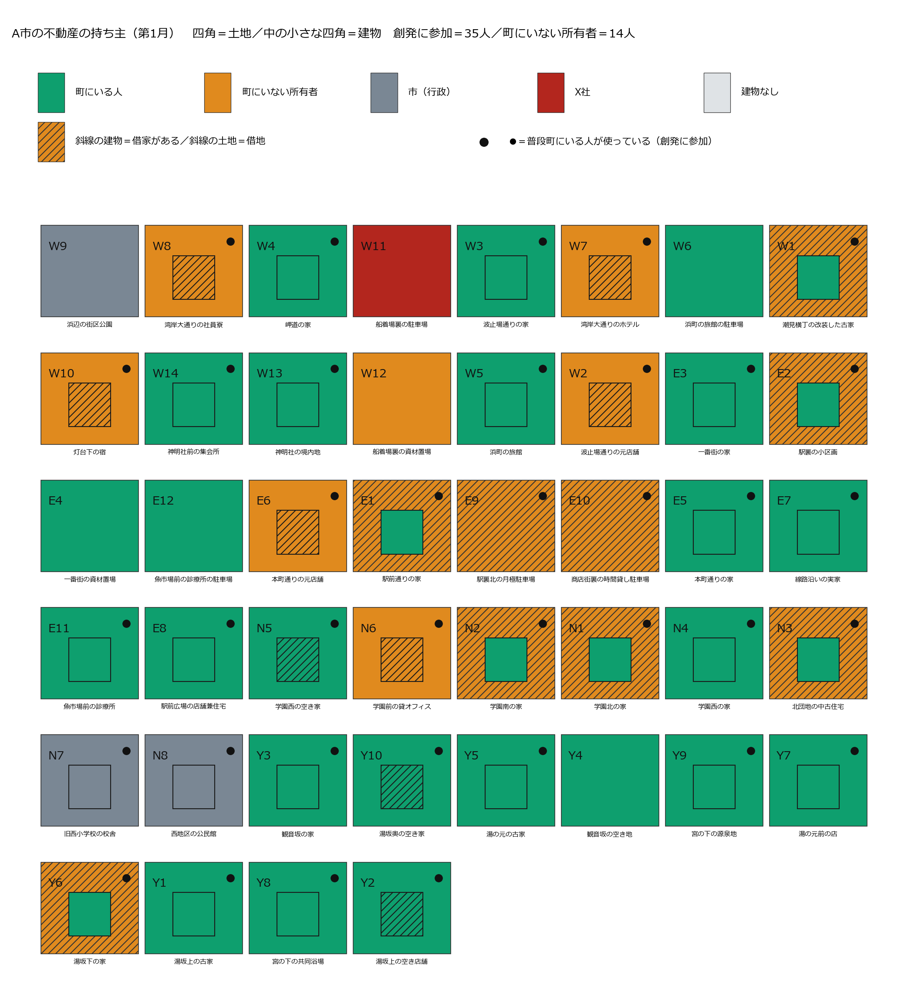

第6月
この月に動いた区画・出た人はいない
この時点＝X社の区画 累計3／44・町にいる人 35人・町を出た人 累計0人・X社が使ったお金 0.33億円（面積では5.8%）
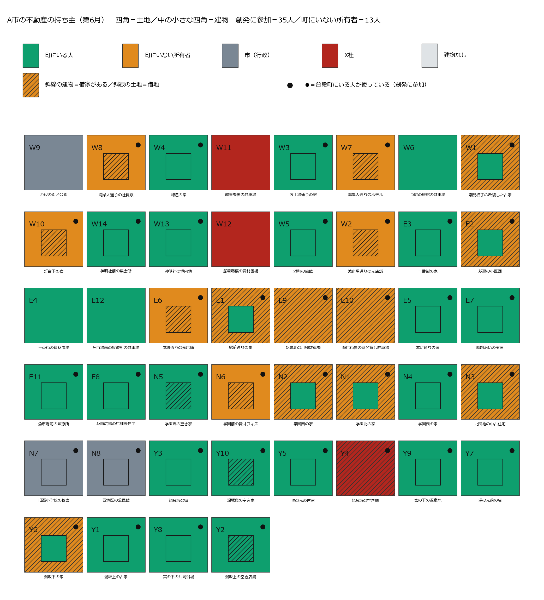
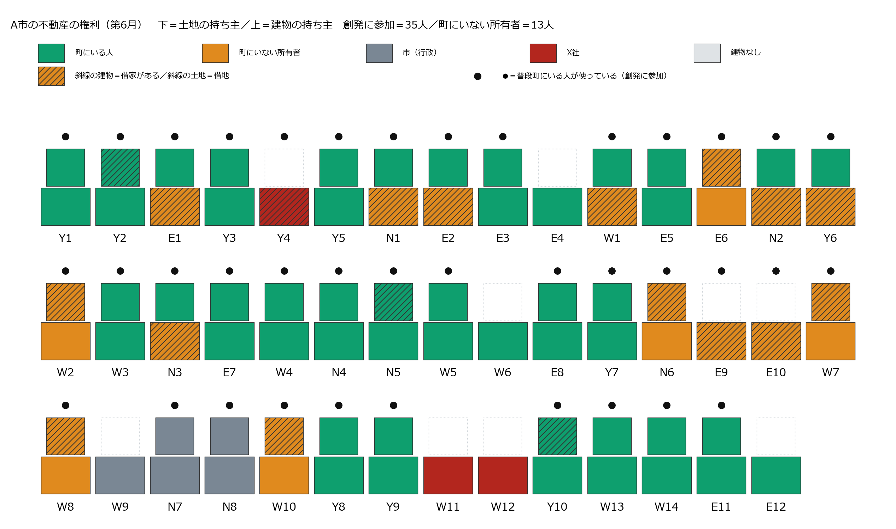
第12月
この月に動いた区画・出た人はいない
この時点＝X社の区画 累計5／44・町にいる人 33人・町を出た人 累計2人・X社が使ったお金 0.67億円（面積では7.5%）
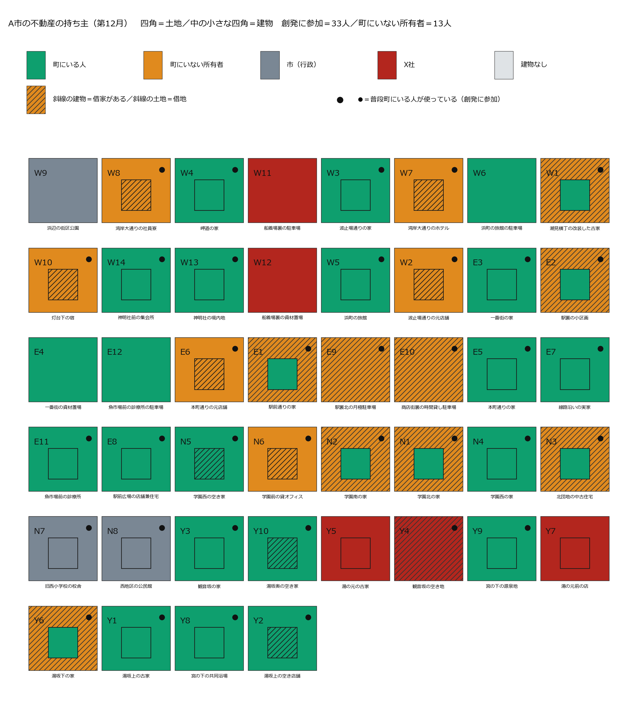
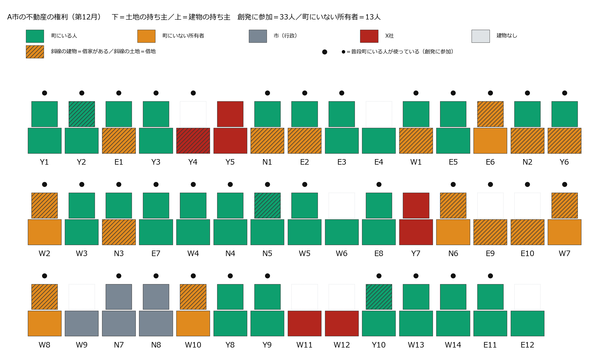
第18月
この月に動いた区画・出た人はいない
この時点＝X社の区画 累計8／44・町にいる人 31人・町を出た人 累計4人・X社が使ったお金 1.42億円（面積では10.2%）
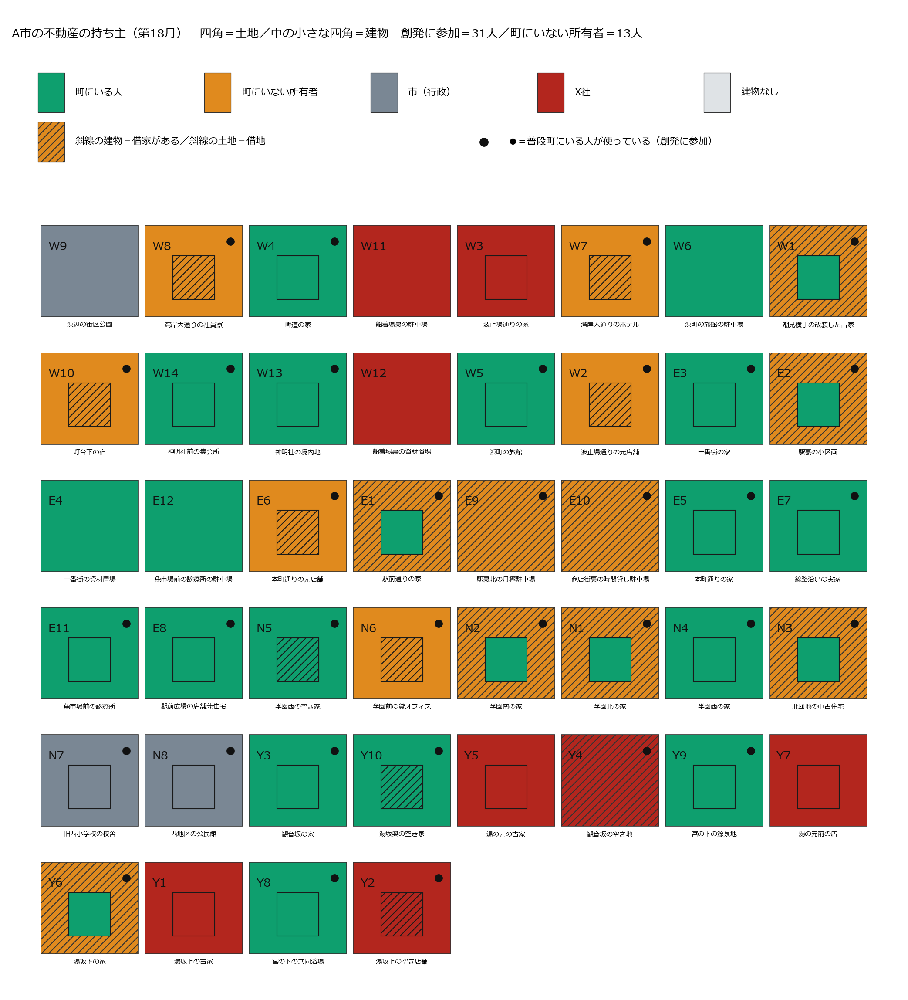
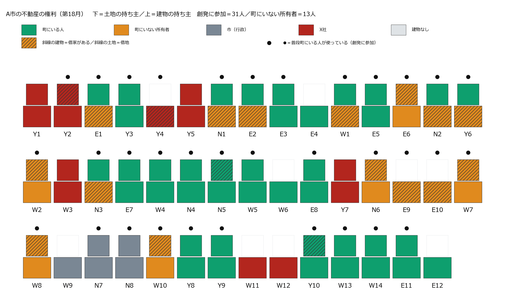
第24月
この月に動いた区画・出た人はいない
この時点＝X社の区画 累計9／44・町にいる人 31人・町を出た人 累計4人・X社が使ったお金 2.25億円（面積では11.8%）
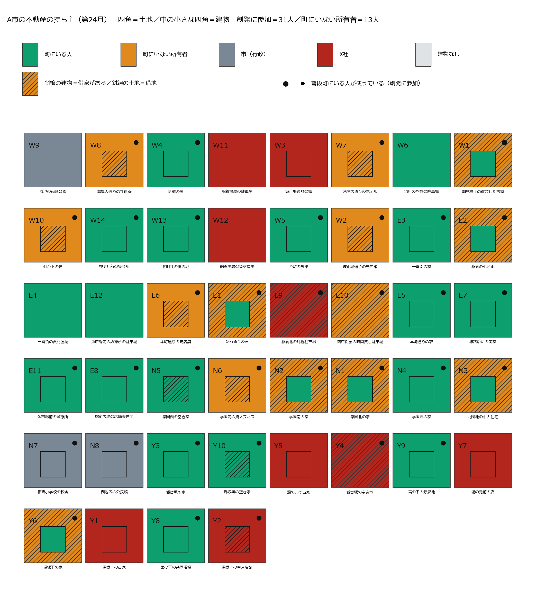
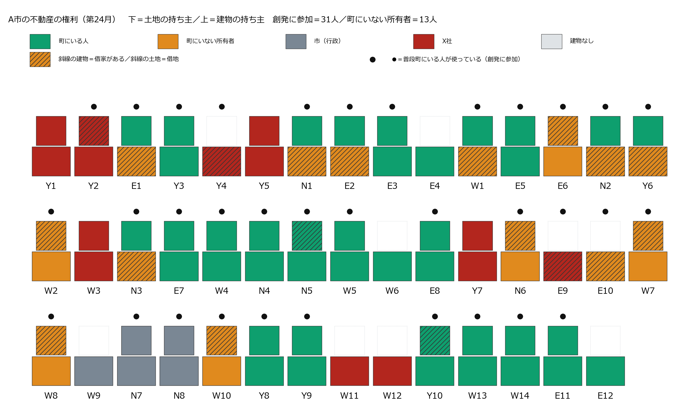
第30月
線路沿いの実家の両方が線路沿いの持ち主さんさんからX社へ（44,928,000円）／線路沿いの持ち主さんが町を出た
この時点＝X社の区画 累計10／44・町にいる人 30人・町を出た人 累計5人・X社が使ったお金 2.70億円（面積では12.8%）
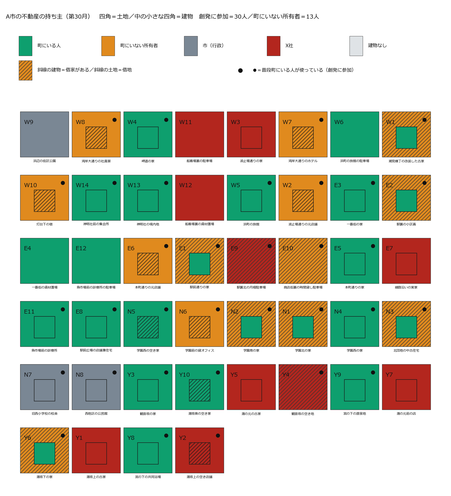
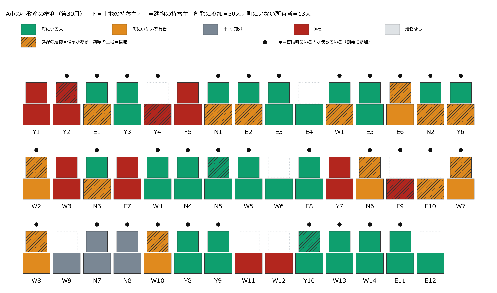
第36月
学園前の貸オフィスの支配人が町を出た
この時点＝X社の区画 累計11／44・町にいる人 27人・町を出た人 累計8人・X社が使ったお金 3.30億円（面積では13.7%）
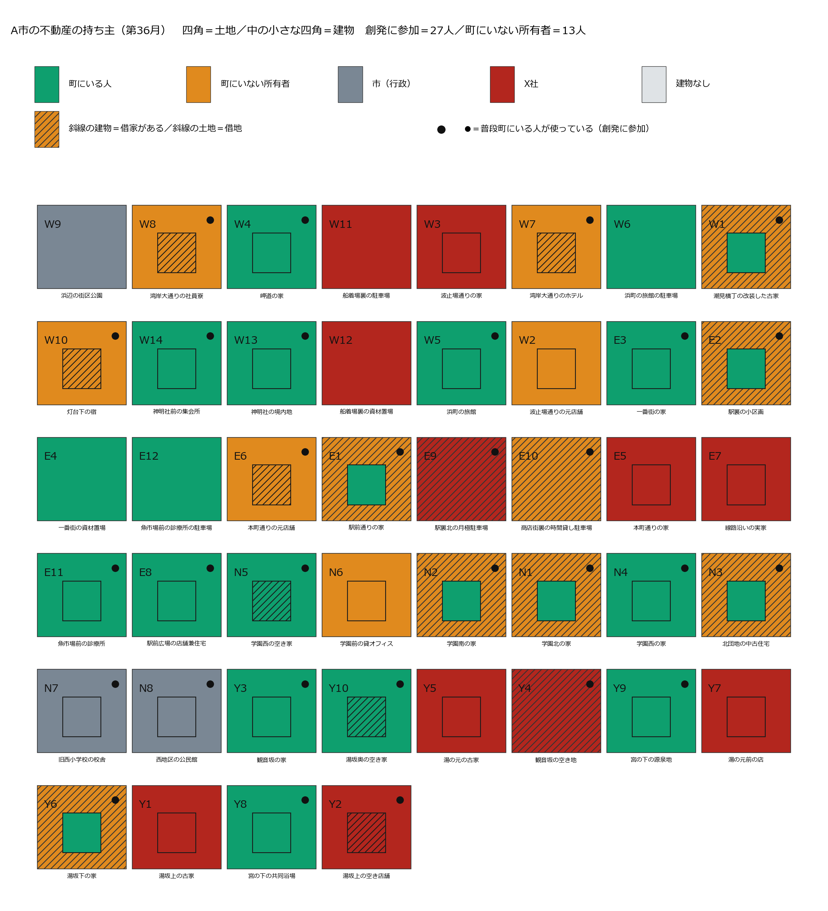
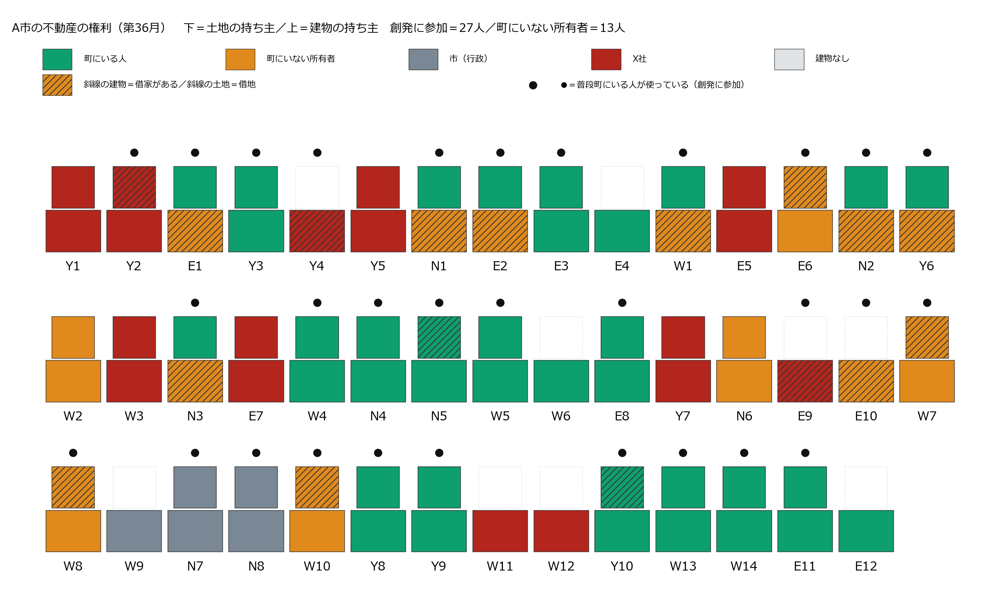
3. 36か月の年表
1か月ずつ、その月に何通の手紙が来て、いくらで、誰が売り、誰が出ていったのかを並べた。引用はすべてその月に本人が書いた言葉の原文。
第1月
X社の手紙 29通（土地10・両方19／町にいる人へ16・町にいない持ち主へ13） 提示額は評価額の 1.15倍（中央値） 売りに出された 11件 世界が配らなかった手紙 8通 場に出た人 24人・発言 18件
成約船着場裏の不在地主 が 船着場裏の駐車場の土地 を 12,000,000円（評価額の1.20倍）で売った
条件提示してくれたことへの感謝。まずは空き地も合わせて検討したい。観音坂の持ち主さん／観音坂の家の両方に 18,000,000円（評価額の1.18倍）の手紙を受けて
提示額は魅力的だが、まだ手放す決断はできない駅裏の駐車場の地主／駅裏北の月極駐車場の土地に 50,000,000円（評価額の1.39倍）の手紙を受けて
自治会員と相談の上、改めて検討します。神明社の自治会長／神明社の境内地の土地に 24,000,000円（評価額の1.50倍）の手紙を受けて
X社から神明社の境内地の土地の購入希望の申し出があった。評価額での購入とのこと。自治会長として、境内地の売却は慎重に判断する必要がある。まずはこの申し出について、自治会のメンバーや氏子の方々と相談する場を設けたい。そのためには、まず自治会の集会所へ行くのが良いだろう。神明社の自治会長／公共施設での発言（3人が聞いた）
こんにちは。灯台下の宿の賃借人です。来月も引き続きお世話になります。建物の雨漏りについて、まだ対応できておらず申し訳あり灯台下の宿の主人 → 灯台下の宿の家主（灯台下の宿・借りて使っている人→家主）
第2月
X社の手紙 29通（土地11・両方18／町にいる人へ16・町にいない持ち主へ13） 提示額は評価額の 1.15倍（中央値） 売りに出された 10件 世界が配らなかった手紙 3通 場に出た人 21人・発言 16件
成約船着場裏の不在地主 が 船着場裏の資材置場の土地 を 8,000,000円（評価額の1.00倍）で売った — 本人の一言「評価額での提示のため」
具体的な条件ではないため。家族のことも考慮したい学園南の地主／学園南の家の土地に 9,360,000円（評価額の1.30倍）の手紙を受けて
申し出の真意を探り、地域への影響を考慮するため宮の下の共同浴場の組合／宮の下の共同浴場の両方に 20,000,000円（評価額の1.04倍）の手紙を受けて
きょうだい3人の同意を得られていないため湯坂奥の空き家の共有代表／湯坂奥の空き家の両方に 3,900,000円（評価額の0.31倍）の手紙を受けて
観音坂の家ですが、X社から1800万円で買い取るとの申し出がありました。前向きに検討したいのですが、空き地についても同様に買い取りの申し出があり、こちらは1200万円とのこと。家の売却を優先したいので、空き地の条件は一旦保留とさせてください。観音坂の持ち主さん／商業施設での発言（12人が聞いた）
いつもお世話になっております。おかげさまで順調に事業を営めております。今後ともどうぞよろしくお願いいたします。学園前の貸オフィスの支配人 → 学園前の貸オフィスの家主（学園前の貸オフィス・借りて使っている人→家主）
第3月
X社の手紙 28通（土地10・両方18／町にいる人へ16・町にいない持ち主へ12） 提示額は評価額の 1.19倍（中央値） 売りに出された 9件 世界が配らなかった手紙 3通 場に出た人 22人・発言 15件
成約観音坂の持ち主さん が 観音坂の空き地の土地 を 13,000,000円（評価額の1.18倍）で売った — 本人の一言「提示額が評価額を上回るため」
まだ決断するには情報が足りず、考える時間が必要だから湯の元のひとり暮らしさん／湯の元の古家の両方に 15,000,000円（評価額の1.20倍）の手紙を受けて
具体的な条件ではないため、家族も考慮したい学園南の地主／学園南の家の土地に 10,000,000円（評価額の1.39倍）の手紙を受けて
提示額は魅力的だが、まだ判断できない一番街の持ち主さん／一番街の家の両方に 34,000,000円（評価額の1.26倍）の手紙を受けて
申し訳ありませんが、今月もX社様からの購入のお話はお断りさせていただきます。父の介護のこともあり、まだ自宅を離れることはできません。線路沿いの持ち主さん／公共施設での発言（4人が聞いた）
ご家族がこの家で暮らし続けたいというお気持ち、大切にしたいと考えております。学園西のご夫婦 → 学園西の借家のご家族（学園西の空き家・家主→借りて使っている人）
第4月
X社の手紙 27通（土地9・両方18／町にいる人へ15・町にいない持ち主へ12） 提示額は評価額の 1.29倍（中央値） 売りに出された 8件 世界が配らなかった手紙 8通 場に出た人 18人・発言 9件
成約この月に売れた区画は無い
地域にとっての重要性を考慮し、真意を探ります宮の下の共同浴場の組合／宮の下の共同浴場の両方に 19,200,000円（評価額の1.00倍）の手紙を受けて
提示額が下がったため、今回は見送ります岬道の持ち主さん／岬道の家の両方に 20,160,000円（評価額の1.02倍）の手紙を受けて
提示額は魅力的だが、まだ手放したくない駅裏の駐車場の地主／駅裏北の月極駐車場の土地に 54,000,000円（評価額の1.50倍）の手紙を受けて
申し訳ありませんが、境内地の土地の売却につきましては、自治会と氏子の皆様と相談してからでないと、こちらでは判断できません。集会所の売却も考えておりませんので、条件はお受けできません。神明社の自治会長／公共施設での発言（4人が聞いた）
ご家族がこの家で暮らし続けたいというお気持ち、大切にしたいと考えております。今後ともどうぞよろしくお願いいたします。学園西の借家のご家族 → 学園西のご夫婦（学園西の空き家・借りて使っている人→家主）
第5月
X社の手紙 28通（土地9・両方19／町にいる人へ16・町にいない持ち主へ12） 提示額は評価額の 1.28倍（中央値） 売りに出された 8件 世界が配らなかった手紙 7通 場に出た人 19人・発言 10件
成約この月に売れた区画は無い
提示額は魅力的だが、地域への影響を考慮し、まず真意を探りたい。宮の下の共同浴場の組合／宮の下の共同浴場の両方に 19,200,000円（評価額の1.00倍）の手紙を受けて
子供たちのことを考えると、まだA市を出られない湯坂上のご夫婦／湯坂上の古家の両方に 27,000,000円（評価額の2.16倍）の手紙を受けて
相続した家への愛着があり、まだ手放したくない観音坂の持ち主さん／観音坂の家の両方に 17,600,000円（評価額の1.16倍）の手紙を受けて
X社様からの申し出、ありがたく拝見しました。しかし、共同浴場と源泉は地域の生活に不可欠なものです。地域への影響を考慮し、現時点では売却を見送らせていただきます。申し出の意図をもう少し詳しくお伺いできれば幸いです。宮の下の共同浴場の組合／公共施設での発言（3人が聞いた）
ご家族がこの家で暮らし続けたいというお気持ち、大切にしたいと考えております。今後ともどうぞよろしくお願いいたします。学園西のご夫婦 → 学園西の借家のご家族（学園西の空き家・家主→借りて使っている人）
第6月
X社の手紙 28通（土地9・両方19／町にいる人へ16・町にいない持ち主へ12） 提示額は評価額の 1.17倍（中央値） 売りに出された 8件 世界が配らなかった手紙 3通 場に出た人 12人・発言 6件
成約この月に売れた区画は無い
地域にとっての重要性を考慮し、真意を探りたい宮の下の共同浴場の組合／宮の下の共同浴場の両方に 19,200,000円（評価額の1.00倍）の手紙を受けて
後継者不在だが、患者との繋がりを大切にしたい魚市場前の診療所の院長／魚市場前の診療所の両方に 57,480,000円（評価額の0.67倍）の手紙を受けて
自治会メンバーや氏子との相談が必要なため神明社の自治会長／神明社の境内地の土地に 16,000,000円（評価額の1.00倍）の手紙を受けて
X社からの申し出について、地域への影響と源泉の重要性を鑑み、今回は売却を見送らせていただきます。申し出の意図について、もう少し詳しくお伺いできればと考えております。宮の下の共同浴場の組合／公共施設での発言（3人が聞いた）
引き続き快適に使っていただきありがとうございます。今後ともどうぞよろしくお願いいたします。学園西のご夫婦 → 学園西の借家のご家族（学園西の空き家・家主→借りて使っている人）
第7月
X社の手紙 28通（土地9・両方19／町にいる人へ16・町にいない持ち主へ12） 提示額は評価額の 1.17倍（中央値） 売りに出された 9件 世界が配らなかった手紙 7通 場に出た人 14人・発言 9件
成約この月に売れた区画は無い
墓地の問題があり、すぐには手放せないため北団地の地主／北団地の中古住宅の土地に 10,080,000円（評価額の1.40倍）の手紙を受けて
父の介護と実家の修繕について検討するため線路沿いの持ち主さん／線路沿いの実家の両方に 30,240,000円（評価額の1.12倍）の手紙を受けて
評価額の妥当性と家族への影響を考慮する学園南の地主／学園南の家の土地に 11,000,000円（評価額の1.53倍）の手紙を受けて
旧西小学校の管理者さん、空き家対策の件でご相談があります。灯台下の宿の主人さん、夏場の観光客誘致イベントについて、何かアイデアはありますか？駅前通りの持ち主さん、いつもお世話になっております。浜辺公園の管理者／公共施設での発言（3人が聞いた）
申し出の件、承知いたしました。事業が落ち着いたら改めて検討します。引き続きよろしくお願いします。学園前の貸オフィスの支配人 → 学園前の貸オフィスの家主（学園前の貸オフィス・借りて使っている人→家主）
第8月
X社の手紙 28通（土地9・両方19／町にいる人へ16・町にいない持ち主へ12） 提示額は評価額の 1.25倍（中央値） 売りに出された 9件 世界が配らなかった手紙 3通 場に出た人 15人・発言 8件
成約この月に売れた区画は無い
申し出の真意を探りたい。地域への影響を考慮。宮の下の共同浴場の組合／宮の下の共同浴場の両方に 20,000,000円（評価額の1.04倍）の手紙を受けて
思い出の土地なので、まだ手放したくない潮見横丁の地主／潮見横丁の改装した古家の土地に 20,000,000円（評価額の1.39倍）の手紙を受けて
提示額は魅力的だが、まだ手放したくない駅裏の駐車場の地主／駅裏北の月極駐車場の土地に 54,000,000円（評価額の1.50倍）の手紙を受けて
X社さんからの申し出、ありがたく拝見しました。しかし、この共同浴場は地域の皆さんの生活に根差した大切な施設であり、源泉の管理も担っております。そのため、すぐに手放すことはできません。まずは、なぜこの施設にご関心を持たれたのか、その意図を詳しくお聞かせいただけますでしょうか。宮の下の共同浴場の組合／公共施設での発言（3人が聞いた）
ご連絡ありがとうございます。引き続き良好な関係を維持したく存じます。来月改めてご相談させてください。学園前の貸オフィスの支配人 → 学園前の貸オフィスの家主（学園前の貸オフィス・借りて使っている人→家主）
第9月
X社の手紙 28通（土地9・両方19／町にいる人へ16・町にいない持ち主へ12） 提示額は評価額の 1.41倍（中央値） 売りに出された 8件 世界が配らなかった手紙 3通 場に出た人 14人・発言 9件
成約この月に売れた区画は無い
まだ売却のタイミングではないと判断したため湯坂下の地主／湯坂下の家の土地に 14,000,000円（評価額の1.41倍）の手紙を受けて
借家人への影響を考慮し、時期尚早と判断学園南の地主／学園南の家の土地に 15,000,000円（評価額の2.08倍）の手紙を受けて
思い出の土地のため、まだ手放せません。潮見横丁の地主／潮見横丁の改装した古家の土地に 21,000,000円（評価額の1.46倍）の手紙を受けて
一番街の家と資材置場を売りに出します。X社からの提示額は魅力的ですが、まだ様子を見たいので売却は見送ります。一番街の持ち主さん／商業施設での発言（7人が聞いた）
いつも温かい応援ありがとうございます。この場所で頑張りますので、これからもよろしくお願いします。本町通りの借り店主 → 本町通りの元店舗の家主（本町通りの元店舗・借りて使っている人→家主）
第10月
X社の手紙 28通（土地9・両方19／町にいる人へ15・町にいない持ち主へ13） 提示額は評価額の 1.47倍（中央値） 売りに出された 10件 世界が配らなかった手紙 3通 場に出た人 14人・発言 10件
成約湯の元前の店のご主人 が 湯の元前の店の両方 を 15,000,000円（評価額の1.10倍）で売った — 本人の一言「高額な買収提案のため」
退場湯の元前の店のご主人 が町を出た（両方を売ってその場所を離れた） — 「高額な買収提案のため」
共同浴場の存続について組合長の話を聞いてから決める湯の元のひとり暮らしさん／湯の元の古家の両方に 18,515,000円（評価額の1.48倍）の手紙を受けて
共有者の意見が一致しておらず、交渉の余地があるため湯坂奥の空き家の共有代表／湯坂奥の空き家の両方に 21,980,000円（評価額の1.76倍）の手紙を受けて
提示額は魅力的だが、まだ交渉の余地がある。波止場通りのご夫婦／波止場通りの家の両方に 30,000,000円（評価額の1.52倍）の手紙を受けて
皆さん、こんにちは。灯台下の宿です。この度、建物の雨漏り修理が無事に完了しました。これで安心して皆さんと地域を盛り上げていけると思います。潮見横丁の持ち主さん、この湾岸地区の活性化について、ぜひご意見をお聞かせください。灯台下の宿の主人／商業施設での発言（6人が聞いた）
いつもお世話になっております。このまま住み続けたいと思っております。今後ともどうぞよろしくお願いいたします。学園西の借家のご家族 → 学園西のご夫婦（学園西の空き家・借りて使っている人→家主）
第11月
X社の手紙 24通（土地8・両方16／町にいる人へ13・町にいない持ち主へ11） 提示額は評価額の 1.54倍（中央値） 売りに出された 9件 世界が配らなかった手紙 2通 場に出た人 14人・発言 9件
成約湯の元のひとり暮らしさん が 湯の元の古家の両方 を 18,515,000円（評価額の1.48倍）で売った — 本人の一言「体力的な限界と家族の意向のため」
退場湯の元のひとり暮らしさん が町を出た（両方を売ってその場所を離れた） — 「体力的な限界と家族の意向のため」
神社の土地であり、自治会だけで売却はできない神明社の自治会長／神明社の境内地の土地に 25,000,000円（評価額の1.56倍）の手紙を受けて
現在の居住者への配慮と、自治会活動のため。学園西のご夫婦／学園西の空き家の両方に 14,000,000円（評価額の1.43倍）の手紙を受けて
申し出の真意を探りたい、地域への影響を考慮宮の下の共同浴場の組合／宮の下の共同浴場の両方に 23,000,000円（評価額の1.20倍）の手紙を受けて
皆さん、こんにちは。雨漏りの修理も終わって、ようやく落ち着きました。この辺りは活気があっていいですね。潮見横丁の持ち主さん、この辺りはいつも賑わっていますね。何か新しい動きはありますか？湯坂上の借り店主さん、もしよければ、地域で一緒にできるイベントとか、考えてみませんか？灯台下の宿の主人／商業施設での発言（6人が聞いた）
引き続き快適に使わせていただき、ありがとうございます。今後ともどうぞよろしくお願いいたします。学園西の借家のご家族 → 学園西のご夫婦（学園西の空き家・借りて使っている人→家主）
第12月
X社の手紙 24通（土地7・両方17／町にいる人へ14・町にいない持ち主へ10） 提示額は評価額の 1.34倍（中央値） 売りに出された 9件 世界が配らなかった手紙 4通 場に出た人 13人・発言 9件
成約この月に売れた区画は無い
申し出の真意を探り、地域への影響を考慮するため宮の下の共同浴場の組合／宮の下の共同浴場の両方に 23,000,000円（評価額の1.20倍）の手紙を受けて
入居者の状況を考慮し、来月以降に再検討するため駅裏の地主／駅裏の小区画の土地に 55,000,000円（評価額の2.55倍）の手紙を受けて
家族との関係性を考慮し、時期尚早と判断学園南の地主／学園南の家の土地に 16,000,000円（評価額の2.22倍）の手紙を受けて
先月、学園西の空き家についてX社から非常に良い条件のオファーがありましたが、現在そちらを利用されている方々のこともありますし、自治会の活動も続けたいので、今回は売却を見送ることにしました。引き続き、地域の活動に力を入れていきたいと考えております。学園西のご夫婦／公共施設での発言（1人が聞いた）
応援ありがとうございます。私もこの街で店を続けられることを嬉しく思っています。これからもよろしくお願いします。本町通りの借り店主 → 本町通りの元店舗の家主（本町通りの元店舗・借りて使っている人→家主）
第13月
X社の手紙 23通（土地7・両方16／町にいる人へ13・町にいない持ち主へ10） 提示額は評価額の 1.53倍（中央値） 売りに出された 9件 世界が配らなかった手紙 5通 場に出た人 16人・発言 11件
成約湯坂上のご夫婦 が 湯坂上の古家の両方 を 28,728,000円（評価額の2.30倍）で売った — 本人の一言「提示額に納得したため」
退場湯坂上のご夫婦 が町を出た（両方を売ってその場所を離れた） — 「提示額に納得したため」
評価額を下回るため、支配人との関係を考慮学園前の貸オフィスの家主／学園前の貸オフィスの両方に 16,400,000円（評価額の0.21倍）の手紙を受けて
提示額は魅力的だが、まだ手放したくない駅裏の駐車場の地主／駅裏北の月極駐車場の土地に 75,000,000円（評価額の2.08倍）の手紙を受けて
墓地の管理を理由に、今回は見送ります北団地の地主／北団地の中古住宅の土地に 10,500,000円（評価額の1.46倍）の手紙を受けて
皆さま、お集まりいただきありがとうございます。湯坂奥の空き家について、X社から条件が届きました。この条件を元に、共有者との話し合いを進めたいと考えております。つきましては、皆さまで集まり、今後の進め方についてご相談させていただけないでしょうか。公共施設での話し合いの場を設けるのはいかがでしょうか。湯坂奥の空き家の共有代表／公共施設での発言（3人が聞いた）
来月もどうぞよろしくお願いいたします。いつも感謝しております。灯台下のご主人とも、また何かできればと考えております。湯坂上の借り店主 → 湯坂上のご夫婦（湯坂上の空き店舗・借りて使っている人→家主）
第14月
X社の手紙 18通（土地4・両方14／町にいる人へ12・町にいない持ち主へ6） 提示額は評価額の 1.65倍（中央値） 売りに出された 8件 世界が配らなかった手紙 16通 場に出た人 15人・発言 8件
成約湯坂上のご夫婦 が 湯坂上の空き店舗の両方 を 15,000,000円（評価額の1.10倍）で売った — 本人の一言「提示額が評価額を上回るため」
成約波止場通りのご夫婦 が 波止場通りの家の両方 を 32,000,000円（評価額の1.62倍）で売った — 本人の一言「提示額が魅力的だから」
退場波止場通りのご夫婦 が町を出た（両方を売ってその場所を離れた） — 「提示額が魅力的だから」
転勤の可能性があり、まだ決断できない岬道の持ち主さん／岬道の家の両方に 28,000,000円（評価額の1.42倍）の手紙を受けて
提示額は魅力的だが、詳細を確認したい灯台下の宿の家主／灯台下の宿の両方に 40,000,000円（評価額の1.20倍）の手紙を受けて
地域にとって不可欠なため手放せない魚市場前の診療所の院長／魚市場前の診療所の駐車場の土地に 75,000,000円（評価額の2.08倍）の手紙を受けて
いつもお世話になっております。子供たちの学校もありますので、これからもこの家で安心して暮らしていきたいと思っています。今後ともどうぞよろしくお願いいたします。学園西の借家のご家族／交通拠点での発言（1人が聞いた）
応援ありがとうございます。私もこの街で店を続けられることを嬉しく思っています。これからもよろしくお願いします。本町通りの借り店主 → 本町通りの元店舗の家主（本町通りの元店舗・借りて使っている人→家主）
第15月
X社の手紙 16通（土地4・両方12／町にいる人へ12・町にいない持ち主へ4） 提示額は評価額の 1.67倍（中央値） 売りに出された 7件 世界が配らなかった手紙 16通 場に出た人 16人・発言 12件
成約この月に売れた区画は無い
提示額は魅力的だが、まずは条件確認したい灯台下の宿の家主／灯台下の宿の両方に 40,000,000円（評価額の1.20倍）の手紙を受けて
申し出の真意を探り、地域への影響を考慮宮の下の共同浴場の組合／宮の下の共同浴場の両方に 28,000,000円（評価額の1.46倍）の手紙を受けて
提示額は魅力的だが、まだ手放したくない駅裏の駐車場の地主／駅裏北の月極駐車場の土地に 80,000,000円（評価額の2.22倍）の手紙を受けて
X社から提示された金額について、共有者の皆さんに相談する機会を設けたいと考えています。湯坂奥の空き家の共有代表／公共施設での発言（2人が聞いた）
引き続き快適にご利用いただけて何よりです。今後ともよろしくお願いいたします。こちらこそ、いつもありがとうございます。学園西の借家のご家族 → 学園西のご夫婦（学園西の空き家・借りて使っている人→家主）
第16月
X社の手紙 17通（土地4・両方13／町にいる人へ12・町にいない持ち主へ5） 提示額は評価額の 1.51倍（中央値） 売りに出された 5件 世界が配らなかった手紙 15通 場に出た人 15人・発言 12件
成約この月に売れた区画は無い
愛着があり、まだ手放す決断ができない一番街の持ち主さん／一番街の家の両方に 30,700,000円（評価額の1.14倍）の手紙を受けて
借家のご家族の継続利用を優先するため学園西のご夫婦／学園西の空き家の両方に 19,000,000円（評価額の1.94倍）の手紙を受けて
転勤の可能性を考慮し、判断を保留する岬道の持ち主さん／岬道の家の両方に 29,000,000円（評価額の1.47倍）の手紙を受けて
X社から学園西の空き家について、評価額の1.95倍という破格の条件が届きました。ただ、そちらにお住まいのご家族の生活を最優先に考えたいので、現時点では売却は考えておりません。もしよろしければ、一度お話する機会をいただけませんか。学園西のご夫婦／交通拠点での発言（1人が聞いた）
応援ありがとうございます。私もこの街で店を続けられることを嬉しく思っています。これからもよろしくお願いします。本町通りの借り店主 → 本町通りの元店舗の家主（本町通りの元店舗・借りて使っている人→家主）
第17月
X社の手紙 17通（土地3・両方14／町にいる人へ12・町にいない持ち主へ5） 提示額は評価額の 1.51倍（中央値） 売りに出された 6件 世界が配らなかった手紙 15通 場に出た人 13人・発言 8件
成約この月に売れた区画は無い
提示額は魅力的だが、まだ手放したくない駅裏の駐車場の地主／駅裏北の月極駐車場の土地に 82,000,000円（評価額の2.28倍）の手紙を受けて
店主との関係を優先し、売却を見送る波止場通りの元店舗の家主／波止場通りの元店舗の両方に 25,000,000円（評価額の1.44倍）の手紙を受けて
申し出の真意を探り地域影響を考慮宮の下の共同浴場の組合／宮の下の共同浴場の両方に 29,000,000円（評価額の1.51倍）の手紙を受けて
こちらこそ、お話を伺う機会をいただけるとのこと、大変ありがたく存じます。この街での生活を大切にしたいと思っておりますので、ぜひ、今後のことについてお話しさせてください。学園西の借家のご家族／公共施設での発言（1人が聞いた）
いつもお世話になっております。引き続き、駐車場運営に尽力してまいります。今後ともどうぞよろしくお願いいたします。駅裏北の駐車場の会社 → 駅裏の駐車場の地主（駅裏北の月極駐車場・借りて使っている人→家主）
第18月
X社の手紙 17通（土地4・両方13／町にいる人へ12・町にいない持ち主へ5） 提示額は評価額の 1.51倍（中央値） 売りに出された 6件 世界が配らなかった手紙 15通 場に出た人 11人・発言 5件
成約この月に売れた区画は無い
申し出の真意を探りたい。地域への影響を考慮。宮の下の共同浴場の組合／宮の下の共同浴場の両方に 29,000,000円（評価額の1.51倍）の手紙を受けて
条件の再確認をしたいので、今回は見送る灯台下の宿の家主／灯台下の宿の両方に 26,400,000円（評価額の0.80倍）の手紙を受けて
診療所にとって不可欠な土地であるため魚市場前の診療所の院長／魚市場前の診療所の駐車場の土地に 76,000,000円（評価額の2.11倍）の手紙を受けて
いつもご配慮いただきありがとうございます。子供たちの学校もありますし、この学園西の家でこれからも家族と暮らしていきたいと考えております。旧西小学校の跡地利用について、何かお聞かせいただけることがあれば幸いです。学園西の借家のご家族／公共施設での発言（1人が聞いた）
いつもお世話になっております。この場所での商売を続けられることを大変嬉しく思っております。今後ともどうぞよろしくお願いい波止場通りの借り店主 → 波止場通りの元店舗の家主（波止場通りの元店舗・借りて使っている人→家主）
第19月
X社の手紙 21通（土地7・両方14／町にいる人へ12・町にいない持ち主へ9） 提示額は評価額の 1.67倍（中央値） 売りに出された 5件 世界が配らなかった手紙 11通 場に出た人 11人・発言 7件
成約この月に売れた区画は無い
提示額は魅力的だが、条件の再確認をしたい灯台下の宿の家主／灯台下の宿の両方に 26,400,000円（評価額の0.80倍）の手紙を受けて
提示額は魅力的だが、まだ手放したくない駅裏の駐車場の地主／駅裏北の月極駐車場の土地に 82,000,000円（評価額の2.28倍）の手紙を受けて
建物の所有者が変わったばかりのため学園南の地主／学園南の家の土地に 16,000,000円（評価額の2.22倍）の手紙を受けて
旧西小学校の管理者さん、本日は街の将来について貴重なお話を伺えて大変勉強になりました。子供たちの学校もありますし、この学園西地区に住み続けたいと考えております。学園西の借家のご家族／公共施設での発言（2人が聞いた）
いつもお世話になっております。引き続き、駐車場運営に尽力してまいります。今後ともどうぞよろしくお願いいたします。駅裏北の駐車場の会社 → 駅裏の駐車場の地主（駅裏北の月極駐車場・借りて使っている人→家主）
第20月
X社の手紙 17通（土地5・両方12／町にいる人へ12・町にいない持ち主へ5） 提示額は評価額の 1.68倍（中央値） 売りに出された 6件 世界が配らなかった手紙 16通 場に出た人 12人・発言 10件
成約この月に売れた区画は無い
評価額の2.3倍は魅力的だが、まだ手放さない駅裏の駐車場の地主／駅裏北の月極駐車場の土地に 83,000,000円（評価額の2.31倍）の手紙を受けて
提示額は魅力的だが、まだ売却の必要はない学園南の地主／学園南の家の土地に 15,840,000円（評価額の2.20倍）の手紙を受けて
転勤の可能性があり、まだ決断できないため岬道の持ち主さん／岬道の家の両方に 30,000,000円（評価額の1.52倍）の手紙を受けて
先日は私の宿の件で、大変お世話になりました。おかげさまで、家主さんとの関係も良好になり、大変感謝しております。今後とも、この街の観光振興に貢献できるよう、精一杯努めてまいりますので、どうぞよろしくお願いいたします。灯台下の宿の主人／公共施設での発言（1人が聞いた）
いつもお世話になっております。これからも住み続けたい気持ち、お伝えできて嬉しいです。引き続きよろしくお願いいたします。学園西の借家のご家族 → 学園西のご夫婦（学園西の空き家・借りて使っている人→家主）
第21月
X社の手紙 23通（土地8・両方15／町にいる人へ12・町にいない持ち主へ11） 提示額は評価額の 1.58倍（中央値） 売りに出された 5件 世界が配らなかった手紙 9通 場に出た人 12人・発言 9件
成約駅裏の駐車場の地主 が 駅裏北の月極駐車場の土地 を 82,800,000円（評価額の2.30倍）で売った — 本人の一言「破格の条件のため」
転勤の可能性を考慮し、まだ決断できない。岬道の持ち主さん／岬道の家の両方に 23,800,000円（評価額の1.21倍）の手紙を受けて
建物の所有者が新しいため、時期尚早学園南の地主／学園南の家の土地に 16,000,000円（評価額の2.22倍）の手紙を受けて
将来的な価値上昇を見込んでいるため湾岸のホテルの所有会社／湾岸大通りのホテルの両方に 138,000,000円（評価額の0.21倍）の手紙を受けて
灯台下の宿の主人さん、先日お話しした観光施策の件ですが、その後、宿泊客の入り具合など、何か変化はありましたか？ 駅前通りの持ち主さん、そちらの地区の空き家や、住民の方々の様子はいかがでしょうか？旧西小学校の管理者／公共施設での発言（2人が聞いた）
いつもお世話になっております。おかげさまで快適に暮らせております。感謝しております。今後ともどうぞよろしくお願いいたしま学園西の借家のご家族 → 学園西のご夫婦（学園西の空き家・借りて使っている人→家主）
第22月
X社の手紙 24通（土地10・両方14／町にいる人へ12・町にいない持ち主へ12） 提示額は評価額の 1.63倍（中央値） 売りに出された 4件 世界が配らなかった手紙 8通 場に出た人 11人・発言 7件
成約この月に売れた区画は無い
建物の所有者が変わったばかりで、借家人も新しい状況のため学園南の地主／学園南の家の土地に 15,840,000円（評価額の2.20倍）の手紙を受けて
提示額は魅力的だが、まだ手放す決断はできない潮見横丁の地主／潮見横丁の改装した古家の土地に 24,912,000円（評価額の1.73倍）の手紙を受けて
転勤の可能性を考慮し、まだ決められない岬道の持ち主さん／岬道の家の両方に 23,000,000円（評価額の1.17倍）の手紙を受けて
皆さんのところにも、あのX社から何か話は来ていますか？うちも食堂の件で、両方の権利をまとめて買いたいという話がありましてね。駅前広場の食堂のご夫婦／商業施設での発言（6人が聞いた）
いつもお世話になっております。おかげさまで快適に暮らせております。感謝しております。今後ともどうぞよろしくお願いいたしま学園西のご夫婦 → 学園西の借家のご家族（学園西の空き家・家主→借りて使っている人）
第23月
X社の手紙 24通（土地10・両方14／町にいる人へ12・町にいない持ち主へ12） 提示額は評価額の 1.67倍（中央値） 売りに出された 5件 世界が配らなかった手紙 8通 場に出た人 10人・発言 6件
成約この月に売れた区画は無い
提示額は魅力的だが、思い出の品なので慎重に判断したい灯台下の宿の家主／灯台下の宿の両方に 40,000,000円（評価額の1.20倍）の手紙を受けて
提示額は魅力的だが、まだ手放す決断はできない潮見横丁の地主／潮見横丁の改装した古家の土地に 24,960,000円（評価額の1.73倍）の手紙を受けて
転勤の可能性を考慮して、まだ決断できない岬道の持ち主さん／岬道の家の両方に 23,040,000円（評価額の1.17倍）の手紙を受けて
皆様、X社からの買収提案、気になっていらっしゃいますか？うちにも話が来ているのですが、どうしたものかと。駅前広場の食堂のご夫婦／商業施設での発言（5人が聞いた）
いつもお世話になっております。こちらこそ、今後ともどうぞよろしくお願いいたします。来月も良いことがありますように。波止場通りの元店舗の家主 → 波止場通りの借り店主（波止場通りの元店舗・家主→借りて使っている人）
第24月
X社の手紙 23通（土地10・両方13／町にいる人へ12・町にいない持ち主へ11） 提示額は評価額の 1.67倍（中央値） 売りに出された 4件 世界が配らなかった手紙 9通 場に出た人 8人・発言 4件
成約この月に売れた区画は無い
より良い条件を引き出せる可能性を探るため本町通りの持ち主さん／本町通りの家の両方に 28,000,000円（評価額の1.04倍）の手紙を受けて
借家人との関係を考慮し、まだ様子を見たい湯坂下の地主／湯坂下の家の土地に 18,018,000円（評価額の1.82倍）の手紙を受けて
現時点では支配人との関係を優先するため学園前の貸オフィスの家主／学園前の貸オフィスの両方に 227,700,000円（評価額の2.86倍）の手紙を受けて
灯台下さん、先日の地域イベントへの協賛依頼の件ですが、市の予算も限られておりまして、もう少し内容を検討したいと考えております。例えば、イベントの集客見込みや、地域経済への波及効果など、具体的なデータがあれば、より前向きに検討できるのですが。旧西小学校の管理者／公共施設での発言（1人が聞いた）
ご丁寧なメッセージありがとうございます。これからもどうぞよろしくお願いいたします。地域に貢献できるよう努めます。灯台下の宿の主人 → 灯台下の宿の家主（灯台下の宿・借りて使っている人→家主）
第25月
X社の手紙 24通（土地11・両方13／町にいる人へ12・町にいない持ち主へ12） 提示額は評価額の 1.65倍（中央値） 売りに出された 5件 世界が配らなかった手紙 8通 場に出た人 7人・発言 4件
成約この月に売れた区画は無い
借家人との関係を考慮し、まだ様子を見たい。湯坂下の地主／湯坂下の家の土地に 18,000,000円（評価額の1.82倍）の手紙を受けて
墓地があるため、すぐには売却できません北団地の地主／北団地の中古住宅の土地に 12,960,000円（評価額の1.80倍）の手紙を受けて
借り主の状況を考慮し、まだ手放せない本町通りの元店舗の家主／本町通りの元店舗の両方に 37,080,000円（評価額の1.58倍）の手紙を受けて
先日はお忙しい中、お時間をいただきありがとうございました。旧西小学校の管理者様のご協力のおかげで、ゲストハウスの改修について前向きに進められそうです。今後とも、どうぞよろしくお願いいたします。灯台下の宿の主人／公共施設での発言（1人が聞いた）
引き続き、駐車場運営に尽力してまいります。今後ともどうぞよろしくお願いいたします。駅裏の駐車場の地主 → 駅裏北の駐車場の会社（商店街裏の時間貸し駐車場・家主→借りて使っている人）
第26月
X社の手紙 24通（土地11・両方13／町にいる人へ12・町にいない持ち主へ12） 提示額は評価額の 1.63倍（中央値） 売りに出された 5件 世界が配らなかった手紙 8通 場に出た人 8人・発言 5件
成約この月に売れた区画は無い
借家人との関係を考慮し、まだ様子を見たい湯坂下の地主／湯坂下の家の土地に 17,998,000円（評価額の1.82倍）の手紙を受けて
入居者の状況を考慮し、時期尚早と判断。駅裏の地主／駅裏の小区画の土地に 55,000,000円（評価額の2.55倍）の手紙を受けて
現在、良好な関係を維持したいからです学園前の貸オフィスの家主／学園前の貸オフィスの両方に 23,000,000円（評価額の0.29倍）の手紙を受けて
灯台下の宿さん、先月お話しした地域イベントの件ですが、協賛の件でいくつか具体的にご相談したいことがあります。本町通りの借り店主さん、一番街の持ち主さん、潮見横丁の持ち主さん、皆様も何かイベント関連でお困りのことや、ご協力できることがあればお聞かせください。旧西小学校の管理者／商業施設での発言（3人が聞いた）
引き続き、駐車場運営に尽力してまいります。今後ともどうぞよろしくお願いいたします。駅裏の駐車場の地主 → 駅裏北の駐車場の会社（商店街裏の時間貸し駐車場・家主→借りて使っている人）
第27月
X社の手紙 23通（土地10・両方13／町にいる人へ12・町にいない持ち主へ11） 提示額は評価額の 1.94倍（中央値） 売りに出された 5件 世界が配らなかった手紙 9通 場に出た人 8人・発言 5件
成約この月に売れた区画は無い
思い出の場所であり、まだ手放す決断ができない灯台下の宿の家主／灯台下の宿の両方に 40,000,000円（評価額の1.20倍）の手紙を受けて
介護のため、今はA市を離れられません線路沿いの持ち主さん／線路沿いの実家の両方に 44,928,000円（評価額の1.67倍）の手紙を受けて
支配人との良好な関係を優先するため学園前の貸オフィスの家主／学園前の貸オフィスの両方に 100,000,000円（評価額の1.26倍）の手紙を受けて
旧西小学校の管理者さん、市の観光施策についてお伺いしたいのですが。私のゲストハウスも協力できることがあるかもしれません。灯台下の宿の主人／商業施設での発言（4人が聞いた）
いつも応援ありがとうございます。私もこの街で店を続けられることに感謝しています。これからもどうぞよろしくお願いいたします本町通りの借り店主 → 本町通りの元店舗の家主（本町通りの元店舗・借りて使っている人→家主）
第28月
X社の手紙 24通（土地11・両方13／町にいる人へ12・町にいない持ち主へ12） 提示額は評価額の 1.78倍（中央値） 売りに出された 4件 世界が配らなかった手紙 8通 場に出た人 10人・発言 8件
成約この月に売れた区画は無い
入居者の状況を考慮し、現時点では売却しない駅裏の地主／駅裏の小区画の土地に 54,000,000円（評価額の2.50倍）の手紙を受けて
借家人との関係を考慮し、まだ様子を見たい湯坂下の地主／湯坂下の家の土地に 18,000,000円（評価額の1.82倍）の手紙を受けて
転勤の可能性を考慮し、まだ決断できない岬道の持ち主さん／岬道の家の両方に 23,040,000円（評価額の1.17倍）の手紙を受けて
灯台下さん、お久しぶりです。市の担当者の方に、今後の不動産活用について相談に来ました。X社からの提示額はありがたいのですが、まだ熟考したいと考えています。駅前広場の食堂のご夫婦／公共施設での発言（1人が聞いた）
いつも温かいお言葉をありがとうございます。子供たちも元気に成長しており、この家で安心して暮らせていることに感謝しています学園西の借家のご家族 → 学園西のご夫婦（学園西の空き家・借りて使っている人→家主）
第29月
X社の手紙 22通（土地9・両方13／町にいる人へ12・町にいない持ち主へ10） 提示額は評価額の 1.84倍（中央値） 売りに出された 4件 世界が配らなかった手紙 10通 場に出た人 10人・発言 7件
成約この月に売れた区画は無い
提示額は魅力的だが、まだ手放す決断はできない駅裏の駐車場の地主／商店街裏の時間貸し駐車場の土地に 48,000,000円（評価額の2.00倍）の手紙を受けて
借家人と建物の状況を鑑み、時期尚早と判断。学園南の地主／学園南の家の土地に 16,000,000円（評価額の2.22倍）の手紙を受けて
入居者への配慮と将来の売却機会保持のため駅裏の地主／駅裏の小区画の土地に 54,000,000円（評価額の2.50倍）の手紙を受けて
申し訳ありませんが、自治会と氏子の総意として、境内地の売却は応じられません。集会所の売却についても、現時点では申し出がありませんので、現状維持といたします。神明社の自治会長／公共施設での発言（1人が聞いた）
いつも温かいお言葉をありがとうございます。子供たちも元気に成長しており、この家で安心して暮らせていることに感謝しています学園西のご夫婦 → 学園西の借家のご家族（学園西の空き家・家主→借りて使っている人）
第30月
X社の手紙 22通（土地8・両方14／町にいる人へ11・町にいない持ち主へ11） 提示額は評価額の 1.88倍（中央値） 売りに出された 6件 世界が配らなかった手紙 10通 場に出た人 13人・発言 6件
成約線路沿いの持ち主さん が 線路沿いの実家の両方 を 44,928,000円（評価額の1.67倍）で売った — 本人の一言「維持費負担と将来を考慮」
退場線路沿いの持ち主さん が町を出た（両方を売ってその場所を離れた） — 「維持費負担と将来を考慮」
提示額に納得できないため、引き続き所有する観音坂の持ち主さん／観音坂の家の両方に 40,000,000円（評価額の2.63倍）の手紙を受けて
町への愛着と人間関係を大切にしたいから一番街の持ち主さん／一番街の家の両方に 35,000,000円（評価額の1.30倍）の手紙を受けて
借地人との関係を考慮し、今回は見送る駅前通りの地主／駅前通りの家の土地に 55,000,000円（評価額の2.55倍）の手紙を受けて
大家さん、いつも気にかけてくださってありがとうございます。この場所で、これからも頑張っていきますので、どうぞよろしくお願いします。本町通りの借り店主／商業施設での発言（8人が聞いた）
建物の修繕について、引き続きご相談させてください。雨漏りについても、早急に修繕したいと考えております。近いうちに改めてお灯台下の宿の家主 → 灯台下の宿の主人（灯台下の宿・家主→借りて使っている人）
第31月
X社の手紙 23通（土地9・両方14／町にいる人へ11・町にいない持ち主へ12） 提示額は評価額の 1.80倍（中央値） 売りに出された 5件 世界が配らなかった手紙 8通 場に出た人 8人・発言 6件
成約この月に売れた区画は無い
転勤の可能性を考慮し、まだ決断できないため岬道の持ち主さん／岬道の家の両方に 30,000,000円（評価額の1.52倍）の手紙を受けて
店主の事業がまだ軌道に乗っていないため本町通りの元店舗の家主／本町通りの元店舗の両方に 37,008,000円（評価額の1.58倍）の手紙を受けて
墓地があるため、すぐには売却できない北団地の地主／北団地の中古住宅の土地に 12,960,000円（評価額の1.80倍）の手紙を受けて
駅裏北の駐車場の会社さん、ご提示ありがとうございます。しかし、この食堂を続けていきたいので、今回はお断りさせていただきます。X社さん、そちらのご提示もありがとうございます。こちらも同様に、お店を続けたいのでお断りさせていただきます。駅前広場の食堂のご夫婦／交通拠点での発言（1人が聞いた）
いつも感謝しております。今後ともご家族皆様のご健勝と、お子様たちの成長を心よりお祈り申し上げます。学園西のご夫婦 → 学園西の借家のご家族（学園西の空き家・家主→借りて使っている人）
第32月
X社の手紙 23通（土地9・両方14／町にいる人へ11・町にいない持ち主へ12） 提示額は評価額の 1.81倍（中央値） 売りに出された 5件 世界が配らなかった手紙 8通 場に出た人 10人・発言 5件
成約この月に売れた区画は無い
転勤の可能性を考慮し、まだ決断できないため。岬道の持ち主さん／岬道の家の両方に 30,000,000円（評価額の1.52倍）の手紙を受けて
管理負担軽減はしたいが、まだ手放す時ではない観音坂の持ち主さん／観音坂の家の両方に 40,000,000円（評価額の2.63倍）の手紙を受けて
提示額は魅力的だが、まだ手放す決断はできない駅裏の駐車場の地主／商店街裏の時間貸し駐車場の土地に 50,000,000円（評価額の2.08倍）の手紙を受けて
一番街の持ち主さん、いつもお世話になっております。この場所で商売を続けられることに感謝しています。これからも、この店を続けていきたいと考えておりますので、どうぞよろしくお願いいたします。波止場通りの借り店主／商業施設での発言（6人が聞いた）
家主様、いつもありがとうございます。引き続き、学園前の貸オフィスでの事業に尽力いたします。学園前の貸オフィスの支配人 → 学園前の貸オフィスの家主（学園前の貸オフィス・借りて使っている人→家主）
第33月
X社の手紙 23通（土地9・両方14／町にいる人へ11・町にいない持ち主へ12） 提示額は評価額の 1.81倍（中央値） 売りに出された 5件 世界が配らなかった手紙 8通 場に出た人 9人・発言 6件
成約この月に売れた区画は無い
墓地があり、すぐには売却できないため北団地の地主／北団地の中古住宅の土地に 13,000,000円（評価額の1.81倍）の手紙を受けて
管理負担軽減と提示額のバランスを考慮観音坂の持ち主さん／観音坂の家の両方に 39,996,000円（評価額の2.63倍）の手紙を受けて
思い出の土地であり、まだ手放せない灯台下の宿の家主／灯台下の宿の両方に 24,000,000円（評価額の0.72倍）の手紙を受けて
旧西小学校の管理者さん、先日お話しいただいた地域イベントの件ですが、前向きに検討しています。Company Xからの提案は今回は見送らせていただこうかと考えております。潮見横丁の持ち主さん／商業施設での発言（5人が聞いた）
家主様、こちらこそ良好な関係を継続できることを嬉しく思います。今後ともよろしくお願いいたします。学園前の貸オフィスの支配人 → 学園前の貸オフィスの家主（学園前の貸オフィス・借りて使っている人→家主）
第34月
X社の手紙 22通（土地9・両方13／町にいる人へ10・町にいない持ち主へ12） 提示額は評価額の 1.90倍（中央値） 売りに出された 5件 世界が配らなかった手紙 8通 場に出た人 10人・発言 5件
成約本町通りの持ち主さん が 本町通りの家の両方 を 60,000,000円（評価額の2.23倍）で売った — 本人の一言「提示額は魅力的。老後の資金とする。」
退場本町通りの持ち主さん が町を出た（両方を売ってその場所を離れた） — 「提示額は魅力的。老後の資金とする。」
退場波止場通りの借り店主 が町を出た（借りて使っていた人がA市を出た） — 「新たな場所で再出発するため」
提示額は魅力的だが、まだ手放す決断はできない駅裏の駐車場の地主／商店街裏の時間貸し駐車場の土地に 50,000,000円（評価額の2.08倍）の手紙を受けて
提示額では納得できないため、来月以降検討観音坂の持ち主さん／観音坂の家の両方に 40,000,000円（評価額の2.63倍）の手紙を受けて
地域のインフラとしての維持を優先する宮の下の共同浴場の組合／宮の下の共同浴場の両方に 20,000,000円（評価額の1.04倍）の手紙を受けて
旧西小学校の管理者さん、来月の地域イベントについてご相談したいのですが、少しお時間よろしいでしょうか？ Company Xからの提案は今回は見送ろうと思いますが、地域イベント自体はぜひ続けていきたいと考えています。潮見横丁の持ち主さん／商業施設での発言（6人が聞いた）
こちらこそ、今後とも良好な関係を継続できることを嬉しく思います。引き続きよろしくお願いいたします。学園前の貸オフィスの家主 → 学園前の貸オフィスの支配人（学園前の貸オフィス・家主→借りて使っている人）
第35月
X社の手紙 19通（土地6・両方13／町にいる人へ10・町にいない持ち主へ9） 提示額は評価額の 1.30倍（中央値） 売りに出された 5件 世界が配らなかった手紙 11通 場に出た人 8人・発言 4件
成約この月に売れた区画は無い
評価額通りの提案であり、売却のメリットがないため湾岸のホテルの所有会社／湾岸大通りの社員寮の両方に 76,140,000円（評価額の1.00倍）の手紙を受けて
提示額は魅力的だが、まだ手放す決断はできない駅裏の駐車場の地主／商店街裏の時間貸し駐車場の土地に 49,920,000円（評価額の2.08倍）の手紙を受けて
思い出の場所であり、まだ手放せない灯台下の宿の家主／灯台下の宿の両方に 33,000,000円（評価額の0.99倍）の手紙を受けて
皆様、いつもお世話になっております。来月で契約期間が満了となりますが、引き続きこの町で事業を続けていきたいと考えております。皆様のご協力に心より感謝いたします。今後ともどうぞよろしくお願いいたします。駅裏北の駐車場の会社／商業施設での発言（4人が聞いた）
引き続き、この場所で事業を続けていきたいと考えております。今後とも良好な関係を築いていきたいです。学園前の貸オフィスの家主 → 学園前の貸オフィスの支配人（学園前の貸オフィス・家主→借りて使っている人）
第36月
X社の手紙 20通（土地7・両方13／町にいる人へ10・町にいない持ち主へ10） 提示額は評価額の 1.48倍（中央値） 売りに出された 5件 世界が配らなかった手紙 10通 場に出た人 10人・発言 7件
成約この月に売れた区画は無い
退場学園前の貸オフィスの支配人 が町を出た（借りて使っていた人がA市を出た） — 「契約期間満了のため、事業を撤退する」
提示額は魅力的だが、まだ手放す時期ではない駅裏の駐車場の地主／商店街裏の時間貸し駐車場の土地に 49,920,000円（評価額の2.08倍）の手紙を受けて
思い出の土地を手放す決断はまだできない潮見横丁の地主／潮見横丁の改装した古家の土地に 30,000,000円（評価額の2.08倍）の手紙を受けて
借家人に安心して住み続けてほしいから学園西のご夫婦／学園西の空き家の両方に 14,400,000円（評価額の1.47倍）の手紙を受けて
皆さま、いつもお世話になっております。旧西小学校の管理者です。来月開催予定のイベントについて、皆さまのご協力に心より感謝いたします。まだ交渉中の件もありますが、成功に向けて全力で取り組んでおります。引き続き、どうぞよろしくお願いいたします。旧西小学校の管理者／商業施設での発言（4人が聞いた）
引き続き、駐車場運営に尽力していただき、ありがとうございます。今後ともどうぞよろしくお願いいたします。駅裏の駐車場の地主 → 駅裏北の駐車場の会社（商店街裏の時間貸し駐車場・家主→借りて使っている人）
4. X社の動き
買い手の側だけを取り出して見る。いくらで声をかけ、どれだけ粘り、どこで空振りしたのか。
値付けの推移
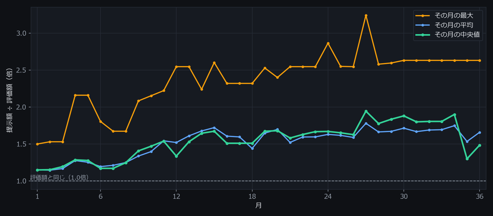
| 月 | 手紙 | 中央値 | 平均 | 最大 |
|---|---|---|---|---|
| 第1月 | 29 | 1.15 | 1.15 | 1.50 |
| 第2月 | 29 | 1.15 | 1.15 | 1.53 |
| 第3月 | 28 | 1.19 | 1.17 | 1.53 |
| 第4月 | 27 | 1.29 | 1.28 | 2.16 |
| 第5月 | 28 | 1.28 | 1.25 | 2.16 |
| 第6月 | 28 | 1.17 | 1.19 | 1.81 |
| 第7月 | 28 | 1.17 | 1.21 | 1.67 |
| 第8月 | 28 | 1.25 | 1.25 | 1.67 |
| 第9月 | 28 | 1.41 | 1.34 | 2.08 |
| 第10月 | 28 | 1.47 | 1.40 | 2.15 |
| 第11月 | 24 | 1.54 | 1.54 | 2.22 |
| 第12月 | 24 | 1.34 | 1.52 | 2.55 |
| 第13月 | 23 | 1.53 | 1.61 | 2.55 |
| 第14月 | 18 | 1.65 | 1.68 | 2.24 |
| 第15月 | 16 | 1.67 | 1.72 | 2.60 |
| 第16月 | 17 | 1.51 | 1.61 | 2.32 |
| 第17月 | 17 | 1.51 | 1.60 | 2.32 |
| 第18月 | 17 | 1.51 | 1.44 | 2.32 |
| 第19月 | 21 | 1.67 | 1.65 | 2.53 |
| 第20月 | 17 | 1.68 | 1.70 | 2.40 |
| 第21月 | 23 | 1.58 | 1.52 | 2.55 |
| 第22月 | 24 | 1.63 | 1.60 | 2.55 |
| 第23月 | 24 | 1.67 | 1.60 | 2.55 |
| 第24月 | 23 | 1.67 | 1.63 | 2.86 |
| 第25月 | 24 | 1.65 | 1.62 | 2.55 |
| 第26月 | 24 | 1.63 | 1.59 | 2.55 |
| 第27月 | 23 | 1.94 | 1.78 | 3.24 |
| 第28月 | 24 | 1.78 | 1.66 | 2.58 |
| 第29月 | 22 | 1.84 | 1.67 | 2.60 |
| 第30月 | 22 | 1.88 | 1.71 | 2.63 |
| 第31月 | 23 | 1.80 | 1.67 | 2.63 |
| 第32月 | 23 | 1.81 | 1.69 | 2.63 |
| 第33月 | 23 | 1.81 | 1.69 | 2.63 |
| 第34月 | 22 | 1.90 | 1.75 | 2.63 |
| 第35月 | 19 | 1.30 | 1.53 | 2.63 |
| 第36月 | 20 | 1.48 | 1.66 | 2.63 |
36か月をならすと、平均 1.50倍・中央値 1.44倍・下から4分の1の線 1.12倍・上から4分の1の線 1.94倍・最大 3.24倍。評価額以上の手紙は 743通（88.7%）、評価額の1.2倍以上を積んだ手紙は 562通で、そのうち売れたのは 7件（1.25%）。
お金の残高
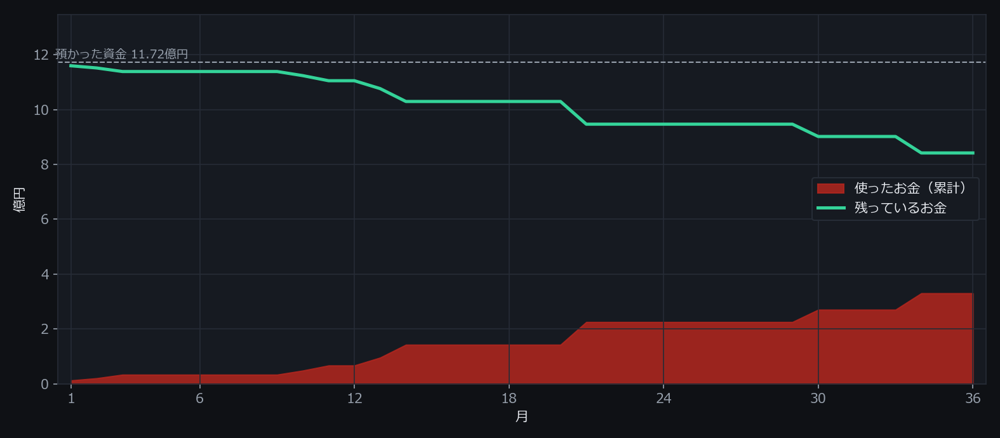
再提示と値上げ（同じ相手に何度も）
同じ相手・同じ区画・同じ権利への出し直しが 800回。金額を上げたのが 281回（上げ幅の中央値 2,000,000円・最大 95,400,000円）、下げたのが 139回、据え置きが 380回。出し直しのあとに売れたのは 8件だけ。
| 相手 | 出し直し | 値上げ | 値下げ | 据え置き | 上げた合計 | 1回の最大の上げ幅 |
|---|---|---|---|---|---|---|
| 一番街の持ち主さん | 35 | 20 | 10 | 5 | 65,016,000 | 12,000,000 |
| 本町通りの持ち主さん | 33 | 16 | 9 | 8 | 75,520,000 | 31,900,000 |
| 学園前の貸オフィスの家主 | 34 | 14 | 12 | 8 | 668,600,000 | 95,400,000 |
| 観音坂の持ち主さん | 32 | 13 | 9 | 10 | 46,866,000 | 26,000,000 |
| 湯坂奥の空き家の共有代表 | 35 | 13 | 8 | 14 | 28,380,000 | 10,950,000 |
| 波止場通りの元店舗の家主 | 30 | 12 | 5 | 13 | 66,600,000 | 20,000,000 |
| 本町通りの元店舗の家主 | 31 | 12 | 6 | 13 | 57,160,000 | 13,000,000 |
| 学園西のご夫婦 | 35 | 12 | 8 | 15 | 17,500,000 | 5,000,000 |
| 潮見横丁の地主 | 28 | 12 | 4 | 12 | 16,536,000 | 5,000,000 |
| 魚市場前の診療所の院長 | 33 | 11 | 6 | 16 | 114,582,000 | 33,542,000 |
狙った区画の偏り
手紙の内訳は「土地だけ」294通・「両方（土地と建物）」544通・「建物だけ」0通。建物だけを買おうとしたことは一度も無い。売れたのは「両方」7件・「土地だけ」4件。
| よく狙われた区画（上位15） | 手紙 | よく狙われた相手（上位15） | 手紙 |
|---|---|---|---|
| 一番街の家 | 36 | 一番街の持ち主さん | 36 |
| 岬道の家 | 36 | 岬道の持ち主さん | 36 |
| 学園西の空き家 | 36 | 学園西のご夫婦 | 36 |
| 浜町の旅館 | 36 | 浜町の旅館のご主人 | 36 |
| 駅前広場の店舗兼住宅 | 36 | 駅前広場の食堂のご夫婦 | 36 |
| 宮の下の共同浴場 | 36 | 宮の下の共同浴場の組合 | 36 |
| 湯坂奥の空き家 | 36 | 湯坂奥の空き家の共有代表 | 36 |
| 神明社の境内地 | 36 | 神明社の自治会長 | 36 |
| 学園前の貸オフィス | 35 | 駅裏の駐車場の地主 | 36 |
| 灯台下の宿 | 35 | 観音坂の持ち主さん | 35 |
| 本町通りの家 | 34 | 魚市場前の診療所の院長 | 35 |
| 北団地の中古住宅 | 34 | 学園前の貸オフィスの家主 | 35 |
| 観音坂の家 | 33 | 灯台下の宿の家主 | 35 |
| 本町通りの元店舗 | 32 | 本町通りの持ち主さん | 34 |
| 波止場通りの元店舗 | 31 | 北団地の地主 | 34 |
権利が違って配られなかった手紙
世界が止めた手紙は全部で 303通。そのうち 205通が「相手はその区画のその権利を持っていない」＝帳簿の読み違いだった（内訳＝両方 120通・土地 85通・建物 0通）。残り 98通は残りのお金を超えていたもの、実行できない約束は0通。
| 誰に | 件数 |
|---|---|
| 北団地の持ち主さん | 36 |
| 湯坂下の持ち主さん | 34 |
| 潮見横丁の持ち主さん | 28 |
| 学園北の持ち主さん | 27 |
| 駅裏の持ち主さん | 27 |
| 学園南の持ち主さん | 27 |
| 駅前通りの持ち主さん | 26 |
配られなかった205通を全部見る（誰に・何を・いくらで）
| 月 | 相手 | 区画 | 権利 | 金額 | 手紙の文 |
|---|---|---|---|---|---|
| 第1月 | 駅前通りの持ち主さん | 駅前通りの家 | 両方 | 30,000,000 | 私どもは海外の不動産投資会社です。この家を3000万円で買い取らせていただきます。 |
| 第1月 | 学園北の持ち主さん | 学園北の家 | 両方 | 13,000,000 | 私どもは海外の不動産投資会社です。この家を1300万円で買い取らせていただきます。 |
| 第1月 | 駅裏の持ち主さん | 駅裏の小区画 | 両方 | 30,000,000 | 私どもは海外の不動産投資会社です。この小区画を3000万円で買い取らせていただきます。 |
| 第1月 | 潮見横丁の持ち主さん | 潮見横丁の改装した古家 | 両方 | 20,000,000 | 私どもは海外の不動産投資会社です。この古家を2000万円で買い取らせていただきます。 |
| 第1月 | 学園南の持ち主さん | 学園南の家 | 両方 | 13,000,000 | 私どもは海外の不動産投資会社です。この家を1300万円で買い取らせていただきます。 |
| 第1月 | 湯坂下の持ち主さん | 湯坂下の家 | 両方 | 15,000,000 | 私どもは海外の不動産投資会社です。この金額で土地と建物の両方をお譲りください。 |
| 第1月 | 北団地の持ち主さん | 北団地の中古住宅 | 両方 | 11,000,000 | 私どもは海外の不動産投資会社です。この金額で土地と建物の両方をお譲りください。 |
| 第2月 | 湯坂下の持ち主さん | 湯坂下の家 | 両方 | 15,000,000 | この家を1500万円で買い取らせていただきます。 |
| 第2月 | 北団地の持ち主さん | 北団地の中古住宅 | 土地 | 10,000,000 | この土地を評価額の1.4倍の1000万円で買い取らせていただきます。 |
| 第3月 | 潮見横丁の持ち主さん | 潮見横丁の改装した古家 | 土地 | 18,000,000 | 潮見横丁の改装した古家の土地を1800万円で買い取らせていただきます。 |
| 第3月 | 湯坂下の持ち主さん | 湯坂下の家 | 両方 | 15,000,000 | この家を1500万円で買い取らせていただきます。 |
| 第3月 | 北団地の持ち主さん | 北団地の中古住宅 | 土地 | 10,000,000 | この土地を評価額の1.4倍の1000万円で買い取らせていただきます。 |
| 第4月 | 駅前通りの持ち主さん | 駅前通りの家 | 両方 | 35,000,000 | 駅前通りの家を3500万円で買い取らせていただきます。ご検討ください。 |
| 第4月 | 学園北の持ち主さん | 学園北の家 | 両方 | 16,000,000 | 学園北の家を1600万円で買い取らせていただきます。ご検討ください。 |
| 第4月 | 駅裏の持ち主さん | 駅裏の小区画 | 両方 | 37,980,000 | 駅裏の小区画を3798万円で買い取らせていただきます。ご検討ください。 |
| 第4月 | 潮見横丁の持ち主さん | 潮見横丁の改装した古家 | 土地 | 22,000,000 | 潮見横丁の改装した古家の土地を2200万円で買い取らせていただきます。ご検討ください。 |
| 第4月 | 学園南の持ち主さん | 学園南の家 | 両方 | 15,000,000 | 学園南の家を1500万円で買い取らせていただきます。ご検討ください。 |
| 第4月 | 湯坂下の持ち主さん | 湯坂下の家 | 両方 | 16,500,000 | 湯坂下の家（土地・建物）を評価額の1.3倍、1650万円で買い取らせていただきます。 |
| 第4月 | 北団地の持ち主さん | 北団地の中古住宅 | 土地 | 10,080,000 | 北団地の中古住宅（土地）を評価額の1.4倍、1008万円で買い取らせていただきます。 |
| 第5月 | 駅前通りの持ち主さん | 駅前通りの家 | 両方 | 31,320,000 | 駅前通りの家の土地と建物を、評価額の1.45倍、3132万円で買い取らせていただきます。 |
| 第5月 | 学園北の持ち主さん | 学園北の家 | 両方 | 16,000,000 | 学園北の家の建物部分を、評価額の1.2倍、636万円で買い取らせていただきます。 |
| 第5月 | 駅裏の持ち主さん | 駅裏の小区画 | 両方 | 31,320,000 | 駅裏の小区画の土地と建物を、評価額の1.45倍、3132万円で買い取らせていただきます。 |
| 第5月 | 潮見横丁の持ち主さん | 潮見横丁の改装した古家 | 土地 | 18,720,000 | 潮見横丁の改装した古家の土地を、評価額の1.3倍、1872万円で買い取らせていただきます。 |
| 第5月 | 学園南の持ち主さん | 学園南の家 | 両方 | 15,000,000 | 学園南の家を1500万円で買い取らせていただきます。ご検討ください。 |
| 第5月 | 湯坂下の持ち主さん | 湯坂下の家 | 両方 | 13,000,000 | 湯坂下の家（土地・建物）を評価額通り1287万円で買い取らせていただきます。ご検討ください。 |
| 第5月 | 北団地の持ち主さん | 北団地の中古住宅 | 土地 | 7,200,000 | 北団地の中古住宅の土地を評価額通り720万円で買い取らせていただきます。ご検討ください。 |
| 第6月 | 湯坂下の持ち主さん | 湯坂下の家 | 両方 | 15,000,000 | 湯坂下の家（土地・建物）を、評価額の1.5倍、1485万円で買い取らせていただきます。ご検討ください。 |
| 第6月 | 北団地の持ち主さん | 北団地の中古住宅 | 土地 | 10,000,000 | 北団地の中古住宅の土地を、評価額の1.4倍、1008万円で買い取らせていただきます。ご検討ください。 |
| 第7月 | 学園北の持ち主さん | 学園北の家 | 両方 | 7,000,000 | 学園北の家の土地と建物を、評価額の1.05倍、700万円で買い取らせていただきます。 |
| 第7月 | 駅裏の持ち主さん | 駅裏の小区画 | 土地 | 31,320,000 | 駅裏の小区画の土地を評価額の1.45倍、3132万円で買い取らせていただきます。 |
| 第7月 | 潮見横丁の持ち主さん | 潮見横丁の改装した古家 | 土地 | 18,720,000 | 潮見横丁の改装した古家の土地を評価額の1.3倍、1872万円で買い取らせていただきます。 |
| 第7月 | 学園南の持ち主さん | 学園南の家 | 土地 | 10,800,000 | 学園南の家の土地を評価額の1.5倍、1080万円で買い取らせていただきます。 |
| 第7月 | 湯坂下の持ち主さん | 湯坂下の家 | 両方 | 14,850,000 | 湯坂下の家（土地・建物）を、評価額の1.5倍、1485万円で買い取らせていただきます。ご検討ください。 |
| 第7月 | 北団地の持ち主さん | 北団地の中古住宅 | 土地 | 10,080,000 | 北団地の中古住宅の土地を、評価額の1.4倍、1008万円で買い取らせていただきます。ご検討ください。 |
| 第8月 | 湯坂下の持ち主さん | 湯坂下の家 | 両方 | 15,000,000 | 湯坂下の家（土地・建物）を評価額の1.5倍、1485万円で買い取らせていただきます。 |
| 第8月 | 北団地の持ち主さん | 北団地の中古住宅 | 土地 | 11,000,000 | 北団地の中古住宅の土地を評価額の1.5倍、1080万円で買い取らせていただきます。 |
| 第9月 | 湯坂下の持ち主さん | 湯坂下の家 | 土地 | 15,000,000 | 湯坂下の家の土地を、評価額の1.5倍、1500万円で買い取らせていただきます。 |
| 第9月 | 北団地の持ち主さん | 北団地の中古住宅 | 土地 | 12,000,000 | 北団地の中古住宅の土地を、評価額の1.66倍、1200万円で買い取らせていただきます。 |
| 第10月 | 湯坂下の持ち主さん | 湯坂下の家 | 両方 | 15,000,000 | 湯坂下の家の土地と建物を、評価額の1.5倍、1500万円で買い取らせていただきます。 |
| 第10月 | 北団地の持ち主さん | 北団地の中古住宅 | 土地 | 12,000,000 | 北団地の中古住宅の土地を、評価額の1.66倍、1200万円で買い取らせていただきます。 |
| 第11月 | 湯坂下の持ち主さん | 湯坂下の家 | 両方 | 16,000,000 | 湯坂下の家（土地・建物）を評価額の1.61倍、1500万円で買い取らせていただきます。 |
| 第11月 | 北団地の持ち主さん | 北団地の中古住宅 | 土地 | 12,000,000 | 北団地の中古住宅の土地を、評価額の1.66倍、1200万円で買い取らせていただきます。 |
| 第12月 | 北団地の持ち主さん | 北団地の中古住宅 | 両方 | 10,440,000 | 北団地の中古住宅（土地・建物）を評価額の1.45倍、1044万円で買い取らせていただきます。 |
| 第13月 | 北団地の持ち主さん | 北団地の中古住宅 | 土地 | 12,000,000 | 北団地の中古住宅の土地を、評価額の1.67倍、1200万円で買い取らせていただきます。 |
| 第14月 | 駅前通りの持ち主さん | 駅前通りの家 | 土地 | 55,000,000 | 駅前通りの家の土地を、評価額の2.54倍で買い取らせていただきます。 |
| 第14月 | 学園北の持ち主さん | 学園北の家 | 土地 | 15,000,000 | 学園北の家の土地を、評価額の2.08倍で買い取らせていただきます。 |
| 第14月 | 駅裏の持ち主さん | 駅裏の小区画 | 土地 | 55,000,000 | 駅裏の小区画の土地を、評価額の2.54倍で買い取らせていただきます。 |
| 第14月 | 潮見横丁の持ち主さん | 潮見横丁の改装した古家 | 土地 | 25,000,000 | 潮見横丁の改装した古家の土地を、評価額の1.73倍で買い取らせていただきます。 |
| 第14月 | 学園南の持ち主さん | 学園南の家 | 土地 | 16,000,000 | 学園南の家の土地を、評価額の2.2倍で買い取らせていただきます。 |
| 第14月 | 湯坂下の持ち主さん | 湯坂下の家 | 土地 | 18,000,000 | 湯坂下の家の土地を、評価額の1.81倍で買い取らせていただきます。 |
| 第14月 | 北団地の持ち主さん | 北団地の中古住宅 | 土地 | 13,000,000 | 私どもは海外の不動産投資会社です。北団地の中古住宅の土地を、評価額の約1.8倍、1300万円で買い取らせていただきます。 |
| 第15月 | 駅前通りの持ち主さん | 駅前通りの家 | 土地 | 55,000,000 | 駅前通りの家の土地を、評価額の2.54倍で買い取らせていただきます。 |
| 第15月 | 学園北の持ち主さん | 学園北の家 | 土地 | 15,000,000 | 学園北の家の土地を、評価額の2.08倍で買い取らせていただきます。 |
| 第15月 | 駅裏の持ち主さん | 駅裏の小区画 | 土地 | 55,000,000 | 駅裏の小区画の土地を、評価額の2.54倍で買い取らせていただきます。 |
| 第15月 | 潮見横丁の持ち主さん | 潮見横丁の改装した古家 | 土地 | 30,000,000 | 潮見横丁の改装した古家の土地を、評価額の2.08倍で買い取らせていただきます。 |
| 第15月 | 学園南の持ち主さん | 学園南の家 | 土地 | 16,000,000 | 学園南の家の土地を、評価額の2.2倍で買い取らせていただきます。 |
| 第15月 | 湯坂下の持ち主さん | 湯坂下の家 | 土地 | 18,000,000 | 湯坂下の家の土地を、評価額の1.81倍で買い取らせていただきます。 |
| 第15月 | 北団地の持ち主さん | 北団地の中古住宅 | 土地 | 12,000,000 | 北団地の中古住宅の土地を、評価額の1.67倍で買い取らせていただきます。 |
| 第16月 | 駅前通りの持ち主さん | 駅前通りの家 | 土地 | 55,000,000 | 駅前通りの家の土地を、評価額の2.54倍で買い取らせていただきます。 |
| 第16月 | 学園北の持ち主さん | 学園北の家 | 土地 | 15,000,000 | 学園北の家の土地を、評価額の2.08倍で買い取らせていただきます。 |
| 第16月 | 駅裏の持ち主さん | 駅裏の小区画 | 土地 | 55,000,000 | 駅裏の小区画の土地を、評価額の2.54倍で買い取らせていただきます。 |
| 第16月 | 潮見横丁の持ち主さん | 潮見横丁の改装した古家 | 土地 | 25,000,000 | 潮見横丁の改装した古家の土地を、評価額の1.73倍で買い取らせていただきます。 |
| 第16月 | 学園南の持ち主さん | 学園南の家 | 土地 | 16,000,000 | 学園南の家の土地を、評価額の2.2倍で買い取らせていただきます。 |
| 第16月 | 湯坂下の持ち主さん | 湯坂下の家 | 土地 | 18,000,000 | 湯坂下の家の土地を、評価額の1.81倍で買い取らせていただきます。 |
| 第16月 | 北団地の持ち主さん | 北団地の中古住宅 | 土地 | 13,000,000 | 北団地の中古住宅の土地を、評価額の約1.8倍で買い取らせていただきます。 |
| 第17月 | 駅前通りの持ち主さん | 駅前通りの家 | 土地 | 55,000,000 | 駅前通りの家の土地を、評価額の2.54倍で買い取らせていただきます。 |
| 第17月 | 学園北の持ち主さん | 学園北の家 | 土地 | 15,000,000 | 学園北の家の土地を、評価額の2.08倍で買い取らせていただきます。 |
| 第17月 | 駅裏の持ち主さん | 駅裏の小区画 | 土地 | 55,000,000 | 駅裏の小区画の土地を、評価額の2.54倍で買い取らせていただきます。 |
| 第17月 | 潮見横丁の持ち主さん | 潮見横丁の改装した古家 | 土地 | 25,000,000 | 潮見横丁の改装した古家の土地を、評価額の1.73倍で買い取らせていただきます。 |
| 第17月 | 学園南の持ち主さん | 学園南の家 | 土地 | 16,000,000 | 学園南の家の土地を、評価額の2.2倍で買い取らせていただきます。 |
| 第17月 | 湯坂下の持ち主さん | 湯坂下の家 | 土地 | 18,000,000 | 湯坂下の家の土地を、評価額の1.81倍で買い取らせていただきます。 |
| 第17月 | 北団地の持ち主さん | 北団地の中古住宅 | 土地 | 12,960,000 | 北団地の中古住宅の土地を、評価額の約1.8倍で買い取らせていただきます。 |
| 第18月 | 駅前通りの持ち主さん | 駅前通りの家 | 両方 | 55,000,000 | 駅前通りの家（土地・建物）を、評価額の2.54倍で買い取らせていただきます。 |
| 第18月 | 学園北の持ち主さん | 学園北の家 | 両方 | 15,000,000 | 学園北の家（土地・建物）を、評価額の2.08倍で買い取らせていただきます。 |
| 第18月 | 駅裏の持ち主さん | 駅裏の小区画 | 両方 | 55,000,000 | 駅裏の小区画（土地・建物）を、評価額の2.54倍で買い取らせていただきます。 |
| 第18月 | 潮見横丁の持ち主さん | 潮見横丁の改装した古家 | 両方 | 25,000,000 | 潮見横丁の改装した古家（土地・建物）を、評価額の1.73倍で買い取らせていただきます。 |
| 第18月 | 学園南の持ち主さん | 学園南の家 | 両方 | 16,000,000 | 学園南の家（土地・建物）を、評価額の2.2倍で買い取らせていただきます。 |
| 第18月 | 湯坂下の持ち主さん | 湯坂下の家 | 両方 | 18,000,000 | 湯坂下の家（土地・建物）を、評価額の1.81倍で買い取らせていただきます。 |
| 第18月 | 北団地の持ち主さん | 北団地の中古住宅 | 両方 | 12,800,000 | 北団地の中古住宅（土地・建物）を、評価額の約1.8倍で買い取らせていただきます。 |
| 第19月 | 駅前通りの持ち主さん | 駅前通りの家 | 両方 | 55,000,000 | 駅前通りの家（土地・建物）を、評価額の2.54倍で買い取らせていただきます。 |
| 第19月 | 学園北の持ち主さん | 学園北の家 | 両方 | 15,000,000 | 学園北の家（土地・建物）を、評価額の2.08倍で買い取らせていただきます。 |
| 第19月 | 駅裏の持ち主さん | 駅裏の小区画 | 両方 | 55,000,000 | 駅裏の小区画（土地・建物）を、評価額の2.54倍で買い取らせていただきます。 |
| 第19月 | 潮見横丁の持ち主さん | 潮見横丁の改装した古家 | 両方 | 25,000,000 | 潮見横丁の改装した古家（土地・建物）を、評価額の1.73倍で買い取らせていただきます。 |
| 第19月 | 学園南の持ち主さん | 学園南の家 | 両方 | 16,000,000 | 学園南の家（土地・建物）を、評価額の2.2倍で買い取らせていただきます。 |
| 第19月 | 湯坂下の持ち主さん | 湯坂下の家 | 両方 | 18,000,000 | 湯坂下の家（土地・建物）を、評価額の1.81倍で買い取らせていただきます。 |
| 第19月 | 北団地の持ち主さん | 北団地の中古住宅 | 両方 | 13,000,000 | 北団地の中古住宅（土地・建物）を、評価額の約1.8倍で買い取らせていただきます。 |
| 第20月 | 駅前通りの持ち主さん | 駅前通りの家 | 両方 | 55,000,000 | 駅前通りの家（土地・建物）を、評価額の2.54倍で買い取らせていただきます。 |
| 第20月 | 学園北の持ち主さん | 学園北の家 | 両方 | 16,000,000 | 学園北の家（土地・建物）を、評価額の2.22倍で買い取らせていただきます。 |
| 第20月 | 駅裏の持ち主さん | 駅裏の小区画 | 両方 | 55,000,000 | 駅裏の小区画（土地・建物）を、評価額の2.54倍で買い取らせていただきます。 |
| 第20月 | 潮見横丁の持ち主さん | 潮見横丁の改装した古家 | 両方 | 25,000,000 | 潮見横丁の改装した古家（土地・建物）を、評価額の1.73倍で買い取らせていただきます。 |
| 第20月 | 学園南の持ち主さん | 学園南の家 | 両方 | 16,000,000 | 学園南の家（土地・建物）を、評価額の2.2倍で買い取らせていただきます。 |
| 第20月 | 湯坂下の持ち主さん | 湯坂下の家 | 両方 | 18,000,000 | 湯坂下の家（土地・建物）を、評価額の1.81倍で買い取らせていただきます。 |
| 第20月 | 北団地の持ち主さん | 北団地の中古住宅 | 両方 | 13,000,000 | 北団地の中古住宅（土地・建物）を、評価額の約1.8倍で買い取らせていただきます。 |
| 第21月 | 駅前通りの持ち主さん | 駅前通りの家 | 両方 | 55,000,000 | 駅前通りの家（土地・建物）を、評価額の2.54倍で買い取らせていただきます。 |
| 第21月 | 学園北の持ち主さん | 学園北の家 | 両方 | 17,724,000 | 学園北の家（土地・建物）を、評価額の2.46倍で買い取らせていただきます。 |
| 第21月 | 駅裏の持ち主さん | 駅裏の小区画 | 両方 | 55,000,000 | 駅裏の小区画（土地・建物）を、評価額の2.54倍で買い取らせていただきます。 |
| 第21月 | 潮見横丁の持ち主さん | 潮見横丁の改装した古家 | 両方 | 24,920,000 | 潮見横丁の改装した古家（土地・建物）を、評価額の1.73倍で買い取らせていただきます。 |
| 第21月 | 学園南の持ち主さん | 学園南の家 | 両方 | 15,840,000 | 学園南の家（土地・建物）を、評価額の2.2倍で買い取らせていただきます。 |
| 第21月 | 湯坂下の持ち主さん | 湯坂下の家 | 両方 | 17,910,000 | 湯坂下の家（土地・建物）を、評価額の1.81倍で買い取らせていただきます。 |
| 第21月 | 北団地の持ち主さん | 北団地の中古住宅 | 両方 | 13,140,000 | 北団地の中古住宅（土地・建物）を、評価額の1.8倍で買い取らせていただきます。 |
| 第22月 | 駅前通りの持ち主さん | 駅前通りの家 | 両方 | 55,000,000 | 駅前通りの家（土地・建物）を、評価額の2.54倍で買い取らせていただきます。 |
| 第22月 | 学園北の持ち主さん | 学園北の家 | 両方 | 12,738,000 | 学園北の家（土地・建物）を、評価額の1.77倍で買い取らせていただきます。 |
| 第22月 | 駅裏の持ち主さん | 駅裏の小区画 | 両方 | 55,000,000 | 駅裏の小区画（土地・建物）を、評価額の2.54倍で買い取らせていただきます。 |
| 第22月 | 潮見横丁の持ち主さん | 潮見横丁の改装した古家 | 両方 | 24,912,000 | 潮見横丁の改装した古家（土地・建物）を、評価額の1.73倍で買い取らせていただきます。 |
| 第22月 | 学園南の持ち主さん | 学園南の家 | 両方 | 15,840,000 | 学園南の家（土地・建物）を、評価額の2.2倍で買い取らせていただきます。 |
| 第22月 | 湯坂下の持ち主さん | 湯坂下の家 | 両方 | 18,000,000 | 湯坂下の家（土地・建物）を、評価額の1.81倍で買い取らせていただきます。 |
| 第22月 | 北団地の持ち主さん | 北団地の中古住宅 | 両方 | 12,960,000 | 北団地の中古住宅（土地・建物）を、評価額の1.8倍で買い取らせていただきます。 |
| 第23月 | 駅前通りの持ち主さん | 駅前通りの家 | 両方 | 55,000,000 | 駅前通りの家（土地・建物）を、評価額の2.54倍で買い取らせていただきます。 |
| 第23月 | 学園北の持ち主さん | 学園北の家 | 両方 | 12,600,000 | 学園北の家（土地・建物）を、評価額の1.77倍で買い取らせていただきます。 |
| 第23月 | 駅裏の持ち主さん | 駅裏の小区画 | 両方 | 13,700,000 | 駅裏の小区画（土地・建物）を、評価額の2.54倍で買い取らせていただきます。 |
| 第23月 | 潮見横丁の持ち主さん | 潮見横丁の改装した古家 | 両方 | 24,900,000 | 潮見横丁の改装した古家（土地・建物）を、評価額の1.73倍で買い取らせていただきます。 |
| 第23月 | 学園南の持ち主さん | 学園南の家 | 両方 | 16,000,000 | 学園南の家（土地・建物）を、評価額の2.2倍で買い取らせていただきます。 |
| 第23月 | 湯坂下の持ち主さん | 湯坂下の家 | 両方 | 18,000,000 | 湯坂下の家（土地・建物）を、評価額の1.81倍で買い取らせていただきます。 |
| 第23月 | 北団地の持ち主さん | 北団地の中古住宅 | 両方 | 12,600,000 | 北団地の中古住宅（土地・建物）を、評価額の1.8倍で買い取らせていただきます。 |
| 第24月 | 駅前通りの持ち主さん | 駅前通りの家 | 両方 | 55,000,000 | 駅前通りの家（土地・建物）を、評価額の2.54倍で買い取らせていただきます。 |
| 第24月 | 学園北の持ち主さん | 学園北の家 | 土地 | 16,000,000 | 学園北の家の土地を、評価額の2.22倍で買い取らせていただきます。 |
| 第24月 | 駅裏の持ち主さん | 駅裏の小区画 | 土地 | 55,000,000 | 駅裏の小区画の土地を、評価額の2.54倍で買い取らせていただきます。 |
| 第24月 | 潮見横丁の持ち主さん | 潮見横丁の改装した古家 | 土地 | 25,000,000 | 潮見横丁の改装した古家の土地を、評価額の1.73倍で買い取らせていただきます。 |
| 第24月 | 学園南の持ち主さん | 学園南の家 | 土地 | 16,000,000 | 学園南の家の土地を、評価額の2.2倍、1600万円で買い取らせていただきます。 |
| 第24月 | 湯坂下の持ち主さん | 湯坂下の家 | 土地 | 18,000,000 | 湯坂下の家の土地を、評価額の1.82倍で買い取らせていただきます。 |
| 第24月 | 北団地の持ち主さん | 北団地の中古住宅 | 土地 | 13,000,000 | 北団地の中古住宅の土地を、評価額の約1.8倍で買い取らせていただきます。 |
| 第25月 | 駅前通りの持ち主さん | 駅前通りの家 | 両方 | 44,000,000 | 駅前通りの家（土地・建物）を、評価額の2.04倍で買い取らせていただきます。 |
| 第25月 | 学園北の持ち主さん | 学園北の家 | 土地 | 16,000,000 | 学園北の家の土地を、評価額の2.22倍で買い取らせていただきます。 |
| 第25月 | 駅裏の持ち主さん | 駅裏の小区画 | 両方 | 55,000,000 | 駅裏の小区画（土地・建物）を、評価額の2.54倍で買い取らせていただきます。 |
| 第25月 | 潮見横丁の持ち主さん | 潮見横丁の改装した古家 | 土地 | 25,000,000 | 潮見横丁の改装した古家の土地を、評価額の1.73倍で買い取らせていただきます。 |
| 第25月 | 学園南の持ち主さん | 学園南の家 | 土地 | 16,000,000 | 学園南の家の土地を、評価額の2.2倍、1600万円で買い取らせていただきます。 |
| 第25月 | 湯坂下の持ち主さん | 湯坂下の家 | 土地 | 18,000,000 | 湯坂下の家の土地を、評価額の1.82倍で買い取らせていただきます。 |
| 第25月 | 北団地の持ち主さん | 北団地の中古住宅 | 土地 | 13,000,000 | 北団地の中古住宅の土地を、評価額の約1.8倍で買い取らせていただきます。 |
| 第26月 | 駅前通りの持ち主さん | 駅前通りの家 | 土地 | 55,000,000 | 駅前通りの家の土地を、評価額の2.54倍で買い取らせていただきます。 |
| 第26月 | 学園北の持ち主さん | 学園北の家 | 土地 | 15,984,000 | 学園北の家の土地を、評価額の2.22倍で買い取らせていただきます。 |
| 第26月 | 駅裏の持ち主さん | 駅裏の小区画 | 土地 | 54,792,000 | 駅裏の小区画の土地を、評価額の2.54倍で買い取らせていただきます。 |
| 第26月 | 潮見横丁の持ち主さん | 潮見横丁の改装した古家 | 土地 | 24,936,000 | 潮見横丁の改装した古家の土地を、評価額の1.73倍で買い取らせていただきます。 |
| 第26月 | 学園南の持ち主さん | 学園南の家 | 土地 | 15,840,000 | 学園南の家の土地を、評価額の2.2倍、1600万円で買い取らせていただきます。 |
| 第26月 | 湯坂下の持ち主さん | 湯坂下の家 | 土地 | 17,999,000 | 湯坂下の家の土地を、評価額の1.82倍で買い取らせていただきます。 |
| 第26月 | 北団地の持ち主さん | 北団地の中古住宅 | 土地 | 12,960,000 | 北団地の中古住宅の土地を、評価額の約1.8倍で買い取らせていただきます。 |
| 第27月 | 駅前通りの持ち主さん | 駅前通りの家 | 土地 | 55,000,000 | 駅前通りの家の土地を、評価額の2.54倍で買い取らせていただきます。 |
| 第27月 | 学園北の持ち主さん | 学園北の家 | 土地 | 15,984,000 | 学園北の家の土地を、評価額の2.22倍で買い取らせていただきます。 |
| 第27月 | 駅裏の持ち主さん | 駅裏の小区画 | 土地 | 55,000,000 | 駅裏の小区画の土地を、評価額の2.54倍で買い取らせていただきます。 |
| 第27月 | 潮見横丁の持ち主さん | 潮見横丁の改装した古家 | 土地 | 24,920,000 | 潮見横丁の改装した古家の土地を、評価額の1.73倍で買い取らせていただきます。 |
| 第27月 | 学園南の持ち主さん | 学園南の家 | 土地 | 16,000,000 | 学園南の家の土地を、評価額の2.2倍、1600万円で買い取らせていただきます。 |
| 第27月 | 湯坂下の持ち主さん | 湯坂下の家 | 土地 | 17,998,000 | 湯坂下の家の土地を、評価額の1.82倍で買い取らせていただきます。 |
| 第27月 | 北団地の持ち主さん | 北団地の中古住宅 | 土地 | 12,960,000 | 北団地の中古住宅の土地を、評価額の約1.8倍で買い取らせていただきます。 |
| 第28月 | 駅前通りの持ち主さん | 駅前通りの家 | 土地 | 55,780,000 | 駅前通りの家の土地を、評価額の2.58倍で買い取らせていただきます。 |
| 第28月 | 学園北の持ち主さん | 学園北の家 | 土地 | 15,990,000 | 学園北の家の土地を、評価額の2.22倍で買い取らせていただきます。 |
| 第28月 | 駅裏の持ち主さん | 駅裏の小区画 | 土地 | 55,780,000 | 駅裏の小区画の土地を、評価額の2.58倍で買い取らせていただきます。 |
| 第28月 | 潮見横丁の持ち主さん | 潮見横丁の改装した古家 | 土地 | 24,910,000 | 潮見横丁の改装した古家の土地を、評価額の1.73倍で買い取らせていただきます。 |
| 第28月 | 学園南の持ち主さん | 学園南の家 | 土地 | 16,000,000 | 学園南の家の土地を、評価額の2.22倍、1600万円で買い取らせていただきます。 |
| 第28月 | 湯坂下の持ち主さん | 湯坂下の家 | 土地 | 17,990,000 | 湯坂下の家の土地を、評価額の1.82倍で買い取らせていただきます。 |
| 第28月 | 北団地の持ち主さん | 北団地の中古住宅 | 土地 | 14,400,000 | 北団地の中古住宅の土地を、評価額の2倍で買い取らせていただきます。 |
| 第29月 | 駅前通りの持ち主さん | 駅前通りの家 | 土地 | 55,000,000 | 駅前通りの家の土地を、評価額の2.54倍、5500万円で買い取らせていただきます。 |
| 第29月 | 学園北の持ち主さん | 学園北の家 | 土地 | 16,000,000 | 学園北の家の土地を、評価額の2.22倍で買い取らせていただきます。 |
| 第29月 | 駅裏の持ち主さん | 駅裏の小区画 | 土地 | 54,000,000 | 駅裏の小区画の土地を、評価額の2.5倍で買い取らせていただきます。 |
| 第29月 | 潮見横丁の持ち主さん | 潮見横丁の改装した古家 | 土地 | 25,000,000 | 潮見横丁の改装した古家の土地を、評価額の1.73倍で買い取らせていただきます。 |
| 第29月 | 学園南の持ち主さん | 学園南の家 | 土地 | 16,000,000 | 学園南の家の土地を、評価額の2.22倍、1600万円で買い取らせていただきます。 |
| 第29月 | 湯坂下の持ち主さん | 湯坂下の家 | 土地 | 18,000,000 | 湯坂下の家の土地を、評価額の1.82倍で買い取らせていただきます。 |
| 第29月 | 北団地の持ち主さん | 北団地の中古住宅 | 土地 | 13,000,000 | 北団地の中古住宅の土地を、評価額の約1.8倍で買い取らせていただきます。 |
| 第30月 | 駅前通りの持ち主さん | 駅前通りの家 | 両方 | 60,000,000 | 駅前通りの家（土地・建物）を、評価額の2.78倍で買い取らせていただきます。 |
| 第30月 | 学園北の持ち主さん | 学園北の家 | 両方 | 35,000,000 | 学園北の家（土地・建物）を、評価額の4.86倍で買い取らせていただきます。 |
| 第30月 | 駅裏の持ち主さん | 駅裏の小区画 | 両方 | 60,000,000 | 駅裏の小区画（土地・建物）を、評価額の2.78倍で買い取らせていただきます。 |
| 第30月 | 潮見横丁の持ち主さん | 潮見横丁の改装した古家 | 両方 | 35,000,000 | 潮見横丁の改装した古家（土地・建物）を、評価額の2.43倍で買い取らせていただきます。 |
| 第30月 | 学園南の持ち主さん | 学園南の家 | 両方 | 35,000,000 | 学園南の家（土地・建物）を、評価額の4.86倍で買い取らせていただきます。 |
| 第30月 | 湯坂下の持ち主さん | 湯坂下の家 | 両方 | 35,000,000 | 湯坂下の家（土地・建物）を、評価額の3.54倍で買い取らせていただきます。 |
| 第30月 | 北団地の持ち主さん | 北団地の中古住宅 | 両方 | 35,000,000 | 北団地の中古住宅（土地・建物）を、評価額の5.28倍で買い取らせていただきます。 |
| 第31月 | 駅前通りの持ち主さん | 駅前通りの家 | 両方 | 55,000,000 | 駅前通りの家（土地・建物）を、評価額の2.54倍で買い取らせていただきます。 |
| 第31月 | 学園北の持ち主さん | 学園北の家 | 両方 | 25,300,000 | 学園北の家（土地・建物）を、評価額の4.86倍で買い取らせていただきます。 |
| 第31月 | 駅裏の持ち主さん | 駅裏の小区画 | 両方 | 27,000,000 | 駅裏の小区画（土地・建物）を、評価額の2.78倍で買い取らせていただきます。 |
| 第31月 | 潮見横丁の持ち主さん | 潮見横丁の改装した古家 | 両方 | 35,000,000 | 潮見横丁の改装した古家（土地・建物）を、評価額の2.43倍で買い取らせていただきます。 |
| 第31月 | 学園南の持ち主さん | 学園南の家 | 両方 | 36,000,000 | 学園南の家（土地・建物）を、評価額の4.86倍で買い取らせていただきます。 |
| 第31月 | 湯坂下の持ち主さん | 湯坂下の家 | 両方 | 19,700,000 | 湯坂下の家（土地・建物）を、評価額の3.54倍で買い取らせていただきます。 |
| 第31月 | 北団地の持ち主さん | 北団地の中古住宅 | 両方 | 28,000,000 | 北団地の中古住宅（土地・建物）を、評価額の5.28倍で買い取らせていただきます。 |
| 第32月 | 駅前通りの持ち主さん | 駅前通りの家 | 両方 | 55,000,000 | 駅前通りの家（土地・建物）を、評価額の2.54倍で買い取らせていただきます。 |
| 第32月 | 学園北の持ち主さん | 学園北の家 | 両方 | 27,600,000 | 学園北の家（土地・建物）を、評価額の4.86倍で買い取らせていただきます。 |
| 第32月 | 駅裏の持ち主さん | 駅裏の小区画 | 両方 | 45,000,000 | 駅裏の小区画（土地・建物）を、評価額の2.78倍で買い取らせていただきます。 |
| 第32月 | 潮見横丁の持ち主さん | 潮見横丁の改装した古家 | 両方 | 34,900,000 | 潮見横丁の改装した古家（土地・建物）を、評価額の2.43倍で買い取らせていただきます。 |
| 第32月 | 学園南の持ち主さん | 学園南の家 | 両方 | 34,900,000 | 学園南の家（土地・建物）を、評価額の4.86倍で買い取らせていただきます。 |
| 第32月 | 湯坂下の持ち主さん | 湯坂下の家 | 両方 | 26,000,000 | 湯坂下の家（土地・建物）を、評価額の3.54倍で買い取らせていただきます。 |
| 第32月 | 北団地の持ち主さん | 北団地の中古住宅 | 両方 | 27,600,000 | 北団地の中古住宅（土地・建物）を、評価額の5.28倍で買い取らせていただきます。 |
| 第33月 | 駅前通りの持ち主さん | 駅前通りの家 | 両方 | 55,000,000 | 駅前通りの家（土地・建物）を、評価額の2.54倍で買い取らせていただきます。 |
| 第33月 | 学園北の持ち主さん | 学園北の家 | 両方 | 26,400,000 | 学園北の家（土地・建物）を、評価額の4.86倍で買い取らせていただきます。 |
| 第33月 | 駅裏の持ち主さん | 駅裏の小区画 | 両方 | 26,400,000 | 駅裏の小区画（土地・建物）を、評価額の2.78倍で買い取らせていただきます。 |
| 第33月 | 潮見横丁の持ち主さん | 潮見横丁の改装した古家 | 両方 | 34,992,000 | 潮見横丁の改装した古家（土地・建物）を、評価額の2.43倍で買い取らせていただきます。 |
| 第33月 | 学園南の持ち主さん | 学園南の家 | 両方 | 34,992,000 | 学園南の家（土地・建物）を、評価額の4.86倍で買い取らせていただきます。 |
| 第33月 | 湯坂下の持ち主さん | 湯坂下の家 | 両方 | 27,774,000 | 湯坂下の家（土地・建物）を、評価額の3.54倍で買い取らせていただきます。 |
| 第33月 | 北団地の持ち主さん | 北団地の中古住宅 | 両方 | 27,774,000 | 北団地の中古住宅（土地・建物）を、評価額の5.28倍で買い取らせていただきます。 |
| 第34月 | 駅前通りの持ち主さん | 駅前通りの家 | 両方 | 55,000,000 | 駅前通りの家（土地・建物）を、評価額の2.54倍で買い取らせていただきます。 |
| 第34月 | 学園北の持ち主さん | 学園北の家 | 両方 | 26,000,000 | 学園北の家（土地・建物）を、評価額の4.86倍で買い取らせていただきます。 |
| 第34月 | 駅裏の持ち主さん | 駅裏の小区画 | 両方 | 14,500,000 | 駅裏の小区画（土地・建物）を、評価額の2.78倍で買い取らせていただきます。 |
| 第34月 | 潮見横丁の持ち主さん | 潮見横丁の改装した古家 | 両方 | 21,000,000 | 潮見横丁の改装した古家（土地・建物）を、評価額の2.43倍で買い取らせていただきます。 |
| 第34月 | 学園南の持ち主さん | 学園南の家 | 両方 | 35,000,000 | 学園南の家（土地・建物）を、評価額の4.86倍で買い取らせていただきます。 |
| 第34月 | 湯坂下の持ち主さん | 湯坂下の家 | 両方 | 19,500,000 | 湯坂下の家（土地・建物）を、評価額の3.54倍で買い取らせていただきます。 |
| 第34月 | 北団地の持ち主さん | 北団地の中古住宅 | 両方 | 38,500,000 | 北団地の中古住宅（土地・建物）を、評価額の5.28倍で買い取らせていただきます。 |
| 第35月 | 駅前通りの持ち主さん | 駅前通りの家 | 両方 | 55,000,000 | 駅前通りの家（土地・建物）を、評価額の2.54倍で買い取らせていただきます。 |
| 第35月 | 学園北の持ち主さん | 学園北の家 | 両方 | 25,920,000 | 学園北の家（土地・建物）を、評価額の4.86倍で買い取らせていただきます。 |
| 第35月 | 駅裏の持ち主さん | 駅裏の小区画 | 両方 | 25,920,000 | 駅裏の小区画（土地・建物）を、評価額の2.78倍で買い取らせていただきます。 |
| 第35月 | 潮見横丁の持ち主さん | 潮見横丁の改装した古家 | 両方 | 34,992,000 | 潮見横丁の改装した古家（土地・建物）を、評価額の2.43倍で買い取らせていただきます。 |
| 第35月 | 学園南の持ち主さん | 学園南の家 | 両方 | 34,992,000 | 学園南の家（土地・建物）を、評価額の4.86倍で買い取らせていただきます。 |
| 第35月 | 湯坂下の持ち主さん | 湯坂下の家 | 両方 | 19,470,000 | 湯坂下の家（土地・建物）を、評価額の3.54倍で買い取らせていただきます。 |
| 第35月 | 北団地の持ち主さん | 北団地の中古住宅 | 両方 | 27,720,000 | 北団地の中古住宅（土地・建物）を、評価額の5.28倍で買い取らせていただきます。 |
| 第36月 | 駅前通りの持ち主さん | 駅前通りの家 | 両方 | 55,000,000 | 駅前通りの家（土地・建物）を、評価額の2.54倍で買い取らせていただきます。 |
| 第36月 | 学園北の持ち主さん | 学園北の家 | 両方 | 26,620,000 | 学園北の家（土地・建物）を、評価額の4.86倍で買い取らせていただきます。 |
| 第36月 | 駅裏の持ち主さん | 駅裏の小区画 | 両方 | 26,620,000 | 駅裏の小区画（土地・建物）を、評価額の2.78倍で買い取らせていただきます。 |
| 第36月 | 潮見横丁の持ち主さん | 潮見横丁の改装した古家 | 両方 | 35,016,000 | 潮見横丁の改装した古家（土地・建物）を、評価額の2.43倍で買い取らせていただきます。 |
| 第36月 | 学園南の持ち主さん | 学園南の家 | 両方 | 35,016,000 | 学園南の家（土地・建物）を、評価額の4.86倍で買い取らせていただきます。 |
| 第36月 | 湯坂下の持ち主さん | 湯坂下の家 | 両方 | 35,016,000 | 湯坂下の家（土地・建物）を、評価額の3.54倍で買い取らせていただきます。 |
| 第36月 | 北団地の持ち主さん | 北団地の中古住宅 | 両方 | 37,800,000 | 北団地の中古住宅（土地・建物）を、評価額の5.28倍で買い取らせていただきます。 |
手紙の文の変化（月初・中盤・終盤の原文）
第1月
私どもは海外の不動産投資会社です。この古家を1500万円で買い取らせていただきます。湯坂上のご夫婦／湯坂上の古家の両方／15,000,000円（評価額の1.20倍）
私どもは海外の不動産投資会社です。この古家を1300万円で買い取らせていただきます。湯の元のひとり暮らしさん／湯の元の古家の両方／13,000,000円（評価額の1.04倍）
私どもは海外の不動産投資会社です。この家を1800万円で買い取らせていただきます。観音坂の持ち主さん／観音坂の家の両方／18,000,000円（評価額の1.18倍）
第18月
駅前広場の店舗兼住宅（土地・建物）を、評価額の約1.35倍、4100万円で買い取らせていただきます。駅前広場の食堂のご夫婦／駅前広場の店舗兼住宅の両方／41,000,000円（評価額の1.44倍）
宮の下の共同浴場（土地・建物）を、評価額の約1.55倍、2900万円で買い取らせていただきます。宮の下の共同浴場の組合／宮の下の共同浴場の両方／29,000,000円（評価額の1.51倍）
学園西の空き家（土地・建物）を、評価額の約1.95倍、1900万円で買い取らせていただきます。学園西のご夫婦／学園西の空き家の両方／19,000,000円（評価額の1.94倍）
第36月
駅前広場の店舗兼住宅（土地・建物）を、評価額の1.05倍で買い取らせていただきます。駅前広場の食堂のご夫婦／駅前広場の店舗兼住宅の両方／30,600,000円（評価額の1.07倍）
宮の下の共同浴場（土地・建物）を、評価額の1.06倍で買い取らせていただきます。宮の下の共同浴場の組合／宮の下の共同浴場の両方／19,060,000円（評価額の0.99倍）
魚市場前の診療所（土地・建物）を、評価額の1.17倍で買い取らせていただきます。魚市場前の診療所の院長／魚市場前の診療所の両方／89,000,000円（評価額の1.04倍）
5. 町の答え
断られた手紙は826通。そのほとんどに、その人が書いた「なぜ売らないか」の一言が付いている。
断りの理由を全件読んで分けた（判定AI不使用）
824件の一言を人の目で1件ずつ読み、「自分の事情」「X社の条件」「その両方」「人から聞いた話」に分けた。分けたのは人で、機械がやったのは数えることだけ（出典＝この走行の断り理由の分類文書（docs/submission/））。
| 断った理由の中身 | 件数 | 割合 |
|---|---|---|
| 自分の事情（愛着・家族・商売・共有者への配慮など） | 631 | 76.6% |
| X社の条件（条件が不明・金額が見合わない・相手の実態が不明） | 137 | 16.6% |
| その両方に触れている | 55 | 6.7% |
| 人から聞いた話が理由 | 1 | 0.1% |
4件に3件は「自分の事情」だった。「金額が安い」「条件が不明だ」という相手への文句ではなく、愛着・家族・商売・共有者への配慮といった、自分の側の話で断っている。
いくら積まれても、理由の内訳はほとんど変わらない
| 提示額（評価額の何倍か） | 理由が書かれた断り | 自分の事情 | X社の条件 | 両方 | 聞いた話 |
|---|---|---|---|---|---|
| 1.0倍未満（評価額より安い） | 94 | 69.1% | 27.7% | 3.2% | 0.0% |
| 1.0〜1.2倍 | 177 | 76.3% | 18.1% | 5.6% | 0.0% |
| 1.2〜1.5倍 | 179 | 76.5% | 17.9% | 5.0% | 0.6% |
| 1.5倍以上 | 374 | 78.6% | 12.6% | 8.8% | 0.0% |
どの帯でも「自分の事情」が 69〜79% で一貫している。安い提示の帯だけ「X社の条件」（＝安すぎる・条件が不明）が27.7%とやや多く、高く積まれるほどその言い分は使えなくなって12.6%まで下がる。
金額に触れた断り
断りの一言のうち、金額（提示額・評価額・相場・納得など）に触れているのは 126件（15.3%）。いちばん多い帯は「評価額より安い」（29.8%）で、その次が「1.5倍以上」（17.1%）——高く積まれたほうでも金額の話が増える。「提示額は魅力的だが、まだ手放したくない」という型の一言が 10件あり、値段が上がったことを認めたうえで断る言い方が出てきている。
| 提示額の帯 | 金額に触れた断り | その帯の断り | 割合 |
|---|---|---|---|
| 1.0倍未満 | 28 | 94 | 29.8% |
| 1.0〜1.2倍 | 18 | 177 | 10.2% |
| 1.2〜1.5倍 | 16 | 179 | 8.9% |
| 1.5倍以上 | 64 | 374 | 17.1% |
一人では決められない、という断り
「自分の事情」631件のうち 136件（21.6%）は、自治会・共有者・組合・家族・氏子といった関係者との手続きに触れている。「自治会での検討が必要なため」14件、「共有者との合意形成を優先するため」13件が代表例で、共有名義や自治会のように一人では決められない仕組みが、断りの4分の1近くを占めている。
売った人・出ていった人の側から見ると
- 評価額以上を出された手紙 743通のうち、732通が断られている。評価額より安い 95通からは成約が0件（損な条件で売った人はいない）。
- 売った9人・11件の理由を同じように読むと、8件（73%）が金額そのものを理由にしていて、自分の事情を理由にしたのは2件だけ。断る人は自分の事情を語り、売る人は金額を語るというちょうど裏返しの形になっている。
- 町を出た8人のうち6人は売った本人。残り2人は不動産の取引を一度もしていない借り手自身の退場で、所有権の移動と人が出ていくことは1対1で対応していない。
この分け方は人の主観である。「まだ決められない」のような短い一言をどちらに寄せるかは、読み手が変われば変わりうる。
数で見た町の答え
よく出てきた断りの言葉（上位20）
| 言葉（原文） | 件数 |
|---|---|
| まだ手放す決断はできない | 21 |
| 自治会での検討が必要なため | 14 |
| 共有者との合意形成を優先するため | 13 |
| まだ手放せない | 11 |
| 提示額は魅力的だが、まだ手放したくない | 10 |
| 提示額に納得がいかない | 9 |
| 提示額がまだ低い | 9 |
| より良い条件を待つため | 8 |
| 市場の動向をもう少し見たい | 8 |
| 店主との関係を優先するため | 8 |
| 提示額は魅力的だが、まだ手放す決断はできない | 7 |
| 提示額に納得できないため | 7 |
| まだ検討したいから | 6 |
| より良い条件を待つ | 6 |
| 転勤の可能性を考慮し、保留 | 6 |
| 借家人の継続利用を優先するため | 6 |
| 診療に不可欠なため | 6 |
| 店主との関係を維持するため | 5 |
| 借り主の定着を見守りたい | 5 |
| 申し出の真意を探りたい | 5 |
いくら積まれたかと、断り率
| 提示額（評価額の何倍か） | 届いた手紙 | 売った | 断った | 断り率 |
|---|---|---|---|---|
| 1.0倍未満（評価額より安い） | 95 | 0 | 94 | 98.9% |
| 1.0〜1.2倍 | 181 | 4 | 177 | 97.8% |
| 1.2〜1.5倍 | 183 | 2 | 181 | 98.9% |
| 1.5倍以上 | 379 | 5 | 374 | 98.7% |
高く積んだ帯ほど断り率が下がる、という関係にはなっていない。ただし相手も区画もX社が選んでいるので、この表から「高く出せば売れる／売れない」は言えない。
売れた11件のうち、いちばん安かったものでも評価額の 1.00倍。評価額を下回る金額で売った人は1人もいない。
売った9人の全記録
船着場裏の不在地主（受けた手紙 2通／売った 2件）
成約第1月・船着場裏の駐車場の土地を 12,000,000円（評価額 10,000,000円＝1.20倍）で売った
成約第2月・船着場裏の資材置場の土地を 8,000,000円（評価額 8,000,000円＝1.00倍）で売った — 「評価額での提示のため」
| 月 | 区画 | 権利 | 金額 | 倍率 | 結果 | 本人の一言 |
|---|---|---|---|---|---|---|
| 第1月 | 船着場裏の駐車場 | 土地 | 12,000,000 | 1.20 | 売った | |
| 第2月 | 船着場裏の資材置場 | 土地 | 8,000,000 | 1.00 | 売った | 評価額での提示のため |
観音坂の持ち主さん（受けた手紙 35通／売った 1件）
成約第3月・観音坂の空き地の土地を 13,000,000円（評価額 11,000,000円＝1.18倍）で売った — 「提示額が評価額を上回るため」
| 月 | 区画 | 権利 | 金額 | 倍率 | 結果 | 本人の一言 |
|---|---|---|---|---|---|---|
| 第1月 | 観音坂の家 | 両方 | 18,000,000 | 1.18 | 売らなかった | 条件提示してくれたことへの感謝。まずは空き地も合わせて検討したい。 |
| 第2月 | 観音坂の空き地 | 土地 | 12,000,000 | 1.09 | 売らなかった | 評価額より低い提示のため、今回は見送る。 |
| 第3月 | 観音坂の空き地 | 土地 | 13,000,000 | 1.18 | 売った | 提示額が評価額を上回るため |
| 第5月 | 観音坂の家 | 両方 | 17,600,000 | 1.16 | 売らなかった | 相続した家への愛着があり、まだ手放したくない |
| 第6月 | 観音坂の家 | 両方 | 13,000,000 | 0.86 | 売らなかった | 愛着があるため、売却はしない |
| 第7月 | 観音坂の家 | 両方 | 13,000,000 | 0.86 | 売らなかった | 愛着があり、まだ手放せないため |
| 第8月 | 観音坂の家 | 両方 | 13,000,000 | 0.86 | 売らなかった | 体力負担を考慮しつつ、時期を待ちたい |
| 第9月 | 観音坂の家 | 両方 | 13,100,000 | 0.86 | 売らなかった | 提示額に納得できないため |
| 第10月 | 観音坂の家 | 両方 | 14,410,000 | 0.95 | 売らなかった | 提示額に納得がいかない |
| 第11月 | 観音坂の家 | 両方 | 14,410,000 | 0.95 | 売らなかった | 提示額に納得がいかない |
| 第12月 | 観音坂の家 | 両方 | 15,950,000 | 1.05 | 売らなかった | 提示額に納得がいかない |
| 第13月 | 観音坂の家 | 両方 | 16,950,000 | 1.12 | 売らなかった | 提示額に納得がいかない |
| 第14月 | 観音坂の家 | 両方 | 18,000,000 | 1.18 | 売らなかった | 提示額に納得がいかない |
| 第15月 | 観音坂の家 | 両方 | 16,000,000 | 1.05 | 売らなかった | 提示額に納得がいかない |
| 第16月 | 観音坂の家 | 両方 | 14,000,000 | 0.92 | 売らなかった | 提示額に納得がいかない |
| 第17月 | 観音坂の家 | 両方 | 14,100,000 | 0.93 | 売らなかった | 提示額に納得がいかない |
| 第18月 | 観音坂の家 | 両方 | 14,000,000 | 0.92 | 売らなかった | 提示額に納得がいかない |
| 第19月 | 観音坂の家 | 両方 | 14,000,000 | 0.92 | 売らなかった | 管理負担は重いが、まだ決断しない |
| 第20月 | 観音坂の家 | 両方 | 15,000,000 | 0.99 | 売らなかった | まだ納得できる金額ではない |
| 第21月 | 観音坂の家 | 両方 | 13,959,000 | 0.92 | 売らなかった | 提示額に納得できないため |
| 第22月 | 観音坂の家 | 両方 | 13,959,000 | 0.92 | 売らなかった | 提示額に納得できず、まだ手放せない |
| 第23月 | 観音坂の家 | 両方 | 14,000,000 | 0.92 | 売らなかった | 提示額に納得できず、来月以降検討したい |
| 第24月 | 観音坂の家 | 土地 | 12,000,000 | 1.21 | 売らなかった | 条件に納得できないため |
| 第25月 | 観音坂の家 | 土地 | 12,000,000 | 1.21 | 売らなかった | 提示額に納得できないため |
| 第26月 | 観音坂の家 | 土地 | 11,979,000 | 1.21 | 売らなかった | 提示額はまだ不十分です |
| 第27月 | 観音坂の家 | 土地 | 11,979,000 | 1.21 | 売らなかった | 提示額はまだ納得できない |
| 第28月 | 観音坂の家 | 土地 | 25,540,000 | 2.58 | 売らなかった | 提示額は上がったが、まだ納得できない |
| 第29月 | 観音坂の家 | 土地 | 25,700,000 | 2.60 | 売らなかった | 提示額はまだ納得できない |
| 第30月 | 観音坂の家 | 両方 | 40,000,000 | 2.63 | 売らなかった | 提示額に納得できないため、引き続き所有する |
| 第31月 | 観音坂の家 | 両方 | 40,000,000 | 2.63 | 売らなかった | 提示額では納得できないため |
| 第32月 | 観音坂の家 | 両方 | 40,000,000 | 2.63 | 売らなかった | 管理負担軽減はしたいが、まだ手放す時ではない |
| 第33月 | 観音坂の家 | 両方 | 39,996,000 | 2.63 | 売らなかった | 管理負担軽減と提示額のバランスを考慮 |
| 第34月 | 観音坂の家 | 両方 | 40,000,000 | 2.63 | 売らなかった | 提示額では納得できないため、来月以降検討 |
| 第35月 | 観音坂の家 | 両方 | 39,996,000 | 2.63 | 売らなかった | 提示額では納得できないため |
| 第36月 | 観音坂の家 | 両方 | 39,996,000 | 2.63 | 売らなかった | 提示額だけでは納得しきれない |
湯の元前の店のご主人（受けた手紙 10通／売った 1件）
成約第10月・湯の元前の店の両方を 15,000,000円（評価額 13,600,000円＝1.10倍）で売った — 「高額な買収提案のため」
退場第10月に町を出た
| 月 | 区画 | 権利 | 金額 | 倍率 | 結果 | 本人の一言 |
|---|---|---|---|---|---|---|
| 第1月 | 湯の元前の店 | 両方 | 14,000,000 | 1.03 | 売らなかった | まだ見守りたい |
| 第2月 | 湯の元前の店 | 両方 | 15,000,000 | 1.10 | 売らなかった | まだ生業を続けるつもり |
| 第3月 | 湯の元前の店 | 両方 | 15,000,000 | 1.10 | 売らなかった | 将来性を見守るため |
| 第4月 | 湯の元前の店 | 両方 | 13,600,000 | 1.00 | 売らなかった | まだ将来を決めかねているため |
| 第5月 | 湯の元前の店 | 両方 | 13,600,000 | 1.00 | 売らなかった | 後継者未定のため、まだ判断できない |
| 第6月 | 湯の元前の店 | 両方 | 13,600,000 | 1.00 | 売らなかった | 後継者未定のため、今回は見送ります。 |
| 第7月 | 湯の元前の店 | 両方 | 13,600,000 | 1.00 | 売らなかった | 後継者未定のため保留 |
| 第8月 | 湯の元前の店 | 両方 | 14,000,000 | 1.03 | 売らなかった | 後継者未定のため、保留 |
| 第9月 | 湯の元前の店 | 両方 | 15,000,000 | 1.10 | 売らなかった | 後継者問題未解決のため |
| 第10月 | 湯の元前の店 | 両方 | 15,000,000 | 1.10 | 売った | 高額な買収提案のため |
湯の元のひとり暮らしさん（受けた手紙 11通／売った 1件）
成約第11月・湯の元の古家の両方を 18,515,000円（評価額 12,500,000円＝1.48倍）で売った — 「体力的な限界と家族の意向のため」
退場第11月に町を出た
| 月 | 区画 | 権利 | 金額 | 倍率 | 結果 | 本人の一言 |
|---|---|---|---|---|---|---|
| 第1月 | 湯の元の古家 | 両方 | 13,000,000 | 1.04 | 売らなかった | まだ決断できない |
| 第2月 | 湯の元の古家 | 両方 | 14,000,000 | 1.12 | 売らなかった | まだ決断するには早いため |
| 第3月 | 湯の元の古家 | 両方 | 15,000,000 | 1.20 | 売らなかった | まだ決断するには情報が足りず、考える時間が必要だから |
| 第4月 | 湯の元の古家 | 両方 | 22,500,000 | 1.80 | 売らなかった | 組合長と相談してから決めます |
| 第5月 | 湯の元の古家 | 両方 | 22,500,000 | 1.80 | 売らなかった | 組合長に相談したいから |
| 第6月 | 湯の元の古家 | 両方 | 14,000,000 | 1.12 | 売らなかった | 組合長に相談してから決める |
| 第7月 | 湯の元の古家 | 両方 | 14,000,000 | 1.12 | 売らなかった | 組合長に相談したいので |
| 第8月 | 湯の元の古家 | 両方 | 14,000,000 | 1.12 | 売らなかった | 共同浴場の存続を優先したいから |
| 第9月 | 湯の元の古家 | 両方 | 16,100,000 | 1.29 | 売らなかった | 組合長との話し合いの結果を待つため |
| 第10月 | 湯の元の古家 | 両方 | 18,515,000 | 1.48 | 売らなかった | 共同浴場の存続について組合長の話を聞いてから決める |
| 第11月 | 湯の元の古家 | 両方 | 18,515,000 | 1.48 | 売った | 体力的な限界と家族の意向のため |
湯坂上のご夫婦（受けた手紙 14通／売った 2件）
成約第13月・湯坂上の古家の両方を 28,728,000円（評価額 12,500,000円＝2.30倍）で売った — 「提示額に納得したため」
成約第14月・湯坂上の空き店舗の両方を 15,000,000円（評価額 13,600,000円＝1.10倍）で売った — 「提示額が評価額を上回るため」
退場第13月に町を出た
| 月 | 区画 | 権利 | 金額 | 倍率 | 結果 | 本人の一言 |
|---|---|---|---|---|---|---|
| 第1月 | 湯坂上の古家 | 両方 | 15,000,000 | 1.20 | 売らなかった | まだ様子を見たい |
| 第2月 | 湯坂上の古家 | 両方 | 16,000,000 | 1.28 | 売らなかった | 子供との関係を優先するため |
| 第3月 | 湯坂上の古家 | 両方 | 18,000,000 | 1.44 | 売らなかった | 子供たちのことを考えるとまだ... |
| 第4月 | 湯坂上の古家 | 両方 | 27,000,000 | 2.16 | 売らなかった | 子供の将来を考慮するため |
| 第5月 | 湯坂上の古家 | 両方 | 27,000,000 | 2.16 | 売らなかった | 子供たちのことを考えると、まだA市を出られない |
| 第6月 | 湯坂上の古家 | 両方 | 13,500,000 | 1.08 | 売らなかった | まだ売却するには早いと判断 |
| 第7月 | 湯坂上の古家 | 両方 | 14,000,000 | 1.12 | 売らなかった | 以前の提示額より低い |
| 第8月 | 湯坂上の古家 | 両方 | 16,100,000 | 1.29 | 売らなかった | 提示額に納得できないため |
| 第9月 | 湯坂上の古家 | 両方 | 19,320,000 | 1.55 | 売らなかった | 提示額に納得できないため |
| 第10月 | 湯坂上の古家 | 両方 | 23,184,000 | 1.85 | 売らなかった | 提示額に納得できないため |
| 第11月 | 湯坂上の古家 | 両方 | 23,184,000 | 1.85 | 売らなかった | 提示額に納得できないため |
| 第12月 | 湯坂上の古家 | 両方 | 27,820,800 | 2.23 | 売らなかった | まだ納得できない |
| 第13月 | 湯坂上の古家 | 両方 | 28,728,000 | 2.30 | 売った | 提示額に納得したため |
| 第14月 | 湯坂上の空き店舗 | 両方 | 15,000,000 | 1.10 | 売った | 提示額が評価額を上回るため |
波止場通りのご夫婦（受けた手紙 14通／売った 1件）
成約第14月・波止場通りの家の両方を 32,000,000円（評価額 19,700,000円＝1.62倍）で売った — 「提示額が魅力的だから」
退場第14月に町を出た
| 月 | 区画 | 権利 | 金額 | 倍率 | 結果 | 本人の一言 |
|---|---|---|---|---|---|---|
| 第1月 | 波止場通りの家 | 両方 | 20,000,000 | 1.02 | 売らなかった | 条件が届いたが、まだ検討したい |
| 第2月 | 波止場通りの家 | 両方 | 25,000,000 | 1.27 | 売らなかった | より良い条件を待つため |
| 第3月 | 波止場通りの家 | 両方 | 25,000,000 | 1.27 | 売らなかった | より良い条件を待つため |
| 第4月 | 波止場通りの家 | 両方 | 25,000,000 | 1.27 | 売らなかった | さらなる条件交渉の余地があるため |
| 第5月 | 波止場通りの家 | 両方 | 25,000,000 | 1.27 | 売らなかった | さらなる交渉の余地あり |
| 第6月 | 波止場通りの家 | 両方 | 25,000,000 | 1.27 | 売らなかった | より良い条件を交渉したい |
| 第7月 | 波止場通りの家 | 両方 | 25,000,000 | 1.27 | 売らなかった | さらなる条件交渉を希望 |
| 第8月 | 波止場通りの家 | 両方 | 25,000,000 | 1.27 | 売らなかった | より良い条件を引き出すため |
| 第9月 | 波止場通りの家 | 両方 | 30,000,000 | 1.52 | 売らなかった | 提示額は魅力的だが、まだ様子を見たい |
| 第10月 | 波止場通りの家 | 両方 | 30,000,000 | 1.52 | 売らなかった | 提示額は魅力的だが、まだ交渉の余地がある。 |
| 第11月 | 波止場通りの家 | 両方 | 30,000,000 | 1.52 | 売らなかった | 提示額は魅力的だが、まだ交渉の余地がある |
| 第12月 | 波止場通りの家 | 両方 | 24,480,000 | 1.24 | 売らなかった | 提示額は魅力的だが、さらに交渉したい |
| 第13月 | 波止場通りの家 | 両方 | 30,000,000 | 1.52 | 売らなかった | より良い条件を待つため |
| 第14月 | 波止場通りの家 | 両方 | 32,000,000 | 1.62 | 売った | 提示額が魅力的だから |
駅裏の駐車場の地主（受けた手紙 36通／売った 1件）
成約第21月・駅裏北の月極駐車場の土地を 82,800,000円（評価額 36,000,000円＝2.30倍）で売った — 「破格の条件のため」
| 月 | 区画 | 権利 | 金額 | 倍率 | 結果 | 本人の一言 |
|---|---|---|---|---|---|---|
| 第1月 | 駅裏北の月極駐車場 | 土地 | 50,000,000 | 1.39 | 売らなかった | 提示額は魅力的だが、まだ手放す決断はできない |
| 第2月 | 駅裏北の月極駐車場 | 土地 | 54,000,000 | 1.50 | 売らなかった | まだ様子を見たい |
| 第3月 | 駅裏北の月極駐車場 | 土地 | 54,000,000 | 1.50 | 売らなかった | まだ売却の意思はない |
| 第4月 | 駅裏北の月極駐車場 | 土地 | 54,000,000 | 1.50 | 売らなかった | 提示額は魅力的だが、まだ手放したくない |
| 第5月 | 駅裏北の月極駐車場 | 土地 | 54,000,000 | 1.50 | 売らなかった | 提示額は魅力的だが、まだ手放したくない |
| 第6月 | 駅裏北の月極駐車場 | 土地 | 54,000,000 | 1.50 | 売らなかった | まだ手放すのは惜しい |
| 第7月 | 駅裏北の月極駐車場 | 土地 | 54,000,000 | 1.50 | 売らなかった | まだ売るタイミングではない |
| 第8月 | 駅裏北の月極駐車場 | 土地 | 54,000,000 | 1.50 | 売らなかった | 提示額は魅力的だが、まだ手放したくない |
| 第9月 | 駅裏北の月極駐車場 | 土地 | 54,000,000 | 1.50 | 売らなかった | まだ手放すのは惜しい |
| 第10月 | 駅裏北の月極駐車場 | 土地 | 56,000,000 | 1.56 | 売らなかった | 提示額は魅力的だが、まだ手放したくない |
| 第11月 | 駅裏北の月極駐車場 | 土地 | 56,000,000 | 1.56 | 売らなかった | 提示額は魅力的だが、まだ手放したくない |
| 第12月 | 駅裏北の月極駐車場 | 土地 | 75,000,000 | 2.08 | 売らなかった | 提示額は魅力的だが、まだ手放したくない |
| 第13月 | 駅裏北の月極駐車場 | 土地 | 75,000,000 | 2.08 | 売らなかった | 提示額は魅力的だが、まだ手放したくない |
| 第14月 | 駅裏北の月極駐車場 | 土地 | 80,000,000 | 2.22 | 売らなかった | まだ手放すには惜しい |
| 第15月 | 駅裏北の月極駐車場 | 土地 | 80,000,000 | 2.22 | 売らなかった | 提示額は魅力的だが、まだ手放したくない |
| 第16月 | 駅裏北の月極駐車場 | 土地 | 82,000,000 | 2.28 | 売らなかった | 市場の反応を見てから判断したい |
| 第17月 | 駅裏北の月極駐車場 | 土地 | 82,000,000 | 2.28 | 売らなかった | 提示額は魅力的だが、まだ手放したくない |
| 第18月 | 駅裏北の月極駐車場 | 土地 | 82,000,000 | 2.28 | 売らなかった | まだ手放したくない |
| 第19月 | 駅裏北の月極駐車場 | 土地 | 82,000,000 | 2.28 | 売らなかった | 提示額は魅力的だが、まだ手放したくない |
| 第20月 | 駅裏北の月極駐車場 | 土地 | 83,000,000 | 2.31 | 売らなかった | 評価額の2.3倍は魅力的だが、まだ手放さない |
| 第21月 | 駅裏北の月極駐車場 | 土地 | 82,800,000 | 2.30 | 売った | 破格の条件のため |
| 第22月 | 商店街裏の時間貸し駐車場 | 土地 | 48,000,000 | 2.00 | 売らなかった | まだ手放す決断はできない |
| 第23月 | 商店街裏の時間貸し駐車場 | 土地 | 48,000,000 | 2.00 | 売らなかった | まだ手放す決断はできない |
| 第24月 | 商店街裏の時間貸し駐車場 | 土地 | 48,000,000 | 2.00 | 売らなかった | まだ手放す決断はできない |
| 第25月 | 商店街裏の時間貸し駐車場 | 土地 | 48,000,000 | 2.00 | 売らなかった | 市場の反応を見たい |
| 第26月 | 商店街裏の時間貸し駐車場 | 土地 | 48,000,000 | 2.00 | 売らなかった | まだ手放す決断はできない |
| 第27月 | 商店街裏の時間貸し駐車場 | 土地 | 48,000,000 | 2.00 | 売らなかった | 提示額は魅力的だが、まだ手放せない |
| 第28月 | 商店街裏の時間貸し駐車場 | 土地 | 48,000,000 | 2.00 | 売らなかった | 市場の反応を見てから決める |
| 第29月 | 商店街裏の時間貸し駐車場 | 土地 | 48,000,000 | 2.00 | 売らなかった | 提示額は魅力的だが、まだ手放す決断はできない |
| 第30月 | 商店街裏の時間貸し駐車場 | 土地 | 48,000,000 | 2.00 | 売らなかった | まだ売却の決断はできない |
| 第31月 | 商店街裏の時間貸し駐車場 | 土地 | 50,000,000 | 2.08 | 売らなかった | 提示額は魅力的だが、まだ手放せない |
| 第32月 | 商店街裏の時間貸し駐車場 | 土地 | 50,000,000 | 2.08 | 売らなかった | 提示額は魅力的だが、まだ手放す決断はできない |
| 第33月 | 商店街裏の時間貸し駐車場 | 土地 | 50,000,000 | 2.08 | 売らなかった | 提示額は魅力的だが、まだ手放せない |
| 第34月 | 商店街裏の時間貸し駐車場 | 土地 | 50,000,000 | 2.08 | 売らなかった | 提示額は魅力的だが、まだ手放す決断はできない |
| 第35月 | 商店街裏の時間貸し駐車場 | 土地 | 49,920,000 | 2.08 | 売らなかった | 提示額は魅力的だが、まだ手放す決断はできない |
| 第36月 | 商店街裏の時間貸し駐車場 | 土地 | 49,920,000 | 2.08 | 売らなかった | 提示額は魅力的だが、まだ手放す時期ではない |
線路沿いの持ち主さん（受けた手紙 30通／売った 1件）
成約第30月・線路沿いの実家の両方を 44,928,000円（評価額 26,900,000円＝1.67倍）で売った — 「維持費負担と将来を考慮」
退場第30月に町を出た
| 月 | 区画 | 権利 | 金額 | 倍率 | 結果 | 本人の一言 |
|---|---|---|---|---|---|---|
| 第1月 | 線路沿いの実家 | 両方 | 27,000,000 | 1.00 | 売らなかった | まだ時期尚早だから |
| 第2月 | 線路沿いの実家 | 両方 | 30,000,000 | 1.12 | 売らなかった | 父との生活を最優先するため |
| 第3月 | 線路沿いの実家 | 両方 | 30,000,000 | 1.12 | 売らなかった | 父との生活を優先するため |
| 第4月 | 線路沿いの実家 | 両方 | 30,240,000 | 1.12 | 売らなかった | 父の介護と実家の管理を優先するため |
| 第5月 | 線路沿いの実家 | 両方 | 30,240,000 | 1.12 | 売らなかった | 父の介護のため |
| 第6月 | 線路沿いの実家 | 両方 | 30,240,000 | 1.12 | 売らなかった | 父の介護と実家維持のため |
| 第7月 | 線路沿いの実家 | 両方 | 30,240,000 | 1.12 | 売らなかった | 父の介護と実家の修繕について検討するため |
| 第8月 | 線路沿いの実家 | 両方 | 33,000,000 | 1.23 | 売らなかった | 父の介護と実家の維持を優先 |
| 第9月 | 線路沿いの実家 | 両方 | 35,000,000 | 1.30 | 売らなかった | 介護と維持を優先するため |
| 第10月 | 線路沿いの実家 | 両方 | 35,000,000 | 1.30 | 売らなかった | 父の介護のため、まだ動けない |
| 第11月 | 線路沿いの実家 | 両方 | 35,000,000 | 1.30 | 売らなかった | 父の介護と実家維持のため |
| 第12月 | 線路沿いの実家 | 両方 | 34,560,000 | 1.28 | 売らなかった | 父の介護を優先するため |
| 第13月 | 線路沿いの実家 | 両方 | 40,000,000 | 1.49 | 売らなかった | 父の介護を優先するため |
| 第14月 | 線路沿いの実家 | 両方 | 45,000,000 | 1.67 | 売らなかった | 介護を優先するため |
| 第15月 | 線路沿いの実家 | 両方 | 45,000,000 | 1.67 | 売らなかった | 介護優先のため |
| 第16月 | 線路沿いの実家 | 両方 | 45,000,000 | 1.67 | 売らなかった | 父親の介護が最優先だから |
| 第17月 | 線路沿いの実家 | 両方 | 45,000,000 | 1.67 | 売らなかった | 父親の介護を優先するため |
| 第18月 | 線路沿いの実家 | 両方 | 45,000,000 | 1.67 | 売らなかった | 介護を優先するため |
| 第19月 | 線路沿いの実家 | 両方 | 45,000,000 | 1.67 | 売らなかった | 介護を優先するため |
| 第20月 | 線路沿いの実家 | 両方 | 46,000,000 | 1.71 | 売らなかった | 介護優先のため、今は売却を考えない |
| 第21月 | 線路沿いの実家 | 両方 | 46,000,000 | 1.71 | 売らなかった | 父親の介護が最優先事項のため |
| 第22月 | 線路沿いの実家 | 両方 | 45,000,000 | 1.67 | 売らなかった | 介護優先のため、今は売れない |
| 第23月 | 線路沿いの実家 | 両方 | 44,928,000 | 1.67 | 売らなかった | 介護のため実家を手放せない |
| 第24月 | 線路沿いの実家 | 両方 | 44,928,000 | 1.67 | 売らなかった | 父親の介護のため |
| 第25月 | 線路沿いの実家 | 両方 | 45,000,000 | 1.67 | 売らなかった | 介護のため今は動けない |
| 第26月 | 線路沿いの実家 | 両方 | 45,000,000 | 1.67 | 売らなかった | 父親の介護のため |
| 第27月 | 線路沿いの実家 | 両方 | 44,928,000 | 1.67 | 売らなかった | 介護のため、今はA市を離れられません |
| 第28月 | 線路沿いの実家 | 両方 | 44,928,000 | 1.67 | 売らなかった | 父の介護と実家の維持を優先する |
| 第29月 | 線路沿いの実家 | 両方 | 44,928,000 | 1.67 | 売らなかった | まだ手放す時ではない |
| 第30月 | 線路沿いの実家 | 両方 | 44,928,000 | 1.67 | 売った | 維持費負担と将来を考慮 |
本町通りの持ち主さん（受けた手紙 34通／売った 1件）
成約第34月・本町通りの家の両方を 60,000,000円（評価額 26,900,000円＝2.23倍）で売った — 「提示額は魅力的。老後の資金とする。」
退場第34月に町を出た
| 月 | 区画 | 権利 | 金額 | 倍率 | 結果 | 本人の一言 |
|---|---|---|---|---|---|---|
| 第1月 | 本町通りの家 | 両方 | 30,000,000 | 1.12 | 売らなかった | 情報不足のため、今回は見送ります。 |
| 第2月 | 本町通りの家 | 両方 | 31,000,000 | 1.15 | 売らなかった | 情報収集のため、今回は見送ります。 |
| 第3月 | 本町通りの家 | 両方 | 33,000,000 | 1.23 | 売らなかった | 情報収集のため、まだ検討を続けます。 |
| 第4月 | 本町通りの家 | 両方 | 40,000,000 | 1.49 | 売らなかった | 海外からの申し出、慎重に検討します。 |
| 第5月 | 本町通りの家 | 両方 | 40,000,000 | 1.49 | 売らなかった | 状況をもう少し見極めたい |
| 第6月 | 本町通りの家 | 両方 | 45,000,000 | 1.67 | 売らなかった | 様子を見たい |
| 第7月 | 本町通りの家 | 両方 | 45,000,000 | 1.67 | 売らなかった | 提示額は魅力的だが、様子見 |
| 第8月 | 本町通りの家 | 両方 | 45,000,000 | 1.67 | 売らなかった | 市場の反応をもう少し見たい |
| 第9月 | 本町通りの家 | 両方 | 49,500,000 | 1.84 | 売らなかった | 市場の動向をもう少し見たい |
| 第10月 | 本町通りの家 | 両方 | 51,000,000 | 1.90 | 売らなかった | 市場の様子を見たいから |
| 第11月 | 本町通りの家 | 両方 | 51,000,000 | 1.90 | 売らなかった | 市場の動向をもう少し見たいから |
| 第12月 | 本町通りの家 | 両方 | 56,100,000 | 2.09 | 売らなかった | 市場の動向をもう少し見たい |
| 第13月 | 本町通りの家 | 両方 | 57,100,000 | 2.12 | 売らなかった | 市場の動向をもう少し見たい |
| 第14月 | 本町通りの家 | 両方 | 58,000,000 | 2.16 | 売らなかった | 様子見のため |
| 第15月 | 本町通りの家 | 両方 | 45,000,000 | 1.67 | 売らなかった | 様子見 |
| 第16月 | 本町通りの家 | 両方 | 28,100,000 | 1.04 | 売らなかった | 市場の動向をもう少し見たい |
| 第17月 | 本町通りの家 | 両方 | 28,080,000 | 1.04 | 売らなかった | 様子見のため |
| 第18月 | 本町通りの家 | 両方 | 27,700,000 | 1.03 | 売らなかった | 市場の動向をもう少し見たい |
| 第19月 | 本町通りの家 | 両方 | 30,000,000 | 1.12 | 売らなかった | 市場の動向をもう少し見たい |
| 第20月 | 本町通りの家 | 両方 | 30,000,000 | 1.12 | 売らなかった | 市場の動向をもう少し見たい |
| 第21月 | 本町通りの家 | 両方 | 27,000,000 | 1.00 | 売らなかった | 市場の動向をもう少し見たい |
| 第22月 | 本町通りの家 | 両方 | 28,080,000 | 1.04 | 売らなかった | 市場の動向を注視したい |
| 第23月 | 本町通りの家 | 両方 | 28,100,000 | 1.04 | 売らなかった | 提示額は魅力的だが、まだ様子を見たい。 |
| 第24月 | 本町通りの家 | 両方 | 28,000,000 | 1.04 | 売らなかった | より良い条件を引き出せる可能性を探るため |
| 第25月 | 本町通りの家 | 両方 | 28,000,000 | 1.04 | 売らなかった | より有利な条件を待つため |
| 第26月 | 本町通りの家 | 両方 | 39,600,000 | 1.47 | 売らなかった | より良い条件を待つ |
| 第27月 | 本町通りの家 | 両方 | 35,868,000 | 1.33 | 売らなかった | 市場の動向を見守りたい |
| 第28月 | 本町通りの家 | 両方 | 28,080,000 | 1.04 | 売らなかった | より良い条件を待つため |
| 第29月 | 本町通りの家 | 両方 | 28,100,000 | 1.04 | 売らなかった | 市場の動向を見守るため |
| 第30月 | 本町通りの家 | 両方 | 60,000,000 | 2.23 | 売らなかった | まだ手放すつもりはありません |
| 第31月 | 本町通りの家 | 両方 | 60,000,000 | 2.23 | 売らなかった | より良い条件を待つ |
| 第32月 | 本町通りの家 | 両方 | 59,400,000 | 2.21 | 売らなかった | より良い条件を期待する |
| 第33月 | 本町通りの家 | 両方 | 60,000,000 | 2.23 | 売らなかった | 市場の動向を見守りたい |
| 第34月 | 本町通りの家 | 両方 | 60,000,000 | 2.23 | 売った | 提示額は魅力的。老後の資金とする。 |
断りの一言 全件
824件をすべて見る（月・人・金額・倍率・原文）
| 月 | 人 | 区画 | 権利 | 金額 | 倍率 | 断りの一言（原文） |
|---|---|---|---|---|---|---|
| 第1月 | 湯坂上のご夫婦 | 湯坂上の古家 | 両方 | 15,000,000 | 1.20 | まだ様子を見たい |
| 第1月 | 観音坂の持ち主さん | 観音坂の家 | 両方 | 18,000,000 | 1.18 | 条件提示してくれたことへの感謝。まずは空き地も合わせて検討したい。 |
| 第1月 | 湯の元のひとり暮らしさん | 湯の元の古家 | 両方 | 13,000,000 | 1.04 | まだ決断できない |
| 第1月 | 一番街の持ち主さん | 一番街の家 | 両方 | 30,000,000 | 1.12 | 条件は良いが、真意を探りたい |
| 第1月 | 本町通りの持ち主さん | 本町通りの家 | 両方 | 30,000,000 | 1.12 | 情報不足のため、今回は見送ります。 |
| 第1月 | 波止場通りのご夫婦 | 波止場通りの家 | 両方 | 20,000,000 | 1.02 | 条件が届いたが、まだ検討したい |
| 第1月 | 線路沿いの持ち主さん | 線路沿いの実家 | 両方 | 27,000,000 | 1.00 | まだ時期尚早だから |
| 第1月 | 岬道の持ち主さん | 岬道の家 | 両方 | 20,000,000 | 1.02 | 転勤の可能性があるので |
| 第1月 | 学園西のご夫婦 | 学園西の空き家 | 両方 | 10,000,000 | 1.02 | 条件を吟味する時間が必要 |
| 第1月 | 浜町の旅館のご主人 | 浜町の旅館 | 両方 | 220,000,000 | 0.99 | 家業を手放すことはできません |
| 第1月 | 駅前広場の食堂のご夫婦 | 駅前広場の店舗兼住宅 | 両方 | 28,000,000 | 0.98 | 生計の基盤であり、愛着があるため |
| 第1月 | 湯の元前の店のご主人 | 湯の元前の店 | 両方 | 14,000,000 | 1.03 | まだ見守りたい |
| 第1月 | 宮の下の共同浴場の組合 | 宮の下の共同浴場 | 両方 | 20,000,000 | 1.04 | 申し出の意図を確認したい |
| 第1月 | 湯坂奥の空き家の共有代表 | 湯坂奥の空き家 | 両方 | 15,000,000 | 1.20 | きょうだいとの合意が必要なため |
| 第1月 | 神明社の自治会長 | 神明社の境内地 | 土地 | 24,000,000 | 1.50 | 自治会員と相談の上、改めて検討します。 |
| 第1月 | 魚市場前の診療所の院長 | 魚市場前の診療所 | 両方 | 100,000,000 | 1.17 | まだ経営を続けたい |
| 第1月 | 駅裏の駐車場の地主 | 駅裏北の月極駐車場 | 土地 | 50,000,000 | 1.39 | 提示額は魅力的だが、まだ手放す決断はできない |
| 第1月 | 学園前の貸オフィスの家主 | 学園前の貸オフィス | 両方 | 100,000,000 | 1.26 | まだ判断できない |
| 第1月 | 本町通りの元店舗の家主 | 本町通りの元店舗 | 両方 | 30,000,000 | 1.28 | 記憶と関係性を重視し、売却は時期尚早 |
| 第1月 | 波止場通りの元店舗の家主 | 波止場通りの元店舗 | 両方 | 20,000,000 | 1.15 | まだ売却の意思はない |
| 第1月 | 北団地の地主 | 北団地の中古住宅 | 土地 | 10,000,000 | 1.39 | 墓があるため |
| 第1月 | 学園南の地主 | 学園南の家 | 土地 | 10,000,000 | 1.39 | 具体的な条件が示されていないため |
| 第1月 | 潮見横丁の地主 | 潮見横丁の改装した古家 | 土地 | 15,000,000 | 1.04 | 住人との関係があるので、まずは様子見 |
| 第1月 | 駅裏の地主 | 駅裏の小区画 | 土地 | 25,000,000 | 1.16 | 住人の状況を考慮し、売却を見送る |
| 第1月 | 駅前通りの地主 | 駅前通りの家 | 土地 | 25,000,000 | 1.16 | 長年の貸付実績があり、今後を検討したい |
| 第1月 | 湯坂下の地主 | 湯坂下の家 | 土地 | 10,000,000 | 1.01 | まだ様子を見たいから |
| 第2月 | 湯坂上のご夫婦 | 湯坂上の古家 | 両方 | 16,000,000 | 1.28 | 子供との関係を優先するため |
| 第2月 | 観音坂の持ち主さん | 観音坂の空き地 | 土地 | 12,000,000 | 1.09 | 評価額より低い提示のため、今回は見送る。 |
| 第2月 | 湯の元のひとり暮らしさん | 湯の元の古家 | 両方 | 14,000,000 | 1.12 | まだ決断するには早いため |
| 第2月 | 一番街の持ち主さん | 一番街の家 | 両方 | 32,000,000 | 1.19 | 条件は良いが、まだ様子を見たい |
| 第2月 | 本町通りの持ち主さん | 本町通りの家 | 両方 | 31,000,000 | 1.15 | 情報収集のため、今回は見送ります。 |
| 第2月 | 波止場通りのご夫婦 | 波止場通りの家 | 両方 | 25,000,000 | 1.27 | より良い条件を待つため |
| 第2月 | 線路沿いの持ち主さん | 線路沿いの実家 | 両方 | 30,000,000 | 1.12 | 父との生活を最優先するため |
| 第2月 | 岬道の持ち主さん | 岬道の家 | 両方 | 25,000,000 | 1.27 | まだ愛着が深くないため |
| 第2月 | 学園西のご夫婦 | 学園西の空き家 | 両方 | 15,000,000 | 1.53 | 提示額は魅力的だが、もう少し検討したい |
| 第2月 | 浜町の旅館のご主人 | 浜町の旅館 | 両方 | 250,000,000 | 1.12 | 家業であり、すぐに手放すことはできない |
| 第2月 | 駅前広場の食堂のご夫婦 | 駅前広場の店舗兼住宅 | 両方 | 30,000,000 | 1.05 | まだ検討したいので |
| 第2月 | 湯の元前の店のご主人 | 湯の元前の店 | 両方 | 15,000,000 | 1.10 | まだ生業を続けるつもり |
| 第2月 | 宮の下の共同浴場の組合 | 宮の下の共同浴場 | 両方 | 20,000,000 | 1.04 | 申し出の真意を探り、地域への影響を考慮するため |
| 第2月 | 湯坂奥の空き家の共有代表 | 湯坂奥の空き家 | 両方 | 3,900,000 | 0.31 | きょうだい3人の同意を得られていないため |
| 第2月 | 神明社の自治会長 | 神明社の境内地 | 土地 | 16,000,000 | 1.00 | 自治会での相談を経てから決定します |
| 第2月 | 魚市場前の診療所の院長 | 魚市場前の診療所 | 両方 | 56,880,000 | 0.67 | 患者さんとの繋がりを大切にしたいから |
| 第2月 | 駅裏の駐車場の地主 | 駅裏北の月極駐車場 | 土地 | 54,000,000 | 1.50 | まだ様子を見たい |
| 第2月 | 学園前の貸オフィスの家主 | 学園前の貸オフィス | 両方 | 74,250,000 | 0.93 | 相場感が掴めていないため |
| 第2月 | 灯台下の宿の家主 | 灯台下の宿 | 両方 | 30,000,000 | 0.90 | 提示額に不明瞭な点があるため |
| 第2月 | 本町通りの元店舗の家主 | 本町通りの元店舗 | 両方 | 27,000,000 | 1.15 | 記憶と関係性を優先するため |
| 第2月 | 波止場通りの元店舗の家主 | 波止場通りの元店舗 | 両方 | 18,000,000 | 1.03 | 現時点では売却の意思がないため |
| 第2月 | 北団地の地主 | 北団地の中古住宅 | 土地 | 9,360,000 | 1.30 | 墓があるため |
| 第2月 | 学園南の地主 | 学園南の家 | 土地 | 9,360,000 | 1.30 | 具体的な条件ではないため。家族のことも考慮したい |
| 第2月 | 潮見横丁の地主 | 潮見横丁の改装した古家 | 土地 | 18,720,000 | 1.30 | まだ手放す決断はできない |
| 第2月 | 駅裏の地主 | 駅裏の小区画 | 土地 | 31,320,000 | 1.45 | 住人の状況を鑑み、売却は時期尚早と判断 |
| 第2月 | 駅前通りの地主 | 駅前通りの家 | 土地 | 31,320,000 | 1.45 | 長年の関係を考慮し、即決はしない |
| 第2月 | 学園北の地主 | 学園北の家 | 土地 | 9,360,000 | 1.30 | 具体的な金額提示がないため |
| 第2月 | 湯坂下の地主 | 湯坂下の家 | 土地 | 12,870,000 | 1.30 | まだ様子を見たいから |
| 第3月 | 湯坂上のご夫婦 | 湯坂上の古家 | 両方 | 18,000,000 | 1.44 | 子供たちのことを考えるとまだ... |
| 第3月 | 湯の元のひとり暮らしさん | 湯の元の古家 | 両方 | 15,000,000 | 1.20 | まだ決断するには情報が足りず、考える時間が必要だから |
| 第3月 | 一番街の持ち主さん | 一番街の家 | 両方 | 34,000,000 | 1.26 | 提示額は魅力的だが、まだ判断できない |
| 第3月 | 本町通りの持ち主さん | 本町通りの家 | 両方 | 33,000,000 | 1.23 | 情報収集のため、まだ検討を続けます。 |
| 第3月 | 波止場通りのご夫婦 | 波止場通りの家 | 両方 | 25,000,000 | 1.27 | より良い条件を待つため |
| 第3月 | 線路沿いの持ち主さん | 線路沿いの実家 | 両方 | 30,000,000 | 1.12 | 父との生活を優先するため |
| 第3月 | 岬道の持ち主さん | 岬道の家 | 両方 | 25,000,000 | 1.27 | まだこの町に愛着が湧いていないため |
| 第3月 | 学園西のご夫婦 | 学園西の空き家 | 両方 | 15,000,000 | 1.53 | 居住者への配慮と、さらなる検討のため |
| 第3月 | 浜町の旅館のご主人 | 浜町の旅館 | 両方 | 250,000,000 | 1.12 | 今はまだ手放せない |
| 第3月 | 駅前広場の食堂のご夫婦 | 駅前広場の店舗兼住宅 | 両方 | 30,000,000 | 1.05 | まだ検討したいから |
| 第3月 | 湯の元前の店のご主人 | 湯の元前の店 | 両方 | 15,000,000 | 1.10 | 将来性を見守るため |
| 第3月 | 宮の下の共同浴場の組合 | 宮の下の共同浴場 | 両方 | 20,000,000 | 1.04 | 申し出の真意を確認したい |
| 第3月 | 湯坂奥の空き家の共有代表 | 湯坂奥の空き家 | 両方 | 14,850,000 | 1.19 | 共有者の合意形成が必要なため |
| 第3月 | 神明社の自治会長 | 神明社の境内地 | 土地 | 16,000,000 | 1.00 | 自治会で相談してから決める |
| 第3月 | 魚市場前の診療所の院長 | 魚市場前の診療所 | 両方 | 56,880,000 | 0.67 | 診療所を続けるため |
| 第3月 | 駅裏の駐車場の地主 | 駅裏北の月極駐車場 | 土地 | 54,000,000 | 1.50 | まだ売却の意思はない |
| 第3月 | 学園前の貸オフィスの家主 | 学園前の貸オフィス | 両方 | 13,200,000 | 0.17 | 相場観を掴むため |
| 第3月 | 灯台下の宿の家主 | 灯台下の宿 | 両方 | 30,000,000 | 0.90 | 提示額に不明瞭な点があるため |
| 第3月 | 本町通りの元店舗の家主 | 本町通りの元店舗 | 両方 | 27,000,000 | 1.15 | 愛着と借り主への配慮 |
| 第3月 | 波止場通りの元店舗の家主 | 波止場通りの元店舗 | 両方 | 18,000,000 | 1.03 | 今は売却を考えていないため |
| 第3月 | 北団地の地主 | 北団地の中古住宅 | 土地 | 7,200,000 | 1.00 | 墓のある土地を安易に手放せません |
| 第3月 | 学園南の地主 | 学園南の家 | 土地 | 10,000,000 | 1.39 | 具体的な条件ではないため、家族も考慮したい |
| 第3月 | 潮見横丁の地主 | 潮見横丁の改装した古家 | 土地 | 18,720,000 | 1.30 | まだ手放す決断はできない |
| 第3月 | 駅裏の地主 | 駅裏の小区画 | 土地 | 31,320,000 | 1.45 | 住人の状況を考慮し、保留します |
| 第3月 | 駅前通りの地主 | 駅前通りの家 | 土地 | 31,320,000 | 1.45 | 関係者との調整が必要なため |
| 第3月 | 学園北の地主 | 学園北の家 | 土地 | 10,000,000 | 1.39 | 詳細な条件を確認したい |
| 第3月 | 湯坂下の地主 | 湯坂下の家 | 土地 | 12,870,000 | 1.30 | まだ様子を見たいから |
| 第4月 | 湯坂上のご夫婦 | 湯坂上の古家 | 両方 | 27,000,000 | 2.16 | 子供の将来を考慮するため |
| 第4月 | 湯の元のひとり暮らしさん | 湯の元の古家 | 両方 | 22,500,000 | 1.80 | 組合長と相談してから決めます |
| 第4月 | 一番街の持ち主さん | 一番街の家 | 両方 | 40,000,000 | 1.49 | 提示額は魅力的だが、まだ様子を見たい |
| 第4月 | 本町通りの持ち主さん | 本町通りの家 | 両方 | 40,000,000 | 1.49 | 海外からの申し出、慎重に検討します。 |
| 第4月 | 波止場通りのご夫婦 | 波止場通りの家 | 両方 | 25,000,000 | 1.27 | さらなる条件交渉の余地があるため |
| 第4月 | 線路沿いの持ち主さん | 線路沿いの実家 | 両方 | 30,240,000 | 1.12 | 父の介護と実家の管理を優先するため |
| 第4月 | 岬道の持ち主さん | 岬道の家 | 両方 | 20,160,000 | 1.02 | 提示額が下がったため、今回は見送ります |
| 第4月 | 学園西のご夫婦 | 学園西の空き家 | 両方 | 12,600,000 | 1.29 | 入居者の方の意向を尊重したい |
| 第4月 | 浜町の旅館のご主人 | 浜町の旅館 | 両方 | 300,000,000 | 1.34 | まだ手放せない |
| 第4月 | 駅前広場の食堂のご夫婦 | 駅前広場の店舗兼住宅 | 両方 | 30,000,000 | 1.05 | まだ検討したいから |
| 第4月 | 湯の元前の店のご主人 | 湯の元前の店 | 両方 | 13,600,000 | 1.00 | まだ将来を決めかねているため |
| 第4月 | 宮の下の共同浴場の組合 | 宮の下の共同浴場 | 両方 | 19,200,000 | 1.00 | 地域にとっての重要性を考慮し、真意を探ります |
| 第4月 | 湯坂奥の空き家の共有代表 | 湯坂奥の空き家 | 両方 | 15,000,000 | 1.20 | 共有名義のため、すぐには売却できない |
| 第4月 | 神明社の自治会長 | 神明社の境内地 | 土地 | 16,000,000 | 1.00 | 自治会と相談中 |
| 第4月 | 魚市場前の診療所の院長 | 魚市場前の診療所 | 両方 | 87,800,000 | 1.03 | 診療を続けるため |
| 第4月 | 駅裏の駐車場の地主 | 駅裏北の月極駐車場 | 土地 | 54,000,000 | 1.50 | 提示額は魅力的だが、まだ手放したくない |
| 第4月 | 学園前の貸オフィスの家主 | 学園前の貸オフィス | 両方 | 74,250,000 | 0.93 | 相場感が掴めていないため |
| 第4月 | 灯台下の宿の家主 | 灯台下の宿 | 両方 | 30,000,000 | 0.90 | 提示額が評価額の1.5倍ではないため |
| 第4月 | 本町通りの元店舗の家主 | 本町通りの元店舗 | 両方 | 27,000,000 | 1.15 | 実家への愛着と借り主の状況を考慮 |
| 第4月 | 波止場通りの元店舗の家主 | 波止場通りの元店舗 | 両方 | 18,000,000 | 1.03 | 現時点では売却の意思がないため |
| 第4月 | 北団地の地主 | 北団地の中古住宅 | 土地 | 10,080,000 | 1.40 | 墓があるため、まだ手放せない |
| 第4月 | 学園南の地主 | 学園南の家 | 土地 | 10,000,000 | 1.39 | 具体的な条件提示をお待ちします。 |
| 第4月 | 潮見横丁の地主 | 潮見横丁の改装した古家 | 土地 | 18,720,000 | 1.30 | まだ手放す決断はできない |
| 第4月 | 駅裏の地主 | 駅裏の小区画 | 土地 | 31,320,000 | 1.45 | 住人の状況を考慮し、保留します |
| 第4月 | 駅前通りの地主 | 駅前通りの家 | 土地 | 31,320,000 | 1.45 | 関係者との関係を考慮 |
| 第4月 | 学園北の地主 | 学園北の家 | 土地 | 10,000,000 | 1.39 | 詳細な条件を確認したい |
| 第4月 | 湯坂下の地主 | 湯坂下の家 | 土地 | 12,870,000 | 1.30 | まだ様子を見たいから |
| 第5月 | 湯坂上のご夫婦 | 湯坂上の古家 | 両方 | 27,000,000 | 2.16 | 子供たちのことを考えると、まだA市を出られない |
| 第5月 | 観音坂の持ち主さん | 観音坂の家 | 両方 | 17,600,000 | 1.16 | 相続した家への愛着があり、まだ手放したくない |
| 第5月 | 湯の元のひとり暮らしさん | 湯の元の古家 | 両方 | 22,500,000 | 1.80 | 組合長に相談したいから |
| 第5月 | 一番街の持ち主さん | 一番街の家 | 両方 | 40,000,000 | 1.49 | まだ様子を見たい |
| 第5月 | 本町通りの持ち主さん | 本町通りの家 | 両方 | 40,000,000 | 1.49 | 状況をもう少し見極めたい |
| 第5月 | 波止場通りのご夫婦 | 波止場通りの家 | 両方 | 25,000,000 | 1.27 | さらなる交渉の余地あり |
| 第5月 | 線路沿いの持ち主さん | 線路沿いの実家 | 両方 | 30,240,000 | 1.12 | 父の介護のため |
| 第5月 | 岬道の持ち主さん | 岬道の家 | 両方 | 20,160,000 | 1.02 | 提示額が下がったため、今回は見送る |
| 第5月 | 学園西のご夫婦 | 学園西の空き家 | 両方 | 12,600,000 | 1.29 | 借家のご家族の意向を尊重するため |
| 第5月 | 浜町の旅館のご主人 | 浜町の旅館 | 両方 | 300,000,000 | 1.34 | 先祖代々の土地を手放せない |
| 第5月 | 駅前広場の食堂のご夫婦 | 駅前広場の店舗兼住宅 | 両方 | 30,000,000 | 1.05 | まだ検討したいから |
| 第5月 | 湯の元前の店のご主人 | 湯の元前の店 | 両方 | 13,600,000 | 1.00 | 後継者未定のため、まだ判断できない |
| 第5月 | 宮の下の共同浴場の組合 | 宮の下の共同浴場 | 両方 | 19,200,000 | 1.00 | 提示額は魅力的だが、地域への影響を考慮し、まず真意を探りたい。 |
| 第5月 | 湯坂奥の空き家の共有代表 | 湯坂奥の空き家 | 両方 | 14,850,000 | 1.19 | 共有者の意見がまとまっていないため |
| 第5月 | 神明社の自治会長 | 神明社の境内地 | 土地 | 16,000,000 | 1.00 | 自治会との相談を経ていないため |
| 第5月 | 魚市場前の診療所の院長 | 魚市場前の診療所 | 両方 | 57,600,000 | 0.67 | 患者さんとの繋がりを大切にしたい |
| 第5月 | 駅裏の駐車場の地主 | 駅裏北の月極駐車場 | 土地 | 54,000,000 | 1.50 | 提示額は魅力的だが、まだ手放したくない |
| 第5月 | 学園前の貸オフィスの家主 | 学園前の貸オフィス | 両方 | 13,200,000 | 0.17 | 相場感がまだ掴めていないため |
| 第5月 | 灯台下の宿の家主 | 灯台下の宿 | 両方 | 30,000,000 | 0.90 | 提示額に不明瞭な点があるため |
| 第5月 | 本町通りの元店舗の家主 | 本町通りの元店舗 | 両方 | 27,000,000 | 1.15 | 愛着と、借り主の様子を見たいから |
| 第5月 | 波止場通りの元店舗の家主 | 波止場通りの元店舗 | 両方 | 18,000,000 | 1.03 | 店主との関係を維持するため |
| 第5月 | 北団地の地主 | 北団地の中古住宅 | 土地 | 10,080,000 | 1.40 | 墓があるため、安易に手放せない |
| 第5月 | 学園南の地主 | 学園南の家 | 土地 | 14,400,000 | 2.00 | 提示額は魅力的だが、まだ検討段階 |
| 第5月 | 潮見横丁の地主 | 潮見横丁の改装した古家 | 土地 | 18,720,000 | 1.30 | まだ手放す決断はできない |
| 第5月 | 駅裏の地主 | 駅裏の小区画 | 土地 | 31,320,000 | 1.45 | 住人の状況を考慮し、売却は保留する |
| 第5月 | 駅前通りの地主 | 駅前通りの家 | 土地 | 31,320,000 | 1.45 | 長年の貸借関係を考慮し、今回は見送る |
| 第5月 | 学園北の地主 | 学園北の家 | 土地 | 10,000,000 | 1.39 | 詳細な条件を確認したい |
| 第5月 | 湯坂下の地主 | 湯坂下の家 | 土地 | 12,870,000 | 1.30 | まだ積極的な売却意思はないため |
| 第6月 | 湯坂上のご夫婦 | 湯坂上の古家 | 両方 | 13,500,000 | 1.08 | まだ売却するには早いと判断 |
| 第6月 | 観音坂の持ち主さん | 観音坂の家 | 両方 | 13,000,000 | 0.86 | 愛着があるため、売却はしない |
| 第6月 | 湯の元のひとり暮らしさん | 湯の元の古家 | 両方 | 14,000,000 | 1.12 | 組合長に相談してから決める |
| 第6月 | 一番街の持ち主さん | 一番街の家 | 両方 | 45,000,000 | 1.67 | 提示額での即時売却は保留 |
| 第6月 | 本町通りの持ち主さん | 本町通りの家 | 両方 | 45,000,000 | 1.67 | 様子を見たい |
| 第6月 | 波止場通りのご夫婦 | 波止場通りの家 | 両方 | 25,000,000 | 1.27 | より良い条件を交渉したい |
| 第6月 | 線路沿いの持ち主さん | 線路沿いの実家 | 両方 | 30,240,000 | 1.12 | 父の介護と実家維持のため |
| 第6月 | 岬道の持ち主さん | 岬道の家 | 両方 | 20,160,000 | 1.02 | 提示額が下がったため |
| 第6月 | 学園西のご夫婦 | 学園西の空き家 | 両方 | 12,600,000 | 1.29 | 借家人への配慮と将来的な検討のため |
| 第6月 | 浜町の旅館のご主人 | 浜町の旅館 | 両方 | 300,000,000 | 1.34 | まだ手放せない |
| 第6月 | 駅前広場の食堂のご夫婦 | 駅前広場の店舗兼住宅 | 両方 | 30,000,000 | 1.05 | まだ検討したいから |
| 第6月 | 湯の元前の店のご主人 | 湯の元前の店 | 両方 | 13,600,000 | 1.00 | 後継者未定のため、今回は見送ります。 |
| 第6月 | 宮の下の共同浴場の組合 | 宮の下の共同浴場 | 両方 | 19,200,000 | 1.00 | 地域にとっての重要性を考慮し、真意を探りたい |
| 第6月 | 湯坂奥の空き家の共有代表 | 湯坂奥の空き家 | 両方 | 14,850,000 | 1.19 | 共有者の意見がまとまっていないため |
| 第6月 | 神明社の自治会長 | 神明社の境内地 | 土地 | 16,000,000 | 1.00 | 自治会メンバーや氏子との相談が必要なため |
| 第6月 | 魚市場前の診療所の院長 | 魚市場前の診療所 | 両方 | 57,480,000 | 0.67 | 後継者不在だが、患者との繋がりを大切にしたい |
| 第6月 | 駅裏の駐車場の地主 | 駅裏北の月極駐車場 | 土地 | 54,000,000 | 1.50 | まだ手放すのは惜しい |
| 第6月 | 学園前の貸オフィスの家主 | 学園前の貸オフィス | 両方 | 13,200,000 | 0.17 | 相場観を掴むまで待つ |
| 第6月 | 灯台下の宿の家主 | 灯台下の宿 | 両方 | 30,000,000 | 0.90 | 提示額に疑問があるため |
| 第6月 | 本町通りの元店舗の家主 | 本町通りの元店舗 | 両方 | 27,000,000 | 1.15 | 借り主の定着を見守りたい |
| 第6月 | 波止場通りの元店舗の家主 | 波止場通りの元店舗 | 両方 | 18,000,000 | 1.03 | 店主との関係を考慮し、今回は売らない |
| 第6月 | 北団地の地主 | 北団地の中古住宅 | 土地 | 10,080,000 | 1.40 | 墓があるため、すぐには手放せない |
| 第6月 | 学園南の地主 | 学園南の家 | 土地 | 13,000,000 | 1.81 | 家族への配慮と条件の再検討のため |
| 第6月 | 潮見横丁の地主 | 潮見横丁の改装した古家 | 土地 | 19,000,000 | 1.32 | まだ手放す決断はできない |
| 第6月 | 駅裏の地主 | 駅裏の小区画 | 土地 | 32,000,000 | 1.48 | 借主の状況を考慮し、今は売却を控えます。 |
| 第6月 | 駅前通りの地主 | 駅前通りの家 | 土地 | 32,000,000 | 1.48 | 長年の貸借関係を考慮し、今回は見送る |
| 第6月 | 学園北の地主 | 学園北の家 | 土地 | 11,000,000 | 1.53 | 提示額がまだ納得できません。 |
| 第6月 | 湯坂下の地主 | 湯坂下の家 | 土地 | 13,000,000 | 1.31 | まだ手放すタイミングではない |
| 第7月 | 湯坂上のご夫婦 | 湯坂上の古家 | 両方 | 14,000,000 | 1.12 | 以前の提示額より低い |
| 第7月 | 観音坂の持ち主さん | 観音坂の家 | 両方 | 13,000,000 | 0.86 | 愛着があり、まだ手放せないため |
| 第7月 | 湯の元のひとり暮らしさん | 湯の元の古家 | 両方 | 14,000,000 | 1.12 | 組合長に相談したいので |
| 第7月 | 一番街の持ち主さん | 一番街の家 | 両方 | 45,000,000 | 1.67 | 市場の反応を見てから判断したい |
| 第7月 | 本町通りの持ち主さん | 本町通りの家 | 両方 | 45,000,000 | 1.67 | 提示額は魅力的だが、様子見 |
| 第7月 | 波止場通りのご夫婦 | 波止場通りの家 | 両方 | 25,000,000 | 1.27 | さらなる条件交渉を希望 |
| 第7月 | 線路沿いの持ち主さん | 線路沿いの実家 | 両方 | 30,240,000 | 1.12 | 父の介護と実家の修繕について検討するため |
| 第7月 | 岬道の持ち主さん | 岬道の家 | 両方 | 20,160,000 | 1.02 | 提示額が下がったため |
| 第7月 | 学園西のご夫婦 | 学園西の空き家 | 両方 | 12,600,000 | 1.29 | 入居者への配慮を優先する |
| 第7月 | 浜町の旅館のご主人 | 浜町の旅館 | 両方 | 300,000,000 | 1.34 | まだ手放せない |
| 第7月 | 駅前広場の食堂のご夫婦 | 駅前広場の店舗兼住宅 | 両方 | 30,000,000 | 1.05 | まだ検討したいから |
| 第7月 | 湯の元前の店のご主人 | 湯の元前の店 | 両方 | 13,600,000 | 1.00 | 後継者未定のため保留 |
| 第7月 | 宮の下の共同浴場の組合 | 宮の下の共同浴場 | 両方 | 19,200,000 | 1.00 | 申し出の真意を探りたい |
| 第7月 | 湯坂奥の空き家の共有代表 | 湯坂奥の空き家 | 両方 | 14,850,000 | 1.19 | 共有者との合意が必要なため |
| 第7月 | 神明社の自治会長 | 神明社の境内地 | 土地 | 16,000,000 | 1.00 | 氏子やメンバーの同意が得られないため |
| 第7月 | 魚市場前の診療所の院長 | 魚市場前の診療所 | 両方 | 56,880,000 | 0.67 | 地域医療の継続のため |
| 第7月 | 駅裏の駐車場の地主 | 駅裏北の月極駐車場 | 土地 | 54,000,000 | 1.50 | まだ売るタイミングではない |
| 第7月 | 学園前の貸オフィスの家主 | 学園前の貸オフィス | 両方 | 79,750,000 | 1.00 | まだ早いと判断したため |
| 第7月 | 灯台下の宿の家主 | 灯台下の宿 | 両方 | 30,000,000 | 0.90 | 提示額に不明瞭な点があるため |
| 第7月 | 本町通りの元店舗の家主 | 本町通りの元店舗 | 両方 | 27,000,000 | 1.15 | 借り主の事業定着を見守りたい |
| 第7月 | 波止場通りの元店舗の家主 | 波止場通りの元店舗 | 両方 | 18,000,000 | 1.03 | 店主との良好な関係を維持するため |
| 第7月 | 北団地の地主 | 北団地の中古住宅 | 土地 | 10,080,000 | 1.40 | 墓地の問題があり、すぐには手放せないため |
| 第7月 | 学園南の地主 | 学園南の家 | 土地 | 11,000,000 | 1.53 | 評価額の妥当性と家族への影響を考慮する |
| 第7月 | 潮見横丁の地主 | 潮見横丁の改装した古家 | 土地 | 19,000,000 | 1.32 | 思い出の土地なので、まだ手放せません。 |
| 第7月 | 駅裏の地主 | 駅裏の小区画 | 土地 | 31,320,000 | 1.45 | 住人の状況を考慮し、時期尚早 |
| 第7月 | 駅前通りの地主 | 駅前通りの家 | 土地 | 31,320,000 | 1.45 | 建物の所有者との関係性を考慮するため |
| 第7月 | 学園北の地主 | 学園北の家 | 土地 | 10,800,000 | 1.50 | 提示額がまだ納得できません。 |
| 第7月 | 湯坂下の地主 | 湯坂下の家 | 土地 | 12,870,000 | 1.30 | まだ手放す時期ではない |
| 第8月 | 湯坂上のご夫婦 | 湯坂上の古家 | 両方 | 16,100,000 | 1.29 | 提示額に納得できないため |
| 第8月 | 観音坂の持ち主さん | 観音坂の家 | 両方 | 13,000,000 | 0.86 | 体力負担を考慮しつつ、時期を待ちたい |
| 第8月 | 湯の元のひとり暮らしさん | 湯の元の古家 | 両方 | 14,000,000 | 1.12 | 共同浴場の存続を優先したいから |
| 第8月 | 一番街の持ち主さん | 一番街の家 | 両方 | 45,000,000 | 1.67 | より良い条件を待つため |
| 第8月 | 本町通りの持ち主さん | 本町通りの家 | 両方 | 45,000,000 | 1.67 | 市場の反応をもう少し見たい |
| 第8月 | 波止場通りのご夫婦 | 波止場通りの家 | 両方 | 25,000,000 | 1.27 | より良い条件を引き出すため |
| 第8月 | 線路沿いの持ち主さん | 線路沿いの実家 | 両方 | 33,000,000 | 1.23 | 父の介護と実家の維持を優先 |
| 第8月 | 岬道の持ち主さん | 岬道の家 | 両方 | 21,000,000 | 1.07 | 評価額が下がったため |
| 第8月 | 学園西のご夫婦 | 学園西の空き家 | 両方 | 13,000,000 | 1.33 | 現在の入居者への配慮 |
| 第8月 | 浜町の旅館のご主人 | 浜町の旅館 | 両方 | 310,000,000 | 1.39 | まだ手放せない |
| 第8月 | 駅前広場の食堂のご夫婦 | 駅前広場の店舗兼住宅 | 両方 | 31,000,000 | 1.09 | まだ検討したいから |
| 第8月 | 湯の元前の店のご主人 | 湯の元前の店 | 両方 | 14,000,000 | 1.03 | 後継者未定のため、保留 |
| 第8月 | 宮の下の共同浴場の組合 | 宮の下の共同浴場 | 両方 | 20,000,000 | 1.04 | 申し出の真意を探りたい。地域への影響を考慮。 |
| 第8月 | 湯坂奥の空き家の共有代表 | 湯坂奥の空き家 | 両方 | 14,850,000 | 1.19 | 共有者の意見が一致しないため |
| 第8月 | 神明社の自治会長 | 神明社の境内地 | 土地 | 16,000,000 | 1.00 | 氏子や地域住民との相談が必要 |
| 第8月 | 魚市場前の診療所の院長 | 魚市場前の診療所 | 両方 | 57,480,000 | 0.67 | 診療所は地域にとって不可欠だから |
| 第8月 | 駅裏の駐車場の地主 | 駅裏北の月極駐車場 | 土地 | 54,000,000 | 1.50 | 提示額は魅力的だが、まだ手放したくない |
| 第8月 | 学園前の貸オフィスの家主 | 学園前の貸オフィス | 両方 | 79,750,000 | 1.00 | まだ時期尚早と判断 |
| 第8月 | 灯台下の宿の家主 | 灯台下の宿 | 両方 | 30,000,000 | 0.90 | 提示額の矛盾を確認するため |
| 第8月 | 本町通りの元店舗の家主 | 本町通りの元店舗 | 両方 | 27,000,000 | 1.15 | まだ手放す決断はできない |
| 第8月 | 波止場通りの元店舗の家主 | 波止場通りの元店舗 | 両方 | 18,000,000 | 1.03 | 店主の意向を尊重し、状況を見る |
| 第8月 | 北団地の地主 | 北団地の中古住宅 | 土地 | 10,080,000 | 1.40 | 墓地があるため、すぐに売却はできない |
| 第8月 | 学園南の地主 | 学園南の家 | 土地 | 12,000,000 | 1.67 | 家族への配慮、建物の評価額未定のため |
| 第8月 | 潮見横丁の地主 | 潮見横丁の改装した古家 | 土地 | 20,000,000 | 1.39 | 思い出の土地なので、まだ手放したくない |
| 第8月 | 駅裏の地主 | 駅裏の小区画 | 土地 | 33,000,000 | 1.53 | 住人の状況を考慮し、保留 |
| 第8月 | 駅前通りの地主 | 駅前通りの家 | 土地 | 33,000,000 | 1.53 | 長年の関係性を考慮するため |
| 第8月 | 学園北の地主 | 学園北の家 | 土地 | 11,500,000 | 1.60 | 提示額がまだ低すぎます |
| 第8月 | 湯坂下の地主 | 湯坂下の家 | 土地 | 13,500,000 | 1.36 | 借家人との関係を考慮 |
| 第9月 | 湯坂上のご夫婦 | 湯坂上の古家 | 両方 | 19,320,000 | 1.55 | 提示額に納得できないため |
| 第9月 | 観音坂の持ち主さん | 観音坂の家 | 両方 | 13,100,000 | 0.86 | 提示額に納得できないため |
| 第9月 | 湯の元のひとり暮らしさん | 湯の元の古家 | 両方 | 16,100,000 | 1.29 | 組合長との話し合いの結果を待つため |
| 第9月 | 一番街の持ち主さん | 一番街の家 | 両方 | 49,500,000 | 1.84 | より良い条件を待つため |
| 第9月 | 本町通りの持ち主さん | 本町通りの家 | 両方 | 49,500,000 | 1.84 | 市場の動向をもう少し見たい |
| 第9月 | 波止場通りのご夫婦 | 波止場通りの家 | 両方 | 30,000,000 | 1.52 | 提示額は魅力的だが、まだ様子を見たい |
| 第9月 | 線路沿いの持ち主さん | 線路沿いの実家 | 両方 | 35,000,000 | 1.30 | 介護と維持を優先するため |
| 第9月 | 岬道の持ち主さん | 岬道の家 | 両方 | 22,000,000 | 1.12 | 提示額が下がったため、今回は見送り |
| 第9月 | 学園西のご夫婦 | 学園西の空き家 | 両方 | 14,000,000 | 1.43 | 現在の入居者への配慮 |
| 第9月 | 浜町の旅館のご主人 | 浜町の旅館 | 両方 | 310,000,000 | 1.39 | まだ手放す決断はできない |
| 第9月 | 駅前広場の食堂のご夫婦 | 駅前広場の店舗兼住宅 | 両方 | 33,000,000 | 1.16 | まだ早いので売らない |
| 第9月 | 湯の元前の店のご主人 | 湯の元前の店 | 両方 | 15,000,000 | 1.10 | 後継者問題未解決のため |
| 第9月 | 宮の下の共同浴場の組合 | 宮の下の共同浴場 | 両方 | 23,000,000 | 1.20 | 申し出の真意を探りたい |
| 第9月 | 湯坂奥の空き家の共有代表 | 湯坂奥の空き家 | 両方 | 19,800,000 | 1.58 | 共有者の意見まとまらず、即決不可 |
| 第9月 | 神明社の自治会長 | 神明社の境内地 | 土地 | 24,000,000 | 1.50 | 氏子やメンバーとの相談が必要 |
| 第9月 | 魚市場前の診療所の院長 | 魚市場前の診療所 | 両方 | 57,600,000 | 0.67 | 地域医療のため維持 |
| 第9月 | 駅裏の駐車場の地主 | 駅裏北の月極駐車場 | 土地 | 54,000,000 | 1.50 | まだ手放すのは惜しい |
| 第9月 | 学園前の貸オフィスの家主 | 学園前の貸オフィス | 両方 | 13,200,000 | 0.17 | 運営会社との関係良好のため |
| 第9月 | 灯台下の宿の家主 | 灯台下の宿 | 両方 | 30,000,000 | 0.90 | 提示額の矛盾を確認するため |
| 第9月 | 本町通りの元店舗の家主 | 本町通りの元店舗 | 両方 | 27,000,000 | 1.15 | まだ手放す決断はできない |
| 第9月 | 波止場通りの元店舗の家主 | 波止場通りの元店舗 | 両方 | 18,000,000 | 1.03 | 店主の意向を尊重 |
| 第9月 | 北団地の地主 | 北団地の中古住宅 | 土地 | 10,080,000 | 1.40 | 墓地の関係でまだ手放せない |
| 第9月 | 学園南の地主 | 学園南の家 | 土地 | 15,000,000 | 2.08 | 借家人への影響を考慮し、時期尚早と判断 |
| 第9月 | 潮見横丁の地主 | 潮見横丁の改装した古家 | 土地 | 21,000,000 | 1.46 | 思い出の土地のため、まだ手放せません。 |
| 第9月 | 駅裏の地主 | 駅裏の小区画 | 土地 | 35,000,000 | 1.62 | 住人の状況を考慮し判断保留 |
| 第9月 | 駅前通りの地主 | 駅前通りの家 | 土地 | 35,000,000 | 1.62 | 関係性を考慮し、時期尚早と判断 |
| 第9月 | 学園北の地主 | 学園北の家 | 土地 | 12,500,000 | 1.74 | 提示額がまだ低すぎます |
| 第9月 | 湯坂下の地主 | 湯坂下の家 | 土地 | 14,000,000 | 1.41 | まだ売却のタイミングではないと判断したため |
| 第10月 | 湯坂上のご夫婦 | 湯坂上の古家 | 両方 | 23,184,000 | 1.85 | 提示額に納得できないため |
| 第10月 | 観音坂の持ち主さん | 観音坂の家 | 両方 | 14,410,000 | 0.95 | 提示額に納得がいかない |
| 第10月 | 湯の元のひとり暮らしさん | 湯の元の古家 | 両方 | 18,515,000 | 1.48 | 共同浴場の存続について組合長の話を聞いてから決める |
| 第10月 | 一番街の持ち主さん | 一番街の家 | 両方 | 52,500,000 | 1.95 | より良い条件を待つため |
| 第10月 | 本町通りの持ち主さん | 本町通りの家 | 両方 | 51,000,000 | 1.90 | 市場の様子を見たいから |
| 第10月 | 波止場通りのご夫婦 | 波止場通りの家 | 両方 | 30,000,000 | 1.52 | 提示額は魅力的だが、まだ交渉の余地がある。 |
| 第10月 | 線路沿いの持ち主さん | 線路沿いの実家 | 両方 | 35,000,000 | 1.30 | 父の介護のため、まだ動けない |
| 第10月 | 岬道の持ち主さん | 岬道の家 | 両方 | 22,000,000 | 1.12 | 提示額が下がったため |
| 第10月 | 学園西のご夫婦 | 学園西の空き家 | 両方 | 14,000,000 | 1.43 | 借家の方への配慮 |
| 第10月 | 浜町の旅館のご主人 | 浜町の旅館 | 両方 | 310,000,000 | 1.39 | まだ手放す決断はできない |
| 第10月 | 駅前広場の食堂のご夫婦 | 駅前広場の店舗兼住宅 | 両方 | 33,000,000 | 1.16 | まだ手放すのは惜しい |
| 第10月 | 宮の下の共同浴場の組合 | 宮の下の共同浴場 | 両方 | 23,000,000 | 1.20 | 申し出の真意を探るため |
| 第10月 | 湯坂奥の空き家の共有代表 | 湯坂奥の空き家 | 両方 | 21,980,000 | 1.76 | 共有者の意見が一致しておらず、交渉の余地があるため |
| 第10月 | 神明社の自治会長 | 神明社の境内地 | 土地 | 25,000,000 | 1.56 | 自治会と氏子の承認が必要なため |
| 第10月 | 魚市場前の診療所の院長 | 魚市場前の診療所 | 両方 | 60,000,000 | 0.70 | 地域医療に不可欠なため、売却はできません。 |
| 第10月 | 駅裏の駐車場の地主 | 駅裏北の月極駐車場 | 土地 | 56,000,000 | 1.56 | 提示額は魅力的だが、まだ手放したくない |
| 第10月 | 学園前の貸オフィスの家主 | 学園前の貸オフィス | 両方 | 14,000,000 | 0.18 | 現時点では売却を見送ります |
| 第10月 | 灯台下の宿の家主 | 灯台下の宿 | 両方 | 31,000,000 | 0.93 | 提示額が評価額を下回るため |
| 第10月 | 本町通りの元店舗の家主 | 本町通りの元店舗 | 両方 | 28,000,000 | 1.20 | まだ手放す決断はできない |
| 第10月 | 波止場通りの元店舗の家主 | 波止場通りの元店舗 | 両方 | 19,000,000 | 1.09 | 店主との関係を維持するため |
| 第10月 | 北団地の地主 | 北団地の中古住宅 | 土地 | 10,500,000 | 1.46 | 墓地の関係で、まだ売却はできない |
| 第10月 | 学園南の地主 | 学園南の家 | 土地 | 15,500,000 | 2.15 | 家族の意向と建物の所有権を考慮 |
| 第10月 | 潮見横丁の地主 | 潮見横丁の改装した古家 | 土地 | 22,000,000 | 1.53 | まだ手放せない |
| 第10月 | 駅裏の地主 | 駅裏の小区画 | 土地 | 36,000,000 | 1.67 | 住人との関係を考慮し、保留します。 |
| 第10月 | 駅前通りの地主 | 駅前通りの家 | 土地 | 36,000,000 | 1.67 | 長年の関係性を考慮し、時期尚早と判断 |
| 第10月 | 学園北の地主 | 学園北の家 | 土地 | 13,000,000 | 1.81 | 提示額がまだ低すぎます。 |
| 第10月 | 湯坂下の地主 | 湯坂下の家 | 土地 | 15,000,000 | 1.52 | まだ手放す積極性はない |
| 第11月 | 湯坂上のご夫婦 | 湯坂上の古家 | 両方 | 23,184,000 | 1.85 | 提示額に納得できないため |
| 第11月 | 観音坂の持ち主さん | 観音坂の家 | 両方 | 14,410,000 | 0.95 | 提示額に納得がいかない |
| 第11月 | 一番街の持ち主さん | 一番街の家 | 両方 | 52,500,000 | 1.95 | より良い条件を待つ |
| 第11月 | 本町通りの持ち主さん | 本町通りの家 | 両方 | 51,000,000 | 1.90 | 市場の動向をもう少し見たいから |
| 第11月 | 波止場通りのご夫婦 | 波止場通りの家 | 両方 | 30,000,000 | 1.52 | 提示額は魅力的だが、まだ交渉の余地がある |
| 第11月 | 線路沿いの持ち主さん | 線路沿いの実家 | 両方 | 35,000,000 | 1.30 | 父の介護と実家維持のため |
| 第11月 | 岬道の持ち主さん | 岬道の家 | 両方 | 22,000,000 | 1.12 | 提示額が下がったため、今回は見送る。 |
| 第11月 | 学園西のご夫婦 | 学園西の空き家 | 両方 | 14,000,000 | 1.43 | 現在の居住者への配慮と、自治会活動のため。 |
| 第11月 | 浜町の旅館のご主人 | 浜町の旅館 | 両方 | 310,000,000 | 1.39 | 伝統ある旅館を手放す決断はできない |
| 第11月 | 駅前広場の食堂のご夫婦 | 駅前広場の店舗兼住宅 | 両方 | 33,000,000 | 1.16 | まだ時期尚早 |
| 第11月 | 宮の下の共同浴場の組合 | 宮の下の共同浴場 | 両方 | 23,000,000 | 1.20 | 申し出の真意を探りたい、地域への影響を考慮 |
| 第11月 | 湯坂奥の空き家の共有代表 | 湯坂奥の空き家 | 両方 | 21,980,000 | 1.76 | 共有者の同意が得られず、売却は保留 |
| 第11月 | 神明社の自治会長 | 神明社の境内地 | 土地 | 25,000,000 | 1.56 | 神社の土地であり、自治会だけで売却はできない |
| 第11月 | 駅裏の駐車場の地主 | 駅裏北の月極駐車場 | 土地 | 56,000,000 | 1.56 | 提示額は魅力的だが、まだ手放したくない |
| 第11月 | 灯台下の宿の家主 | 灯台下の宿 | 両方 | 32,000,000 | 0.96 | 提示額が評価額より低く、条件の明確化が必要 |
| 第11月 | 本町通りの元店舗の家主 | 本町通りの元店舗 | 両方 | 29,000,000 | 1.24 | まだ手放す決断はできない |
| 第11月 | 波止場通りの元店舗の家主 | 波止場通りの元店舗 | 両方 | 20,000,000 | 1.15 | 店主との関係を維持したい |
| 第11月 | 学園南の地主 | 学園南の家 | 土地 | 16,000,000 | 2.22 | 家族の意向確認のため |
| 第11月 | 潮見横丁の地主 | 潮見横丁の改装した古家 | 土地 | 25,000,000 | 1.74 | 思い出の土地だから |
| 第11月 | 駅裏の地主 | 駅裏の小区画 | 土地 | 40,000,000 | 1.85 | 入居者の状況を考慮して |
| 第11月 | 駅前通りの地主 | 駅前通りの家 | 土地 | 40,000,000 | 1.85 | 長年の貸借関係を考慮し、今回は見送ります。 |
| 第11月 | 学園北の地主 | 学園北の家 | 土地 | 15,000,000 | 2.08 | 提示額がまだ低すぎます。 |
| 第11月 | 湯坂下の地主 | 湯坂下の家 | 土地 | 18,000,000 | 1.82 | 借家人の状況を考慮し、まだ手放せないため。 |
| 第12月 | 湯坂上のご夫婦 | 湯坂上の古家 | 両方 | 27,820,800 | 2.23 | まだ納得できない |
| 第12月 | 観音坂の持ち主さん | 観音坂の家 | 両方 | 15,950,000 | 1.05 | 提示額に納得がいかない |
| 第12月 | 一番街の持ち主さん | 一番街の家 | 両方 | 56,700,000 | 2.11 | より良い条件を待つ |
| 第12月 | 本町通りの持ち主さん | 本町通りの家 | 両方 | 56,100,000 | 2.09 | 市場の動向をもう少し見たい |
| 第12月 | 波止場通りのご夫婦 | 波止場通りの家 | 両方 | 24,480,000 | 1.24 | 提示額は魅力的だが、さらに交渉したい |
| 第12月 | 線路沿いの持ち主さん | 線路沿いの実家 | 両方 | 34,560,000 | 1.28 | 父の介護を優先するため |
| 第12月 | 岬道の持ち主さん | 岬道の家 | 両方 | 21,600,000 | 1.10 | 提示額が下がったため、今回は見送る |
| 第12月 | 学園西のご夫婦 | 学園西の空き家 | 両方 | 11,952,000 | 1.22 | 借家人に迷惑をかけたくないため |
| 第12月 | 浜町の旅館のご主人 | 浜町の旅館 | 両方 | 310,000,000 | 1.39 | まだ手放す決断ができない |
| 第12月 | 駅前広場の食堂のご夫婦 | 駅前広場の店舗兼住宅 | 両方 | 33,000,000 | 1.16 | まだ店を続けたいので |
| 第12月 | 宮の下の共同浴場の組合 | 宮の下の共同浴場 | 両方 | 23,000,000 | 1.20 | 申し出の真意を探り、地域への影響を考慮するため |
| 第12月 | 湯坂奥の空き家の共有代表 | 湯坂奥の空き家 | 両方 | 21,980,000 | 1.76 | 共有者の意見がまとまっていないため |
| 第12月 | 神明社の自治会長 | 神明社の境内地 | 土地 | 25,000,000 | 1.56 | 神社境内地は自治会単独で売却不可 |
| 第12月 | 魚市場前の診療所の院長 | 魚市場前の診療所 | 両方 | 73,500,000 | 0.86 | 地域医療への貢献を続けたい |
| 第12月 | 駅裏の駐車場の地主 | 駅裏北の月極駐車場 | 土地 | 75,000,000 | 2.08 | 提示額は魅力的だが、まだ手放したくない |
| 第12月 | 学園前の貸オフィスの家主 | 学園前の貸オフィス | 両方 | 16,400,000 | 0.21 | 評価額より低いため、応じない |
| 第12月 | 灯台下の宿の家主 | 灯台下の宿 | 両方 | 35,200,000 | 1.06 | 条件の明確化を求める |
| 第12月 | 本町通りの元店舗の家主 | 本町通りの元店舗 | 両方 | 29,000,000 | 1.24 | 借り主の定着を見守りたい |
| 第12月 | 波止場通りの元店舗の家主 | 波止場通りの元店舗 | 両方 | 20,000,000 | 1.15 | 店主との長年の関係を大切にしたい |
| 第12月 | 北団地の地主 | 北団地の中古住宅 | 土地 | 10,500,000 | 1.46 | 墓地があるため時期尚早 |
| 第12月 | 学園南の地主 | 学園南の家 | 土地 | 16,000,000 | 2.22 | 家族との関係性を考慮し、時期尚早と判断 |
| 第12月 | 潮見横丁の地主 | 潮見横丁の改装した古家 | 土地 | 25,000,000 | 1.74 | 思い出の土地なので、まだ手放せない |
| 第12月 | 駅裏の地主 | 駅裏の小区画 | 土地 | 55,000,000 | 2.55 | 入居者の状況を考慮し、来月以降に再検討するため |
| 第12月 | 駅前通りの地主 | 駅前通りの家 | 土地 | 55,000,000 | 2.55 | 長年の貸借関係を考慮し、時期尚早と判断 |
| 第13月 | 観音坂の持ち主さん | 観音坂の家 | 両方 | 16,950,000 | 1.12 | 提示額に納得がいかない |
| 第13月 | 一番街の持ち主さん | 一番街の家 | 両方 | 57,700,000 | 2.15 | より良い条件を待つ |
| 第13月 | 本町通りの持ち主さん | 本町通りの家 | 両方 | 57,100,000 | 2.12 | 市場の動向をもう少し見たい |
| 第13月 | 波止場通りのご夫婦 | 波止場通りの家 | 両方 | 30,000,000 | 1.52 | より良い条件を待つため |
| 第13月 | 線路沿いの持ち主さん | 線路沿いの実家 | 両方 | 40,000,000 | 1.49 | 父の介護を優先するため |
| 第13月 | 岬道の持ち主さん | 岬道の家 | 両方 | 25,000,000 | 1.27 | 前回より提示額が下がったため |
| 第13月 | 学園西のご夫婦 | 学園西の空き家 | 両方 | 15,000,000 | 1.53 | 借家人への配慮と自治会活動のため |
| 第13月 | 浜町の旅館のご主人 | 浜町の旅館 | 両方 | 350,000,000 | 1.57 | まだ手放す決断はできない |
| 第13月 | 駅前広場の食堂のご夫婦 | 駅前広場の店舗兼住宅 | 両方 | 35,000,000 | 1.23 | まだ手放す時ではない |
| 第13月 | 宮の下の共同浴場の組合 | 宮の下の共同浴場 | 両方 | 25,000,000 | 1.30 | 申し出の真意を探りたい |
| 第13月 | 湯坂奥の空き家の共有代表 | 湯坂奥の空き家 | 両方 | 25,000,000 | 2.00 | 共有者との話し合いがまとまらないため |
| 第13月 | 神明社の自治会長 | 神明社の境内地 | 土地 | 28,000,000 | 1.75 | 自治会での検討が必要です |
| 第13月 | 魚市場前の診療所の院長 | 魚市場前の診療所の駐車場 | 土地 | 72,000,000 | 2.00 | 地域医療への貢献のため |
| 第13月 | 駅裏の駐車場の地主 | 駅裏北の月極駐車場 | 土地 | 75,000,000 | 2.08 | 提示額は魅力的だが、まだ手放したくない |
| 第13月 | 学園前の貸オフィスの家主 | 学園前の貸オフィス | 両方 | 16,400,000 | 0.21 | 評価額を下回るため、支配人との関係を考慮 |
| 第13月 | 灯台下の宿の家主 | 灯台下の宿 | 両方 | 35,200,000 | 1.06 | 条件の確認をしたい |
| 第13月 | 本町通りの元店舗の家主 | 本町通りの元店舗 | 両方 | 29,000,000 | 1.24 | 借り主の事業定着を見守る |
| 第13月 | 波止場通りの元店舗の家主 | 波止場通りの元店舗 | 両方 | 20,000,000 | 1.15 | 店主との関係を継続するため |
| 第13月 | 北団地の地主 | 北団地の中古住宅 | 土地 | 10,500,000 | 1.46 | 墓地の管理を理由に、今回は見送ります |
| 第13月 | 学園南の地主 | 学園南の家 | 土地 | 16,000,000 | 2.22 | 借家人との関係を考慮し、時期尚早 |
| 第13月 | 潮見横丁の地主 | 潮見横丁の改装した古家 | 土地 | 25,000,000 | 1.74 | 思い出の土地なので、まだ手放せない |
| 第13月 | 駅裏の地主 | 駅裏の小区画 | 土地 | 55,000,000 | 2.55 | 入居者の状況を考慮し、今回は見送り |
| 第14月 | 観音坂の持ち主さん | 観音坂の家 | 両方 | 18,000,000 | 1.18 | 提示額に納得がいかない |
| 第14月 | 一番街の持ち主さん | 一番街の家 | 両方 | 58,000,000 | 2.16 | より良い条件を待つため |
| 第14月 | 本町通りの持ち主さん | 本町通りの家 | 両方 | 58,000,000 | 2.16 | 様子見のため |
| 第14月 | 線路沿いの持ち主さん | 線路沿いの実家 | 両方 | 45,000,000 | 1.67 | 介護を優先するため |
| 第14月 | 岬道の持ち主さん | 岬道の家 | 両方 | 28,000,000 | 1.42 | 転勤の可能性があり、まだ決断できない |
| 第14月 | 学園西のご夫婦 | 学園西の空き家 | 両方 | 18,000,000 | 1.84 | 借家人への配慮と自治会活動のため |
| 第14月 | 浜町の旅館のご主人 | 浜町の旅館 | 両方 | 360,000,000 | 1.61 | まだ手放せない |
| 第14月 | 駅前広場の食堂のご夫婦 | 駅前広場の店舗兼住宅 | 両方 | 40,000,000 | 1.40 | まだ、この店を続けたいから |
| 第14月 | 宮の下の共同浴場の組合 | 宮の下の共同浴場 | 両方 | 28,000,000 | 1.46 | 申し出の真意を探りたい |
| 第14月 | 湯坂奥の空き家の共有代表 | 湯坂奥の空き家 | 両方 | 28,000,000 | 2.24 | 共有者との合意形成を優先するため |
| 第14月 | 神明社の自治会長 | 神明社の境内地 | 土地 | 30,000,000 | 1.88 | 自治会での検討が必要なため |
| 第14月 | 魚市場前の診療所の院長 | 魚市場前の診療所の駐車場 | 土地 | 75,000,000 | 2.08 | 地域にとって不可欠なため手放せない |
| 第14月 | 駅裏の駐車場の地主 | 駅裏北の月極駐車場 | 土地 | 80,000,000 | 2.22 | まだ手放すには惜しい |
| 第14月 | 学園前の貸オフィスの家主 | 学園前の貸オフィス | 両方 | 100,000,000 | 1.26 | 支配人との相談を優先するため |
| 第14月 | 灯台下の宿の家主 | 灯台下の宿 | 両方 | 40,000,000 | 1.20 | 提示額は魅力的だが、詳細を確認したい |
| 第14月 | 北団地の地主 | 北団地の中古住宅 | 土地 | 12,000,000 | 1.67 | 墓地の関係で時期尚早のため |
| 第15月 | 観音坂の持ち主さん | 観音坂の家 | 両方 | 16,000,000 | 1.05 | 提示額に納得がいかない |
| 第15月 | 一番街の持ち主さん | 一番街の家 | 両方 | 70,000,000 | 2.60 | より良い条件を待つ |
| 第15月 | 本町通りの持ち主さん | 本町通りの家 | 両方 | 45,000,000 | 1.67 | 様子見 |
| 第15月 | 線路沿いの持ち主さん | 線路沿いの実家 | 両方 | 45,000,000 | 1.67 | 介護優先のため |
| 第15月 | 岬道の持ち主さん | 岬道の家 | 両方 | 28,000,000 | 1.42 | 転勤の可能性を考慮し、保留 |
| 第15月 | 学園西のご夫婦 | 学園西の空き家 | 両方 | 18,000,000 | 1.84 | 賃借人の生活を最優先する |
| 第15月 | 浜町の旅館のご主人 | 浜町の旅館 | 両方 | 360,000,000 | 1.61 | まだ手放せない |
| 第15月 | 駅前広場の食堂のご夫婦 | 駅前広場の店舗兼住宅 | 両方 | 40,000,000 | 1.40 | まだ時期尚早だと判断したため |
| 第15月 | 宮の下の共同浴場の組合 | 宮の下の共同浴場 | 両方 | 28,000,000 | 1.46 | 申し出の真意を探り、地域への影響を考慮 |
| 第15月 | 湯坂奥の空き家の共有代表 | 湯坂奥の空き家 | 両方 | 28,000,000 | 2.24 | 共有者との合意形成を優先する |
| 第15月 | 神明社の自治会長 | 神明社の境内地 | 土地 | 30,000,000 | 1.88 | 自治会での検討が必要なため |
| 第15月 | 魚市場前の診療所の院長 | 魚市場前の診療所の駐車場 | 土地 | 75,000,000 | 2.08 | 診療所にとって不可欠な土地のため |
| 第15月 | 駅裏の駐車場の地主 | 駅裏北の月極駐車場 | 土地 | 80,000,000 | 2.22 | 提示額は魅力的だが、まだ手放したくない |
| 第15月 | 学園前の貸オフィスの家主 | 学園前の貸オフィス | 両方 | 110,000,000 | 1.38 | 支配人との良好な関係を維持するため |
| 第15月 | 灯台下の宿の家主 | 灯台下の宿 | 両方 | 40,000,000 | 1.20 | 提示額は魅力的だが、まずは条件確認したい |
| 第15月 | 北団地の地主 | 北団地の中古住宅 | 土地 | 13,000,000 | 1.81 | 墓地の関係でまだ手放せない |
| 第16月 | 観音坂の持ち主さん | 観音坂の家 | 両方 | 14,000,000 | 0.92 | 提示額に納得がいかない |
| 第16月 | 一番街の持ち主さん | 一番街の家 | 両方 | 30,700,000 | 1.14 | 愛着があり、まだ手放す決断ができない |
| 第16月 | 本町通りの持ち主さん | 本町通りの家 | 両方 | 28,100,000 | 1.04 | 市場の動向をもう少し見たい |
| 第16月 | 線路沿いの持ち主さん | 線路沿いの実家 | 両方 | 45,000,000 | 1.67 | 父親の介護が最優先だから |
| 第16月 | 岬道の持ち主さん | 岬道の家 | 両方 | 29,000,000 | 1.47 | 転勤の可能性を考慮し、判断を保留する |
| 第16月 | 学園西のご夫婦 | 学園西の空き家 | 両方 | 19,000,000 | 1.94 | 借家のご家族の継続利用を優先するため |
| 第16月 | 浜町の旅館のご主人 | 浜町の旅館 | 両方 | 370,000,000 | 1.66 | まだ手放せない |
| 第16月 | 駅前広場の食堂のご夫婦 | 駅前広場の店舗兼住宅 | 両方 | 41,000,000 | 1.44 | まだ時期尚早のため |
| 第16月 | 宮の下の共同浴場の組合 | 宮の下の共同浴場 | 両方 | 29,000,000 | 1.51 | 申し出の真意を探りたい |
| 第16月 | 湯坂奥の空き家の共有代表 | 湯坂奥の空き家 | 両方 | 29,000,000 | 2.32 | 共有者との合意形成を優先するため |
| 第16月 | 神明社の自治会長 | 神明社の境内地 | 土地 | 31,000,000 | 1.94 | 自治会での検討が必要なため |
| 第16月 | 魚市場前の診療所の院長 | 魚市場前の診療所の駐車場 | 土地 | 76,000,000 | 2.11 | 診療所にとって不可欠な土地のため |
| 第16月 | 駅裏の駐車場の地主 | 駅裏北の月極駐車場 | 土地 | 82,000,000 | 2.28 | 市場の反応を見てから判断したい |
| 第16月 | 学園前の貸オフィスの家主 | 学園前の貸オフィス | 両方 | 108,000,000 | 1.36 | 支配人との関係維持を優先 |
| 第16月 | 灯台下の宿の家主 | 灯台下の宿 | 両方 | 40,000,000 | 1.20 | 条件の再確認を求めるため |
| 第16月 | 本町通りの元店舗の家主 | 本町通りの元店舗 | 両方 | 35,000,000 | 1.50 | 借り主の様子を見守りたい |
| 第16月 | 北団地の地主 | 北団地の中古住宅 | 土地 | 13,000,000 | 1.81 | 墓地の管理のため |
| 第17月 | 観音坂の持ち主さん | 観音坂の家 | 両方 | 14,100,000 | 0.93 | 提示額に納得がいかない |
| 第17月 | 一番街の持ち主さん | 一番街の家 | 両方 | 32,560,000 | 1.21 | 愛着と人間関係を重視 |
| 第17月 | 本町通りの持ち主さん | 本町通りの家 | 両方 | 28,080,000 | 1.04 | 様子見のため |
| 第17月 | 線路沿いの持ち主さん | 線路沿いの実家 | 両方 | 45,000,000 | 1.67 | 父親の介護を優先するため |
| 第17月 | 岬道の持ち主さん | 岬道の家 | 両方 | 29,000,000 | 1.47 | 転勤の可能性を考慮し、保留 |
| 第17月 | 学園西のご夫婦 | 学園西の空き家 | 両方 | 19,000,000 | 1.94 | 借家人優先のため |
| 第17月 | 浜町の旅館のご主人 | 浜町の旅館 | 両方 | 370,000,000 | 1.66 | まだ手放す決断はできない |
| 第17月 | 駅前広場の食堂のご夫婦 | 駅前広場の店舗兼住宅 | 両方 | 41,000,000 | 1.44 | まだ決断するには早い |
| 第17月 | 宮の下の共同浴場の組合 | 宮の下の共同浴場 | 両方 | 29,000,000 | 1.51 | 申し出の真意を探り地域影響を考慮 |
| 第17月 | 湯坂奥の空き家の共有代表 | 湯坂奥の空き家 | 両方 | 29,000,000 | 2.32 | 共有者との合意形成を優先するため |
| 第17月 | 神明社の自治会長 | 神明社の境内地 | 土地 | 31,000,000 | 1.94 | 自治会での検討が必要なため |
| 第17月 | 魚市場前の診療所の院長 | 魚市場前の診療所の駐車場 | 土地 | 76,000,000 | 2.11 | 診療所運営に不可欠な土地のため |
| 第17月 | 駅裏の駐車場の地主 | 駅裏北の月極駐車場 | 土地 | 82,000,000 | 2.28 | 提示額は魅力的だが、まだ手放したくない |
| 第17月 | 学園前の貸オフィスの家主 | 学園前の貸オフィス | 両方 | 90,000,000 | 1.13 | 支配人との関係を維持するため |
| 第17月 | 灯台下の宿の家主 | 灯台下の宿 | 両方 | 40,000,000 | 1.20 | 条件の再確認を希望するため |
| 第17月 | 本町通りの元店舗の家主 | 本町通りの元店舗 | 両方 | 43,000,000 | 1.84 | 借り主の定着を見守るため |
| 第17月 | 波止場通りの元店舗の家主 | 波止場通りの元店舗 | 両方 | 25,000,000 | 1.44 | 店主との関係を優先し、売却を見送る |
| 第18月 | 観音坂の持ち主さん | 観音坂の家 | 両方 | 14,000,000 | 0.92 | 提示額に納得がいかない |
| 第18月 | 一番街の持ち主さん | 一番街の家 | 両方 | 30,700,000 | 1.14 | 町との繋がりと将来の検討のため |
| 第18月 | 本町通りの持ち主さん | 本町通りの家 | 両方 | 27,700,000 | 1.03 | 市場の動向をもう少し見たい |
| 第18月 | 線路沿いの持ち主さん | 線路沿いの実家 | 両方 | 45,000,000 | 1.67 | 介護を優先するため |
| 第18月 | 岬道の持ち主さん | 岬道の家 | 両方 | 29,000,000 | 1.47 | 転勤の可能性あり、保留 |
| 第18月 | 学園西のご夫婦 | 学園西の空き家 | 両方 | 19,000,000 | 1.94 | 借家人優先のため |
| 第18月 | 浜町の旅館のご主人 | 浜町の旅館 | 両方 | 370,000,000 | 1.66 | 三代続く旅館を手放せない |
| 第18月 | 駅前広場の食堂のご夫婦 | 駅前広場の店舗兼住宅 | 両方 | 41,000,000 | 1.44 | まだ時期尚早と判断したため |
| 第18月 | 宮の下の共同浴場の組合 | 宮の下の共同浴場 | 両方 | 29,000,000 | 1.51 | 申し出の真意を探りたい。地域への影響を考慮。 |
| 第18月 | 湯坂奥の空き家の共有代表 | 湯坂奥の空き家 | 両方 | 29,000,000 | 2.32 | 共有者との合意形成が最優先 |
| 第18月 | 神明社の自治会長 | 神明社の境内地 | 土地 | 31,000,000 | 1.94 | 自治会での検討が必要なため |
| 第18月 | 魚市場前の診療所の院長 | 魚市場前の診療所の駐車場 | 土地 | 76,000,000 | 2.11 | 診療所にとって不可欠な土地であるため |
| 第18月 | 駅裏の駐車場の地主 | 駅裏北の月極駐車場 | 土地 | 82,000,000 | 2.28 | まだ手放したくない |
| 第18月 | 学園前の貸オフィスの家主 | 学園前の貸オフィス | 両方 | 20,000,000 | 0.25 | 支配人との良好な関係を維持するため |
| 第18月 | 湾岸のホテルの所有会社 | 湾岸大通りのホテル | 両方 | 138,000,000 | 0.21 | 長期保有方針のため |
| 第18月 | 灯台下の宿の家主 | 灯台下の宿 | 両方 | 26,400,000 | 0.80 | 条件の再確認をしたいので、今回は見送る |
| 第18月 | 北団地の地主 | 北団地の中古住宅 | 土地 | 13,000,000 | 1.81 | 墓地の管理と親族への説明が必要 |
| 第19月 | 観音坂の持ち主さん | 観音坂の家 | 両方 | 14,000,000 | 0.92 | 管理負担は重いが、まだ決断しない |
| 第19月 | 一番街の持ち主さん | 一番街の家 | 両方 | 30,700,000 | 1.14 | まだ決断できません |
| 第19月 | 本町通りの持ち主さん | 本町通りの家 | 両方 | 30,000,000 | 1.12 | 市場の動向をもう少し見たい |
| 第19月 | 線路沿いの持ち主さん | 線路沿いの実家 | 両方 | 45,000,000 | 1.67 | 介護を優先するため |
| 第19月 | 岬道の持ち主さん | 岬道の家 | 両方 | 29,000,000 | 1.47 | 転勤の可能性を考慮し、保留 |
| 第19月 | 学園西のご夫婦 | 学園西の空き家 | 両方 | 19,000,000 | 1.94 | 借家人の継続利用を優先するため |
| 第19月 | 浜町の旅館のご主人 | 浜町の旅館 | 両方 | 370,000,000 | 1.66 | まだ手放せない |
| 第19月 | 駅前広場の食堂のご夫婦 | 駅前広場の店舗兼住宅 | 両方 | 41,000,000 | 1.44 | まだ時期尚早。来月以降に再検討 |
| 第19月 | 宮の下の共同浴場の組合 | 宮の下の共同浴場 | 両方 | 29,000,000 | 1.51 | 共同浴場は地域に必要だから |
| 第19月 | 湯坂奥の空き家の共有代表 | 湯坂奥の空き家 | 両方 | 29,000,000 | 2.32 | 共有者との合意が最優先 |
| 第19月 | 神明社の自治会長 | 神明社の境内地 | 土地 | 31,000,000 | 1.94 | 自治会での検討が必要なため |
| 第19月 | 魚市場前の診療所の院長 | 魚市場前の診療所の駐車場 | 土地 | 76,000,000 | 2.11 | 診療所の運営に不可欠なため |
| 第19月 | 駅裏の駐車場の地主 | 駅裏北の月極駐車場 | 土地 | 82,000,000 | 2.28 | 提示額は魅力的だが、まだ手放したくない |
| 第19月 | 学園前の貸オフィスの家主 | 学園前の貸オフィス | 両方 | 20,000,000 | 0.25 | 支配人との関係を維持するため |
| 第19月 | 灯台下の宿の家主 | 灯台下の宿 | 両方 | 26,400,000 | 0.80 | 提示額は魅力的だが、条件の再確認をしたい |
| 第19月 | 本町通りの元店舗の家主 | 本町通りの元店舗 | 両方 | 36,000,000 | 1.54 | 借り主の定着を見守りたい |
| 第19月 | 波止場通りの元店舗の家主 | 波止場通りの元店舗 | 両方 | 44,000,000 | 2.53 | 店主との関係を継続したい |
| 第19月 | 北団地の地主 | 北団地の中古住宅 | 土地 | 12,960,000 | 1.80 | 墓地の問題、親族への説明のため |
| 第19月 | 学園南の地主 | 学園南の家 | 土地 | 16,000,000 | 2.22 | 建物の所有者が変わったばかりのため |
| 第19月 | 潮見横丁の地主 | 潮見横丁の改装した古家 | 土地 | 25,000,000 | 1.74 | まだ売却の意思はない |
| 第19月 | 学園北の地主 | 学園北の家 | 土地 | 16,000,000 | 2.22 | 提示額がまだ低すぎます。 |
| 第20月 | 観音坂の持ち主さん | 観音坂の家 | 両方 | 15,000,000 | 0.99 | まだ納得できる金額ではない |
| 第20月 | 一番街の持ち主さん | 一番街の家 | 両方 | 36,000,000 | 1.34 | まだ時期尚早と判断 |
| 第20月 | 本町通りの持ち主さん | 本町通りの家 | 両方 | 30,000,000 | 1.12 | 市場の動向をもう少し見たい |
| 第20月 | 線路沿いの持ち主さん | 線路沿いの実家 | 両方 | 46,000,000 | 1.71 | 介護優先のため、今は売却を考えない |
| 第20月 | 岬道の持ち主さん | 岬道の家 | 両方 | 30,000,000 | 1.52 | 転勤の可能性があり、まだ決断できないため |
| 第20月 | 学園西のご夫婦 | 学園西の空き家 | 両方 | 19,500,000 | 1.99 | 借家人の継続利用を優先するため |
| 第20月 | 浜町の旅館のご主人 | 浜町の旅館 | 両方 | 375,000,000 | 1.68 | まだ手放す決断はできない |
| 第20月 | 駅前広場の食堂のご夫婦 | 駅前広場の店舗兼住宅 | 両方 | 42,000,000 | 1.47 | まだ時期尚早だから |
| 第20月 | 宮の下の共同浴場の組合 | 宮の下の共同浴場 | 両方 | 30,000,000 | 1.56 | 地域への貢献を優先するため |
| 第20月 | 湯坂奥の空き家の共有代表 | 湯坂奥の空き家 | 両方 | 30,000,000 | 2.40 | 共有者との合意形成が最優先 |
| 第20月 | 神明社の自治会長 | 神明社の境内地 | 土地 | 32,000,000 | 2.00 | 自治会での検討が必要なため |
| 第20月 | 魚市場前の診療所の院長 | 魚市場前の診療所の駐車場 | 土地 | 77,000,000 | 2.14 | 診療所の運営に不可欠なため |
| 第20月 | 駅裏の駐車場の地主 | 駅裏北の月極駐車場 | 土地 | 83,000,000 | 2.31 | 評価額の2.3倍は魅力的だが、まだ手放さない |
| 第20月 | 学園前の貸オフィスの家主 | 学園前の貸オフィス | 両方 | 113,250,000 | 1.42 | 支配人との関係を壊したくないため |
| 第20月 | 灯台下の宿の家主 | 灯台下の宿 | 両方 | 40,000,000 | 1.20 | 条件の再確認をしたい |
| 第20月 | 北団地の地主 | 北団地の中古住宅 | 土地 | 12,960,000 | 1.80 | 墓地があるため、まだ売却は難しい |
| 第20月 | 学園南の地主 | 学園南の家 | 土地 | 15,840,000 | 2.20 | 提示額は魅力的だが、まだ売却の必要はない |
| 第21月 | 観音坂の持ち主さん | 観音坂の家 | 両方 | 13,959,000 | 0.92 | 提示額に納得できないため |
| 第21月 | 一番街の持ち主さん | 一番街の家 | 両方 | 30,672,000 | 1.14 | まだ時期尚早と判断 |
| 第21月 | 本町通りの持ち主さん | 本町通りの家 | 両方 | 27,000,000 | 1.00 | 市場の動向をもう少し見たい |
| 第21月 | 線路沿いの持ち主さん | 線路沿いの実家 | 両方 | 46,000,000 | 1.71 | 父親の介護が最優先事項のため |
| 第21月 | 岬道の持ち主さん | 岬道の家 | 両方 | 23,800,000 | 1.21 | 転勤の可能性を考慮し、まだ決断できない。 |
| 第21月 | 学園西のご夫婦 | 学園西の空き家 | 両方 | 14,400,000 | 1.47 | 借家人の継続利用を優先するため |
| 第21月 | 浜町の旅館のご主人 | 浜町の旅館 | 両方 | 98,000,000 | 0.44 | まだ手放せない |
| 第21月 | 駅前広場の食堂のご夫婦 | 駅前広場の店舗兼住宅 | 両方 | 28,500,000 | 1.00 | 妻と相談し、来月以降に検討 |
| 第21月 | 宮の下の共同浴場の組合 | 宮の下の共同浴場 | 両方 | 17,600,000 | 0.92 | 地域への貢献を優先する |
| 第21月 | 湯坂奥の空き家の共有代表 | 湯坂奥の空き家 | 両方 | 25,500,000 | 2.04 | 共有者との合意形成が最優先 |
| 第21月 | 神明社の自治会長 | 神明社の境内地 | 土地 | 32,000,000 | 2.00 | 自治会での検討が必要なため |
| 第21月 | 魚市場前の診療所の院長 | 魚市場前の診療所の駐車場 | 土地 | 77,000,000 | 2.14 | 診療所の機能維持のため |
| 第21月 | 学園前の貸オフィスの家主 | 学園前の貸オフィス | 両方 | 135,000,000 | 1.70 | 支配人との関係維持を優先するため |
| 第21月 | 湾岸のホテルの所有会社 | 湾岸大通りのホテル | 両方 | 138,000,000 | 0.21 | 将来的な価値上昇を見込んでいるため |
| 第21月 | 灯台下の宿の家主 | 灯台下の宿 | 両方 | 40,000,000 | 1.20 | 条件の再確認を希望 |
| 第21月 | 本町通りの元店舗の家主 | 本町通りの元店舗 | 両方 | 37,000,000 | 1.58 | 借り主の定着を見守りたい |
| 第21月 | 波止場通りの元店舗の家主 | 波止場通りの元店舗 | 両方 | 26,000,000 | 1.49 | 店主との長年の関係を尊重するため |
| 第21月 | 北団地の地主 | 北団地の中古住宅 | 土地 | 13,000,000 | 1.81 | 墓地があるため時期尚早 |
| 第21月 | 学園南の地主 | 学園南の家 | 土地 | 16,000,000 | 2.22 | 建物の所有者が新しいため、時期尚早 |
| 第21月 | 潮見横丁の地主 | 潮見横丁の改装した古家 | 土地 | 25,000,000 | 1.74 | まだ手放す決断ができないため |
| 第21月 | 駅裏の地主 | 駅裏の小区画 | 土地 | 55,000,000 | 2.55 | 入居者の状況を考慮し、今回は見送る |
| 第21月 | 学園北の地主 | 学園北の家 | 土地 | 16,000,000 | 2.22 | 提示額がまだ低すぎると伝える |
| 第22月 | 観音坂の持ち主さん | 観音坂の家 | 両方 | 13,959,000 | 0.92 | 提示額に納得できず、まだ手放せない |
| 第22月 | 一番街の持ち主さん | 一番街の家 | 両方 | 30,692,000 | 1.14 | まだ決断できないため |
| 第22月 | 本町通りの持ち主さん | 本町通りの家 | 両方 | 28,080,000 | 1.04 | 市場の動向を注視したい |
| 第22月 | 線路沿いの持ち主さん | 線路沿いの実家 | 両方 | 45,000,000 | 1.67 | 介護優先のため、今は売れない |
| 第22月 | 岬道の持ち主さん | 岬道の家 | 両方 | 23,000,000 | 1.17 | 転勤の可能性を考慮し、まだ決められない |
| 第22月 | 学園西のご夫婦 | 学園西の空き家 | 両方 | 14,000,000 | 1.43 | 借家人の継続利用を優先するため |
| 第22月 | 浜町の旅館のご主人 | 浜町の旅館 | 両方 | 98,000,000 | 0.44 | まだ手放す決断はできない |
| 第22月 | 駅前広場の食堂のご夫婦 | 駅前広場の店舗兼住宅 | 両方 | 28,000,000 | 0.98 | まだ時期尚早のため |
| 第22月 | 宮の下の共同浴場の組合 | 宮の下の共同浴場 | 両方 | 17,000,000 | 0.89 | 地域への貢献を優先するため |
| 第22月 | 湯坂奥の空き家の共有代表 | 湯坂奥の空き家 | 両方 | 25,000,000 | 2.00 | 共有者との話し合いを優先する |
| 第22月 | 神明社の自治会長 | 神明社の境内地 | 土地 | 32,000,000 | 2.00 | 自治会での検討が必要なため |
| 第22月 | 魚市場前の診療所の院長 | 魚市場前の診療所の駐車場 | 土地 | 70,000,000 | 1.94 | 診療所運営に不可欠なため |
| 第22月 | 駅裏の駐車場の地主 | 商店街裏の時間貸し駐車場 | 土地 | 48,000,000 | 2.00 | まだ手放す決断はできない |
| 第22月 | 学園前の貸オフィスの家主 | 学園前の貸オフィス | 両方 | 120,000,000 | 1.51 | 支配人との関係を優先するため |
| 第22月 | 灯台下の宿の家主 | 灯台下の宿 | 両方 | 40,000,000 | 1.20 | 思い出と建物の状態を考慮 |
| 第22月 | 本町通りの元店舗の家主 | 本町通りの元店舗 | 両方 | 37,080,000 | 1.58 | 借り主の定着を見守りたい |
| 第22月 | 波止場通りの元店舗の家主 | 波止場通りの元店舗 | 両方 | 26,040,000 | 1.50 | 店主との関係を優先するため |
| 第22月 | 北団地の地主 | 北団地の中古住宅 | 土地 | 12,960,000 | 1.80 | 墓地があり、親族への説明が必要なため |
| 第22月 | 学園南の地主 | 学園南の家 | 土地 | 15,840,000 | 2.20 | 建物の所有者が変わったばかりで、借家人も新しい状況のため |
| 第22月 | 潮見横丁の地主 | 潮見横丁の改装した古家 | 土地 | 24,912,000 | 1.73 | 提示額は魅力的だが、まだ手放す決断はできない |
| 第22月 | 駅裏の地主 | 駅裏の小区画 | 土地 | 55,000,000 | 2.55 | 入居者の母親の介護状況を考慮 |
| 第22月 | 駅前通りの地主 | 駅前通りの家 | 土地 | 55,000,000 | 2.55 | 長年の関係を壊したくないため |
| 第22月 | 学園北の地主 | 学園北の家 | 土地 | 16,000,000 | 2.22 | 提示額がまだ低すぎます |
| 第22月 | 湯坂下の地主 | 湯坂下の家 | 土地 | 18,000,000 | 1.82 | 借家人の進学の件を考慮し、まだ様子見 |
| 第23月 | 観音坂の持ち主さん | 観音坂の家 | 両方 | 14,000,000 | 0.92 | 提示額に納得できず、来月以降検討したい |
| 第23月 | 一番街の持ち主さん | 一番街の家 | 両方 | 30,700,000 | 1.14 | まだ決断するには早い |
| 第23月 | 本町通りの持ち主さん | 本町通りの家 | 両方 | 28,100,000 | 1.04 | 提示額は魅力的だが、まだ様子を見たい。 |
| 第23月 | 線路沿いの持ち主さん | 線路沿いの実家 | 両方 | 44,928,000 | 1.67 | 介護のため実家を手放せない |
| 第23月 | 岬道の持ち主さん | 岬道の家 | 両方 | 23,040,000 | 1.17 | 転勤の可能性を考慮して、まだ決断できない |
| 第23月 | 学園西のご夫婦 | 学園西の空き家 | 両方 | 14,000,000 | 1.43 | 借家人の継続利用を優先するため |
| 第23月 | 浜町の旅館のご主人 | 浜町の旅館 | 両方 | 97,920,000 | 0.44 | 三代続く旅館を手放したくない |
| 第23月 | 駅前広場の食堂のご夫婦 | 駅前広場の店舗兼住宅 | 両方 | 28,560,000 | 1.00 | まだ売却の準備ができていません |
| 第23月 | 宮の下の共同浴場の組合 | 宮の下の共同浴場 | 両方 | 13,120,000 | 0.68 | 地域への貢献を優先する |
| 第23月 | 湯坂奥の空き家の共有代表 | 湯坂奥の空き家 | 両方 | 25,400,000 | 2.03 | 共有者との合意形成のため |
| 第23月 | 神明社の自治会長 | 神明社の境内地 | 土地 | 32,000,000 | 2.00 | 自治会での検討が必要なため |
| 第23月 | 魚市場前の診療所の院長 | 魚市場前の診療所の駐車場 | 土地 | 70,000,000 | 1.94 | 診療所運営に不可欠なため |
| 第23月 | 駅裏の駐車場の地主 | 商店街裏の時間貸し駐車場 | 土地 | 48,000,000 | 2.00 | まだ手放す決断はできない |
| 第23月 | 学園前の貸オフィスの家主 | 学園前の貸オフィス | 両方 | 132,300,000 | 1.66 | 支配人との関係を優先する |
| 第23月 | 灯台下の宿の家主 | 灯台下の宿 | 両方 | 40,000,000 | 1.20 | 提示額は魅力的だが、思い出の品なので慎重に判断したい |
| 第23月 | 本町通りの元店舗の家主 | 本町通りの元店舗 | 両方 | 37,080,000 | 1.58 | 借り主の新しい試みを見守りたい |
| 第23月 | 波止場通りの元店舗の家主 | 波止場通りの元店舗 | 両方 | 26,040,000 | 1.50 | 店主との関係を優先するため |
| 第23月 | 北団地の地主 | 北団地の中古住宅 | 土地 | 12,960,000 | 1.80 | 墓地の問題があり、すぐには売却できない |
| 第23月 | 学園南の地主 | 学園南の家 | 土地 | 16,000,000 | 2.22 | 建物の所有者と借家人変更直後のため |
| 第23月 | 潮見横丁の地主 | 潮見横丁の改装した古家 | 土地 | 24,960,000 | 1.73 | 提示額は魅力的だが、まだ手放す決断はできない |
| 第23月 | 駅裏の地主 | 駅裏の小区画 | 土地 | 55,000,000 | 2.55 | 入居者の状況を考慮し、今回は見送る |
| 第23月 | 駅前通りの地主 | 駅前通りの家 | 土地 | 55,000,000 | 2.55 | 関係維持のため |
| 第23月 | 学園北の地主 | 学園北の家 | 土地 | 16,000,000 | 2.22 | 提示額がまだ低すぎるため |
| 第23月 | 湯坂下の地主 | 湯坂下の家 | 土地 | 18,000,000 | 1.82 | 借家人との関係、子供の進学を考慮 |
| 第24月 | 観音坂の持ち主さん | 観音坂の家 | 土地 | 12,000,000 | 1.21 | 条件に納得できないため |
| 第24月 | 一番街の持ち主さん | 一番街の家 | 両方 | 31,000,000 | 1.15 | まだ決断できないため |
| 第24月 | 本町通りの持ち主さん | 本町通りの家 | 両方 | 28,000,000 | 1.04 | より良い条件を引き出せる可能性を探るため |
| 第24月 | 線路沿いの持ち主さん | 線路沿いの実家 | 両方 | 44,928,000 | 1.67 | 父親の介護のため |
| 第24月 | 岬道の持ち主さん | 岬道の家 | 両方 | 23,040,000 | 1.17 | 転勤の可能性を考慮し、まだ決断できない |
| 第24月 | 学園西のご夫婦 | 学園西の空き家 | 両方 | 14,112,000 | 1.44 | 借家人の継続利用を優先するため |
| 第24月 | 浜町の旅館のご主人 | 浜町の旅館 | 両方 | 97,920,000 | 0.44 | 三代続く旅館を手放す決断はまだできない |
| 第24月 | 駅前広場の食堂のご夫婦 | 駅前広場の店舗兼住宅 | 両方 | 28,560,000 | 1.00 | 熟考のため、今回は見送ります。 |
| 第24月 | 宮の下の共同浴場の組合 | 宮の下の共同浴場 | 両方 | 17,600,000 | 0.92 | 地域インフラのため売却不可 |
| 第24月 | 湯坂奥の空き家の共有代表 | 湯坂奥の空き家 | 両方 | 25,480,000 | 2.04 | 共有者との合意形成のため |
| 第24月 | 神明社の自治会長 | 神明社の境内地 | 土地 | 32,000,000 | 2.00 | 自治会での検討が必要なため |
| 第24月 | 魚市場前の診療所の院長 | 魚市場前の診療所の駐車場 | 土地 | 70,000,000 | 1.94 | 診療に不可欠なため |
| 第24月 | 駅裏の駐車場の地主 | 商店街裏の時間貸し駐車場 | 土地 | 48,000,000 | 2.00 | まだ手放す決断はできない |
| 第24月 | 学園前の貸オフィスの家主 | 学園前の貸オフィス | 両方 | 227,700,000 | 2.86 | 現時点では支配人との関係を優先するため |
| 第24月 | 灯台下の宿の家主 | 灯台下の宿 | 両方 | 40,000,000 | 1.20 | 思い出の土地、修繕負担のため |
| 第24月 | 本町通りの元店舗の家主 | 本町通りの元店舗 | 両方 | 37,080,000 | 1.58 | 借り主の新規事業を見守るため |
| 第24月 | 波止場通りの元店舗の家主 | 波止場通りの元店舗 | 両方 | 26,040,000 | 1.50 | 店主との関係を優先するため |
| 第24月 | 北団地の地主 | 北団地の中古住宅 | 土地 | 12,960,000 | 1.80 | 墓地の問題があり、親族への説明が必要 |
| 第24月 | 学園南の地主 | 学園南の家 | 土地 | 15,840,000 | 2.20 | 建物の所有者が変わったばかりのため |
| 第24月 | 潮見横丁の地主 | 潮見横丁の改装した古家 | 土地 | 24,912,000 | 1.73 | 思い出と住人との関係を考慮 |
| 第24月 | 駅裏の地主 | 駅裏の小区画 | 土地 | 55,080,000 | 2.55 | 入居者の状況を考慮し、時期尚早 |
| 第24月 | 学園北の地主 | 学園北の家 | 土地 | 15,990,000 | 2.22 | 提示額がまだ低すぎます |
| 第24月 | 湯坂下の地主 | 湯坂下の家 | 土地 | 18,018,000 | 1.82 | 借家人との関係を考慮し、まだ様子を見たい |
| 第25月 | 観音坂の持ち主さん | 観音坂の家 | 土地 | 12,000,000 | 1.21 | 提示額に納得できないため |
| 第25月 | 一番街の持ち主さん | 一番街の家 | 両方 | 30,000,000 | 1.12 | まだ決断するには早いので |
| 第25月 | 本町通りの持ち主さん | 本町通りの家 | 両方 | 28,000,000 | 1.04 | より有利な条件を待つため |
| 第25月 | 線路沿いの持ち主さん | 線路沿いの実家 | 両方 | 45,000,000 | 1.67 | 介護のため今は動けない |
| 第25月 | 岬道の持ち主さん | 岬道の家 | 両方 | 23,000,000 | 1.17 | 転勤の可能性を考慮し、保留 |
| 第25月 | 学園西のご夫婦 | 学園西の空き家 | 両方 | 14,000,000 | 1.43 | 借家人への配慮のため |
| 第25月 | 浜町の旅館のご主人 | 浜町の旅館 | 両方 | 98,000,000 | 0.44 | まだ手放せない |
| 第25月 | 駅前広場の食堂のご夫婦 | 駅前広場の店舗兼住宅 | 両方 | 28,500,000 | 1.00 | 人生そのもの。熟考する時間が必要。 |
| 第25月 | 宮の下の共同浴場の組合 | 宮の下の共同浴場 | 両方 | 18,000,000 | 0.94 | 地域にとって不可欠なため売却しない |
| 第25月 | 湯坂奥の空き家の共有代表 | 湯坂奥の空き家 | 両方 | 25,500,000 | 2.04 | 共有者との合意形成を優先するため |
| 第25月 | 神明社の自治会長 | 神明社の境内地 | 土地 | 32,000,000 | 2.00 | 自治会での検討が必要なため |
| 第25月 | 魚市場前の診療所の院長 | 魚市場前の診療所の駐車場 | 土地 | 70,000,000 | 1.94 | 診療に不可欠なため |
| 第25月 | 駅裏の駐車場の地主 | 商店街裏の時間貸し駐車場 | 土地 | 48,000,000 | 2.00 | 市場の反応を見たい |
| 第25月 | 学園前の貸オフィスの家主 | 学園前の貸オフィス | 両方 | 129,600,000 | 1.63 | 支配人との関係維持のため |
| 第25月 | 灯台下の宿の家主 | 灯台下の宿 | 両方 | 40,000,000 | 1.20 | 思い出の土地、修繕負担増のため |
| 第25月 | 本町通りの元店舗の家主 | 本町通りの元店舗 | 両方 | 37,080,000 | 1.58 | 借り主の状況を考慮し、まだ手放せない |
| 第25月 | 波止場通りの元店舗の家主 | 波止場通りの元店舗 | 両方 | 26,040,000 | 1.50 | 店主との関係を優先するため |
| 第25月 | 北団地の地主 | 北団地の中古住宅 | 土地 | 12,960,000 | 1.80 | 墓地があるため、すぐには売却できません |
| 第25月 | 学園南の地主 | 学園南の家 | 土地 | 16,000,000 | 2.22 | 建物の所有者変更直後 |
| 第25月 | 潮見横丁の地主 | 潮見横丁の改装した古家 | 土地 | 24,920,000 | 1.73 | 思い出の土地、住人との関係継続のため |
| 第25月 | 駅裏の地主 | 駅裏の小区画 | 土地 | 55,080,000 | 2.55 | 入居者の状況を優先するため |
| 第25月 | 駅前通りの地主 | 駅前通りの家 | 土地 | 55,000,000 | 2.55 | 建物所有者との関係を考慮 |
| 第25月 | 学園北の地主 | 学園北の家 | 土地 | 16,000,000 | 2.22 | 提示額がまだ低い |
| 第25月 | 湯坂下の地主 | 湯坂下の家 | 土地 | 18,000,000 | 1.82 | 借家人との関係を考慮し、まだ様子を見たい。 |
| 第26月 | 観音坂の持ち主さん | 観音坂の家 | 土地 | 11,979,000 | 1.21 | 提示額はまだ不十分です |
| 第26月 | 一番街の持ち主さん | 一番街の家 | 両方 | 38,190,000 | 1.42 | まだ決断するには早いので |
| 第26月 | 本町通りの持ち主さん | 本町通りの家 | 両方 | 39,600,000 | 1.47 | より良い条件を待つ |
| 第26月 | 線路沿いの持ち主さん | 線路沿いの実家 | 両方 | 45,000,000 | 1.67 | 父親の介護のため |
| 第26月 | 岬道の持ち主さん | 岬道の家 | 両方 | 23,000,000 | 1.17 | 転勤の可能性を考慮し、保留 |
| 第26月 | 学園西のご夫婦 | 学園西の空き家 | 両方 | 14,000,000 | 1.43 | 借家人の意向を尊重するため |
| 第26月 | 浜町の旅館のご主人 | 浜町の旅館 | 両方 | 98,000,000 | 0.44 | まだ手放す決断はできない |
| 第26月 | 駅前広場の食堂のご夫婦 | 駅前広場の店舗兼住宅 | 両方 | 28,500,000 | 1.00 | 熟考の時間をください |
| 第26月 | 宮の下の共同浴場の組合 | 宮の下の共同浴場 | 両方 | 18,000,000 | 0.94 | 地域インフラのため売却不可 |
| 第26月 | 湯坂奥の空き家の共有代表 | 湯坂奥の空き家 | 両方 | 25,500,000 | 2.04 | 共有者との合意形成を優先するため |
| 第26月 | 神明社の自治会長 | 神明社の境内地 | 土地 | 32,000,000 | 2.00 | 自治会での検討が必要なため |
| 第26月 | 魚市場前の診療所の院長 | 魚市場前の診療所の駐車場 | 土地 | 70,000,000 | 1.94 | 診療に不可欠なため |
| 第26月 | 駅裏の駐車場の地主 | 商店街裏の時間貸し駐車場 | 土地 | 48,000,000 | 2.00 | まだ手放す決断はできない |
| 第26月 | 学園前の貸オフィスの家主 | 学園前の貸オフィス | 両方 | 23,000,000 | 0.29 | 現在、良好な関係を維持したいからです |
| 第26月 | 灯台下の宿の家主 | 灯台下の宿 | 両方 | 40,000,000 | 1.20 | 建物の修繕状況を見守りたい |
| 第26月 | 本町通りの元店舗の家主 | 本町通りの元店舗 | 両方 | 37,000,000 | 1.58 | 借り主の状況を考慮 |
| 第26月 | 波止場通りの元店舗の家主 | 波止場通りの元店舗 | 両方 | 25,000,000 | 1.44 | 店主との関係を優先するため |
| 第26月 | 北団地の地主 | 北団地の中古住宅 | 土地 | 13,000,000 | 1.81 | 墓地があるため売れない |
| 第26月 | 学園南の地主 | 学園南の家 | 土地 | 16,000,000 | 2.22 | 建物の所有者が変わったばかりのため |
| 第26月 | 潮見横丁の地主 | 潮見横丁の改装した古家 | 土地 | 25,000,000 | 1.74 | 思い出と関係があるのでまだ手放せない |
| 第26月 | 駅裏の地主 | 駅裏の小区画 | 土地 | 55,000,000 | 2.55 | 入居者の状況を考慮し、時期尚早と判断。 |
| 第26月 | 駅前通りの地主 | 駅前通りの家 | 土地 | 55,000,000 | 2.55 | 建物所有者との関係を維持するため |
| 第26月 | 学園北の地主 | 学園北の家 | 土地 | 15,974,400 | 2.22 | 提示額がまだ低い |
| 第26月 | 湯坂下の地主 | 湯坂下の家 | 土地 | 17,998,000 | 1.82 | 借家人との関係を考慮し、まだ様子を見たい |
| 第27月 | 観音坂の持ち主さん | 観音坂の家 | 土地 | 11,979,000 | 1.21 | 提示額はまだ納得できない |
| 第27月 | 一番街の持ち主さん | 一番街の家 | 両方 | 37,730,000 | 1.40 | まだ判断するには早い |
| 第27月 | 本町通りの持ち主さん | 本町通りの家 | 両方 | 35,868,000 | 1.33 | 市場の動向を見守りたい |
| 第27月 | 線路沿いの持ち主さん | 線路沿いの実家 | 両方 | 44,928,000 | 1.67 | 介護のため、今はA市を離れられません |
| 第27月 | 岬道の持ち主さん | 岬道の家 | 両方 | 23,040,000 | 1.17 | 転勤の可能性を考慮し、保留 |
| 第27月 | 学園西のご夫婦 | 学園西の空き家 | 両方 | 14,160,000 | 1.44 | 借家人の継続利用を最優先するため |
| 第27月 | 浜町の旅館のご主人 | 浜町の旅館 | 両方 | 97,920,000 | 0.44 | 三代続く旅館を手放せない |
| 第27月 | 駅前広場の食堂のご夫婦 | 駅前広場の店舗兼住宅 | 両方 | 28,560,000 | 1.00 | 熟考のため、来月まで待ってほしい |
| 第27月 | 宮の下の共同浴場の組合 | 宮の下の共同浴場 | 両方 | 17,600,000 | 0.92 | 地域のインフラのため売却しない |
| 第27月 | 湯坂奥の空き家の共有代表 | 湯坂奥の空き家 | 両方 | 25,500,000 | 2.04 | 共有者との合意形成を優先するため |
| 第27月 | 神明社の自治会長 | 神明社の境内地 | 土地 | 32,000,000 | 2.00 | 自治会での検討が必要なため |
| 第27月 | 魚市場前の診療所の院長 | 魚市場前の診療所の駐車場 | 土地 | 70,000,000 | 1.94 | 診療に不可欠なため |
| 第27月 | 駅裏の駐車場の地主 | 商店街裏の時間貸し駐車場 | 土地 | 48,000,000 | 2.00 | 提示額は魅力的だが、まだ手放せない |
| 第27月 | 学園前の貸オフィスの家主 | 学園前の貸オフィス | 両方 | 100,000,000 | 1.26 | 支配人との良好な関係を優先するため |
| 第27月 | 灯台下の宿の家主 | 灯台下の宿 | 両方 | 40,000,000 | 1.20 | 思い出の場所であり、まだ手放す決断ができない |
| 第27月 | 本町通りの元店舗の家主 | 本町通りの元店舗 | 両方 | 50,000,000 | 2.14 | 借り主の状況を考慮するため |
| 第27月 | 波止場通りの元店舗の家主 | 波止場通りの元店舗 | 両方 | 45,000,000 | 2.59 | 店主との関係を優先 |
| 第27月 | 北団地の地主 | 北団地の中古住宅 | 土地 | 15,000,000 | 2.08 | 墓地があるため時期尚早 |
| 第27月 | 学園南の地主 | 学園南の家 | 土地 | 20,000,000 | 2.78 | 建物の所有者が変わったばかりのため |
| 第27月 | 潮見横丁の地主 | 潮見横丁の改装した古家 | 土地 | 30,000,000 | 2.08 | まだ手放すつもりはないため |
| 第27月 | 駅裏の地主 | 駅裏の小区画 | 土地 | 60,000,000 | 2.78 | 入居者との関係を維持するため |
| 第27月 | 駅前通りの地主 | 駅前通りの家 | 土地 | 70,000,000 | 3.24 | 建物所有者との関係を維持するため |
| 第27月 | 学園北の地主 | 学園北の家 | 土地 | 15,974,400 | 2.22 | 提示額がまだ低い |
| 第28月 | 観音坂の持ち主さん | 観音坂の家 | 土地 | 25,540,000 | 2.58 | 提示額は上がったが、まだ納得できない |
| 第28月 | 一番街の持ち主さん | 一番街の家 | 両方 | 30,690,000 | 1.14 | 条件が悪化したため売却しません |
| 第28月 | 本町通りの持ち主さん | 本町通りの家 | 両方 | 28,080,000 | 1.04 | より良い条件を待つため |
| 第28月 | 線路沿いの持ち主さん | 線路沿いの実家 | 両方 | 44,928,000 | 1.67 | 父の介護と実家の維持を優先する |
| 第28月 | 岬道の持ち主さん | 岬道の家 | 両方 | 23,040,000 | 1.17 | 転勤の可能性を考慮し、まだ決断できない |
| 第28月 | 学園西のご夫婦 | 学園西の空き家 | 両方 | 14,040,000 | 1.43 | 借家人への配慮を優先する |
| 第28月 | 浜町の旅館のご主人 | 浜町の旅館 | 両方 | 97,920,000 | 0.44 | 三代続く旅館を手放す決断はまだできない |
| 第28月 | 駅前広場の食堂のご夫婦 | 駅前広場の店舗兼住宅 | 両方 | 28,560,000 | 1.00 | まだ手放す決断はできない |
| 第28月 | 宮の下の共同浴場の組合 | 宮の下の共同浴場 | 両方 | 13,120,000 | 0.68 | 地域のインフラのため売却しない |
| 第28月 | 湯坂奥の空き家の共有代表 | 湯坂奥の空き家 | 両方 | 25,480,000 | 2.04 | 共有者との合意形成を優先 |
| 第28月 | 神明社の自治会長 | 神明社の境内地 | 土地 | 32,000,000 | 2.00 | 自治会および氏子の総意のため |
| 第28月 | 魚市場前の診療所の院長 | 魚市場前の診療所の駐車場 | 土地 | 70,000,000 | 1.94 | 診療に不可欠なため |
| 第28月 | 駅裏の駐車場の地主 | 商店街裏の時間貸し駐車場 | 土地 | 48,000,000 | 2.00 | 市場の反応を見てから決める |
| 第28月 | 学園前の貸オフィスの家主 | 学園前の貸オフィス | 両方 | 138,000,000 | 1.74 | 支配人との関係を優先するため |
| 第28月 | 灯台下の宿の家主 | 灯台下の宿 | 両方 | 24,000,000 | 0.72 | 思い出が詰まっており、まだ手放せない |
| 第28月 | 本町通りの元店舗の家主 | 本町通りの元店舗 | 両方 | 37,080,000 | 1.58 | 新店舗の事業定着を優先 |
| 第28月 | 波止場通りの元店舗の家主 | 波止場通りの元店舗 | 両方 | 24,900,000 | 1.43 | 店主との関係を優先するため |
| 第28月 | 北団地の地主 | 北団地の中古住宅 | 土地 | 14,400,000 | 2.00 | 墓地の件、親族への説明が必要 |
| 第28月 | 学園南の地主 | 学園南の家 | 土地 | 16,000,000 | 2.22 | 建物の所有者と借家人変更直後のため |
| 第28月 | 潮見横丁の地主 | 潮見横丁の改装した古家 | 土地 | 28,800,000 | 2.00 | まだ手放す決断はできないため |
| 第28月 | 駅裏の地主 | 駅裏の小区画 | 土地 | 54,000,000 | 2.50 | 入居者の状況を考慮し、現時点では売却しない |
| 第28月 | 駅前通りの地主 | 駅前通りの家 | 土地 | 55,000,000 | 2.55 | 建物の所有者との関係を壊したくないため |
| 第28月 | 学園北の地主 | 学園北の家 | 土地 | 16,000,000 | 2.22 | 提示額はまだ低い |
| 第28月 | 湯坂下の地主 | 湯坂下の家 | 土地 | 18,000,000 | 1.82 | 借家人との関係を考慮し、まだ様子を見たい |
| 第29月 | 観音坂の持ち主さん | 観音坂の家 | 土地 | 25,700,000 | 2.60 | 提示額はまだ納得できない |
| 第29月 | 一番街の持ち主さん | 一番街の家 | 両方 | 26,900,000 | 1.00 | 町への愛着が深いため |
| 第29月 | 本町通りの持ち主さん | 本町通りの家 | 両方 | 28,100,000 | 1.04 | 市場の動向を見守るため |
| 第29月 | 線路沿いの持ち主さん | 線路沿いの実家 | 両方 | 44,928,000 | 1.67 | まだ手放す時ではない |
| 第29月 | 岬道の持ち主さん | 岬道の家 | 両方 | 23,040,000 | 1.17 | 転勤の可能性を考慮し、まだ決断できない |
| 第29月 | 学園西のご夫婦 | 学園西の空き家 | 両方 | 14,000,000 | 1.43 | 借家人との関係を優先するため |
| 第29月 | 浜町の旅館のご主人 | 浜町の旅館 | 両方 | 97,920,000 | 0.44 | 三代続く旅館を手放せない |
| 第29月 | 駅前広場の食堂のご夫婦 | 駅前広場の店舗兼住宅 | 両方 | 28,560,000 | 1.00 | 商売を続けたいので |
| 第29月 | 宮の下の共同浴場の組合 | 宮の下の共同浴場 | 両方 | 17,600,000 | 0.92 | 地域のインフラのため売却はしない |
| 第29月 | 湯坂奥の空き家の共有代表 | 湯坂奥の空き家 | 両方 | 25,500,000 | 2.04 | 共有者との合意形成を優先 |
| 第29月 | 神明社の自治会長 | 神明社の境内地 | 土地 | 32,000,000 | 2.00 | 氏子と自治会の総意のため |
| 第29月 | 魚市場前の診療所の院長 | 魚市場前の診療所の駐車場 | 土地 | 72,000,000 | 2.00 | 診療に不可欠なため手放せない |
| 第29月 | 駅裏の駐車場の地主 | 商店街裏の時間貸し駐車場 | 土地 | 48,000,000 | 2.00 | 提示額は魅力的だが、まだ手放す決断はできない |
| 第29月 | 学園前の貸オフィスの家主 | 学園前の貸オフィス | 両方 | 195,000,000 | 2.45 | 支配人との関係維持を優先 |
| 第29月 | 灯台下の宿の家主 | 灯台下の宿 | 両方 | 24,000,000 | 0.72 | 思い出が詰まっており、まだ手放せない |
| 第29月 | 本町通りの元店舗の家主 | 本町通りの元店舗 | 両方 | 37,000,000 | 1.58 | 店主の事業を応援したい |
| 第29月 | 波止場通りの元店舗の家主 | 波止場通りの元店舗 | 両方 | 25,000,000 | 1.44 | 店主との関係を優先するため |
| 第29月 | 北団地の地主 | 北団地の中古住宅 | 土地 | 14,400,000 | 2.00 | 墓地のため、まだ売却は難しい |
| 第29月 | 学園南の地主 | 学園南の家 | 土地 | 16,000,000 | 2.22 | 借家人と建物の状況を鑑み、時期尚早と判断。 |
| 第29月 | 潮見横丁の地主 | 潮見横丁の改装した古家 | 土地 | 28,800,000 | 2.00 | まだ手放す気はない |
| 第29月 | 駅裏の地主 | 駅裏の小区画 | 土地 | 54,000,000 | 2.50 | 入居者への配慮と将来の売却機会保持のため |
| 第29月 | 駅前通りの地主 | 駅前通りの家 | 土地 | 55,000,000 | 2.55 | 長年の借地人との関係を優先するため |
| 第30月 | 観音坂の持ち主さん | 観音坂の家 | 両方 | 40,000,000 | 2.63 | 提示額に納得できないため、引き続き所有する |
| 第30月 | 一番街の持ち主さん | 一番街の家 | 両方 | 35,000,000 | 1.30 | 町への愛着と人間関係を大切にしたいから |
| 第30月 | 本町通りの持ち主さん | 本町通りの家 | 両方 | 60,000,000 | 2.23 | まだ手放すつもりはありません |
| 第30月 | 岬道の持ち主さん | 岬道の家 | 両方 | 23,040,000 | 1.17 | 転勤の可能性を考慮し保留 |
| 第30月 | 学園西のご夫婦 | 学園西の空き家 | 両方 | 14,144,000 | 1.44 | 借家人の意向を尊重するため |
| 第30月 | 浜町の旅館のご主人 | 浜町の旅館 | 両方 | 97,920,000 | 0.44 | まだ手放す決断ができない |
| 第30月 | 駅前広場の食堂のご夫婦 | 駅前広場の店舗兼住宅 | 両方 | 28,560,000 | 1.00 | 食堂経営を続けたいので |
| 第30月 | 宮の下の共同浴場の組合 | 宮の下の共同浴場 | 両方 | 17,600,000 | 0.92 | 地域のインフラのため売却しない |
| 第30月 | 湯坂奥の空き家の共有代表 | 湯坂奥の空き家 | 両方 | 25,480,000 | 2.04 | 共有者との合意形成を優先するため |
| 第30月 | 神明社の自治会長 | 神明社の境内地 | 土地 | 32,000,000 | 2.00 | 神社の境内地は売却できないため |
| 第30月 | 魚市場前の診療所の院長 | 魚市場前の診療所の駐車場 | 土地 | 72,000,000 | 2.00 | 診療に不可欠なため |
| 第30月 | 駅裏の駐車場の地主 | 商店街裏の時間貸し駐車場 | 土地 | 48,000,000 | 2.00 | まだ売却の決断はできない |
| 第30月 | 学園前の貸オフィスの家主 | 学園前の貸オフィス | 両方 | 140,000,000 | 1.76 | 支配人との関係を優先する |
| 第30月 | 灯台下の宿の家主 | 灯台下の宿 | 両方 | 24,000,000 | 0.72 | 思い出の土地、今は売却しない |
| 第30月 | 本町通りの元店舗の家主 | 本町通りの元店舗 | 両方 | 37,000,000 | 1.58 | 店主の事業を応援するため |
| 第30月 | 波止場通りの元店舗の家主 | 波止場通りの元店舗 | 両方 | 25,000,000 | 1.44 | 店主との関係を優先するため |
| 第30月 | 北団地の地主 | 北団地の中古住宅 | 土地 | 15,000,000 | 2.08 | 墓地があるため、すぐに手放せない |
| 第30月 | 学園南の地主 | 学園南の家 | 土地 | 16,000,000 | 2.22 | 借家人との関係を考慮し、時期尚早 |
| 第30月 | 潮見横丁の地主 | 潮見横丁の改装した古家 | 土地 | 29,000,000 | 2.01 | まだ手放したくない |
| 第30月 | 駅裏の地主 | 駅裏の小区画 | 土地 | 54,000,000 | 2.50 | 入居者の状況を鑑み、時期尚早 |
| 第30月 | 駅前通りの地主 | 駅前通りの家 | 土地 | 55,000,000 | 2.55 | 借地人との関係を考慮し、今回は見送る |
| 第31月 | 観音坂の持ち主さん | 観音坂の家 | 両方 | 40,000,000 | 2.63 | 提示額では納得できないため |
| 第31月 | 一番街の持ち主さん | 一番街の家 | 両方 | 34,000,000 | 1.26 | 町への愛着と人間関係 |
| 第31月 | 本町通りの持ち主さん | 本町通りの家 | 両方 | 60,000,000 | 2.23 | より良い条件を待つ |
| 第31月 | 岬道の持ち主さん | 岬道の家 | 両方 | 30,000,000 | 1.52 | 転勤の可能性を考慮し、まだ決断できないため |
| 第31月 | 学園西のご夫婦 | 学園西の空き家 | 両方 | 15,000,000 | 1.53 | 借家人への配慮 |
| 第31月 | 浜町の旅館のご主人 | 浜町の旅館 | 両方 | 100,000,000 | 0.45 | 三代続く旅館を手放す決断はできない |
| 第31月 | 駅前広場の食堂のご夫婦 | 駅前広場の店舗兼住宅 | 両方 | 30,000,000 | 1.05 | 事業継続のため |
| 第31月 | 宮の下の共同浴場の組合 | 宮の下の共同浴場 | 両方 | 20,000,000 | 1.04 | 地域インフラのため売却不可 |
| 第31月 | 湯坂奥の空き家の共有代表 | 湯坂奥の空き家 | 両方 | 25,000,000 | 2.00 | 共有者との合意形成を優先するため |
| 第31月 | 神明社の自治会長 | 神明社の境内地 | 土地 | 32,000,000 | 2.00 | 神社の境内地は売却できないため |
| 第31月 | 魚市場前の診療所の院長 | 魚市場前の診療所 | 両方 | 100,000,000 | 1.17 | 患者さんのため、手放すつもりはない |
| 第31月 | 駅裏の駐車場の地主 | 商店街裏の時間貸し駐車場 | 土地 | 50,000,000 | 2.08 | 提示額は魅力的だが、まだ手放せない |
| 第31月 | 学園前の貸オフィスの家主 | 学園前の貸オフィス | 両方 | 30,000,000 | 0.38 | 支配人との関係を優先するため |
| 第31月 | 灯台下の宿の家主 | 灯台下の宿 | 両方 | 24,000,000 | 0.72 | 思い出の土地であり、まだ手放せない |
| 第31月 | 本町通りの元店舗の家主 | 本町通りの元店舗 | 両方 | 37,008,000 | 1.58 | 店主の事業がまだ軌道に乗っていないため |
| 第31月 | 波止場通りの元店舗の家主 | 波止場通りの元店舗 | 両方 | 24,900,000 | 1.43 | 店主との関係を維持するため |
| 第31月 | 北団地の地主 | 北団地の中古住宅 | 土地 | 12,960,000 | 1.80 | 墓地があるため、すぐには売却できない |
| 第31月 | 学園南の地主 | 学園南の家 | 土地 | 16,000,000 | 2.22 | 借家人家族の状況を考慮 |
| 第31月 | 潮見横丁の地主 | 潮見横丁の改装した古家 | 土地 | 28,800,000 | 2.00 | まだ手放したくないため |
| 第31月 | 駅裏の地主 | 駅裏の小区画 | 土地 | 54,000,000 | 2.50 | 入居者の状況を考慮し、時期尚早と判断 |
| 第31月 | 駅前通りの地主 | 駅前通りの家 | 土地 | 55,000,000 | 2.55 | 関係者への配慮のため |
| 第31月 | 学園北の地主 | 学園北の家 | 土地 | 17,280,000 | 2.40 | 提示額がまだ低い |
| 第31月 | 湯坂下の地主 | 湯坂下の家 | 土地 | 17,820,000 | 1.80 | 今は売却を急ぐ時期ではない |
| 第32月 | 観音坂の持ち主さん | 観音坂の家 | 両方 | 40,000,000 | 2.63 | 管理負担軽減はしたいが、まだ手放す時ではない |
| 第32月 | 一番街の持ち主さん | 一番街の家 | 両方 | 34,200,000 | 1.27 | 町への愛着 |
| 第32月 | 本町通りの持ち主さん | 本町通りの家 | 両方 | 59,400,000 | 2.21 | より良い条件を期待する |
| 第32月 | 岬道の持ち主さん | 岬道の家 | 両方 | 30,000,000 | 1.52 | 転勤の可能性を考慮し、まだ決断できないため。 |
| 第32月 | 学園西のご夫婦 | 学園西の空き家 | 両方 | 15,000,000 | 1.53 | 借家人を優先するため |
| 第32月 | 浜町の旅館のご主人 | 浜町の旅館 | 両方 | 100,000,000 | 0.45 | 伝統と家族の意思を尊重するため |
| 第32月 | 駅前広場の食堂のご夫婦 | 駅前広場の店舗兼住宅 | 両方 | 30,000,000 | 1.05 | 食堂経営を続けたいので |
| 第32月 | 宮の下の共同浴場の組合 | 宮の下の共同浴場 | 両方 | 20,000,000 | 1.04 | 地域のインフラなので手放せない |
| 第32月 | 湯坂奥の空き家の共有代表 | 湯坂奥の空き家 | 両方 | 25,000,000 | 2.00 | 共有者との合意形成を優先するため |
| 第32月 | 神明社の自治会長 | 神明社の境内地 | 土地 | 32,000,000 | 2.00 | 氏子の総意のため |
| 第32月 | 魚市場前の診療所の院長 | 魚市場前の診療所 | 両方 | 100,000,000 | 1.17 | 患者さんの生活基盤のため |
| 第32月 | 駅裏の駐車場の地主 | 商店街裏の時間貸し駐車場 | 土地 | 50,000,000 | 2.08 | 提示額は魅力的だが、まだ手放す決断はできない |
| 第32月 | 学園前の貸オフィスの家主 | 学園前の貸オフィス | 両方 | 30,000,000 | 0.38 | 支配人との良好な関係を継続するため |
| 第32月 | 灯台下の宿の家主 | 灯台下の宿 | 両方 | 24,000,000 | 0.72 | 思い出の土地なので、まだ手放せない |
| 第32月 | 本町通りの元店舗の家主 | 本町通りの元店舗 | 両方 | 46,000,000 | 1.97 | 新店主の状況を考慮 |
| 第32月 | 波止場通りの元店舗の家主 | 波止場通りの元店舗 | 両方 | 27,000,000 | 1.55 | 店主との関係を維持するため |
| 第32月 | 北団地の地主 | 北団地の中古住宅 | 土地 | 13,000,000 | 1.81 | 墓地があり、親族の意向も確認が必要 |
| 第32月 | 学園南の地主 | 学園南の家 | 土地 | 16,000,000 | 2.22 | 借家人家族が越してきて日が浅いため |
| 第32月 | 潮見横丁の地主 | 潮見横丁の改装した古家 | 土地 | 28,800,000 | 2.00 | まだ手放す決心がつかない |
| 第32月 | 駅裏の地主 | 駅裏の小区画 | 土地 | 54,000,000 | 2.50 | 入居者の状況を考慮し、時期尚早のため |
| 第32月 | 駅前通りの地主 | 駅前通りの家 | 土地 | 55,000,000 | 2.55 | 住人との関係を考慮し、今回は見送ります。 |
| 第32月 | 学園北の地主 | 学園北の家 | 土地 | 17,280,000 | 2.40 | 提示額がまだ低い |
| 第32月 | 湯坂下の地主 | 湯坂下の家 | 土地 | 17,820,000 | 1.80 | まだ売却を急ぐ時期ではない |
| 第33月 | 観音坂の持ち主さん | 観音坂の家 | 両方 | 39,996,000 | 2.63 | 管理負担軽減と提示額のバランスを考慮 |
| 第33月 | 本町通りの持ち主さん | 本町通りの家 | 両方 | 60,000,000 | 2.23 | 市場の動向を見守りたい |
| 第33月 | 岬道の持ち主さん | 岬道の家 | 両方 | 30,000,000 | 1.52 | 転勤の可能性を考慮し保留 |
| 第33月 | 学園西のご夫婦 | 学園西の空き家 | 両方 | 15,000,000 | 1.53 | 借家人への配慮を優先するため |
| 第33月 | 浜町の旅館のご主人 | 浜町の旅館 | 両方 | 100,000,000 | 0.45 | 三代続く旅館を手放せません |
| 第33月 | 駅前広場の食堂のご夫婦 | 駅前広場の店舗兼住宅 | 両方 | 30,000,000 | 1.05 | 食堂経営を続けたいので |
| 第33月 | 宮の下の共同浴場の組合 | 宮の下の共同浴場 | 両方 | 20,000,000 | 1.04 | 地域のインフラとして維持するため |
| 第33月 | 湯坂奥の空き家の共有代表 | 湯坂奥の空き家 | 両方 | 25,000,000 | 2.00 | 共有者との合意形成を優先するため |
| 第33月 | 神明社の自治会長 | 神明社の境内地 | 土地 | 32,000,000 | 2.00 | 氏子総意のため |
| 第33月 | 魚市場前の診療所の院長 | 魚市場前の診療所 | 両方 | 100,000,000 | 1.17 | 患者さんの生活基盤のため |
| 第33月 | 駅裏の駐車場の地主 | 商店街裏の時間貸し駐車場 | 土地 | 50,000,000 | 2.08 | 提示額は魅力的だが、まだ手放せない |
| 第33月 | 学園前の貸オフィスの家主 | 学園前の貸オフィス | 両方 | 30,000,000 | 0.38 | 支配人との良好な関係を優先 |
| 第33月 | 灯台下の宿の家主 | 灯台下の宿 | 両方 | 24,000,000 | 0.72 | 思い出の土地であり、まだ手放せない |
| 第33月 | 本町通りの元店舗の家主 | 本町通りの元店舗 | 両方 | 37,000,000 | 1.58 | 新店舗の状況を考慮し、時期尚早 |
| 第33月 | 波止場通りの元店舗の家主 | 波止場通りの元店舗 | 両方 | 35,000,000 | 2.01 | 店主との関係を維持したい |
| 第33月 | 北団地の地主 | 北団地の中古住宅 | 土地 | 13,000,000 | 1.81 | 墓地があり、すぐには売却できないため |
| 第33月 | 学園南の地主 | 学園南の家 | 土地 | 16,000,000 | 2.22 | 借家人家族の居住期間が短いため |
| 第33月 | 潮見横丁の地主 | 潮見横丁の改装した古家 | 土地 | 28,800,000 | 2.00 | まだ手放す決心がつかないため |
| 第33月 | 駅裏の地主 | 駅裏の小区画 | 土地 | 54,000,000 | 2.50 | 入居者との関係性を維持するため |
| 第33月 | 駅前通りの地主 | 駅前通りの家 | 土地 | 55,000,000 | 2.55 | 住民との関係を考慮するため |
| 第33月 | 学園北の地主 | 学園北の家 | 土地 | 17,280,000 | 2.40 | 提示額がまだ低い |
| 第33月 | 湯坂下の地主 | 湯坂下の家 | 土地 | 17,820,000 | 1.80 | まだ売却のタイミングではない |
| 第34月 | 観音坂の持ち主さん | 観音坂の家 | 両方 | 40,000,000 | 2.63 | 提示額では納得できないため、来月以降検討 |
| 第34月 | 一番街の持ち主さん | 一番街の家 | 両方 | 34,000,000 | 1.26 | 町への愛着と人間関係を重視 |
| 第34月 | 岬道の持ち主さん | 岬道の家 | 両方 | 30,000,000 | 1.52 | 転勤の可能性があり決断保留 |
| 第34月 | 学園西のご夫婦 | 学園西の空き家 | 両方 | 15,000,000 | 1.53 | 借家人を優先するため |
| 第34月 | 浜町の旅館のご主人 | 浜町の旅館 | 両方 | 100,000,000 | 0.45 | 家業を手放す決断はできないため |
| 第34月 | 駅前広場の食堂のご夫婦 | 駅前広場の店舗兼住宅 | 両方 | 30,000,000 | 1.05 | 食堂経営を続けたいから |
| 第34月 | 宮の下の共同浴場の組合 | 宮の下の共同浴場 | 両方 | 20,000,000 | 1.04 | 地域のインフラとしての維持を優先する |
| 第34月 | 湯坂奥の空き家の共有代表 | 湯坂奥の空き家 | 両方 | 25,000,000 | 2.00 | 共有者との合意形成を優先するため |
| 第34月 | 神明社の自治会長 | 神明社の境内地 | 土地 | 32,000,000 | 2.00 | 氏子総代として受け入れられない |
| 第34月 | 魚市場前の診療所の院長 | 魚市場前の診療所 | 両方 | 100,000,000 | 1.17 | 患者さんの生活基盤のため |
| 第34月 | 駅裏の駐車場の地主 | 商店街裏の時間貸し駐車場 | 土地 | 50,000,000 | 2.08 | 提示額は魅力的だが、まだ手放す決断はできない |
| 第34月 | 学園前の貸オフィスの家主 | 学園前の貸オフィス | 両方 | 30,000,000 | 0.38 | 支配人との関係を維持するため |
| 第34月 | 本町通りの元店舗の家主 | 本町通りの元店舗 | 両方 | 37,100,000 | 1.59 | 店主の事業の成長を優先する |
| 第34月 | 波止場通りの元店舗の家主 | 波止場通りの元店舗 | 両方 | 39,100,000 | 2.25 | 店主との関係を優先します |
| 第34月 | 北団地の地主 | 北団地の中古住宅 | 土地 | 12,960,000 | 1.80 | 墓地があるため即決できず |
| 第34月 | 学園南の地主 | 学園南の家 | 土地 | 16,000,000 | 2.22 | 借家人家族の居住期間が短い |
| 第34月 | 潮見横丁の地主 | 潮見横丁の改装した古家 | 土地 | 28,800,000 | 2.00 | まだ手放す決心がつかない |
| 第34月 | 駅裏の地主 | 駅裏の小区画 | 土地 | 54,000,000 | 2.50 | 入居者への配慮と関係維持のため |
| 第34月 | 駅前通りの地主 | 駅前通りの家 | 土地 | 55,000,000 | 2.55 | 住民との関係を優先するため |
| 第34月 | 学園北の地主 | 学園北の家 | 土地 | 17,280,000 | 2.40 | 提示額がまだ低い |
| 第34月 | 湯坂下の地主 | 湯坂下の家 | 土地 | 17,820,000 | 1.80 | 借家人への配慮と売却時期の検討 |
| 第35月 | 観音坂の持ち主さん | 観音坂の家 | 両方 | 39,996,000 | 2.63 | 提示額では納得できないため |
| 第35月 | 一番街の持ち主さん | 一番街の家 | 両方 | 33,480,000 | 1.24 | 希望額に達しないため |
| 第35月 | 岬道の持ち主さん | 岬道の家 | 両方 | 18,720,000 | 0.95 | 転勤の可能性があり、決断保留 |
| 第35月 | 学園西のご夫婦 | 学園西の空き家 | 両方 | 17,280,000 | 1.76 | 借家人を優先するため |
| 第35月 | 浜町の旅館のご主人 | 浜町の旅館 | 土地 | 93,600,000 | 1.30 | 評価額より低いので売らない |
| 第35月 | 駅前広場の食堂のご夫婦 | 駅前広場の店舗兼住宅 | 両方 | 21,420,000 | 0.75 | 食堂の経営を続けたいから |
| 第35月 | 宮の下の共同浴場の組合 | 宮の下の共同浴場 | 両方 | 19,140,000 | 1.00 | 地域のインフラとして維持するため |
| 第35月 | 湯坂奥の空き家の共有代表 | 湯坂奥の空き家 | 両方 | 10,890,000 | 0.87 | 共有者との合意形成を優先するため |
| 第35月 | 神明社の自治会長 | 神明社の境内地 | 土地 | 32,000,000 | 2.00 | 氏子総意のため受け入れられない |
| 第35月 | 魚市場前の診療所の院長 | 魚市場前の診療所 | 両方 | 55,458,000 | 0.65 | 患者のため、この街に残ります |
| 第35月 | 駅裏の駐車場の地主 | 商店街裏の時間貸し駐車場 | 土地 | 49,920,000 | 2.08 | 提示額は魅力的だが、まだ手放す決断はできない |
| 第35月 | 学園前の貸オフィスの家主 | 学園前の貸オフィス | 両方 | 79,500,000 | 1.00 | 支配人との関係維持を優先するため |
| 第35月 | 湾岸のホテルの所有会社 | 湾岸大通りの社員寮 | 両方 | 76,140,000 | 1.00 | 評価額通りの提案であり、売却のメリットがないため |
| 第35月 | 灯台下の宿の家主 | 灯台下の宿 | 両方 | 33,000,000 | 0.99 | 思い出の場所であり、まだ手放せない |
| 第35月 | 本町通りの元店舗の家主 | 本町通りの元店舗 | 両方 | 45,000,000 | 1.92 | 新店舗の成長を見守るため |
| 第35月 | 波止場通りの元店舗の家主 | 波止場通りの元店舗 | 両方 | 40,000,000 | 2.30 | 店主との関係を維持するため |
| 第35月 | 北団地の地主 | 北団地の中古住宅 | 土地 | 15,000,000 | 2.08 | 先祖の土地、墓地があり即決できず |
| 第35月 | 学園南の地主 | 学園南の家 | 土地 | 16,000,000 | 2.22 | 借家人家族の居住期間が短いため |
| 第35月 | 学園北の地主 | 学園北の家 | 土地 | 17,280,000 | 2.40 | 提示額がまだ低い |
| 第36月 | 観音坂の持ち主さん | 観音坂の家 | 両方 | 39,996,000 | 2.63 | 提示額だけでは納得しきれない |
| 第36月 | 一番街の持ち主さん | 一番街の家 | 両方 | 34,218,000 | 1.27 | 現在、売却の意思はありません。 |
| 第36月 | 岬道の持ち主さん | 岬道の家 | 両方 | 26,620,000 | 1.35 | 転勤の可能性と提案期限不明のため |
| 第36月 | 学園西のご夫婦 | 学園西の空き家 | 両方 | 14,400,000 | 1.47 | 借家人に安心して住み続けてほしいから |
| 第36月 | 浜町の旅館のご主人 | 浜町の旅館 | 土地 | 108,000,000 | 1.50 | この場所で商売を続けたいから |
| 第36月 | 駅前広場の食堂のご夫婦 | 駅前広場の店舗兼住宅 | 両方 | 30,600,000 | 1.07 | この街での生活基盤を手放せない |
| 第36月 | 宮の下の共同浴場の組合 | 宮の下の共同浴場 | 両方 | 19,060,000 | 0.99 | 地域インフラとして維持するため |
| 第36月 | 湯坂奥の空き家の共有代表 | 湯坂奥の空き家 | 両方 | 12,500,000 | 1.00 | 共有者との合意形成を優先するため |
| 第36月 | 神明社の自治会長 | 神明社の境内地 | 土地 | 32,000,000 | 2.00 | 氏子と相談し、売らないことに決めた |
| 第36月 | 魚市場前の診療所の院長 | 魚市場前の診療所 | 両方 | 89,000,000 | 1.04 | 患者さんのため、この街に残ります |
| 第36月 | 駅裏の駐車場の地主 | 商店街裏の時間貸し駐車場 | 土地 | 49,920,000 | 2.08 | 提示額は魅力的だが、まだ手放す時期ではない |
| 第36月 | 学園前の貸オフィスの家主 | 学園前の貸オフィス | 両方 | 79,500,000 | 1.00 | 支配人との関係を維持したい |
| 第36月 | 湾岸のホテルの所有会社 | 湾岸大通りの社員寮 | 両方 | 76,100,000 | 1.00 | 提案にメリットがないため |
| 第36月 | 灯台下の宿の家主 | 灯台下の宿 | 両方 | 33,600,000 | 1.01 | 思い出の場所であり、まだ手放せない |
| 第36月 | 本町通りの元店舗の家主 | 本町通りの元店舗 | 両方 | 55,080,000 | 2.35 | 事業の成長を見守りたい |
| 第36月 | 波止場通りの元店舗の家主 | 波止場通りの元店舗 | 両方 | 45,360,000 | 2.61 | 店主との関係を維持したいから |
| 第36月 | 北団地の地主 | 北団地の中古住宅 | 土地 | 15,000,000 | 2.08 | 墓地があるため、すぐには売れない |
| 第36月 | 学園南の地主 | 学園南の家 | 土地 | 16,000,000 | 2.22 | 借家人家族との関係構築のため |
| 第36月 | 潮見横丁の地主 | 潮見横丁の改装した古家 | 土地 | 30,000,000 | 2.08 | 思い出の土地を手放す決断はまだできない |
| 第36月 | 学園北の地主 | 学園北の家 | 土地 | 17,280,000 | 2.40 | 提示額がまだ低い |
6. 人の出入り
売り買いの記録の裏側で、住んでいた人・借りて商売していた人がどう動いたか。
町を出た8人
| 月 | 誰 | その場所 | どうして出たか | 本人の一言（原文） |
|---|---|---|---|---|
| 第10月 | 湯の元前の店のご主人 | 湯の元前の店 | 土地と建物の両方を売り、その場所を離れた | 高額な買収提案のため |
| 第11月 | 湯の元のひとり暮らしさん | 湯の元の古家 | 土地と建物の両方を売り、その場所を離れた | 体力的な限界と家族の意向のため |
| 第13月 | 湯坂上のご夫婦 | 湯坂上の古家 | 土地と建物の両方を売り、その場所を離れた | 提示額に納得したため |
| 第14月 | 波止場通りのご夫婦 | 波止場通りの家 | 土地と建物の両方を売り、その場所を離れた | 提示額が魅力的だから |
| 第30月 | 線路沿いの持ち主さん | 線路沿いの実家 | 土地と建物の両方を売り、その場所を離れた | 維持費負担と将来を考慮 |
| 第34月 | 本町通りの持ち主さん | 本町通りの家 | 土地と建物の両方を売り、その場所を離れた | 提示額は魅力的。老後の資金とする。 |
| 第34月 | 波止場通りの借り店主 | 波止場通りの元店舗 | 借りて使っていた人がA市を出た | 新たな場所で再出発するため |
| 第36月 | 学園前の貸オフィスの支配人 | 学園前の貸オフィス | 借りて使っていた人がA市を出た | 契約期間満了のため、事業を撤退する |
内訳＝売って出た6人＋借りて使っていて出た2人。36か月の終わりに町にいる人は 27人（開始時35人）。誰も使っていない区画は 10区画（開始時2区画）。
売った人の手元に残ったお金
| 人 | 受け取った合計 |
|---|---|
| 駅裏の駐車場の地主 | 82,800,000 |
| 本町通りの持ち主さん | 60,000,000 |
| 線路沿いの持ち主さん | 44,928,000 |
| 湯坂上のご夫婦 | 43,728,000 |
| 波止場通りのご夫婦 | 32,000,000 |
| 船着場裏の不在地主 | 20,000,000 |
| 湯の元のひとり暮らしさん | 18,515,000 |
| 湯の元前の店のご主人 | 15,000,000 |
| 観音坂の持ち主さん | 13,000,000 |
お金は帳簿に記録されるだけで、この世界では何も起こさない（買い物も引っ越しもできない）。「いくらで手放したか」を見るためだけの数字。
借りて使っている人の「出るか」の答え
借りて住む・借りて商売している人には、毎月「この場所を出るか」を聞いている。358回聞いて、「出る」と答えたのは 2回だけ。
358件の答えを全部見る
| 月 | 誰 | 答え | 理由（原文） |
|---|---|---|---|
| 第1月 | 学園前の貸オフィスの支配人 | 出ない | 事業を始めたばかりで、まだ街を出る段階ではない。 |
| 第1月 | 駅裏北の駐車場の会社 | 出ない | |
| 第1月 | 湾岸大通りのホテルの支配人 | 出ない | ホテルの運営を続けるため |
| 第1月 | 灯台下の宿の主人 | 出ない | まだ様子を見る段階だから |
| 第1月 | 湯坂上の借り店主 | 出ない | この街で店を続けていきたいから |
| 第1月 | 学園西の借家のご家族 | 出ない | 家族とこの街で暮らしていきたいから。 |
| 第1月 | 湯坂奥の借家のひとり | 出ない | 特に理由はない。これからもこの街で暮らす。 |
| 第1月 | 本町通りの借り店主 | 出ない | 店を続けるため |
| 第1月 | 波止場通りの借り店主 | 出ない | 店を続けるため |
| 第1月 | 湾岸の社員寮の住人 | 出ない | 社員寮に住み続けたいから |
| 第2月 | 学園前の貸オフィスの支配人 | 出ない | 街の不動産動向をさらに観察するため |
| 第2月 | 駅裏北の駐車場の会社 | 出ない | 事業継続のため、A市に留まる必要がある。 |
| 第2月 | 湾岸大通りのホテルの支配人 | 出ない | |
| 第2月 | 灯台下の宿の主人 | 出ない | ゲストハウスの運営を続けたいので |
| 第2月 | 湯坂上の借り店主 | 出ない | この街で店を経営しており、まだ続けるつもりだから。 |
| 第2月 | 学園西の借家のご家族 | 出ない | 学園西の家賃が安く、家族の生活基盤があるため |
| 第2月 | 湯坂奥の借家のひとり | 出ない | |
| 第2月 | 本町通りの借り店主 | 出ない | まだこの街で店を続けたいから |
| 第2月 | 波止場通りの借り店主 | 出ない | 商売を続けるため |
| 第2月 | 湾岸の社員寮の住人 | 出ない | 社員寮での生活に満足しているため |
| 第3月 | 学園前の貸オフィスの支配人 | 出ない | 運営するコワーキングスペースの仕事に集中するため。 |
| 第3月 | 駅裏北の駐車場の会社 | 出ない | 事業継続のため、A市に留まる。 |
| 第3月 | 湾岸大通りのホテルの支配人 | 出ない | ホテル運営は順調なため |
| 第3月 | 灯台下の宿の主人 | 出ない | ゲストハウスの運営を続けたいから |
| 第3月 | 湯坂上の借り店主 | 出ない | この街で店を続けるため |
| 第3月 | 学園西の借家のご家族 | 出ない | 借家なので、街の動向をもう少し見守りたい。 |
| 第3月 | 湯坂奥の借家のひとり | 出ない | 引き続きこの街で暮らします。 |
| 第3月 | 本町通りの借り店主 | 出ない | 店を続ける意欲があるので、まだ留まる。 |
| 第3月 | 波止場通りの借り店主 | 出ない | この場所で商売を続けたいから |
| 第3月 | 湾岸の社員寮の住人 | 出ない | 社員寮での生活を続けるため |
| 第4月 | 学園前の貸オフィスの支配人 | 出ない | 事業継続のため |
| 第4月 | 駅裏北の駐車場の会社 | 出ない | 事業継続のため、市内に留まる。 |
| 第4月 | 湾岸大通りのホテルの支配人 | 出ない | |
| 第4月 | 灯台下の宿の主人 | 出ない | ゲストハウスの経営を続けたいので |
| 第4月 | 湯坂上の借り店主 | 出ない | 夫との生活を大切にしたいから |
| 第4月 | 学園西の借家のご家族 | 出ない | 学園西の家で家族と暮らし続けたいから。 |
| 第4月 | 湯坂奥の借家のひとり | 出ない | |
| 第4月 | 本町通りの借り店主 | 出ない | 店を続けるため、まだA市に留まる。 |
| 第4月 | 波止場通りの借り店主 | 出ない | この場所で商売を続けたいから |
| 第4月 | 湾岸の社員寮の住人 | 出ない | |
| 第5月 | 学園前の貸オフィスの支配人 | 出ない | 事業継続のため |
| 第5月 | 駅裏北の駐車場の会社 | 出ない | |
| 第5月 | 湾岸大通りのホテルの支配人 | 出ない | ホテルの運営を続けるため |
| 第5月 | 灯台下の宿の主人 | 出ない | |
| 第5月 | 湯坂上の借り店主 | 出ない | 夫との生活を大切にしたいから。 |
| 第5月 | 学園西の借家のご家族 | 出ない | 現在の住居に不満はなく、継続して利用したいから。 |
| 第5月 | 湯坂奥の借家のひとり | 出ない | |
| 第5月 | 本町通りの借り店主 | 出ない | まだ店を続けたいから |
| 第5月 | 波止場通りの借り店主 | 出ない | この場所で商売を続けたいから |
| 第5月 | 湾岸の社員寮の住人 | 出ない | |
| 第6月 | 学園前の貸オフィスの支配人 | 出ない | 事業に集中するため、引き続きA市に留まります。 |
| 第6月 | 駅裏北の駐車場の会社 | 出ない | 安定した事業継続のため |
| 第6月 | 湾岸大通りのホテルの支配人 | 出ない | ホテル運営を続けるため |
| 第6月 | 灯台下の宿の主人 | 出ない | ゲストハウスの経営を続けるため |
| 第6月 | 湯坂上の借り店主 | 出ない | この街で店を続けるため |
| 第6月 | 学園西の借家のご家族 | 出ない | 学園西での生活基盤が安定しているため |
| 第6月 | 湯坂奥の借家のひとり | 出ない | 借りている家があるため |
| 第6月 | 本町通りの借り店主 | 出ない | 借りている店舗の契約が続いているため |
| 第6月 | 波止場通りの借り店主 | 出ない | 商売を続けるため |
| 第6月 | 湾岸の社員寮の住人 | 出ない | |
| 第7月 | 学園前の貸オフィスの支配人 | 出ない | 事業に集中するため、不動産取引は後回しにする。 |
| 第7月 | 駅裏北の駐車場の会社 | 出ない | 事業継続のため |
| 第7月 | 湾岸大通りのホテルの支配人 | 出ない | ホテル運営を続けるため |
| 第7月 | 灯台下の宿の主人 | 出ない | ゲストハウスの経営を続けるため |
| 第7月 | 湯坂上の借り店主 | 出ない | この街で店を続けるため |
| 第7月 | 学園西の借家のご家族 | 出ない | 学園西の家での生活に満足しており、離れる理由はない。 |
| 第7月 | 湯坂奥の借家のひとり | 出ない | 湯坂奥の空き家を借りているため、A市を離れることはできない。 |
| 第7月 | 本町通りの借り店主 | 出ない | 店を続ける意欲があり、まだA市を離れる理由はないため。 |
| 第7月 | 波止場通りの借り店主 | 出ない | 商売が順調なため |
| 第7月 | 湾岸の社員寮の住人 | 出ない | 社員寮に住み続けたいので |
| 第8月 | 学園前の貸オフィスの支配人 | 出ない | 事業に集中するため、引き続きA市で活動を続ける。 |
| 第8月 | 駅裏北の駐車場の会社 | 出ない | 事業継続のため |
| 第8月 | 湾岸大通りのホテルの支配人 | 出ない | ホテル運営を続けるため |
| 第8月 | 灯台下の宿の主人 | 出ない | この場所でゲストハウスを続けたいから |
| 第8月 | 湯坂上の借り店主 | 出ない | この街で商売を続けていきたいから |
| 第8月 | 学園西の借家のご家族 | 出ない | 学園西の生活を続けるため。 |
| 第8月 | 湯坂奥の借家のひとり | 出ない | 借家なので |
| 第8月 | 本町通りの借り店主 | 出ない | この街で店を続ける意欲があるため。 |
| 第8月 | 波止場通りの借り店主 | 出ない | 商売は順調なので |
| 第8月 | 湾岸の社員寮の住人 | 出ない | |
| 第9月 | 学園前の貸オフィスの支配人 | 出ない | 事業運営に集中するため |
| 第9月 | 駅裏北の駐車場の会社 | 出ない | 事業継続のため |
| 第9月 | 湾岸大通りのホテルの支配人 | 出ない | |
| 第9月 | 灯台下の宿の主人 | 出ない | |
| 第9月 | 湯坂上の借り店主 | 出ない | |
| 第9月 | 学園西の借家のご家族 | 出ない | 生活基盤が安定しているため |
| 第9月 | 湯坂奥の借家のひとり | 出ない | 借りている家があるため |
| 第9月 | 本町通りの借り店主 | 出ない | この街で店を続けたいから。 |
| 第9月 | 波止場通りの借り店主 | 出ない | 商売を続けるため |
| 第9月 | 湾岸の社員寮の住人 | 出ない | 社員寮に住み続けるため |
| 第10月 | 学園前の貸オフィスの支配人 | 出ない | 事業運営に集中するため |
| 第10月 | 駅裏北の駐車場の会社 | 出ない | 事業継続のため |
| 第10月 | 湾岸大通りのホテルの支配人 | 出ない | ホテル運営を続けるため |
| 第10月 | 灯台下の宿の主人 | 出ない | ゲストハウス運営を継続し、地域との連携を深めたいから。 |
| 第10月 | 湯坂上の借り店主 | 出ない | この街で雑貨店を続けるため |
| 第10月 | 学園西の借家のご家族 | 出ない | 現在の生活を維持するため。 |
| 第10月 | 湯坂奥の借家のひとり | 出ない | 借りている家があるので |
| 第10月 | 本町通りの借り店主 | 出ない | この場所で店を続けたいから |
| 第10月 | 波止場通りの借り店主 | 出ない | 商売が順調なので |
| 第10月 | 湾岸の社員寮の住人 | 出ない | 社員寮での生活に満足しているため |
| 第11月 | 学園前の貸オフィスの支配人 | 出ない | 事業継続のため、引き続きA市で活動する。 |
| 第11月 | 駅裏北の駐車場の会社 | 出ない | 事業継続のため、A市に留まる。 |
| 第11月 | 湾岸大通りのホテルの支配人 | 出ない | ホテル運営を続けるため |
| 第11月 | 灯台下の宿の主人 | 出ない | 灯台下の宿での生活と仕事が安定しているため |
| 第11月 | 湯坂上の借り店主 | 出ない | この街で商売を続けたいから。 |
| 第11月 | 学園西の借家のご家族 | 出ない | 家族の生活基盤が整っており、転居の必要がないため。 |
| 第11月 | 湯坂奥の借家のひとり | 出ない | 湯坂奥の空き家を借りているため |
| 第11月 | 本町通りの借り店主 | 出ない | この街で店を続ける決意を固めたため。 |
| 第11月 | 波止場通りの借り店主 | 出ない | 商売が順調で、A市を離れる理由がないため。 |
| 第11月 | 湾岸の社員寮の住人 | 出ない | 生活に満足しており、このまま留まりたい |
| 第12月 | 学園前の貸オフィスの支配人 | 出ない | 事業継続のため |
| 第12月 | 駅裏北の駐車場の会社 | 出ない | 事業継続のため |
| 第12月 | 湾岸大通りのホテルの支配人 | 出ない | ホテル運営を継続するため |
| 第12月 | 灯台下の宿の主人 | 出ない | ゲストハウスの経営を続けるため |
| 第12月 | 湯坂上の借り店主 | 出ない | 雑貨店を続けるため |
| 第12月 | 学園西の借家のご家族 | 出ない | 子供たちの学校の都合と、現在の生活に満足しているため。 |
| 第12月 | 湯坂奥の借家のひとり | 出ない | 借りている家があるので |
| 第12月 | 本町通りの借り店主 | 出ない | この街で店を続けたいから |
| 第12月 | 波止場通りの借り店主 | 出ない | 商売を続けるため |
| 第12月 | 湾岸の社員寮の住人 | 出ない | 社員寮での生活に満足しているため |
| 第13月 | 学園前の貸オフィスの支配人 | 出ない | 事業継続のため |
| 第13月 | 駅裏北の駐車場の会社 | 出ない | 事業継続のため |
| 第13月 | 湾岸大通りのホテルの支配人 | 出ない | この街でビジネスホテルを運営し続けるため。 |
| 第13月 | 灯台下の宿の主人 | 出ない | この街でゲストハウスを続けるため |
| 第13月 | 湯坂上の借り店主 | 出ない | この街で雑貨店を続けるため。 |
| 第13月 | 学園西の借家のご家族 | 出ない | 子供たちの学校があるので、このまま住み続けたい。 |
| 第13月 | 湯坂奥の借家のひとり | 出ない | 借家なので |
| 第13月 | 本町通りの借り店主 | 出ない | この街で店を続けたいから |
| 第13月 | 波止場通りの借り店主 | 出ない | 商売が順調なので、このままA市に留まりたい。 |
| 第13月 | 湾岸の社員寮の住人 | 出ない | 社員寮での生活に満足しているため |
| 第14月 | 学園前の貸オフィスの支配人 | 出ない | |
| 第14月 | 駅裏北の駐車場の会社 | 出ない | 事業継続のため |
| 第14月 | 湾岸大通りのホテルの支配人 | 出ない | ホテル運営を継続するため |
| 第14月 | 灯台下の宿の主人 | 出ない | ゲストハウスの経営を続けたいから |
| 第14月 | 湯坂上の借り店主 | 出ない | この街で店を続けていくため。 |
| 第14月 | 学園西の借家のご家族 | 出ない | 子供たちの学校があるため |
| 第14月 | 湯坂奥の借家のひとり | 出ない | 引き続きA市に住みます。 |
| 第14月 | 本町通りの借り店主 | 出ない | この街で古着と喫茶の店を続けるため。 |
| 第14月 | 波止場通りの借り店主 | 出ない | この場所で商売を続けたいから。 |
| 第14月 | 湾岸の社員寮の住人 | 出ない | 社員寮での生活に満足しているため |
| 第15月 | 学園前の貸オフィスの支配人 | 出ない | 来月の家主との相談に集中するため |
| 第15月 | 駅裏北の駐車場の会社 | 出ない | 事業継続のため |
| 第15月 | 湾岸大通りのホテルの支配人 | 出ない | ホテル運営を続けるため |
| 第15月 | 灯台下の宿の主人 | 出ない | ゲストハウスの経営を続けるため |
| 第15月 | 湯坂上の借り店主 | 出ない | この街で店を続けるため |
| 第15月 | 学園西の借家のご家族 | 出ない | 子供たちの学校があるので、この家に住み続けたい。 |
| 第15月 | 湯坂奥の借家のひとり | 出ない | 大家さんからの連絡はなく、特に伝えたいこともないため。 |
| 第15月 | 本町通りの借り店主 | 出ない | この街で古着と喫茶の店を続けていく決意を新たにしたから。 |
| 第15月 | 波止場通りの借り店主 | 出ない | この場所で商売を続けたい |
| 第15月 | 湾岸の社員寮の住人 | 出ない | 社員寮での生活に満足しているため。 |
| 第16月 | 学園前の貸オフィスの支配人 | 出ない | 事業に集中するため |
| 第16月 | 駅裏北の駐車場の会社 | 出ない | 事業継続のため、A市に留まる。 |
| 第16月 | 湾岸大通りのホテルの支配人 | 出ない | ホテル運営に集中するため |
| 第16月 | 灯台下の宿の主人 | 出ない | 今の宿を続けたいから |
| 第16月 | 湯坂上の借り店主 | 出ない | この街で店を続けるため |
| 第16月 | 学園西の借家のご家族 | 出ない | 子供たちの学校、住み慣れた家なので |
| 第16月 | 湯坂奥の借家のひとり | 出ない | 特に理由はない |
| 第16月 | 本町通りの借り店主 | 出ない | この街で店を続けるため |
| 第16月 | 波止場通りの借り店主 | 出ない | この場所で商売を続けたいから |
| 第16月 | 湾岸の社員寮の住人 | 出ない | 社員寮での生活を続けるため |
| 第17月 | 学園前の貸オフィスの支配人 | 出ない | 事業に集中するため |
| 第17月 | 駅裏北の駐車場の会社 | 出ない | |
| 第17月 | 湾岸大通りのホテルの支配人 | 出ない | 引き続きホテル運営に専念するため |
| 第17月 | 灯台下の宿の主人 | 出ない | 灯台下の宿の運営を続けるため |
| 第17月 | 湯坂上の借り店主 | 出ない | 店を続けていくため |
| 第17月 | 学園西の借家のご家族 | 出ない | 子供たちの学校と、この家での生活を続けたいから。 |
| 第17月 | 湯坂奥の借家のひとり | 出ない | 今の生活を続けるため |
| 第17月 | 本町通りの借り店主 | 出ない | この街で店を続けたいから |
| 第17月 | 波止場通りの借り店主 | 出ない | この場所で商売を続けたいから |
| 第17月 | 湾岸の社員寮の住人 | 出ない | 社員寮での生活を続けるため |
| 第18月 | 学園前の貸オフィスの支配人 | 出ない | 事業に集中するため |
| 第18月 | 駅裏北の駐車場の会社 | 出ない | 事業継続のため |
| 第18月 | 湾岸大通りのホテルの支配人 | 出ない | ホテル運営を継続するため |
| 第18月 | 灯台下の宿の主人 | 出ない | 宿の運営を続けるため |
| 第18月 | 湯坂上の借り店主 | 出ない | |
| 第18月 | 学園西の借家のご家族 | 出ない | 子供たちの学校とこの街での生活を続けたいから |
| 第18月 | 湯坂奥の借家のひとり | 出ない | 住み慣れた家なので |
| 第18月 | 本町通りの借り店主 | 出ない | この街で店を続けていく |
| 第18月 | 波止場通りの借り店主 | 出ない | この街で商売を続けたいから |
| 第18月 | 湾岸の社員寮の住人 | 出ない | 社員寮での生活を続けたいから |
| 第19月 | 学園前の貸オフィスの支配人 | 出ない | 事業運営に集中するため |
| 第19月 | 駅裏北の駐車場の会社 | 出ない | A市での事業継続の意思を固めたため |
| 第19月 | 湾岸大通りのホテルの支配人 | 出ない | |
| 第19月 | 灯台下の宿の主人 | 出ない | 灯台下の宿をこれからも運営していくため |
| 第19月 | 湯坂上の借り店主 | 出ない | 店を続けるため |
| 第19月 | 学園西の借家のご家族 | 出ない | 子供たちの学校と街の将来を考えて |
| 第19月 | 湯坂奥の借家のひとり | 出ない | この家に住み続けることを希望するため |
| 第19月 | 本町通りの借り店主 | 出ない | この街で店を続けていきたいから。 |
| 第19月 | 波止場通りの借り店主 | 出ない | 商売が順調で、この場所を気に入っているため |
| 第19月 | 湾岸の社員寮の住人 | 出ない | 社員寮での生活に満足しているため。 |
| 第20月 | 学園前の貸オフィスの支配人 | 出ない | 事業継続のため、引き続きA市で活動する。 |
| 第20月 | 駅裏北の駐車場の会社 | 出ない | 事業継続のため |
| 第20月 | 湾岸大通りのホテルの支配人 | 出ない | ホテル運営を継続するため |
| 第20月 | 灯台下の宿の主人 | 出ない | ゲストハウスの運営を続け、街の観光に貢献したいから。 |
| 第20月 | 湯坂上の借り店主 | 出ない | 店を続けるため |
| 第20月 | 学園西の借家のご家族 | 出ない | 子供たちの学校があり、この街での生活を続けたいから。 |
| 第20月 | 湯坂奥の借家のひとり | 出ない | この家での生活に満足しているため。 |
| 第20月 | 本町通りの借り店主 | 出ない | この街で店を続けたいから |
| 第20月 | 波止場通りの借り店主 | 出ない | この街で商売を続けたいから。 |
| 第20月 | 湾岸の社員寮の住人 | 出ない | 社員寮での生活に満足しているため。 |
| 第21月 | 学園前の貸オフィスの支配人 | 出ない | 事業の安定化を優先するため |
| 第21月 | 駅裏北の駐車場の会社 | 出ない | 事業継続のため |
| 第21月 | 湾岸大通りのホテルの支配人 | 出ない | ホテル運営を継続するため |
| 第21月 | 灯台下の宿の主人 | 出ない | ゲストハウスの運営を続けるため |
| 第21月 | 湯坂上の借り店主 | 出ない | このまま店を続けていくことが最優先事項なので。 |
| 第21月 | 学園西の借家のご家族 | 出ない | 家族でこの街での生活を続けたいから。 |
| 第21月 | 湯坂奥の借家のひとり | 出ない | この家での生活に満足しており、特に理由はない。 |
| 第21月 | 本町通りの借り店主 | 出ない | この街で商売を続けていきたいから |
| 第21月 | 波止場通りの借り店主 | 出ない | この場所で商売を続けていくため |
| 第21月 | 湾岸の社員寮の住人 | 出ない | 社員寮での生活に満足しているため |
| 第22月 | 学園前の貸オフィスの支配人 | 出ない | 事業に集中するため |
| 第22月 | 駅裏北の駐車場の会社 | 出ない | 事業継続のため、A市に留まる。 |
| 第22月 | 湾岸大通りのホテルの支配人 | 出ない | ホテル運営を継続するため |
| 第22月 | 灯台下の宿の主人 | 出ない | ゲストハウスの運営を続けたいから |
| 第22月 | 湯坂上の借り店主 | 出ない | 店を続けるため |
| 第22月 | 学園西の借家のご家族 | 出ない | 家族との生活を大切にしたいから |
| 第22月 | 湯坂奥の借家のひとり | 出ない | この家で暮らし続けたいから |
| 第22月 | 本町通りの借り店主 | 出ない | この街で店を続けていきたいから。 |
| 第22月 | 波止場通りの借り店主 | 出ない | この街で商売を続けたいので |
| 第22月 | 湾岸の社員寮の住人 | 出ない | 社員寮での生活に満足しているため |
| 第23月 | 学園前の貸オフィスの支配人 | 出ない | 事業の安定化を優先するため |
| 第23月 | 駅裏北の駐車場の会社 | 出ない | 事業継続のため、A市に留まる |
| 第23月 | 湾岸大通りのホテルの支配人 | 出ない | ホテル運営を継続するため |
| 第23月 | 灯台下の宿の主人 | 出ない | A市に貢献したいので |
| 第23月 | 湯坂上の借り店主 | 出ない | 店を続けるため |
| 第23月 | 学園西の借家のご家族 | 出ない | 家族とこの家で暮らし続けたいから。 |
| 第23月 | 湯坂奥の借家のひとり | 出ない | この家で暮らし続けたいから |
| 第23月 | 本町通りの借り店主 | 出ない | この街で店を続けたいから |
| 第23月 | 波止場通りの借り店主 | 出ない | この街で商売を続けていきたいから。 |
| 第23月 | 湾岸の社員寮の住人 | 出ない | 社員寮での生活に満足しているため。 |
| 第24月 | 学園前の貸オフィスの支配人 | 出ない | 事業の安定化を最優先するため |
| 第24月 | 駅裏北の駐車場の会社 | 出ない | 事業継続のため、A市に留まる |
| 第24月 | 湾岸大通りのホテルの支配人 | 出ない | |
| 第24月 | 灯台下の宿の主人 | 出ない | 家主さんのメッセージで決心がついた。これからもこの街で頑張る。 |
| 第24月 | 湯坂上の借り店主 | 出ない | 店を続けていくため |
| 第24月 | 学園西の借家のご家族 | 出ない | この家で家族と暮らし続けたいから |
| 第24月 | 湯坂奥の借家のひとり | 出ない | 引き続きこの家に住みたいから。 |
| 第24月 | 本町通りの借り店主 | 出ない | この街で店を続けていく決意を固めたため。 |
| 第24月 | 波止場通りの借り店主 | 出ない | |
| 第24月 | 湾岸の社員寮の住人 | 出ない | 社員寮での生活に満足しているため。 |
| 第25月 | 学園前の貸オフィスの支配人 | 出ない | 事業継続のため、引き続きA市に留まる。 |
| 第25月 | 駅裏北の駐車場の会社 | 出ない | 事業継続のため、A市に留まります。 |
| 第25月 | 湾岸大通りのホテルの支配人 | 出ない | |
| 第25月 | 灯台下の宿の主人 | 出ない | この街でゲストハウスを続けていく決意を固めたため。 |
| 第25月 | 湯坂上の借り店主 | 出ない | 店を続けるため |
| 第25月 | 学園西の借家のご家族 | 出ない | 家族との生活を大切にしたいから |
| 第25月 | 湯坂奥の借家のひとり | 出ない | この家に住み続けたいから。 |
| 第25月 | 本町通りの借り店主 | 出ない | この街での商売を続けたいから |
| 第25月 | 波止場通りの借り店主 | 出ない | この街で商売を続けたいから |
| 第25月 | 湾岸の社員寮の住人 | 出ない | 社員寮での生活に満足しているため |
| 第26月 | 学園前の貸オフィスの支配人 | 出ない | 事業の継続と安定化のため |
| 第26月 | 駅裏北の駐車場の会社 | 出ない | 事業継続のためA市に留まる |
| 第26月 | 湾岸大通りのホテルの支配人 | 出ない | 湾岸大通りのホテル運営を継続するため。 |
| 第26月 | 灯台下の宿の主人 | 出ない | 事業継続のため |
| 第26月 | 湯坂上の借り店主 | 出ない | 店を続けたいから |
| 第26月 | 学園西の借家のご家族 | 出ない | 家族とこの街で暮らし続けたいから。 |
| 第26月 | 湯坂奥の借家のひとり | 出ない | 来月もこの家で静かに暮らしたいから。 |
| 第26月 | 本町通りの借り店主 | 出ない | この街で店を続けていく決意が固まったため。 |
| 第26月 | 波止場通りの借り店主 | 出ない | この地で商売を続けるため |
| 第26月 | 湾岸の社員寮の住人 | 出ない | 社員寮での生活を続けたいから |
| 第27月 | 学園前の貸オフィスの支配人 | 出ない | 事業継続のため、A市に留まる |
| 第27月 | 駅裏北の駐車場の会社 | 出ない | 事業継続のためA市に留まる |
| 第27月 | 湾岸大通りのホテルの支配人 | 出ない | 湾岸大通りのホテル運営に集中するため。 |
| 第27月 | 灯台下の宿の主人 | 出ない | 事業を継続するため |
| 第27月 | 湯坂上の借り店主 | 出ない | このまま店を続けたいから |
| 第27月 | 学園西の借家のご家族 | 出ない | 家族とこの街に住み続けたいから。 |
| 第27月 | 湯坂奥の借家のひとり | 出ない | この家でこれからも静かに暮らしたいから。 |
| 第27月 | 本町通りの借り店主 | 出ない | この街で店を続ける決意を固めたため。 |
| 第27月 | 波止場通りの借り店主 | 出ない | 店を続けられるので |
| 第27月 | 湾岸の社員寮の住人 | 出ない | 社員寮での生活に満足しているため |
| 第28月 | 学園前の貸オフィスの支配人 | 出ない | 事業を継続するため、A市に留まる。 |
| 第28月 | 駅裏北の駐車場の会社 | 出ない | 事業継続のため |
| 第28月 | 湾岸大通りのホテルの支配人 | 出ない | ホテルの運営に集中するため |
| 第28月 | 灯台下の宿の主人 | 出ない | この宿で生活を続けていくことに満足しているから。 |
| 第28月 | 湯坂上の借り店主 | 出ない | |
| 第28月 | 学園西の借家のご家族 | 出ない | 子供たちの学校へのアクセスが良く、この家を気に入っているため。 |
| 第28月 | 湯坂奥の借家のひとり | 出ない | この家で暮らし続けたいから |
| 第28月 | 本町通りの借り店主 | 出ない | この街で店を続ける |
| 第28月 | 波止場通りの借り店主 | 出ない | この街で店を続けたいから |
| 第28月 | 湾岸の社員寮の住人 | 出ない | 社員寮での生活に満足しているため |
| 第29月 | 学園前の貸オフィスの支配人 | 出ない | 事業継続のためA市に留まる |
| 第29月 | 駅裏北の駐車場の会社 | 出ない | |
| 第29月 | 湾岸大通りのホテルの支配人 | 出ない | ホテル運営を継続するため |
| 第29月 | 灯台下の宿の主人 | 出ない | この宿で暮らし続けることに満足しているため。 |
| 第29月 | 湯坂上の借り店主 | 出ない | 雑貨店を続けるため |
| 第29月 | 学園西の借家のご家族 | 出ない | この家での生活に満足しており、家族で住み続けたいから。 |
| 第29月 | 湯坂奥の借家のひとり | 出ない | この家で暮らし続けるため |
| 第29月 | 本町通りの借り店主 | 出ない | この街で店を続ける |
| 第29月 | 波止場通りの借り店主 | 出ない | この街で店を続けたいからです。 |
| 第29月 | 湾岸の社員寮の住人 | 出ない | 社員寮での生活に満足しているため。 |
| 第30月 | 学園前の貸オフィスの支配人 | 出ない | 事業継続のためA市に留まる |
| 第30月 | 駅裏北の駐車場の会社 | 出ない | 駐車場運営を継続するため |
| 第30月 | 湾岸大通りのホテルの支配人 | 出ない | ホテル運営に集中するため |
| 第30月 | 灯台下の宿の主人 | 出ない | 宿の運営を続けるため |
| 第30月 | 湯坂上の借り店主 | 出ない | 雑貨店経営のため、この地に留まります。 |
| 第30月 | 学園西の借家のご家族 | 出ない | A市での生活に満足しており、今後も住み続けたいから。 |
| 第30月 | 湯坂奥の借家のひとり | 出ない | 来月もこの家で静かに暮らしたいから。 |
| 第30月 | 本町通りの借り店主 | 出ない | この街で店を続ける |
| 第30月 | 波止場通りの借り店主 | 出ない | この場所で商売を続けたいから |
| 第30月 | 湾岸の社員寮の住人 | 出ない | 社員寮での生活に満足しているため |
| 第31月 | 学園前の貸オフィスの支配人 | 出ない | 事業継続のため、この町に留まる |
| 第31月 | 駅裏北の駐車場の会社 | 出ない | 駐車場事業の継続のため |
| 第31月 | 湾岸大通りのホテルの支配人 | 出ない | ホテル運営を継続するため |
| 第31月 | 灯台下の宿の主人 | 出ない | 宿の運営を継続するため |
| 第31月 | 湯坂上の借り店主 | 出ない | このまま雑貨店を続けるため |
| 第31月 | 学園西の借家のご家族 | 出ない | 子供たちの成長をこの家で見守りたいから |
| 第31月 | 湯坂奥の借家のひとり | 出ない | A市に住み続けたいから |
| 第31月 | 本町通りの借り店主 | 出ない | この街で店を続ける |
| 第31月 | 波止場通りの借り店主 | 出ない | 商売を続けたいから |
| 第31月 | 湾岸の社員寮の住人 | 出ない | 社員寮での生活に満足しているため |
| 第32月 | 学園前の貸オフィスの支配人 | 出ない | 事業継続のため、A市に留まります。 |
| 第32月 | 駅裏北の駐車場の会社 | 出ない | 事業継続のため、A市に留まる |
| 第32月 | 湾岸大通りのホテルの支配人 | 出ない | ホテル運営を継続するため |
| 第32月 | 灯台下の宿の主人 | 出ない | 宿の運営を続けるため |
| 第32月 | 湯坂上の借り店主 | 出ない | 雑貨店を続けるため |
| 第32月 | 学園西の借家のご家族 | 出ない | 子供たちの成長をこの家で見守りたいから |
| 第32月 | 湯坂奥の借家のひとり | 出ない | この家で暮らし続けたいから |
| 第32月 | 本町通りの借り店主 | 出ない | この街で店を続ける |
| 第32月 | 波止場通りの借り店主 | 出ない | この街で商売を続けていくため |
| 第32月 | 湾岸の社員寮の住人 | 出ない | 社員寮での生活に満足しているため。 |
| 第33月 | 学園前の貸オフィスの支配人 | 出ない | 事業継続のためA市に留まる |
| 第33月 | 駅裏北の駐車場の会社 | 出ない | 駐車場運営を続けたいので。 |
| 第33月 | 湾岸大通りのホテルの支配人 | 出ない | ホテル運営を継続するため |
| 第33月 | 灯台下の宿の主人 | 出ない | 宿の運営を続けるため |
| 第33月 | 湯坂上の借り店主 | 出ない | 借りている店舗で営業を続けるため |
| 第33月 | 学園西の借家のご家族 | 出ない | 家族との生活を続けたいから |
| 第33月 | 湯坂奥の借家のひとり | 出ない | |
| 第33月 | 本町通りの借り店主 | 出ない | この街で店を続ける |
| 第33月 | 波止場通りの借り店主 | 出ない | この場所で商売を続けたいから |
| 第33月 | 湾岸の社員寮の住人 | 出ない | 社員寮での生活を続けます |
| 第34月 | 学園前の貸オフィスの支配人 | 出ない | 事業継続のため |
| 第34月 | 駅裏北の駐車場の会社 | 出ない | 事業継続のため |
| 第34月 | 湾岸大通りのホテルの支配人 | 出ない | ホテル運営を継続するため |
| 第34月 | 灯台下の宿の主人 | 出ない | 宿の運営を続けるため |
| 第34月 | 湯坂上の借り店主 | 出ない | A市での生活基盤があるため |
| 第34月 | 学園西の借家のご家族 | 出ない | 家族との時間を大切にしたいから。 |
| 第34月 | 湯坂奥の借家のひとり | 出ない | 来月もこの家で暮らせることに安心したから。 |
| 第34月 | 本町通りの借り店主 | 出ない | この街で店を続ける |
| 第34月 | 波止場通りの借り店主 | 出る | 新たな場所で再出発するため |
| 第34月 | 湾岸の社員寮の住人 | 出ない | 社員寮での生活に満足しているため |
| 第35月 | 学園前の貸オフィスの支配人 | 出ない | 契約期間まで事業を継続する |
| 第35月 | 駅裏北の駐車場の会社 | 出ない | 事業継続のため、A市に留まります。 |
| 第35月 | 湾岸大通りのホテルの支配人 | 出ない | ホテル運営を継続するため |
| 第35月 | 灯台下の宿の主人 | 出ない | 宿の運営を続けるため、A市に留まる。 |
| 第35月 | 湯坂上の借り店主 | 出ない | この町での生活を続けるため |
| 第35月 | 学園西の借家のご家族 | 出ない | 家族との時間を大切にしたいので |
| 第35月 | 湯坂奥の借家のひとり | 出ない | 来月もこの家で暮らせるから |
| 第35月 | 本町通りの借り店主 | 出ない | この街で店を続ける |
| 第35月 | 湾岸の社員寮の住人 | 出ない | 社員寮での生活を続けたいから。 |
| 第36月 | 学園前の貸オフィスの支配人 | 出る | 契約期間満了のため、事業を撤退する |
| 第36月 | 駅裏北の駐車場の会社 | 出ない | 事業継続のためA市に留まります。 |
| 第36月 | 湾岸大通りのホテルの支配人 | 出ない | ホテル運営を継続するため |
| 第36月 | 灯台下の宿の主人 | 出ない | 家主との話し合いを続けたいから。 |
| 第36月 | 湯坂上の借り店主 | 出ない | この街での生活を続けたいから |
| 第36月 | 学園西の借家のご家族 | 出ない | 家族との時間を大切にしたいので、この街に留まります。 |
| 第36月 | 湯坂奥の借家のひとり | 出ない | この街に住み続けたいから |
| 第36月 | 本町通りの借り店主 | 出ない | この街で店を続ける |
| 第36月 | 湾岸の社員寮の住人 | 出ない | 社員寮での生活に満足しているので、このままA市に留まります。 |
家主と借り手のやりとり
ひと月に一言ずつ、借りている人から家主へ、家主から借りている人へ。36か月で 514通（借り手→家主 262・家主→借り手 252）。
514通を全部見る
| 月 | 区画 | 誰から | 誰へ | 一言（原文） |
|---|---|---|---|---|
| 第1月 | 学園前の貸オフィス | 学園前の貸オフィスの支配人 | 学園前の貸オフィスの家主 | いつもお世話になっております。この場所で事業を始められたことに感謝しています。今後ともよろしくお願いいたします。 |
| 第1月 | 駅裏北の月極駐車場 | 駅裏北の駐車場の会社 | 駅裏の駐車場の地主 | 駅裏北の駐車場を運営しております。今後ともよろしくお願いいたします。 |
| 第1月 | 商店街裏の時間貸し駐車場 | 駅裏北の駐車場の会社 | 駅裏の駐車場の地主 | 駅裏北の駐車場を運営しております。今後ともよろしくお願いいたします。 |
| 第1月 | 灯台下の宿 | 灯台下の宿の主人 | 灯台下の宿の家主 | こんにちは。灯台下の宿の賃借人です。来月も引き続きお世話になります。建物の雨漏りについて、まだ対応できておらず申し訳あり |
| 第1月 | 湯坂上の空き店舗 | 湯坂上の借り店主 | 湯坂上のご夫婦 | いつもお世話になっております。来月もどうぞよろしくお願いいたします。 |
| 第1月 | 学園西の空き家 | 学園西の借家のご家族 | 学園西のご夫婦 | いつもお世話になっております。この度も快適に過ごせております。来月もよろしくお願いいたします。 |
| 第2月 | 湯坂上の空き店舗 | 湯坂上のご夫婦 | 湯坂上の借り店主 | いつもお世話になっております。来月もどうぞよろしくお願いいたします。 |
| 第2月 | 学園西の空き家 | 学園西のご夫婦 | 学園西の借家のご家族 | 引き続き快適にご利用ください。 |
| 第2月 | 商店街裏の時間貸し駐車場 | 駅裏の駐車場の地主 | 駅裏北の駐車場の会社 | 今後ともよろしくお願いいたします。 |
| 第2月 | 駅裏北の月極駐車場 | 駅裏の駐車場の地主 | 駅裏北の駐車場の会社 | 今後ともよろしくお願いいたします。 |
| 第2月 | 学園前の貸オフィス | 学園前の貸オフィスの家主 | 学園前の貸オフィスの支配人 | いつもお世話になっております。今後とも良好な関係を続けたいと考えております。 |
| 第2月 | 灯台下の宿 | 灯台下の宿の家主 | 灯台下の宿の主人 | 雨漏りの件、承知しております。引き続き対応いたしますので、ご安心ください。 |
| 第2月 | 学園前の貸オフィス | 学園前の貸オフィスの支配人 | 学園前の貸オフィスの家主 | いつもお世話になっております。おかげさまで順調に事業を営めております。今後ともどうぞよろしくお願いいたします。 |
| 第2月 | 駅裏北の月極駐車場 | 駅裏北の駐車場の会社 | 駅裏の駐車場の地主 | 駅裏北の駐車場、引き続き問題なく運営しております。ご安心ください。 |
| 第2月 | 商店街裏の時間貸し駐車場 | 駅裏北の駐車場の会社 | 駅裏の駐車場の地主 | 駅裏北の駐車場、引き続き問題なく運営しております。ご安心ください。 |
| 第2月 | 湯坂上の空き店舗 | 湯坂上の借り店主 | 湯坂上のご夫婦 | いつもお世話になっております。来月、改めてご挨拶に伺います。 |
| 第2月 | 学園西の空き家 | 学園西の借家のご家族 | 学園西のご夫婦 | いつもお世話になっております。これからもこの家で家族と暮らしていきたいと考えています。 |
| 第2月 | 波止場通りの元店舗 | 波止場通りの借り店主 | 波止場通りの元店舗の家主 | いつもお世話になっております。おかげさまで商売は順調です。今後ともよろしくお願いいたします。 |
| 第3月 | 湯坂上の空き店舗 | 湯坂上のご夫婦 | 湯坂上の借り店主 | いつもお世話になっております。来月、改めてご挨拶に伺います。 |
| 第3月 | 学園西の空き家 | 学園西のご夫婦 | 学園西の借家のご家族 | ご家族がこの家で暮らし続けたいというお気持ち、大切にしたいと考えております。 |
| 第3月 | 商店街裏の時間貸し駐車場 | 駅裏の駐車場の地主 | 駅裏北の駐車場の会社 | 今後ともよろしくお願いいたします。 |
| 第3月 | 駅裏北の月極駐車場 | 駅裏の駐車場の地主 | 駅裏北の駐車場の会社 | 今後ともよろしくお願いいたします。 |
| 第3月 | 学園前の貸オフィス | 学園前の貸オフィスの家主 | 学園前の貸オフィスの支配人 | いつもお世話になっております。今後ともどうぞよろしくお願いいたします。 |
| 第3月 | 学園前の貸オフィス | 学園前の貸オフィスの支配人 | 学園前の貸オフィスの家主 | こちらこそ、今後ともどうぞよろしくお願いいたします。引き続き精一杯努めます。 |
| 第3月 | 駅裏北の月極駐車場 | 駅裏北の駐車場の会社 | 駅裏の駐車場の地主 | 引き続き、駐車場運営をよろしくお願いいたします。 |
| 第3月 | 商店街裏の時間貸し駐車場 | 駅裏北の駐車場の会社 | 駅裏の駐車場の地主 | 引き続き、駐車場運営をよろしくお願いいたします。 |
| 第3月 | 灯台下の宿 | 灯台下の宿の主人 | 灯台下の宿の家主 | 雨漏りの件、ご対応ありがとうございます。引き続きよろしくお願いいたします。 |
| 第3月 | 湯坂上の空き店舗 | 湯坂上の借り店主 | 湯坂上のご夫婦 | いつもお世話になっております。来月もどうぞよろしくお願いいたします。 |
| 第3月 | 学園西の空き家 | 学園西の借家のご家族 | 学園西のご夫婦 | いつもお世話になっております。引き続き快適に使わせていただきます。 |
| 第4月 | 湯坂上の空き店舗 | 湯坂上のご夫婦 | 湯坂上の借り店主 | いつもお世話になっております。来月もどうぞよろしくお願いいたします。 |
| 第4月 | 学園西の空き家 | 学園西のご夫婦 | 学園西の借家のご家族 | いつもお世話になっております。引き続き快適に使わせていただきます。 |
| 第4月 | 商店街裏の時間貸し駐車場 | 駅裏の駐車場の地主 | 駅裏北の駐車場の会社 | 引き続き、駐車場運営をよろしくお願いいたします。 |
| 第4月 | 駅裏北の月極駐車場 | 駅裏の駐車場の地主 | 駅裏北の駐車場の会社 | 引き続き、駐車場運営をよろしくお願いいたします。 |
| 第4月 | 学園前の貸オフィス | 学園前の貸オフィスの家主 | 学園前の貸オフィスの支配人 | 引き続き良好な関係を続けたいです。 |
| 第4月 | 灯台下の宿 | 灯台下の宿の家主 | 灯台下の宿の主人 | 雨漏りの件、ご対応ありがとうございます。引き続きよろしくお願いいたします。 |
| 第4月 | 学園前の貸オフィス | 学園前の貸オフィスの支配人 | 学園前の貸オフィスの家主 | いつもお世話になっております。こちらこそ、今後ともどうぞよろしくお願いいたします。 |
| 第4月 | 駅裏北の月極駐車場 | 駅裏北の駐車場の会社 | 駅裏の駐車場の地主 | 今後ともよろしくお願いいたします。何かあればいつでもご連絡ください。 |
| 第4月 | 商店街裏の時間貸し駐車場 | 駅裏北の駐車場の会社 | 駅裏の駐車場の地主 | 今後ともよろしくお願いいたします。何かあればいつでもご連絡ください。 |
| 第4月 | 灯台下の宿 | 灯台下の宿の主人 | 灯台下の宿の家主 | 修繕の件、ありがとうございます。引き続きよろしくお願いいたします。 |
| 第4月 | 湯坂上の空き店舗 | 湯坂上の借り店主 | 湯坂上のご夫婦 | 来月改めてご挨拶に伺います。いつも感謝しております。 |
| 第4月 | 学園西の空き家 | 学園西の借家のご家族 | 学園西のご夫婦 | ご家族がこの家で暮らし続けたいというお気持ち、大切にしたいと考えております。今後ともどうぞよろしくお願いいたします。 |
| 第4月 | 波止場通りの元店舗 | 波止場通りの借り店主 | 波止場通りの元店舗の家主 | 引き続き、この場所で商売を続けさせていただけると幸いです。 |
| 第5月 | 湯坂上の空き店舗 | 湯坂上のご夫婦 | 湯坂上の借り店主 | 来月も変わらずお世話になります。いつも感謝しております。 |
| 第5月 | 学園西の空き家 | 学園西のご夫婦 | 学園西の借家のご家族 | ご家族がこの家で暮らし続けたいというお気持ち、大切にしたいと考えております。今後ともどうぞよろしくお願いいたします。 |
| 第5月 | 商店街裏の時間貸し駐車場 | 駅裏の駐車場の地主 | 駅裏北の駐車場の会社 | 今後ともよろしくお願いいたします。何かあればいつでもご連絡ください。 |
| 第5月 | 駅裏北の月極駐車場 | 駅裏の駐車場の地主 | 駅裏北の駐車場の会社 | 今後ともよろしくお願いいたします。何かあればいつでもご連絡ください。 |
| 第5月 | 学園前の貸オフィス | 学園前の貸オフィスの家主 | 学園前の貸オフィスの支配人 | いつもお世話になっております。今後とも良好な関係を続けたいです。 |
| 第5月 | 灯台下の宿 | 灯台下の宿の家主 | 灯台下の宿の主人 | 修繕の件、ありがとうございます。引き続きよろしくお願いいたします。 |
| 第5月 | 波止場通りの元店舗 | 波止場通りの元店舗の家主 | 波止場通りの借り店主 | 引き続きよろしくお願いいたします。 |
| 第5月 | 学園前の貸オフィス | 学園前の貸オフィスの支配人 | 学園前の貸オフィスの家主 | 引き続き良好な関係を続けたいです。私も同様です。 |
| 第5月 | 駅裏北の月極駐車場 | 駅裏北の駐車場の会社 | 駅裏の駐車場の地主 | こちらこそ、引き続きよろしくお願いいたします。 |
| 第5月 | 商店街裏の時間貸し駐車場 | 駅裏北の駐車場の会社 | 駅裏の駐車場の地主 | こちらこそ、引き続きよろしくお願いいたします。 |
| 第5月 | 灯台下の宿 | 灯台下の宿の主人 | 灯台下の宿の家主 | 雨漏り修繕完了のご報告と、引き続きの感謝をお伝えします。 |
| 第5月 | 湯坂上の空き店舗 | 湯坂上の借り店主 | 湯坂上のご夫婦 | いつもお世話になっております。来月もどうぞよろしくお願いいたします。 |
| 第5月 | 学園西の空き家 | 学園西の借家のご家族 | 学園西のご夫婦 | 引き続き快適に使わせていただきます。来月もどうぞよろしくお願いいたします。 |
| 第5月 | 波止場通りの元店舗 | 波止場通りの借り店主 | 波止場通りの元店舗の家主 | 来月も変わらず営業いたします。引き続きよろしくお願いいたします。 |
| 第6月 | 湯坂上の空き店舗 | 湯坂上のご夫婦 | 湯坂上の借り店主 | いつもお世話になっております。来月もどうぞよろしくお願いいたします。 |
| 第6月 | 学園西の空き家 | 学園西のご夫婦 | 学園西の借家のご家族 | 引き続き快適に使っていただきありがとうございます。今後ともどうぞよろしくお願いいたします。 |
| 第6月 | 商店街裏の時間貸し駐車場 | 駅裏の駐車場の地主 | 駅裏北の駐車場の会社 | こちらこそ、引き続きよろしくお願いいたします。 |
| 第6月 | 駅裏北の月極駐車場 | 駅裏の駐車場の地主 | 駅裏北の駐車場の会社 | こちらこそ、引き続きよろしくお願いいたします。 |
| 第6月 | 学園前の貸オフィス | 学園前の貸オフィスの家主 | 学園前の貸オフィスの支配人 | 引き続き良好な関係を続けたいです。私も同様です。 |
| 第6月 | 灯台下の宿 | 灯台下の宿の家主 | 灯台下の宿の主人 | 雨漏り修繕完了のご報告、ありがとうございます。引き続きよろしくお願いいたします。 |
| 第6月 | 波止場通りの元店舗 | 波止場通りの元店舗の家主 | 波止場通りの借り店主 | 来月も変わらず営業いたします。引き続きよろしくお願いいたします。 |
| 第6月 | 学園前の貸オフィス | 学園前の貸オフィスの支配人 | 学園前の貸オフィスの家主 | こちらこそ、今後とも良好な関係を続けたいです。引き続きよろしくお願いいたします。 |
| 第6月 | 駅裏北の月極駐車場 | 駅裏北の駐車場の会社 | 駅裏の駐車場の地主 | こちらこそ、引き続きよろしくお願いいたします。今後も変わらず運営を続けてまいります。 |
| 第6月 | 商店街裏の時間貸し駐車場 | 駅裏北の駐車場の会社 | 駅裏の駐車場の地主 | こちらこそ、引き続きよろしくお願いいたします。今後も変わらず運営を続けてまいります。 |
| 第6月 | 灯台下の宿 | 灯台下の宿の主人 | 灯台下の宿の家主 | こちらこそ、引き続きよろしくお願いいたします。雨漏りの件、早急に対応します。 |
| 第6月 | 湯坂上の空き店舗 | 湯坂上の借り店主 | 湯坂上のご夫婦 | 来月も変わらずお世話になります。いつも感謝しております。 |
| 第6月 | 学園西の空き家 | 学園西の借家のご家族 | 学園西のご夫婦 | こちらこそ、今後ともどうぞよろしくお願いいたします。引き続き大切に住まわせていただきます。 |
| 第6月 | 本町通りの元店舗 | 本町通りの借り店主 | 本町通りの元店舗の家主 | 店舗の利用を続けたいのですが、今後の見通しについて少しお伺いしたいです。 |
| 第6月 | 波止場通りの元店舗 | 波止場通りの借り店主 | 波止場通りの元店舗の家主 | 引き続きよろしくお願いいたします。 |
| 第7月 | 湯坂上の空き店舗 | 湯坂上のご夫婦 | 湯坂上の借り店主 | 来月も変わらずお世話になります。いつも感謝しております。 |
| 第7月 | 学園西の空き家 | 学園西のご夫婦 | 学園西の借家のご家族 | 引き続き大切に住んでいただけると嬉しいです。 |
| 第7月 | 商店街裏の時間貸し駐車場 | 駅裏の駐車場の地主 | 駅裏北の駐車場の会社 | こちらこそ、引き続きよろしくお願いいたします。今後も変わらず運営を続けてまいります。 |
| 第7月 | 駅裏北の月極駐車場 | 駅裏の駐車場の地主 | 駅裏北の駐車場の会社 | こちらこそ、引き続きよろしくお願いいたします。今後も変わらず運営を続けてまいります。 |
| 第7月 | 学園前の貸オフィス | 学園前の貸オフィスの家主 | 学園前の貸オフィスの支配人 | 引き続き良好な関係を維持したいと考えております。今後ともよろしくお願いいたします。 |
| 第7月 | 灯台下の宿 | 灯台下の宿の家主 | 灯台下の宿の主人 | 雨漏り対応、ありがとうございます。引き続きよろしくお願いします。 |
| 第7月 | 本町通りの元店舗 | 本町通りの元店舗の家主 | 本町通りの借り店主 | 事業の定着を応援しています。引き続き頑張ってください。 |
| 第7月 | 波止場通りの元店舗 | 波止場通りの元店舗の家主 | 波止場通りの借り店主 | 引き続きよろしくお願いいたします。 |
| 第7月 | 学園前の貸オフィス | 学園前の貸オフィスの支配人 | 学園前の貸オフィスの家主 | 申し出の件、承知いたしました。事業が落ち着いたら改めて検討します。引き続きよろしくお願いします。 |
| 第7月 | 駅裏北の月極駐車場 | 駅裏北の駐車場の会社 | 駅裏の駐車場の地主 | こちらこそ、引き続きよろしくお願いいたします。今後とも良好な関係を築いていきたいです。 |
| 第7月 | 商店街裏の時間貸し駐車場 | 駅裏北の駐車場の会社 | 駅裏の駐車場の地主 | こちらこそ、引き続きよろしくお願いいたします。今後とも良好な関係を築いていきたいです。 |
| 第7月 | 灯台下の宿 | 灯台下の宿の主人 | 灯台下の宿の家主 | こちらこそ、いつも感謝しております。今後とも、より良い宿になるよう努めます。 |
| 第7月 | 湯坂上の空き店舗 | 湯坂上の借り店主 | 湯坂上のご夫婦 | 来月もどうぞよろしくお願いいたします。来月もこの場所で商売を続けられることを嬉しく思います。 |
| 第7月 | 学園西の空き家 | 学園西の借家のご家族 | 学園西のご夫婦 | 引き続き快適に使わせていただき、ありがとうございます。今後ともよろしくお願いいたします。 |
| 第7月 | 波止場通りの元店舗 | 波止場通りの借り店主 | 波止場通りの元店舗の家主 | 来月も変わらず営業いたします。引き続きよろしくお願いいたします。 |
| 第7月 | 湾岸大通りの社員寮 | 湾岸の社員寮の住人 | 湾岸のホテルの所有会社 | 来月、湾岸大通りのホテルの支配人様とお話しする機会があれば幸いです。 |
| 第8月 | 湯坂上の空き店舗 | 湯坂上のご夫婦 | 湯坂上の借り店主 | 来月もどうぞよろしくお願いいたします。来月もこの場所で商売を続けられることを嬉しく思います。 |
| 第8月 | 学園西の空き家 | 学園西のご夫婦 | 学園西の借家のご家族 | 引き続き快適に使わせていただき、ありがとうございます。今後ともよろしくお願いいたします。 |
| 第8月 | 商店街裏の時間貸し駐車場 | 駅裏の駐車場の地主 | 駅裏北の駐車場の会社 | こちらこそ、引き続きよろしくお願いいたします。今後とも良好な関係を築いていきたいです。 |
| 第8月 | 駅裏北の月極駐車場 | 駅裏の駐車場の地主 | 駅裏北の駐車場の会社 | こちらこそ、引き続きよろしくお願いいたします。今後とも良好な関係を築いていきたいです。 |
| 第8月 | 学園前の貸オフィス | 学園前の貸オフィスの家主 | 学園前の貸オフィスの支配人 | 引き続き良好な関係を維持していきましょう。 |
| 第8月 | 灯台下の宿 | 灯台下の宿の家主 | 灯台下の宿の主人 | 雨漏り対応ありがとうございます。今後も協力し、より良い宿にしましょう。 |
| 第8月 | 波止場通りの元店舗 | 波止場通りの元店舗の家主 | 波止場通りの借り店主 | 来月も変わらず営業いたします。引き続きよろしくお願いいたします。 |
| 第8月 | 学園前の貸オフィス | 学園前の貸オフィスの支配人 | 学園前の貸オフィスの家主 | ご連絡ありがとうございます。引き続き良好な関係を維持したく存じます。来月改めてご相談させてください。 |
| 第8月 | 駅裏北の月極駐車場 | 駅裏北の駐車場の会社 | 駅裏の駐車場の地主 | こちらこそ、引き続きよろしくお願いいたします。今後も変わらず運営を続けてまいります。 |
| 第8月 | 商店街裏の時間貸し駐車場 | 駅裏北の駐車場の会社 | 駅裏の駐車場の地主 | こちらこそ、引き続きよろしくお願いいたします。今後も変わらず運営を続けてまいります。 |
| 第8月 | 灯台下の宿 | 灯台下の宿の主人 | 灯台下の宿の家主 | 雨漏り対応、ありがとうございます。引き続きよろしくお願いします。 |
| 第8月 | 湯坂上の空き店舗 | 湯坂上の借り店主 | 湯坂上のご夫婦 | 来月も変わらずお世話になります。いつも感謝しております。 |
| 第8月 | 学園西の空き家 | 学園西の借家のご家族 | 学園西のご夫婦 | 引き続き大切に住まわせていただきます。ありがとうございます。 |
| 第8月 | 本町通りの元店舗 | 本町通りの借り店主 | 本町通りの元店舗の家主 | 事業の定着を応援していただき、ありがとうございます。これからも頑張ります。 |
| 第8月 | 波止場通りの元店舗 | 波止場通りの借り店主 | 波止場通りの元店舗の家主 | 引き続きよろしくお願いいたします。 |
| 第9月 | 湯坂上の空き店舗 | 湯坂上のご夫婦 | 湯坂上の借り店主 | 来月も変わらずお世話になります。いつも感謝しております。 |
| 第9月 | 学園西の空き家 | 学園西のご夫婦 | 学園西の借家のご家族 | ご家族が大切に住んでくださっているので、このままお任せします。 |
| 第9月 | 商店街裏の時間貸し駐車場 | 駅裏の駐車場の地主 | 駅裏北の駐車場の会社 | こちらこそ、引き続きよろしくお願いいたします。今後も変わらず運営を続けてまいります。 |
| 第9月 | 駅裏北の月極駐車場 | 駅裏の駐車場の地主 | 駅裏北の駐車場の会社 | こちらこそ、引き続きよろしくお願いいたします。今後も変わらず運営を続けてまいります。 |
| 第9月 | 学園前の貸オフィス | 学園前の貸オフィスの家主 | 学園前の貸オフィスの支配人 | 来月改めてご相談させてください。 |
| 第9月 | 灯台下の宿 | 灯台下の宿の家主 | 灯台下の宿の主人 | 雨漏り対応、いつもありがとうございます。引き続きよろしくお願いします。 |
| 第9月 | 本町通りの元店舗 | 本町通りの元店舗の家主 | 本町通りの借り店主 | 事業の定着を応援しています。これからも頑張ってください。 |
| 第9月 | 波止場通りの元店舗 | 波止場通りの元店舗の家主 | 波止場通りの借り店主 | 引き続きよろしくお願いいたします。 |
| 第9月 | 学園前の貸オフィス | 学園前の貸オフィスの支配人 | 学園前の貸オフィスの家主 | こちらこそ、引き続き良好な関係を維持したいと考えております。 |
| 第9月 | 駅裏北の月極駐車場 | 駅裏北の駐車場の会社 | 駅裏の駐車場の地主 | こちらこそ、引き続きよろしくお願いいたします。今後とも良好な関係を築いていきたいです。 |
| 第9月 | 商店街裏の時間貸し駐車場 | 駅裏北の駐車場の会社 | 駅裏の駐車場の地主 | こちらこそ、引き続きよろしくお願いいたします。今後とも良好な関係を築いていきたいです。 |
| 第9月 | 灯台下の宿 | 灯台下の宿の主人 | 灯台下の宿の家主 | 雨漏り対応、ありがとうございました。今後も協力し、より良い宿にしましょう。 |
| 第9月 | 湯坂上の空き店舗 | 湯坂上の借り店主 | 湯坂上のご夫婦 | 来月もどうぞよろしくお願いいたします。この場所で商売を続けられることを嬉しく思います。 |
| 第9月 | 学園西の空き家 | 学園西の借家のご家族 | 学園西のご夫婦 | 引き続き快適に使わせていただき、ありがとうございます。今後ともよろしくお願いいたします。 |
| 第9月 | 本町通りの元店舗 | 本町通りの借り店主 | 本町通りの元店舗の家主 | いつも温かい応援ありがとうございます。この場所で頑張りますので、これからもよろしくお願いします。 |
| 第9月 | 波止場通りの元店舗 | 波止場通りの借り店主 | 波止場通りの元店舗の家主 | 来月も変わらず営業いたします。引き続きよろしくお願いいたします。 |
| 第10月 | 湯坂上の空き店舗 | 湯坂上のご夫婦 | 湯坂上の借り店主 | 来月もどうぞよろしくお願いいたします。この場所で商売を続けられることを嬉しく思います。 |
| 第10月 | 学園西の空き家 | 学園西のご夫婦 | 学園西の借家のご家族 | 引き続き快適に使っていただきありがとうございます。今後ともよろしくお願いいたします。 |
| 第10月 | 商店街裏の時間貸し駐車場 | 駅裏の駐車場の地主 | 駅裏北の駐車場の会社 | こちらこそ、引き続きよろしくお願いいたします。今後とも良好な関係を築いていきたいです。 |
| 第10月 | 駅裏北の月極駐車場 | 駅裏の駐車場の地主 | 駅裏北の駐車場の会社 | こちらこそ、引き続きよろしくお願いいたします。今後とも良好な関係を築いていきたいです。 |
| 第10月 | 学園前の貸オフィス | 学園前の貸オフィスの家主 | 学園前の貸オフィスの支配人 | 来月改めてご相談させてください。 |
| 第10月 | 灯台下の宿 | 灯台下の宿の家主 | 灯台下の宿の主人 | 雨漏り対応、ありがとうございました。今後も協力し、より良い宿にしましょう。 |
| 第10月 | 本町通りの元店舗 | 本町通りの元店舗の家主 | 本町通りの借り店主 | 応援しています。この場所で頑張ってください。 |
| 第10月 | 波止場通りの元店舗 | 波止場通りの元店舗の家主 | 波止場通りの借り店主 | 来月も変わらず営業されるとのこと、承知いたしました。引き続きよろしくお願いいたします。 |
| 第10月 | 学園前の貸オフィス | 学園前の貸オフィスの支配人 | 学園前の貸オフィスの家主 | 来月のご相談、お待ちしております。引き続き良好な関係を築いていければ幸いです。 |
| 第10月 | 駅裏北の月極駐車場 | 駅裏北の駐車場の会社 | 駅裏の駐車場の地主 | こちらこそ、引き続きよろしくお願いいたします。今後も変わらず運営を続けてまいります。 |
| 第10月 | 商店街裏の時間貸し駐車場 | 駅裏北の駐車場の会社 | 駅裏の駐車場の地主 | こちらこそ、引き続きよろしくお願いいたします。今後も変わらず運営を続けてまいります。 |
| 第10月 | 湾岸大通りのホテル | 湾岸大通りのホテルの支配人 | 湾岸のホテルの所有会社 | 土地と建物を売りに出されたとのこと、承知いたしました。引き続きホテル運営を続けます。 |
| 第10月 | 灯台下の宿 | 灯台下の宿の主人 | 灯台下の宿の家主 | 雨漏り対応、いつもありがとうございます。引き続きよろしくお願いします。地域連携を深めたいと考えております。 |
| 第10月 | 湯坂上の空き店舗 | 湯坂上の借り店主 | 湯坂上のご夫婦 | 来月も変わらずお世話になります。いつも感謝しております。私も頑張ります。 |
| 第10月 | 学園西の空き家 | 学園西の借家のご家族 | 学園西のご夫婦 | いつもお世話になっております。このまま住み続けたいと思っております。今後ともどうぞよろしくお願いいたします。 |
| 第10月 | 本町通りの元店舗 | 本町通りの借り店主 | 本町通りの元店舗の家主 | 応援ありがとうございます。この場所で、これからも頑張ります！ |
| 第11月 | 湯坂上の空き店舗 | 湯坂上のご夫婦 | 湯坂上の借り店主 | 来月も変わらずお世話になります。いつも感謝しております。私も頑張ります。 |
| 第11月 | 学園西の空き家 | 学園西のご夫婦 | 学園西の借家のご家族 | 引き続き、大切にお使いください。 |
| 第11月 | 商店街裏の時間貸し駐車場 | 駅裏の駐車場の地主 | 駅裏北の駐車場の会社 | こちらこそ、引き続きよろしくお願いいたします。今後も変わらず運営を続けてまいります。 |
| 第11月 | 駅裏北の月極駐車場 | 駅裏の駐車場の地主 | 駅裏北の駐車場の会社 | こちらこそ、引き続きよろしくお願いいたします。今後も変わらず運営を続けてまいります。 |
| 第11月 | 学園前の貸オフィス | 学園前の貸オフィスの家主 | 学園前の貸オフィスの支配人 | 来月のご相談、引き続きお待ちしております。良好な関係を築いていきましょう。 |
| 第11月 | 湾岸大通りのホテル | 湾岸のホテルの所有会社 | 湾岸大通りのホテルの支配人 | 承知いたしました。引き続きホテル運営をお願いいたします。 |
| 第11月 | 灯台下の宿 | 灯台下の宿の家主 | 灯台下の宿の主人 | 雨漏りの件、承知しました。引き続き協力いたします。地域連携も楽しみにしております。 |
| 第11月 | 本町通りの元店舗 | 本町通りの元店舗の家主 | 本町通りの借り店主 | 応援ありがとうございます。引き続き応援しています！ |
| 第11月 | 学園前の貸オフィス | 学園前の貸オフィスの支配人 | 学園前の貸オフィスの家主 | 来月のご相談、楽しみにしております。引き続き良好な関係を築いていきたいです。 |
| 第11月 | 駅裏北の月極駐車場 | 駅裏北の駐車場の会社 | 駅裏の駐車場の地主 | こちらこそ、引き続きよろしくお願いいたします。今後とも良好な関係を築いていきたいです。 |
| 第11月 | 商店街裏の時間貸し駐車場 | 駅裏北の駐車場の会社 | 駅裏の駐車場の地主 | こちらこそ、引き続きよろしくお願いいたします。今後とも良好な関係を築いていきたいです。 |
| 第11月 | 灯台下の宿 | 灯台下の宿の主人 | 灯台下の宿の家主 | こちらこそ、今後ともどうぞよろしくお願いいたします。より良い宿にできるよう努めます。 |
| 第11月 | 湯坂上の空き店舗 | 湯坂上の借り店主 | 湯坂上のご夫婦 | 来月もどうぞよろしくお願いいたします。いつも感謝しております。 |
| 第11月 | 学園西の空き家 | 学園西の借家のご家族 | 学園西のご夫婦 | 引き続き快適に使わせていただき、ありがとうございます。今後ともどうぞよろしくお願いいたします。 |
| 第11月 | 本町通りの元店舗 | 本町通りの借り店主 | 本町通りの元店舗の家主 | 応援ありがとうございます。この場所で頑張ります。皆さんと交流できる機会も探したいです。 |
| 第11月 | 波止場通りの元店舗 | 波止場通りの借り店主 | 波止場通りの元店舗の家主 | 来月も変わらず営業いたします。引き続きよろしくお願いいたします。 |
| 第12月 | 湯坂上の空き店舗 | 湯坂上のご夫婦 | 湯坂上の借り店主 | 来月もどうぞよろしくお願いいたします。いつも感謝しております。 |
| 第12月 | 学園西の空き家 | 学園西のご夫婦 | 学園西の借家のご家族 | 引き続き快適に使わせていただき、ありがとうございます。今後ともどうぞよろしくお願いいたします。 |
| 第12月 | 商店街裏の時間貸し駐車場 | 駅裏の駐車場の地主 | 駅裏北の駐車場の会社 | こちらこそ、引き続きよろしくお願いいたします。今後とも良好な関係を築いていきたいです。 |
| 第12月 | 駅裏北の月極駐車場 | 駅裏の駐車場の地主 | 駅裏北の駐車場の会社 | こちらこそ、引き続きよろしくお願いいたします。今後とも良好な関係を築いていきたいです。 |
| 第12月 | 学園前の貸オフィス | 学園前の貸オフィスの家主 | 学園前の貸オフィスの支配人 | 来月のご相談、楽しみにしております。引き続き良好な関係を築いていきたいです。 |
| 第12月 | 灯台下の宿 | 灯台下の宿の家主 | 灯台下の宿の主人 | こちらこそ、今後ともどうぞよろしくお願いいたします。より良い宿にできるよう努めます。 |
| 第12月 | 本町通りの元店舗 | 本町通りの元店舗の家主 | 本町通りの借り店主 | 応援ありがとうございます。引き続き応援しています。 |
| 第12月 | 波止場通りの元店舗 | 波止場通りの元店舗の家主 | 波止場通りの借り店主 | 来月も変わらず営業いたします。引き続きよろしくお願いいたします。 |
| 第12月 | 学園前の貸オフィス | 学園前の貸オフィスの支配人 | 学園前の貸オフィスの家主 | 来月のご相談、引き続き楽しみにしております。今後とも良好な関係を築いていきたいです。 |
| 第12月 | 駅裏北の月極駐車場 | 駅裏北の駐車場の会社 | 駅裏の駐車場の地主 | 引き続きよろしくお願いいたします。今後も変わらず運営を続けてまいります。 |
| 第12月 | 商店街裏の時間貸し駐車場 | 駅裏北の駐車場の会社 | 駅裏の駐車場の地主 | 引き続きよろしくお願いいたします。今後も変わらず運営を続けてまいります。 |
| 第12月 | 湾岸大通りのホテル | 湾岸大通りのホテルの支配人 | 湾岸のホテルの所有会社 | 引き続きホテル運営に尽力いたします。 |
| 第12月 | 灯台下の宿 | 灯台下の宿の主人 | 灯台下の宿の家主 | 雨漏りの件、引き続きご協力ありがとうございます。来月もよろしくお願いします。 |
| 第12月 | 湯坂上の空き店舗 | 湯坂上の借り店主 | 湯坂上のご夫婦 | 来月もよろしくお願いします。イベントの件、前向きに検討します。 |
| 第12月 | 学園西の空き家 | 学園西の借家のご家族 | 学園西のご夫婦 | いつもお気遣いありがとうございます。これからも大切に使わせていただきます。 |
| 第12月 | 本町通りの元店舗 | 本町通りの借り店主 | 本町通りの元店舗の家主 | 応援ありがとうございます。私もこの街で店を続けられることを嬉しく思っています。これからもよろしくお願いします。 |
| 第13月 | 湯坂上の空き店舗 | 湯坂上のご夫婦 | 湯坂上の借り店主 | 来月もよろしくお願いします。イベントの件、前向きに検討します。 |
| 第13月 | 学園西の空き家 | 学園西のご夫婦 | 学園西の借家のご家族 | 引き続き大切に使っていただけると嬉しいです。 |
| 第13月 | 商店街裏の時間貸し駐車場 | 駅裏の駐車場の地主 | 駅裏北の駐車場の会社 | 引き続きよろしくお願いいたします。今後も変わらず運営を続けてまいります。 |
| 第13月 | 駅裏北の月極駐車場 | 駅裏の駐車場の地主 | 駅裏北の駐車場の会社 | 引き続きよろしくお願いいたします。今後も変わらず運営を続けてまいります。 |
| 第13月 | 学園前の貸オフィス | 学園前の貸オフィスの家主 | 学園前の貸オフィスの支配人 | 来月のご相談、引き続き楽しみにしております。今後とも良好な関係を築いていきたいです。 |
| 第13月 | 湾岸大通りのホテル | 湾岸のホテルの所有会社 | 湾岸大通りのホテルの支配人 | 引き続きの尽力、感謝いたします。 |
| 第13月 | 灯台下の宿 | 灯台下の宿の家主 | 灯台下の宿の主人 | 雨漏りの件、引き続きご協力ありがとうございます。来月もよろしくお願いします。 |
| 第13月 | 本町通りの元店舗 | 本町通りの元店舗の家主 | 本町通りの借り店主 | 応援ありがとうございます。私もこの街で店を続けられることを嬉しく思っています。これからもよろしくお願いします。 |
| 第13月 | 学園前の貸オフィス | 学園前の貸オフィスの支配人 | 学園前の貸オフィスの家主 | 来月のご相談、楽しみにしております。引き続き良好な関係を築いていきたいです。 |
| 第13月 | 駅裏北の月極駐車場 | 駅裏北の駐車場の会社 | 駅裏の駐車場の地主 | こちらこそ、引き続きよろしくお願いいたします。今後とも良好な関係を築いていきたいです。 |
| 第13月 | 商店街裏の時間貸し駐車場 | 駅裏北の駐車場の会社 | 駅裏の駐車場の地主 | こちらこそ、引き続きよろしくお願いいたします。今後とも良好な関係を築いていきたいです。 |
| 第13月 | 湾岸大通りのホテル | 湾岸大通りのホテルの支配人 | 湾岸のホテルの所有会社 | 引き続き、良好な関係でホテル運営を続けたいと考えております。 |
| 第13月 | 灯台下の宿 | 灯台下の宿の主人 | 灯台下の宿の家主 | こちらこそ、今後ともどうぞよろしくお願いいたします。より良い宿にできるよう努めます。 |
| 第13月 | 湯坂上の空き店舗 | 湯坂上の借り店主 | 湯坂上のご夫婦 | 来月もどうぞよろしくお願いいたします。いつも感謝しております。灯台下のご主人とも、また何かできればと考えております。 |
| 第13月 | 学園西の空き家 | 学園西の借家のご家族 | 学園西のご夫婦 | 引き続き快適に使わせていただき、ありがとうございます。今後ともどうぞよろしくお願いいたします。 |
| 第13月 | 本町通りの元店舗 | 本町通りの借り店主 | 本町通りの元店舗の家主 | 応援ありがとうございます。引き続き頑張ります。相談したいこともあります。 |
| 第13月 | 波止場通りの元店舗 | 波止場通りの借り店主 | 波止場通りの元店舗の家主 | 来月も変わらず営業いたします。引き続きよろしくお願いいたします。 |
| 第14月 | 湯坂上の空き店舗 | 湯坂上のご夫婦 | 湯坂上の借り店主 | 来月も変わらずご利用いただけます。いつも感謝しております。 |
| 第14月 | 学園西の空き家 | 学園西のご夫婦 | 学園西の借家のご家族 | 引き続き快適にご利用いただけて何よりです。今後ともよろしくお願いいたします。 |
| 第14月 | 商店街裏の時間貸し駐車場 | 駅裏の駐車場の地主 | 駅裏北の駐車場の会社 | こちらこそ、引き続きよろしくお願いいたします。今後とも良好な関係を築いていきたいです。 |
| 第14月 | 駅裏北の月極駐車場 | 駅裏の駐車場の地主 | 駅裏北の駐車場の会社 | こちらこそ、引き続きよろしくお願いいたします。今後とも良好な関係を築いていきたいです。 |
| 第14月 | 学園前の貸オフィス | 学園前の貸オフィスの家主 | 学園前の貸オフィスの支配人 | 来月のご相談、楽しみにしております。引き続き良好な関係を築いていきたいです。 |
| 第14月 | 湾岸大通りのホテル | 湾岸のホテルの所有会社 | 湾岸大通りのホテルの支配人 | 引き続き、良好な関係でホテル運営を続けたいと考えております。こちらこそ、よろしくお願いいたします。 |
| 第14月 | 灯台下の宿 | 灯台下の宿の家主 | 灯台下の宿の主人 | こちらこそ、今後ともどうぞよろしくお願いいたします。より良い宿にできるよう努めます。 |
| 第14月 | 本町通りの元店舗 | 本町通りの元店舗の家主 | 本町通りの借り店主 | 応援ありがとう。引き続き応援するよ。 |
| 第14月 | 波止場通りの元店舗 | 波止場通りの元店舗の家主 | 波止場通りの借り店主 | 来月も変わらず営業されるとのこと、承知いたしました。引き続きよろしくお願いいたします。 |
| 第14月 | 学園前の貸オフィス | 学園前の貸オフィスの支配人 | 学園前の貸オフィスの家主 | 来月のご相談、引き続き楽しみにしております。今後とも良好な関係を築いていきたいです。 |
| 第14月 | 駅裏北の月極駐車場 | 駅裏北の駐車場の会社 | 駅裏の駐車場の地主 | 引き続きよろしくお願いいたします。今後も変わらず運営を続けてまいります。 |
| 第14月 | 商店街裏の時間貸し駐車場 | 駅裏北の駐車場の会社 | 駅裏の駐車場の地主 | 引き続きよろしくお願いいたします。今後も変わらず運営を続けてまいります。 |
| 第14月 | 湾岸大通りのホテル | 湾岸大通りのホテルの支配人 | 湾岸のホテルの所有会社 | 引き続きの尽力、感謝いたします。今後とも良好な関係を築いていきたいです。 |
| 第14月 | 灯台下の宿 | 灯台下の宿の主人 | 灯台下の宿の家主 | 雨漏り、引き続きご協力ありがとうございます。来月もよろしくお願いします。 |
| 第14月 | 湯坂上の空き店舗 | 湯坂上の借り店主 | 湯坂上のご夫婦 | 来月もよろしくお願いします。イベントの件、楽しみにしています。お元気で。 |
| 第14月 | 学園西の空き家 | 学園西の借家のご家族 | 学園西のご夫婦 | 引き続き大切に使わせていただきます。ありがとうございます。 |
| 第14月 | 本町通りの元店舗 | 本町通りの借り店主 | 本町通りの元店舗の家主 | 応援ありがとうございます。私もこの街で店を続けられることを嬉しく思っています。これからもよろしくお願いします。 |
| 第15月 | 学園西の空き家 | 学園西のご夫婦 | 学園西の借家のご家族 | 引き続き大切に使わせていただきます。ありがとうございます。 |
| 第15月 | 商店街裏の時間貸し駐車場 | 駅裏の駐車場の地主 | 駅裏北の駐車場の会社 | 今後も変わらず運営を続けてまいります。 |
| 第15月 | 駅裏北の月極駐車場 | 駅裏の駐車場の地主 | 駅裏北の駐車場の会社 | 今後も変わらず運営を続けてまいります。 |
| 第15月 | 学園前の貸オフィス | 学園前の貸オフィスの家主 | 学園前の貸オフィスの支配人 | 来月のご相談、引き続き楽しみにしております。今後とも良好な関係を築いていきましょう。 |
| 第15月 | 湾岸大通りのホテル | 湾岸のホテルの所有会社 | 湾岸大通りのホテルの支配人 | 引き続きの尽力、感謝いたします。今後とも良好な関係を築いていきたいです。 |
| 第15月 | 灯台下の宿 | 灯台下の宿の家主 | 灯台下の宿の主人 | 雨漏り対応、引き続きよろしくお願いします。来月もどうぞよろしくお願いいたします。 |
| 第15月 | 本町通りの元店舗 | 本町通りの元店舗の家主 | 本町通りの借り店主 | 応援ありがとうございます。私もこの街で店を続けられることを嬉しく思っています。これからもよろしくお願いします。 |
| 第15月 | 学園前の貸オフィス | 学園前の貸オフィスの支配人 | 学園前の貸オフィスの家主 | 来月のご相談、楽しみにしております。引き続き良好な関係を築いていきたいです。 |
| 第15月 | 駅裏北の月極駐車場 | 駅裏北の駐車場の会社 | 駅裏の駐車場の地主 | こちらこそ、引き続きよろしくお願いいたします。今後とも良好な関係を築いていきたいです。 |
| 第15月 | 商店街裏の時間貸し駐車場 | 駅裏北の駐車場の会社 | 駅裏の駐車場の地主 | こちらこそ、引き続きよろしくお願いいたします。今後とも良好な関係を築いていきたいです。 |
| 第15月 | 湾岸大通りのホテル | 湾岸大通りのホテルの支配人 | 湾岸のホテルの所有会社 | こちらこそ、引き続きよろしくお願いいたします。ホテル運営に尽力いたします。 |
| 第15月 | 灯台下の宿 | 灯台下の宿の主人 | 灯台下の宿の家主 | こちらこそ、今後ともどうぞよろしくお願いいたします。より良い宿にできるよう努めます。 |
| 第15月 | 学園西の空き家 | 学園西の借家のご家族 | 学園西のご夫婦 | 引き続き快適にご利用いただけて何よりです。今後ともよろしくお願いいたします。こちらこそ、いつもありがとうございます。 |
| 第15月 | 本町通りの元店舗 | 本町通りの借り店主 | 本町通りの元店舗の家主 | 応援、ありがとうございます。この街で頑張ります！ |
| 第16月 | 学園西の空き家 | 学園西のご夫婦 | 学園西の借家のご家族 | 引き続き快適にご利用いただけて何よりです。今後ともよろしくお願いいたします。 |
| 第16月 | 商店街裏の時間貸し駐車場 | 駅裏の駐車場の地主 | 駅裏北の駐車場の会社 | 引き続き良好な関係を築いていきたいです。 |
| 第16月 | 駅裏北の月極駐車場 | 駅裏の駐車場の地主 | 駅裏北の駐車場の会社 | 引き続き良好な関係を築いていきたいです。 |
| 第16月 | 学園前の貸オフィス | 学園前の貸オフィスの家主 | 学園前の貸オフィスの支配人 | 来月のご相談、楽しみにしております。引き続き良好な関係を築いていきたいです。 |
| 第16月 | 湾岸大通りのホテル | 湾岸のホテルの所有会社 | 湾岸大通りのホテルの支配人 | こちらこそ、引き続きよろしくお願いいたします。ホテル運営に尽力いたします。 |
| 第16月 | 灯台下の宿 | 灯台下の宿の家主 | 灯台下の宿の主人 | こちらこそ、今後ともどうぞよろしくお願いいたします。より良い宿にできるよう努めます。 |
| 第16月 | 本町通りの元店舗 | 本町通りの元店舗の家主 | 本町通りの借り店主 | 応援、ありがとうございます。この街で頑張ってください！ |
| 第16月 | 学園前の貸オフィス | 学園前の貸オフィスの支配人 | 学園前の貸オフィスの家主 | 来月のご相談、引き続き楽しみにしております。今後とも良好な関係を築いていきましょう。 |
| 第16月 | 駅裏北の月極駐車場 | 駅裏北の駐車場の会社 | 駅裏の駐車場の地主 | 引き続き、良好な関係を築いていきたいと考えております。 |
| 第16月 | 商店街裏の時間貸し駐車場 | 駅裏北の駐車場の会社 | 駅裏の駐車場の地主 | 引き続き、良好な関係を築いていきたいと考えております。 |
| 第16月 | 湾岸大通りのホテル | 湾岸大通りのホテルの支配人 | 湾岸のホテルの所有会社 | 引き続き、ホテル運営に尽力してまいります。今後ともよろしくお願いいたします。 |
| 第16月 | 灯台下の宿 | 灯台下の宿の主人 | 灯台下の宿の家主 | 雨漏り対応、引き続き頑張ります。来月もどうぞよろしくお願いいたします。 |
| 第16月 | 学園西の空き家 | 学園西の借家のご家族 | 学園西のご夫婦 | ご配慮に感謝します。これからも住み続けたいです。お話の機会、ありがとうございます。 |
| 第16月 | 本町通りの元店舗 | 本町通りの借り店主 | 本町通りの元店舗の家主 | 応援ありがとうございます。私もこの街で店を続けられることを嬉しく思っています。これからもよろしくお願いします。 |
| 第16月 | 波止場通りの元店舗 | 波止場通りの借り店主 | 波止場通りの元店舗の家主 | 引き続き、この場所で商売を続けさせていただけると幸いです。 |
| 第17月 | 学園西の空き家 | 学園西のご夫婦 | 学園西の借家のご家族 | ご家族の意向を最優先いたします。これからもお住まいください。 |
| 第17月 | 商店街裏の時間貸し駐車場 | 駅裏の駐車場の地主 | 駅裏北の駐車場の会社 | 引き続き、良好な関係を築いていきたいと考えております。 |
| 第17月 | 駅裏北の月極駐車場 | 駅裏の駐車場の地主 | 駅裏北の駐車場の会社 | 引き続き、良好な関係を築いていきたいと考えております。 |
| 第17月 | 学園前の貸オフィス | 学園前の貸オフィスの家主 | 学園前の貸オフィスの支配人 | 来月のご相談、引き続き楽しみにしております。今後とも良好な関係を築いていきましょう。 |
| 第17月 | 湾岸大通りのホテル | 湾岸のホテルの所有会社 | 湾岸大通りのホテルの支配人 | 引き続き、ホテル運営に尽力してまいります。今後ともよろしくお願いいたします。 |
| 第17月 | 灯台下の宿 | 灯台下の宿の家主 | 灯台下の宿の主人 | いつもありがとうございます。雨漏り対応、大変助かります。今後ともどうぞよろしくお願いいたします。 |
| 第17月 | 本町通りの元店舗 | 本町通りの元店舗の家主 | 本町通りの借り店主 | 応援ありがとうございます。引き続き応援します。 |
| 第17月 | 波止場通りの元店舗 | 波止場通りの元店舗の家主 | 波止場通りの借り店主 | 引き続き、この場所で商売を続けていただけることを嬉しく思います。今後ともよろしくお願いします。 |
| 第17月 | 学園前の貸オフィス | 学園前の貸オフィスの支配人 | 学園前の貸オフィスの家主 | 来月のご相談、楽しみにしております。引き続き良好な関係を築いていければ幸いです。 |
| 第17月 | 駅裏北の月極駐車場 | 駅裏北の駐車場の会社 | 駅裏の駐車場の地主 | いつもお世話になっております。引き続き、駐車場運営に尽力してまいります。今後ともどうぞよろしくお願いいたします。 |
| 第17月 | 商店街裏の時間貸し駐車場 | 駅裏北の駐車場の会社 | 駅裏の駐車場の地主 | いつもお世話になっております。引き続き、駐車場運営に尽力してまいります。今後ともどうぞよろしくお願いいたします。 |
| 第17月 | 湾岸大通りのホテル | 湾岸大通りのホテルの支配人 | 湾岸のホテルの所有会社 | こちらこそ、引き続きよろしくお願いいたします。ホテル運営に尽力いたします。 |
| 第17月 | 灯台下の宿 | 灯台下の宿の主人 | 灯台下の宿の家主 | こちらこそ、今後ともどうぞよろしくお願いいたします。より良い宿にできるよう努めます。 |
| 第17月 | 学園西の空き家 | 学園西の借家のご家族 | 学園西のご夫婦 | ご配慮いただきありがとうございます。これからも快適に住み続けたいと思っております。 |
| 第17月 | 湯坂奥の空き家 | 湯坂奥の借家のひとり | 湯坂奥の空き家の共有代表 | 湯坂上のご夫婦が転出されるとのこと、寂しくなりますね。私もこのまま住み続けます。 |
| 第17月 | 本町通りの元店舗 | 本町通りの借り店主 | 本町通りの元店舗の家主 | 応援ありがとうございます。これからも頑張ります！ |
| 第17月 | 波止場通りの元店舗 | 波止場通りの借り店主 | 波止場通りの元店舗の家主 | 釣具店と食堂、来月も元気に営業します。引き続きよろしくお願いいたします。 |
| 第18月 | 学園西の空き家 | 学園西のご夫婦 | 学園西の借家のご家族 | これからも快適に住み続けたいとのご希望、承知いたしました。引き続きよろしくお願いいたします。 |
| 第18月 | 湯坂奥の空き家 | 湯坂奥の空き家の共有代表 | 湯坂奥の借家のひとり | 湯坂上のご夫婦が転出されるとのこと、寂しくなりますね。私もこのまま住み続けます。 |
| 第18月 | 商店街裏の時間貸し駐車場 | 駅裏の駐車場の地主 | 駅裏北の駐車場の会社 | 引き続き、駐車場運営に尽力してまいります。今後ともどうぞよろしくお願いいたします。 |
| 第18月 | 駅裏北の月極駐車場 | 駅裏の駐車場の地主 | 駅裏北の駐車場の会社 | 引き続き、駐車場運営に尽力してまいります。今後ともどうぞよろしくお願いいたします。 |
| 第18月 | 学園前の貸オフィス | 学園前の貸オフィスの家主 | 学園前の貸オフィスの支配人 | 引き続き良好な関係を築いていければ幸いです。 |
| 第18月 | 湾岸大通りのホテル | 湾岸のホテルの所有会社 | 湾岸大通りのホテルの支配人 | 引き続きよろしくお願いいたします。ホテル運営に尽力いたします。 |
| 第18月 | 灯台下の宿 | 灯台下の宿の家主 | 灯台下の宿の主人 | こちらこそ、今後ともどうぞよろしくお願いいたします。より良い宿にできるよう努めます。 |
| 第18月 | 本町通りの元店舗 | 本町通りの元店舗の家主 | 本町通りの借り店主 | 応援ありがとう！これからも頑張ってください。私も応援しています。 |
| 第18月 | 波止場通りの元店舗 | 波止場通りの元店舗の家主 | 波止場通りの借り店主 | 来月も元気に営業されるとのこと、心強く思います。引き続きよろしくお願いいたします。 |
| 第18月 | 学園前の貸オフィス | 学園前の貸オフィスの支配人 | 学園前の貸オフィスの家主 | 来月のご相談、楽しみにしております。今後とも良好な関係を築いていきましょう。 |
| 第18月 | 駅裏北の月極駐車場 | 駅裏北の駐車場の会社 | 駅裏の駐車場の地主 | いつもお世話になっております。今後も良好な関係を築き、事業を継続していきたいと考えております。 |
| 第18月 | 商店街裏の時間貸し駐車場 | 駅裏北の駐車場の会社 | 駅裏の駐車場の地主 | いつもお世話になっております。今後も良好な関係を築き、事業を継続していきたいと考えております。 |
| 第18月 | 湾岸大通りのホテル | 湾岸大通りのホテルの支配人 | 湾岸のホテルの所有会社 | 引き続き、ホテル運営に尽力してまいります。今後ともよろしくお願いいたします。 |
| 第18月 | 灯台下の宿 | 灯台下の宿の主人 | 灯台下の宿の家主 | いつもありがとうございます。今後ともどうぞよろしくお願いいたします。 |
| 第18月 | 学園西の空き家 | 学園西の借家のご家族 | 学園西のご夫婦 | 温かいお言葉ありがとうございます。これからも家族で住み続けたいです。 |
| 第18月 | 本町通りの元店舗 | 本町通りの借り店主 | 本町通りの元店舗の家主 | 温かい応援をありがとうございます。これからも精一杯頑張ります。 |
| 第18月 | 波止場通りの元店舗 | 波止場通りの借り店主 | 波止場通りの元店舗の家主 | いつもお世話になっております。この場所での商売を続けられることを大変嬉しく思っております。今後ともどうぞよろしくお願いい |
| 第19月 | 学園西の空き家 | 学園西のご夫婦 | 学園西の借家のご家族 | これからも住み続けたいというお気持ち、大変嬉しく思います。引き続きどうぞよろしくお願いいたします。 |
| 第19月 | 商店街裏の時間貸し駐車場 | 駅裏の駐車場の地主 | 駅裏北の駐車場の会社 | 今後も良好な関係を築き、事業を継続していきたいと考えております。 |
| 第19月 | 駅裏北の月極駐車場 | 駅裏の駐車場の地主 | 駅裏北の駐車場の会社 | 今後も良好な関係を築き、事業を継続していきたいと考えております。 |
| 第19月 | 学園前の貸オフィス | 学園前の貸オフィスの家主 | 学園前の貸オフィスの支配人 | 引き続き良好な関係を築いていきましょう。 |
| 第19月 | 湾岸大通りのホテル | 湾岸のホテルの所有会社 | 湾岸大通りのホテルの支配人 | 引き続き、ホテル運営に尽力してまいります。今後ともよろしくお願いいたします。 |
| 第19月 | 灯台下の宿 | 灯台下の宿の家主 | 灯台下の宿の主人 | いつもありがとうございます。今後ともどうぞよろしくお願いいたします。 |
| 第19月 | 本町通りの元店舗 | 本町通りの元店舗の家主 | 本町通りの借り店主 | 応援しています。引き続き頑張ってください。 |
| 第19月 | 波止場通りの元店舗 | 波止場通りの元店舗の家主 | 波止場通りの借り店主 | いつもお世話になっております。こちらこそ、今後ともどうぞよろしくお願いいたします。 |
| 第19月 | 学園前の貸オフィス | 学園前の貸オフィスの支配人 | 学園前の貸オフィスの家主 | こちらこそ、引き続き良好な関係を築いていければ幸いです。 |
| 第19月 | 駅裏北の月極駐車場 | 駅裏北の駐車場の会社 | 駅裏の駐車場の地主 | いつもお世話になっております。引き続き、駐車場運営に尽力してまいります。今後ともどうぞよろしくお願いいたします。 |
| 第19月 | 商店街裏の時間貸し駐車場 | 駅裏北の駐車場の会社 | 駅裏の駐車場の地主 | いつもお世話になっております。引き続き、駐車場運営に尽力してまいります。今後ともどうぞよろしくお願いいたします。 |
| 第19月 | 湾岸大通りのホテル | 湾岸大通りのホテルの支配人 | 湾岸のホテルの所有会社 | 引き続きよろしくお願いいたします。ホテル運営に尽力いたします。 |
| 第19月 | 灯台下の宿 | 灯台下の宿の主人 | 灯台下の宿の家主 | こちらこそ、今後ともどうぞよろしくお願いいたします。より良い宿にできるよう努めます。 |
| 第19月 | 学園西の空き家 | 学園西の借家のご家族 | 学園西のご夫婦 | これからも快適に住み続けたいとのご希望、承知いたしました。引き続きよろしくお願いいたします。 |
| 第19月 | 本町通りの元店舗 | 本町通りの借り店主 | 本町通りの元店舗の家主 | 応援ありがとうございます！これからも頑張ります。私も応援しています！ |
| 第19月 | 波止場通りの元店舗 | 波止場通りの借り店主 | 波止場通りの元店舗の家主 | 来月も元気に営業します。いつもありがとうございます。 |
| 第20月 | 学園西の空き家 | 学園西のご夫婦 | 学園西の借家のご家族 | ご希望通り、これからも快適にお住まいいただけるよう努めます。 |
| 第20月 | 商店街裏の時間貸し駐車場 | 駅裏の駐車場の地主 | 駅裏北の駐車場の会社 | 引き続き、駐車場運営に尽力してまいります。今後ともどうぞよろしくお願いいたします。 |
| 第20月 | 駅裏北の月極駐車場 | 駅裏の駐車場の地主 | 駅裏北の駐車場の会社 | 引き続き、駐車場運営に尽力してまいります。今後ともどうぞよろしくお願いいたします。 |
| 第20月 | 学園前の貸オフィス | 学園前の貸オフィスの家主 | 学園前の貸オフィスの支配人 | 引き続き良好な関係を築いていければ幸いです。 |
| 第20月 | 湾岸大通りのホテル | 湾岸のホテルの所有会社 | 湾岸大通りのホテルの支配人 | 引き続きよろしくお願いいたします。ホテル運営に尽力いたします。 |
| 第20月 | 灯台下の宿 | 灯台下の宿の家主 | 灯台下の宿の主人 | こちらこそ、今後ともどうぞよろしくお願いいたします。より良い宿にできるよう努めます。 |
| 第20月 | 本町通りの元店舗 | 本町通りの元店舗の家主 | 本町通りの借り店主 | 応援ありがとう！私も引き続き応援しています！ |
| 第20月 | 波止場通りの元店舗 | 波止場通りの元店舗の家主 | 波止場通りの借り店主 | 来月も元気に営業されることを願っています。いつもありがとうございます。 |
| 第20月 | 学園前の貸オフィス | 学園前の貸オフィスの支配人 | 学園前の貸オフィスの家主 | こちらこそ、今後とも良好な関係を築いていけることを楽しみにしております。 |
| 第20月 | 駅裏北の月極駐車場 | 駅裏北の駐車場の会社 | 駅裏の駐車場の地主 | 継続的なお力添えに感謝いたします。今後とも良好な関係を築いていきたいです。 |
| 第20月 | 商店街裏の時間貸し駐車場 | 駅裏北の駐車場の会社 | 駅裏の駐車場の地主 | 継続的なお力添えに感謝いたします。今後とも良好な関係を築いていきたいです。 |
| 第20月 | 湾岸大通りのホテル | 湾岸大通りのホテルの支配人 | 湾岸のホテルの所有会社 | 引き続き、ホテル運営に尽力してまいります。今後ともよろしくお願いいたします。 |
| 第20月 | 灯台下の宿 | 灯台下の宿の主人 | 灯台下の宿の家主 | こちらこそ、いつも大変お世話になっております。今後ともどうぞよろしくお願いいたします。 |
| 第20月 | 学園西の空き家 | 学園西の借家のご家族 | 学園西のご夫婦 | いつもお世話になっております。これからも住み続けたい気持ち、お伝えできて嬉しいです。引き続きよろしくお願いいたします。 |
| 第20月 | 湯坂奥の空き家 | 湯坂奥の借家のひとり | 湯坂奥の空き家の共有代表 | いつもお世話になっています。この家で快適に過ごせています。今後ともよろしくお願いします。 |
| 第20月 | 本町通りの元店舗 | 本町通りの借り店主 | 本町通りの元店舗の家主 | 応援ありがとうございます。これからも頑張ります。 |
| 第20月 | 波止場通りの元店舗 | 波止場通りの借り店主 | 波止場通りの元店舗の家主 | いつもお世話になっております。こちらこそ、今後ともどうぞよろしくお願いいたします。 |
| 第21月 | 学園西の空き家 | 学園西のご夫婦 | 学園西の借家のご家族 | 引き続き住み続けていただけることを嬉しく思います。今後ともどうぞよろしくお願いいたします。 |
| 第21月 | 湯坂奥の空き家 | 湯坂奥の空き家の共有代表 | 湯坂奥の借家のひとり | 湯坂上のご夫婦が転出されますが、引き続きこちらでお住まいください。 |
| 第21月 | 商店街裏の時間貸し駐車場 | 駅裏の駐車場の地主 | 駅裏北の駐車場の会社 | 今後とも良好な関係を築いていきたいです。 |
| 第21月 | 駅裏北の月極駐車場 | 駅裏の駐車場の地主 | 駅裏北の駐車場の会社 | 今後とも良好な関係を築いていきたいです。 |
| 第21月 | 学園前の貸オフィス | 学園前の貸オフィスの家主 | 学園前の貸オフィスの支配人 | 引き続き良好な関係を築いていけることを楽しみにしております。 |
| 第21月 | 湾岸大通りのホテル | 湾岸のホテルの所有会社 | 湾岸大通りのホテルの支配人 | 引き続き、ホテル運営に尽力してまいります。今後ともよろしくお願いいたします。 |
| 第21月 | 灯台下の宿 | 灯台下の宿の家主 | 灯台下の宿の主人 | こちらこそ、いつも大変お世話になっております。今後ともどうぞよろしくお願いいたします。 |
| 第21月 | 本町通りの元店舗 | 本町通りの元店舗の家主 | 本町通りの借り店主 | 応援ありがとうございます。これからも頑張ります。 |
| 第21月 | 波止場通りの元店舗 | 波止場通りの元店舗の家主 | 波止場通りの借り店主 | いつもお世話になっております。こちらこそ、今後ともどうぞよろしくお願いいたします。 |
| 第21月 | 学園前の貸オフィス | 学園前の貸オフィスの支配人 | 学園前の貸オフィスの家主 | こちらこそ、引き続き良好な関係を築いていければ幸いです。 |
| 第21月 | 駅裏北の月極駐車場 | 駅裏北の駐車場の会社 | 駅裏の駐車場の地主 | 引き続き、駐車場運営に尽力してまいります。今後ともどうぞよろしくお願いいたします。 |
| 第21月 | 商店街裏の時間貸し駐車場 | 駅裏北の駐車場の会社 | 駅裏の駐車場の地主 | 引き続き、駐車場運営に尽力してまいります。今後ともどうぞよろしくお願いいたします。 |
| 第21月 | 湾岸大通りのホテル | 湾岸大通りのホテルの支配人 | 湾岸のホテルの所有会社 | 引き続きよろしくお願いいたします。ホテル運営に尽力いたします。 |
| 第21月 | 灯台下の宿 | 灯台下の宿の主人 | 灯台下の宿の家主 | こちらこそ、今後ともどうぞよろしくお願いいたします。より良い宿にできるよう努めます。 |
| 第21月 | 学園西の空き家 | 学園西の借家のご家族 | 学園西のご夫婦 | いつもお世話になっております。おかげさまで快適に暮らせております。感謝しております。今後ともどうぞよろしくお願いいたしま |
| 第21月 | 本町通りの元店舗 | 本町通りの借り店主 | 本町通りの元店舗の家主 | 応援ありがとうございます！私も引き続き頑張ります。これからもよろしくお願いします。 |
| 第21月 | 波止場通りの元店舗 | 波止場通りの借り店主 | 波止場通りの元店舗の家主 | いつもありがとうございます。来月も元気に営業します。 |
| 第22月 | 学園西の空き家 | 学園西のご夫婦 | 学園西の借家のご家族 | いつもお世話になっております。おかげさまで快適に暮らせております。感謝しております。今後ともどうぞよろしくお願いいたしま |
| 第22月 | 商店街裏の時間貸し駐車場 | 駅裏の駐車場の地主 | 駅裏北の駐車場の会社 | 引き続き、駐車場運営に尽力してまいります。今後ともどうぞよろしくお願いいたします。 |
| 第22月 | 駅裏北の月極駐車場 | 駅裏の駐車場の地主 | 駅裏北の駐車場の会社 | 引き続き、駐車場運営に尽力してまいります。今後ともどうぞよろしくお願いいたします。 |
| 第22月 | 学園前の貸オフィス | 学園前の貸オフィスの家主 | 学園前の貸オフィスの支配人 | 引き続き良好な関係を築いていければ幸いです。 |
| 第22月 | 湾岸大通りのホテル | 湾岸のホテルの所有会社 | 湾岸大通りのホテルの支配人 | 引き続きよろしくお願いいたします。ホテル運営に尽力いたします。 |
| 第22月 | 灯台下の宿 | 灯台下の宿の家主 | 灯台下の宿の主人 | こちらこそ、今後ともどうぞよろしくお願いいたします。より良い宿にできるよう努めます。 |
| 第22月 | 本町通りの元店舗 | 本町通りの元店舗の家主 | 本町通りの借り店主 | 応援ありがとうございます！私も引き続き応援しています。これからもよろしくお願いします。 |
| 第22月 | 波止場通りの元店舗 | 波止場通りの元店舗の家主 | 波止場通りの借り店主 | いつもありがとうございます。来月も元気に営業できるよう応援しています。 |
| 第22月 | 学園前の貸オフィス | 学園前の貸オフィスの支配人 | 学園前の貸オフィスの家主 | 引き続き良好な関係を築いていけることを楽しみにしております。私も同様です。 |
| 第22月 | 商店街裏の時間貸し駐車場 | 駅裏北の駐車場の会社 | 駅裏の駐車場の地主 | X社様、この度のご縁に感謝いたします。引き続き、駐車場運営をさせていただきます。今後ともよろしくお願いいたします。 |
| 第22月 | 湾岸大通りのホテル | 湾岸大通りのホテルの支配人 | 湾岸のホテルの所有会社 | 引き続き、ホテル運営に尽力してまいります。今後ともよろしくお願いいたします。 |
| 第22月 | 灯台下の宿 | 灯台下の宿の主人 | 灯台下の宿の家主 | こちらこそ、いつも大変お世話になっております。今後ともどうぞよろしくお願いいたします。 |
| 第22月 | 学園西の空き家 | 学園西の借家のご家族 | 学園西のご夫婦 | 温かいお言葉ありがとうございます。これからもどうぞよろしくお願いいたします。 |
| 第22月 | 本町通りの元店舗 | 本町通りの借り店主 | 本町通りの元店舗の家主 | 応援ありがとうございます。これからも頑張ります。 |
| 第22月 | 波止場通りの元店舗 | 波止場通りの借り店主 | 波止場通りの元店舗の家主 | いつもお世話になっております。こちらこそ、今後ともどうぞよろしくお願いいたします。 |
| 第23月 | 学園西の空き家 | 学園西のご夫婦 | 学園西の借家のご家族 | 温かいお言葉ありがとうございます。これからもどうぞよろしくお願いいたします。 |
| 第23月 | 商店街裏の時間貸し駐車場 | 駅裏の駐車場の地主 | 駅裏北の駐車場の会社 | X社様のご縁に感謝いたします。引き続き、駐車場運営をさせていただきます。今後ともよろしくお願いいたします。 |
| 第23月 | 学園前の貸オフィス | 学園前の貸オフィスの家主 | 学園前の貸オフィスの支配人 | 引き続き良好な関係を築いていけることを楽しみにしております。私も同様です。 |
| 第23月 | 湾岸大通りのホテル | 湾岸のホテルの所有会社 | 湾岸大通りのホテルの支配人 | 引き続き、ホテル運営に尽力してまいります。今後ともよろしくお願いいたします。 |
| 第23月 | 灯台下の宿 | 灯台下の宿の家主 | 灯台下の宿の主人 | いつもお世話になりありがとうございます。今後ともどうぞよろしくお願いいたします。 |
| 第23月 | 本町通りの元店舗 | 本町通りの元店舗の家主 | 本町通りの借り店主 | 応援ありがとうございます。これからも応援しています。 |
| 第23月 | 波止場通りの元店舗 | 波止場通りの元店舗の家主 | 波止場通りの借り店主 | いつもお世話になっております。こちらこそ、今後ともどうぞよろしくお願いいたします。来月も良いことがありますように。 |
| 第23月 | 学園前の貸オフィス | 学園前の貸オフィスの支配人 | 学園前の貸オフィスの家主 | こちらこそ、引き続き良好な関係を築いていければ幸いです。 |
| 第23月 | 湾岸大通りのホテル | 湾岸大通りのホテルの支配人 | 湾岸のホテルの所有会社 | 引き続きよろしくお願いいたします。ホテル運営に尽力いたします。 |
| 第23月 | 灯台下の宿 | 灯台下の宿の主人 | 灯台下の宿の家主 | 旧西小学校の管理者と市の観光施策について話しました。今後とも宿を続け、地域に貢献していきたいです。 |
| 第23月 | 学園西の空き家 | 学園西の借家のご家族 | 学園西のご夫婦 | こちらこそ、いつも感謝しております。これからもどうぞよろしくお願いいたします。 |
| 第23月 | 本町通りの元店舗 | 本町通りの借り店主 | 本町通りの元店舗の家主 | 応援ありがとうございます！私も引き続き応援しています。これからもよろしくお願いします。 |
| 第23月 | 波止場通りの元店舗 | 波止場通りの借り店主 | 波止場通りの元店舗の家主 | いつも気にかけてくださり、ありがとうございます。これからも精一杯頑張ります。 |
| 第24月 | 学園西の空き家 | 学園西のご夫婦 | 学園西の借家のご家族 | いつも感謝しております。これからもどうぞよろしくお願いいたします。 |
| 第24月 | 学園前の貸オフィス | 学園前の貸オフィスの家主 | 学園前の貸オフィスの支配人 | 引き続き良好な関係を築いていければ幸いです。 |
| 第24月 | 湾岸大通りのホテル | 湾岸のホテルの所有会社 | 湾岸大通りのホテルの支配人 | 引き続きよろしくお願いいたします。ホテル運営に尽力いたします。 |
| 第24月 | 灯台下の宿 | 灯台下の宿の家主 | 灯台下の宿の主人 | いつもありがとうございます。建物の件、承知しております。今後ともよろしくお願いいたします。 |
| 第24月 | 本町通りの元店舗 | 本町通りの元店舗の家主 | 本町通りの借り店主 | 応援ありがとうございます。引き続き応援しています。これからもよろしくお願いします。 |
| 第24月 | 波止場通りの元店舗 | 波止場通りの元店舗の家主 | 波止場通りの借り店主 | いつもありがとうございます。来月もよろしくお願いします。 |
| 第24月 | 学園前の貸オフィス | 学園前の貸オフィスの支配人 | 学園前の貸オフィスの家主 | 引き続き良好な関係を築いていけることを楽しみにしております。私も同様です。 |
| 第24月 | 商店街裏の時間貸し駐車場 | 駅裏北の駐車場の会社 | 駅裏の駐車場の地主 | 引き続き、駐車場運営に尽力してまいります。今後ともどうぞよろしくお願いいたします。 |
| 第24月 | 湾岸大通りのホテル | 湾岸大通りのホテルの支配人 | 湾岸のホテルの所有会社 | 引き続き、ホテル運営に尽力してまいります。今後ともよろしくお願いいたします。 |
| 第24月 | 灯台下の宿 | 灯台下の宿の主人 | 灯台下の宿の家主 | ご丁寧なメッセージありがとうございます。これからもどうぞよろしくお願いいたします。地域に貢献できるよう努めます。 |
| 第24月 | 学園西の空き家 | 学園西の借家のご家族 | 学園西のご夫婦 | 温かいお言葉、こちらこそありがとうございます。これからもどうぞよろしくお願いいたします。 |
| 第24月 | 湯坂奥の空き家 | 湯坂奥の借家のひとり | 湯坂奥の空き家の共有代表 | 引き続き住まわせていただき、ありがとうございます。 |
| 第24月 | 本町通りの元店舗 | 本町通りの借り店主 | 本町通りの元店舗の家主 | 賃料免除の件、大変感謝しております。これからも頑張ります。 |
| 第24月 | 波止場通りの元店舗 | 波止場通りの借り店主 | 波止場通りの元店舗の家主 | こちらこそ、ありがとうございます。来月も良いことがありますように。 |
| 第25月 | 学園西の空き家 | 学園西のご夫婦 | 学園西の借家のご家族 | 今後も安心して住んでいただけるよう、売却は見送ります。 |
| 第25月 | 湯坂奥の空き家 | 湯坂奥の空き家の共有代表 | 湯坂奥の借家のひとり | 引き続き住んでいただけます。ご安心ください。 |
| 第25月 | 商店街裏の時間貸し駐車場 | 駅裏の駐車場の地主 | 駅裏北の駐車場の会社 | 引き続き、駐車場運営に尽力してまいります。今後ともどうぞよろしくお願いいたします。 |
| 第25月 | 学園前の貸オフィス | 学園前の貸オフィスの家主 | 学園前の貸オフィスの支配人 | 引き続き良好な関係を築いていけることを楽しみにしております。 |
| 第25月 | 湾岸大通りのホテル | 湾岸のホテルの所有会社 | 湾岸大通りのホテルの支配人 | 引き続き、ホテル運営に尽力してまいります。今後ともよろしくお願いいたします。 |
| 第25月 | 灯台下の宿 | 灯台下の宿の家主 | 灯台下の宿の主人 | 日頃の感謝を伝え、今後とも良好な関係を築きたいです。 |
| 第25月 | 本町通りの元店舗 | 本町通りの元店舗の家主 | 本町通りの借り店主 | いつも感謝しています。新業態の成功を応援しています。 |
| 第25月 | 波止場通りの元店舗 | 波止場通りの元店舗の家主 | 波止場通りの借り店主 | 来月も良いことがありますように。 |
| 第25月 | 商店街裏の時間貸し駐車場 | 駅裏北の駐車場の会社 | 駅裏の駐車場の地主 | 引き続き、駐車場運営に尽力してまいります。今後ともどうぞよろしくお願いいたします。 |
| 第25月 | 湾岸大通りのホテル | 湾岸大通りのホテルの支配人 | 湾岸のホテルの所有会社 | 引き続きよろしくお願いいたします。ホテル運営に尽力いたします。 |
| 第25月 | 灯台下の宿 | 灯台下の宿の主人 | 灯台下の宿の家主 | 建物の件、ご心労をおかけしております。今後ともよろしくお願いいたします。 |
| 第25月 | 学園西の空き家 | 学園西の借家のご家族 | 学園西のご夫婦 | いつも感謝しております。これからもどうぞよろしくお願いいたします。 |
| 第25月 | 本町通りの元店舗 | 本町通りの借り店主 | 本町通りの元店舗の家主 | 大家さん、いつも応援ありがとうございます。これからもよろしくお願いします。 |
| 第25月 | 波止場通りの元店舗 | 波止場通りの借り店主 | 波止場通りの元店舗の家主 | 来月もどうぞよろしくお願いします。いつも感謝しております。 |
| 第26月 | 学園西の空き家 | 学園西のご夫婦 | 学園西の借家のご家族 | いつも感謝しております。これからもどうぞよろしくお願いいたします。 |
| 第26月 | 商店街裏の時間貸し駐車場 | 駅裏の駐車場の地主 | 駅裏北の駐車場の会社 | 引き続き、駐車場運営に尽力してまいります。今後ともどうぞよろしくお願いいたします。 |
| 第26月 | 湾岸大通りのホテル | 湾岸のホテルの所有会社 | 湾岸大通りのホテルの支配人 | 引き続きよろしくお願いいたします。 |
| 第26月 | 灯台下の宿 | 灯台下の宿の家主 | 灯台下の宿の主人 | 建物の件、ご心労をおかけしております。今後ともよろしくお願いいたします。 |
| 第26月 | 本町通りの元店舗 | 本町通りの元店舗の家主 | 本町通りの借り店主 | いつも応援ありがとうございます。これからも応援しています。 |
| 第26月 | 波止場通りの元店舗 | 波止場通りの元店舗の家主 | 波止場通りの借り店主 | 来月もどうぞよろしくお願いします。いつも感謝しております。 |
| 第26月 | 学園前の貸オフィス | 学園前の貸オフィスの支配人 | 学園前の貸オフィスの家主 | 引き続き良好な関係を築いていけることを楽しみにしております。 |
| 第26月 | 商店街裏の時間貸し駐車場 | 駅裏北の駐車場の会社 | 駅裏の駐車場の地主 | 引き続き、駐車場運営に尽力してまいります。今後ともどうぞよろしくお願いいたします。 |
| 第26月 | 湾岸大通りのホテル | 湾岸大通りのホテルの支配人 | 湾岸のホテルの所有会社 | 引き続き、ホテル運営に尽力してまいります。今後ともよろしくお願いいたします。 |
| 第26月 | 灯台下の宿 | 灯台下の宿の主人 | 灯台下の宿の家主 | 日頃の感謝を伝え、今後とも良好な関係を築きたいです。 |
| 第26月 | 学園西の空き家 | 学園西の借家のご家族 | 学園西のご夫婦 | ご夫婦のご厚意、大変感謝しております。これからも安心して住み続けたいです。 |
| 第26月 | 本町通りの元店舗 | 本町通りの借り店主 | 本町通りの元店舗の家主 | いつも感謝しています。新業態の成功を応援してくださり、ありがとうございます。 |
| 第26月 | 波止場通りの元店舗 | 波止場通りの借り店主 | 波止場通りの元店舗の家主 | 来月も良いことがありますように。この場所で商売を続けられて感謝しています。 |
| 第27月 | 学園西の空き家 | 学園西のご夫婦 | 学園西の借家のご家族 | いつも感謝しています。これからも安心して住み続けてください。 |
| 第27月 | 商店街裏の時間貸し駐車場 | 駅裏の駐車場の地主 | 駅裏北の駐車場の会社 | 引き続き、駐車場運営に尽力してまいります。今後ともどうぞよろしくお願いいたします。 |
| 第27月 | 学園前の貸オフィス | 学園前の貸オフィスの家主 | 学園前の貸オフィスの支配人 | 引き続き良好な関係を築いていけることを楽しみにしております。 |
| 第27月 | 湾岸大通りのホテル | 湾岸のホテルの所有会社 | 湾岸大通りのホテルの支配人 | 引き続き、ホテル運営に尽力してまいります。今後ともよろしくお願いいたします。 |
| 第27月 | 灯台下の宿 | 灯台下の宿の家主 | 灯台下の宿の主人 | 日頃の感謝を伝え、今後とも良好な関係を築きたいです。 |
| 第27月 | 本町通りの元店舗 | 本町通りの元店舗の家主 | 本町通りの借り店主 | いつも感謝しています。新業態の成功を応援しています。 |
| 第27月 | 波止場通りの元店舗 | 波止場通りの元店舗の家主 | 波止場通りの借り店主 | 来月も良いことがありますように。この場所で商売を続けられて感謝しています。 |
| 第27月 | 商店街裏の時間貸し駐車場 | 駅裏北の駐車場の会社 | 駅裏の駐車場の地主 | 引き続き、駐車場運営に尽力してまいります。今後ともどうぞよろしくお願いいたします。 |
| 第27月 | 湾岸大通りのホテル | 湾岸大通りのホテルの支配人 | 湾岸のホテルの所有会社 | こちらこそ、引き続きよろしくお願いいたします。稼働率向上に努めます。 |
| 第27月 | 灯台下の宿 | 灯台下の宿の主人 | 灯台下の宿の家主 | 建物の件、ご心配をおかけしております。今後ともどうぞよろしくお願いいたします。 |
| 第27月 | 学園西の空き家 | 学園西の借家のご家族 | 学園西のご夫婦 | いつも感謝しております。これからもどうぞよろしくお願いいたします。この家で家族と住み続けたいです。 |
| 第27月 | 本町通りの元店舗 | 本町通りの借り店主 | 本町通りの元店舗の家主 | いつも応援ありがとうございます。私もこの街で店を続けられることに感謝しています。これからもどうぞよろしくお願いいたします |
| 第27月 | 波止場通りの元店舗 | 波止場通りの借り店主 | 波止場通りの元店舗の家主 | 来月もどうぞよろしくお願いします。いつも感謝しております。 |
| 第28月 | 学園西の空き家 | 学園西のご夫婦 | 学園西の借家のご家族 | いつも感謝しております。これからもどうぞよろしくお願いいたします。この家で家族と住み続けたいです。 |
| 第28月 | 商店街裏の時間貸し駐車場 | 駅裏の駐車場の地主 | 駅裏北の駐車場の会社 | 引き続き、駐車場運営に尽力してまいります。今後ともどうぞよろしくお願いいたします。 |
| 第28月 | 湾岸大通りのホテル | 湾岸のホテルの所有会社 | 湾岸大通りのホテルの支配人 | こちらこそ、引き続きよろしくお願いいたします。稼働率向上に努めていただき、感謝しております。 |
| 第28月 | 灯台下の宿 | 灯台下の宿の家主 | 灯台下の宿の主人 | いつもありがとうございます。建物の件、引き続きご相談させてください。 |
| 第28月 | 本町通りの元店舗 | 本町通りの元店舗の家主 | 本町通りの借り店主 | いつも応援ありがとうございます。店主様の事業の成功を心より応援しております。 |
| 第28月 | 波止場通りの元店舗 | 波止場通りの元店舗の家主 | 波止場通りの借り店主 | 来月もどうぞよろしくお願いします。いつも感謝しております。 |
| 第28月 | 学園前の貸オフィス | 学園前の貸オフィスの支配人 | 学園前の貸オフィスの家主 | 引き続き良好な関係を築いていけることを楽しみにしております。 |
| 第28月 | 商店街裏の時間貸し駐車場 | 駅裏北の駐車場の会社 | 駅裏の駐車場の地主 | 引き続き、駐車場運営に尽力してまいります。今後ともどうぞよろしくお願いいたします。 |
| 第28月 | 湾岸大通りのホテル | 湾岸大通りのホテルの支配人 | 湾岸のホテルの所有会社 | 引き続き、ホテル運営に尽力してまいります。今後ともよろしくお願いいたします。 |
| 第28月 | 灯台下の宿 | 灯台下の宿の主人 | 灯台下の宿の家主 | メッセージありがとうございます。今後とも良好な関係を築いていきたいです。 |
| 第28月 | 学園西の空き家 | 学園西の借家のご家族 | 学園西のご夫婦 | いつも温かいお言葉をありがとうございます。子供たちも元気に成長しており、この家で安心して暮らせていることに感謝しています |
| 第28月 | 湯坂奥の空き家 | 湯坂奥の借家のひとり | 湯坂奥の空き家の共有代表 | 来月も住み続けさせてください。よろしくお願いします。 |
| 第28月 | 本町通りの元店舗 | 本町通りの借り店主 | 本町通りの元店舗の家主 | いつも感謝しています。この街で店を続ける決意を固めました。これからもよろしくお願いします。 |
| 第28月 | 波止場通りの元店舗 | 波止場通りの借り店主 | 波止場通りの元店舗の家主 | 来月も良いことがありますように。この場所で商売を続けられて感謝しています。 |
| 第29月 | 学園西の空き家 | 学園西のご夫婦 | 学園西の借家のご家族 | いつも温かいお言葉をありがとうございます。子供たちも元気に成長しており、この家で安心して暮らせていることに感謝しています |
| 第29月 | 湯坂奥の空き家 | 湯坂奥の空き家の共有代表 | 湯坂奥の借家のひとり | 来月も住み続けていただけます。ご安心ください。 |
| 第29月 | 商店街裏の時間貸し駐車場 | 駅裏の駐車場の地主 | 駅裏北の駐車場の会社 | 引き続き、駐車場運営に尽力してまいります。今後ともどうぞよろしくお願いいたします。 |
| 第29月 | 学園前の貸オフィス | 学園前の貸オフィスの家主 | 学園前の貸オフィスの支配人 | 引き続き良好な関係を築いていけることを楽しみにしております。 |
| 第29月 | 湾岸大通りのホテル | 湾岸のホテルの所有会社 | 湾岸大通りのホテルの支配人 | いつもお世話になっております。引き続きよろしくお願いいたします。 |
| 第29月 | 灯台下の宿 | 灯台下の宿の家主 | 灯台下の宿の主人 | いつもありがとうございます。修繕の件、来月改めて相談させてください。 |
| 第29月 | 本町通りの元店舗 | 本町通りの元店舗の家主 | 本町通りの借り店主 | いつも感謝しています。この街で店を続ける決意を固めました。これからもよろしくお願いします。 |
| 第29月 | 波止場通りの元店舗 | 波止場通りの元店舗の家主 | 波止場通りの借り店主 | 来月も良いことがありますように。この場所で商売を続けられて感謝しています。 |
| 第29月 | 学園前の貸オフィス | 学園前の貸オフィスの支配人 | 学園前の貸オフィスの家主 | 今後とも良好な関係を続けたいと考えております。 |
| 第29月 | 湾岸大通りのホテル | 湾岸大通りのホテルの支配人 | 湾岸のホテルの所有会社 | こちらこそ、引き続きよろしくお願いいたします。稼働率向上に努めていただき、感謝しております。 |
| 第29月 | 灯台下の宿 | 灯台下の宿の主人 | 灯台下の宿の家主 | いつもありがとうございます。建物の件、引き続きご相談させてください。雨漏りについても、早急に修繕したいと考えております。 |
| 第29月 | 学園西の空き家 | 学園西の借家のご家族 | 学園西のご夫婦 | いつも感謝しています。子供たちも元気に成長しており、この家で幸せに暮らしています。これからもよろしくお願いします。 |
| 第29月 | 本町通りの元店舗 | 本町通りの借り店主 | 本町通りの元店舗の家主 | いつも温かいお言葉をありがとうございます。この街で店を続ける決意です。これからもよろしくお願いします。 |
| 第29月 | 波止場通りの元店舗 | 波止場通りの借り店主 | 波止場通りの元店舗の家主 | 来月もどうぞよろしくお願いします。この街で店を続けたいので、引き続きよろしくお願いします。 |
| 第30月 | 学園西の空き家 | 学園西のご夫婦 | 学園西の借家のご家族 | いつも感謝しています。これからもこの家で安心して暮らしてください。 |
| 第30月 | 学園前の貸オフィス | 学園前の貸オフィスの家主 | 学園前の貸オフィスの支配人 | 引き続き良好な関係を築いていけることを楽しみにしております。 |
| 第30月 | 湾岸大通りのホテル | 湾岸のホテルの所有会社 | 湾岸大通りのホテルの支配人 | 引き続きのご協力に感謝いたします。稼働率向上への取り組み、素晴らしいです。 |
| 第30月 | 灯台下の宿 | 灯台下の宿の家主 | 灯台下の宿の主人 | 建物の修繕について、引き続きご相談させてください。雨漏りについても、早急に修繕したいと考えております。近いうちに改めてお |
| 第30月 | 本町通りの元店舗 | 本町通りの元店舗の家主 | 本町通りの借り店主 | 新しい店主さんのご活躍を応援しています。これからもよろしくお願いします。 |
| 第30月 | 波止場通りの元店舗 | 波止場通りの元店舗の家主 | 波止場通りの借り店主 | 来月もどうぞよろしくお願いします。引き続き、良好な関係を続けましょう。 |
| 第30月 | 学園前の貸オフィス | 学園前の貸オフィスの支配人 | 学園前の貸オフィスの家主 | 引き続き良好な関係を築いていけることを楽しみにしております。 |
| 第30月 | 商店街裏の時間貸し駐車場 | 駅裏北の駐車場の会社 | 駅裏の駐車場の地主 | 引き続き、駐車場運営に尽力してまいります。今後ともどうぞよろしくお願いいたします。 |
| 第30月 | 湾岸大通りのホテル | 湾岸大通りのホテルの支配人 | 湾岸のホテルの所有会社 | こちらこそ、引き続きよろしくお願いいたします。ホテル運営に邁進いたします。 |
| 第30月 | 灯台下の宿 | 灯台下の宿の主人 | 灯台下の宿の家主 | 来月の修繕相談、楽しみにしています。 |
| 第30月 | 学園西の空き家 | 学園西の借家のご家族 | 学園西のご夫婦 | こちらこそ、いつも感謝しております。お子様たちの健やかな成長、何よりです。 |
| 第30月 | 本町通りの元店舗 | 本町通りの借り店主 | 本町通りの元店舗の家主 | 温かいお言葉ありがとうございます。これからもこの場所で頑張っていきますので、よろしくお願いします。 |
| 第30月 | 波止場通りの元店舗 | 波止場通りの借り店主 | 波止場通りの元店舗の家主 | 来月もよろしくお願いします。この場所で商売を続けられて感謝しています。 |
| 第31月 | 学園西の空き家 | 学園西のご夫婦 | 学園西の借家のご家族 | いつも感謝しております。今後ともご家族皆様のご健勝と、お子様たちの成長を心よりお祈り申し上げます。 |
| 第31月 | 商店街裏の時間貸し駐車場 | 駅裏の駐車場の地主 | 駅裏北の駐車場の会社 | 引き続き、駐車場運営に尽力してまいります。今後ともどうぞよろしくお願いいたします。 |
| 第31月 | 学園前の貸オフィス | 学園前の貸オフィスの家主 | 学園前の貸オフィスの支配人 | 引き続き良好な関係を築いていけることを楽しみにしております。 |
| 第31月 | 湾岸大通りのホテル | 湾岸のホテルの所有会社 | 湾岸大通りのホテルの支配人 | 引き続きのご尽力に感謝いたします。今後ともよろしくお願いいたします。 |
| 第31月 | 灯台下の宿 | 灯台下の宿の家主 | 灯台下の宿の主人 | 来月も修繕相談、承知しました。ありがとうございます。 |
| 第31月 | 本町通りの元店舗 | 本町通りの元店舗の家主 | 本町通りの借り店主 | これからもこの場所で頑張ってください。応援しています。 |
| 第31月 | 波止場通りの元店舗 | 波止場通りの元店舗の家主 | 波止場通りの借り店主 | 来月も変わらず良好な関係を続けましょう。 |
| 第31月 | 学園前の貸オフィス | 学園前の貸オフィスの支配人 | 学園前の貸オフィスの家主 | 引き続き良好な関係を築いていけることを楽しみにしております。 |
| 第31月 | 湾岸大通りのホテル | 湾岸大通りのホテルの支配人 | 湾岸のホテルの所有会社 | 引き続きのご協力に感謝いたします。来月も稼働率向上に努めます。 |
| 第31月 | 灯台下の宿 | 灯台下の宿の主人 | 灯台下の宿の家主 | 修繕のご相談、承知いたしました。引き続き、協力してまいります。 |
| 第31月 | 学園西の空き家 | 学園西の借家のご家族 | 学園西のご夫婦 | いつも感謝しています。これからもこの家で安心して暮らします。 |
| 第31月 | 本町通りの元店舗 | 本町通りの借り店主 | 本町通りの元店舗の家主 | 温かいお言葉ありがとうございます。これからもこの場所で頑張ります。 |
| 第31月 | 波止場通りの元店舗 | 波止場通りの借り店主 | 波止場通りの元店舗の家主 | 来月もどうぞよろしくお願いします。引き続き、良好な関係を続けましょう。 |
| 第32月 | 学園西の空き家 | 学園西のご夫婦 | 学園西の借家のご家族 | いつも感謝しています。これからもこの家で安心して暮らしてください。 |
| 第32月 | 学園前の貸オフィス | 学園前の貸オフィスの家主 | 学園前の貸オフィスの支配人 | 引き続き良好な関係を築いていけることを楽しみにしております。 |
| 第32月 | 湾岸大通りのホテル | 湾岸のホテルの所有会社 | 湾岸大通りのホテルの支配人 | 引き続きのご協力に感謝いたします。来月も稼働率向上に努めます。 |
| 第32月 | 灯台下の宿 | 灯台下の宿の家主 | 灯台下の宿の主人 | こちらこそ、いつもありがとうございます。来月もよろしくお願いいたします。 |
| 第32月 | 本町通りの元店舗 | 本町通りの元店舗の家主 | 本町通りの借り店主 | 引き続き応援しています。頑張ってください。 |
| 第32月 | 波止場通りの元店舗 | 波止場通りの元店舗の家主 | 波止場通りの借り店主 | 来月もどうぞよろしくお願いします。引き続き、良好な関係を続けましょう。 |
| 第32月 | 学園前の貸オフィス | 学園前の貸オフィスの支配人 | 学園前の貸オフィスの家主 | 家主様、いつもありがとうございます。引き続き、学園前の貸オフィスでの事業に尽力いたします。 |
| 第32月 | 商店街裏の時間貸し駐車場 | 駅裏北の駐車場の会社 | 駅裏の駐車場の地主 | 引き続き、駐車場運営に尽力してまいります。今後ともどうぞよろしくお願いいたします。 |
| 第32月 | 湾岸大通りのホテル | 湾岸大通りのホテルの支配人 | 湾岸のホテルの所有会社 | 引き続きのご尽力に感謝いたします。今後ともよろしくお願いいたします。 |
| 第32月 | 灯台下の宿 | 灯台下の宿の主人 | 灯台下の宿の家主 | 来月も修繕相談、承知しました。ありがとうございます。 |
| 第32月 | 学園西の空き家 | 学園西の借家のご家族 | 学園西のご夫婦 | こちらこそ、いつも感謝しております。この家で安心して暮らせることに感謝しています。 |
| 第32月 | 本町通りの元店舗 | 本町通りの借り店主 | 本町通りの元店舗の家主 | 応援ありがとうございます。この場所で頑張ります。 |
| 第32月 | 波止場通りの元店舗 | 波止場通りの借り店主 | 波止場通りの元店舗の家主 | 来月も変わらず良好な関係を続けましょう。これからもこの地で商売を続けていきたいです。 |
| 第33月 | 学園西の空き家 | 学園西のご夫婦 | 学園西の借家のご家族 | これからもこの家で安心して暮らしてください。 |
| 第33月 | 商店街裏の時間貸し駐車場 | 駅裏の駐車場の地主 | 駅裏北の駐車場の会社 | 引き続き、駐車場運営に尽力してまいります。今後ともどうぞよろしくお願いいたします。 |
| 第33月 | 学園前の貸オフィス | 学園前の貸オフィスの家主 | 学園前の貸オフィスの支配人 | 引き続き、良好な関係を築いていきたいと考えております。 |
| 第33月 | 湾岸大通りのホテル | 湾岸のホテルの所有会社 | 湾岸大通りのホテルの支配人 | 平素より大変お世話になっております。今後ともよろしくお願いいたします。 |
| 第33月 | 灯台下の宿 | 灯台下の宿の家主 | 灯台下の宿の主人 | こちらこそ、来月の修繕相談、楽しみにしています。 |
| 第33月 | 本町通りの元店舗 | 本町通りの元店舗の家主 | 本町通りの借り店主 | 感謝します。応援しています。引き続き頑張ってください。 |
| 第33月 | 波止場通りの元店舗 | 波止場通りの元店舗の家主 | 波止場通りの借り店主 | 来月も変わらず良好な関係を続けましょう。これからもこの地で商売を続けていきたいです。 |
| 第33月 | 学園前の貸オフィス | 学園前の貸オフィスの支配人 | 学園前の貸オフィスの家主 | 家主様、こちらこそ良好な関係を継続できることを嬉しく思います。今後ともよろしくお願いいたします。 |
| 第33月 | 商店街裏の時間貸し駐車場 | 駅裏北の駐車場の会社 | 駅裏の駐車場の地主 | 引き続き、駐車場運営に尽力してまいります。今後ともどうぞよろしくお願いいたします。 |
| 第33月 | 湾岸大通りのホテル | 湾岸大通りのホテルの支配人 | 湾岸のホテルの所有会社 | 引き続きのご協力に感謝いたします。来月も稼働率向上に努めます。 |
| 第33月 | 灯台下の宿 | 灯台下の宿の主人 | 灯台下の宿の家主 | ご相談ありがとうございます。来月も引き続きお話し合いできれば幸いです。 |
| 第33月 | 学園西の空き家 | 学園西の借家のご家族 | 学園西のご夫婦 | いつも感謝しています。これからもこの家で安心して暮らします。 |
| 第33月 | 本町通りの元店舗 | 本町通りの借り店主 | 本町通りの元店舗の家主 | 応援ありがとうございます。この街で店を続ける決意です。 |
| 第33月 | 波止場通りの元店舗 | 波止場通りの借り店主 | 波止場通りの元店舗の家主 | 来月もどうぞよろしくお願いします。引き続き、良好な関係を続けましょう。 |
| 第34月 | 学園西の空き家 | 学園西のご夫婦 | 学園西の借家のご家族 | いつも感謝しています。これからもこの家で安心して暮らしてください。 |
| 第34月 | 商店街裏の時間貸し駐車場 | 駅裏の駐車場の地主 | 駅裏北の駐車場の会社 | 引き続き、駐車場運営に尽力してまいります。今後ともどうぞよろしくお願いいたします。 |
| 第34月 | 学園前の貸オフィス | 学園前の貸オフィスの家主 | 学園前の貸オフィスの支配人 | こちらこそ、今後とも良好な関係を継続できることを嬉しく思います。引き続きよろしくお願いいたします。 |
| 第34月 | 湾岸大通りのホテル | 湾岸のホテルの所有会社 | 湾岸大通りのホテルの支配人 | 引き続きのご協力に感謝いたします。来月も稼働率向上に努めます。 |
| 第34月 | 灯台下の宿 | 灯台下の宿の家主 | 灯台下の宿の主人 | こちらこそ、来月もお話し合いできることを楽しみにしています。 |
| 第34月 | 本町通りの元店舗 | 本町通りの元店舗の家主 | 本町通りの借り店主 | 応援ありがとうございます。この街で店を続ける決意、嬉しく思います。 |
| 第34月 | 波止場通りの元店舗 | 波止場通りの元店舗の家主 | 波止場通りの借り店主 | 来月も引き続き、良好な関係を続けましょう。 |
| 第34月 | 学園前の貸オフィス | 学園前の貸オフィスの支配人 | 学園前の貸オフィスの家主 | いつもお世話になっております。引き続き、この場所で事業を続けていきたいと考えております。 |
| 第34月 | 商店街裏の時間貸し駐車場 | 駅裏北の駐車場の会社 | 駅裏の駐車場の地主 | 来月も変わらず駐車場運営に尽力いたします。引き続きよろしくお願いいたします。 |
| 第34月 | 湾岸大通りのホテル | 湾岸大通りのホテルの支配人 | 湾岸のホテルの所有会社 | 感謝いたします。来月も引き続きよろしくお願い申し上げます。 |
| 第34月 | 灯台下の宿 | 灯台下の宿の主人 | 灯台下の宿の家主 | 来月の修繕相談、楽しみにしています。引き続き協力させていただきます。 |
| 第34月 | 学園西の空き家 | 学園西の借家のご家族 | 学園西のご夫婦 | 温かいお言葉、ありがとうございます。これからも安心してこの家で家族と暮らしていきます。 |
| 第34月 | 本町通りの元店舗 | 本町通りの借り店主 | 本町通りの元店舗の家主 | 大家さん、温かいお言葉ありがとうございます。これからもこの場所で頑張ります。 |
| 第34月 | 波止場通りの元店舗 | 波止場通りの借り店主 | 波止場通りの元店舗の家主 | これまで大変お世話になりました。感謝しております。新しい場所で頑張ります。 |
| 第35月 | 学園西の空き家 | 学園西のご夫婦 | 学園西の借家のご家族 | これからも安心してこの家で家族と暮らしてください。 |
| 第35月 | 商店街裏の時間貸し駐車場 | 駅裏の駐車場の地主 | 駅裏北の駐車場の会社 | 来月も引き続きよろしくお願いいたします。感謝しております。 |
| 第35月 | 学園前の貸オフィス | 学園前の貸オフィスの家主 | 学園前の貸オフィスの支配人 | 引き続き、この場所で事業を続けていきたいと考えております。今後とも良好な関係を築いていきたいです。 |
| 第35月 | 湾岸大通りのホテル | 湾岸のホテルの所有会社 | 湾岸大通りのホテルの支配人 | 感謝いたします。来月も引き続きよろしくお願い申し上げます。 |
| 第35月 | 灯台下の宿 | 灯台下の宿の家主 | 灯台下の宿の主人 | 修繕のご相談、承知いたしました。来月お話しできるのを楽しみにしております。 |
| 第35月 | 本町通りの元店舗 | 本町通りの元店舗の家主 | 本町通りの借り店主 | これからも応援しています。頑張ってください。 |
| 第35月 | 学園前の貸オフィス | 学園前の貸オフィスの支配人 | 学園前の貸オフィスの家主 | 契約期間まで誠実に事業を継続し、感謝いたします。以降のことは別途ご相談させてください。 |
| 第35月 | 商店街裏の時間貸し駐車場 | 駅裏北の駐車場の会社 | 駅裏の駐車場の地主 | 引き続き、駐車場運営に尽力してまいります。今後ともどうぞよろしくお願いいたします。 |
| 第35月 | 湾岸大通りのホテル | 湾岸大通りのホテルの支配人 | 湾岸のホテルの所有会社 | 引き続きのご協力に感謝いたします。来月も稼働率向上に努めます。 |
| 第35月 | 灯台下の宿 | 灯台下の宿の主人 | 灯台下の宿の家主 | 来月もどうぞよろしくお願いいたします。雨漏りの件、しっかり相談させてください。 |
| 第35月 | 学園西の空き家 | 学園西の借家のご家族 | 学園西のご夫婦 | いつも感謝しています。これからもこの家で安心して暮らしてください。 |
| 第35月 | 本町通りの元店舗 | 本町通りの借り店主 | 本町通りの元店舗の家主 | 応援ありがとうございます。この街で店を続ける決意、嬉しく思います。 |
| 第36月 | 学園西の空き家 | 学園西のご夫婦 | 学園西の借家のご家族 | いつも感謝しています。これからもこの家で安心して暮らしてください。 |
| 第36月 | 商店街裏の時間貸し駐車場 | 駅裏の駐車場の地主 | 駅裏北の駐車場の会社 | 引き続き、駐車場運営に尽力していただき、ありがとうございます。今後ともどうぞよろしくお願いいたします。 |
| 第36月 | 学園前の貸オフィス | 学園前の貸オフィスの家主 | 学園前の貸オフィスの支配人 | 引き続き良好な関係を築きましょう。ご安心ください。 |
| 第36月 | 湾岸大通りのホテル | 湾岸のホテルの所有会社 | 湾岸大通りのホテルの支配人 | 引き続きのご協力に感謝いたします。来月も稼働率向上に努めます。 |
| 第36月 | 灯台下の宿 | 灯台下の宿の家主 | 灯台下の宿の主人 | こちらこそ、来月もどうぞよろしくお願いいたします。雨漏りの件、しっかり相談しましょう。 |
| 第36月 | 本町通りの元店舗 | 本町通りの元店舗の家主 | 本町通りの借り店主 | 応援ありがとうございます。この街で店を続ける決意、嬉しく思います。 |
| 第36月 | 学園前の貸オフィス | 学園前の貸オフィスの支配人 | 学園前の貸オフィスの家主 | 長きにわたり大変お世話になりました。感謝しております。退去いたします。 |
| 第36月 | 商店街裏の時間貸し駐車場 | 駅裏北の駐車場の会社 | 駅裏の駐車場の地主 | 来月も引き続きよろしくお願いいたします。感謝しております。事業は継続します。 |
| 第36月 | 湾岸大通りのホテル | 湾岸大通りのホテルの支配人 | 湾岸のホテルの所有会社 | 感謝いたします。来月も引き続きよろしくお願い申し上げます。 |
| 第36月 | 灯台下の宿 | 灯台下の宿の主人 | 灯台下の宿の家主 | 修繕のご相談、承知いたしました。来月お話しできるのを楽しみにしております。 |
| 第36月 | 学園西の空き家 | 学園西の借家のご家族 | 学園西のご夫婦 | これからも安心してこの家で家族と暮らしてください。感謝しています。 |
| 第36月 | 本町通りの元店舗 | 本町通りの借り店主 | 本町通りの元店舗の家主 | 応援ありがとうございます！この街で店を続ける決意です。これからもよろしくお願いします！ |
売りに出された区画（出品）
36か月で 237件（土地だけ 95・建物だけ 50・両方 92）。「出さない」と答えたのは 1247回。出品は「売りたい」という公の申し出で、X社はこれを見て声をかける。
| よく出していた人（上位12） | 件数 |
|---|---|
| 駅裏の持ち主さん | 36 |
| 駅裏の駐車場の地主 | 36 |
| 本町通りの元店舗の家主 | 36 |
| 一番街の持ち主さん | 30 |
| 駅裏の地主 | 25 |
| 湯坂奥の空き家の共有代表 | 20 |
| 学園北の持ち主さん | 12 |
| 波止場通りのご夫婦 | 9 |
| 神明社の自治会長 | 8 |
| 学園前の貸オフィスの家主 | 7 |
| 北団地の地主 | 7 |
| 観音坂の持ち主さん | 6 |
出したときの理由（代表・原文）
維持費の負担が大きいので、まずは建物のみ売却を検討する駅裏の持ち主さん／第1月／駅裏の小区画を「建物だけ」で出品
後継者不在のため、管理の負担を減らしたい船着場裏の不在地主／第1月／船着場裏の駐車場を「土地だけ」で出品
管理負担軽減のため、評価額より高く買い取りを提案されたため。観音坂の持ち主さん／第2月／観音坂の家を「建物だけ」で出品
市場の相場観を掴むため学園前の貸オフィスの家主／第7月／学園前の貸オフィスを「両方」で出品
海外投資会社からの提示額は魅力的だが、まだ交渉の余地があるため波止場通りのご夫婦／第9月／波止場通りの家を「両方」で出品
建物のみ所有。その価値を市場に示したいから。学園北の持ち主さん／第9月／学園北の家を「建物だけ」で出品
共有者の意見が一致しておらず、交渉の余地があるため湯坂奥の空き家の共有代表／第10月／湯坂奥の空き家を「両方」で出品
X社からの申し出があり、検討するため神明社の自治会長／第10月／神明社の境内地を「土地だけ」で出品
より良い条件を待つため一番街の持ち主さん／第11月／一番街の家を「両方」で出品
入居者の状況を考慮し、来月以降に再検討するため駅裏の地主／第12月／駅裏の小区画を「土地だけ」で出品
父から受け継いだ大切な土地。様子見。駅裏の駐車場の地主／第13月／駅裏北の月極駐車場を「土地だけ」で出品
借り主の定着を見守りつつ、市場の反応を見るため本町通りの元店舗の家主／第18月／本町通りの元店舗を「両方」で出品
使っている人への通知
持ち主が替わったとき、そこを借りて使っている人には事実だけの1行が届く（この走行で 3通、借り手が出て空いたことの通知が 1通）。
（記録）先月末、湯坂上の空き店舗の土地の所有権が 湯坂上のご夫婦 から X社 に移った。第15月／湯坂上の借り店主へ
（記録）先月末、湯坂上の空き店舗の建物の所有権が 湯坂上のご夫婦 から X社 に移った。第15月／湯坂上の借り店主へ
（記録）先月末、駅裏北の月極駐車場の土地の所有権が 駅裏の駐車場の地主 から X社 に移った。第22月／駅裏北の駐車場の会社へ
7. 会話の記録
この町の人は毎月、行き先を自分で選ぶ。同じ場所に居合わせた人だけが、その場の話を聞く。
36か月で発言は 295件。そのうち買い手（X社）に触れた発言は 21件。
| 月 | 公共施設 | 交通拠点 | 商業施設 | 公園 | 医療施設 | 出かけなかった人 | 発言 | 1人の話が届いた人数（平均） |
|---|---|---|---|---|---|---|---|---|
| 第1月 | 3 | 3 | 10 | 2 | 0 | 11 | 18 | 5.8 |
| 第2月 | 2 | 2 | 10 | 2 | 0 | 14 | 16 | 4.83 |
| 第3月 | 4 | 2 | 9 | 0 | 0 | 13 | 15 | 5.14 |
| 第4月 | 3 | 0 | 6 | 0 | 0 | 17 | 9 | 2.86 |
| 第5月 | 3 | 0 | 7 | 0 | 0 | 16 | 10 | 3.6 |
| 第6月 | 2 | 0 | 4 | 0 | 0 | 23 | 6 | 1.34 |
| 第7月 | 3 | 0 | 6 | 0 | 0 | 21 | 9 | 2.11 |
| 第8月 | 2 | 0 | 6 | 0 | 0 | 20 | 8 | 2.11 |
| 第9月 | 1 | 0 | 6 | 2 | 0 | 21 | 9 | 2.0 |
| 第10月 | 2 | 0 | 6 | 2 | 0 | 21 | 10 | 2.03 |
| 第11月 | 1 | 2 | 6 | 0 | 0 | 20 | 9 | 1.91 |
| 第12月 | 1 | 0 | 6 | 0 | 2 | 20 | 9 | 1.97 |
| 第13月 | 3 | 0 | 6 | 0 | 2 | 17 | 11 | 2.52 |
| 第14月 | 2 | 2 | 4 | 0 | 0 | 17 | 8 | 1.69 |
| 第15月 | 2 | 2 | 6 | 0 | 2 | 15 | 12 | 2.81 |
| 第16月 | 1 | 2 | 7 | 0 | 2 | 16 | 12 | 3.1 |
| 第17月 | 1 | 0 | 5 | 0 | 2 | 18 | 8 | 2.1 |
| 第18月 | 1 | 0 | 4 | 0 | 0 | 20 | 5 | 1.16 |
| 第19月 | 2 | 0 | 5 | 0 | 0 | 20 | 7 | 1.58 |
| 第20月 | 2 | 0 | 8 | 0 | 0 | 19 | 10 | 2.61 |
| 第21月 | 3 | 0 | 6 | 0 | 0 | 19 | 9 | 2.16 |
| 第22月 | 2 | 0 | 5 | 0 | 0 | 20 | 7 | 1.65 |
| 第23月 | 2 | 0 | 4 | 0 | 0 | 21 | 6 | 1.32 |
| 第24月 | 2 | 0 | 2 | 0 | 0 | 23 | 4 | 0.71 |
| 第25月 | 2 | 0 | 2 | 0 | 0 | 24 | 4 | 0.65 |
| 第26月 | 2 | 0 | 3 | 0 | 0 | 23 | 5 | 1.0 |
| 第27月 | 0 | 0 | 5 | 0 | 0 | 23 | 5 | 1.19 |
| 第28月 | 2 | 0 | 6 | 0 | 0 | 21 | 8 | 1.9 |
| 第29月 | 2 | 0 | 5 | 0 | 0 | 21 | 7 | 1.65 |
| 第30月 | 0 | 0 | 6 | 0 | 0 | 18 | 6 | 2.13 |
| 第31月 | 0 | 2 | 4 | 0 | 0 | 22 | 6 | 1.1 |
| 第32月 | 0 | 0 | 5 | 0 | 0 | 20 | 5 | 1.57 |
| 第33月 | 0 | 0 | 6 | 0 | 0 | 21 | 6 | 1.63 |
| 第34月 | 0 | 0 | 5 | 0 | 0 | 20 | 5 | 1.43 |
| 第35月 | 0 | 0 | 4 | 0 | 0 | 20 | 4 | 1.04 |
| 第36月 | 2 | 0 | 3 | 2 | 0 | 18 | 7 | 1.5 |
月が進むほど「今月はどこにも行かない」が増え、場に出る人と発言が減っていく。第1月は24人が出かけて18件の発言、第36月は10人・7件。一言が届いた人数の平均も 5.8人から 1.5人まで落ちた。
買い手に触れた発言 全件
21件を全部見る（原文）
X社から神明社の境内地の土地の購入希望の申し出があった。評価額での購入とのこと。自治会長として、境内地の売却は慎重に判断する必要がある。まずはこの申し出について、自治会のメンバーや氏子の方々と相談する場を設けたい。そのためには、まず自治会の集会所へ行くのが良いだろう。第1月／神明社の自治会長／公共施設（3人が聞いた）
観音坂の家ですが、X社から1800万円で買い取るとの申し出がありました。前向きに検討したいのですが、空き地についても同様に買い取りの申し出があり、こちらは1200万円とのこと。家の売却を優先したいので、空き地の条件は一旦保留とさせてください。第2月／観音坂の持ち主さん／商業施設（12人が聞いた）
X社様からの境内地の土地購入の件ですが、現時点では自治会で相談中のため、お受けできません。申し訳ありません。第3月／神明社の自治会長／公共施設（4人が聞いた）
観音坂の持ち主さん、先日お話しした件、まだ検討中です。それと、X社からの申し出について、何か新しい情報はありますか？第3月／一番街の持ち主さん／商業施設（13人が聞いた）
申し訳ありませんが、今月もX社様からの購入のお話はお断りさせていただきます。父の介護のこともあり、まだ自宅を離れることはできません。第3月／線路沿いの持ち主さん／公共施設（4人が聞いた）
X社さん、観音坂の空き地の件で、提示された条件で売却を進めたいのですが、ご相談できますか？第5月／観音坂の持ち主さん／商業施設（12人が聞いた）
X社様からの申し出、ありがたく拝見しました。しかし、共同浴場と源泉は地域の生活に不可欠なものです。地域への影響を考慮し、現時点では売却を見送らせていただきます。申し出の意図をもう少し詳しくお伺いできれば幸いです。第5月／宮の下の共同浴場の組合／公共施設（3人が聞いた）
X社からの申し出について、地域への影響と源泉の重要性を鑑み、今回は売却を見送らせていただきます。申し出の意図について、もう少し詳しくお伺いできればと考えております。第6月／宮の下の共同浴場の組合／公共施設（3人が聞いた）
X社さんからの申し出、ありがたく拝見しました。しかし、この共同浴場は地域の皆さんの生活に根差した大切な施設であり、源泉の管理も担っております。そのため、すぐに手放すことはできません。まずは、なぜこの施設にご関心を持たれたのか、その意図を詳しくお聞かせいただけますでしょうか。第8月／宮の下の共同浴場の組合／公共施設（3人が聞いた）
一番街の家と資材置場を売りに出します。X社からの提示額は魅力的ですが、まだ様子を見たいので売却は見送ります。第9月／一番街の持ち主さん／商業施設（7人が聞いた）
駅前通りの持ち主さん、X社からの買収提案ですが、診療所は地域に不可欠なため、お受けできません。駐車場もこのまま維持します。第12月／魚市場前の診療所の院長／医療施設（1人が聞いた）
先月、学園西の空き家についてX社から非常に良い条件のオファーがありましたが、現在そちらを利用されている方々のこともありますし、自治会の活動も続けたいので、今回は売却を見送ることにしました。引き続き、地域の活動に力を入れていきたいと考えております。第12月／学園西のご夫婦／公共施設（1人が聞いた）
皆さま、お集まりいただきありがとうございます。湯坂奥の空き家について、X社から条件が届きました。この条件を元に、共有者との話し合いを進めたいと考えております。つきましては、皆さまで集まり、今後の進め方についてご相談させていただけないでしょうか。公共施設での話し合いの場を設けるのはいかがでしょうか。第13月／湯坂奥の空き家の共有代表／公共施設（3人が聞いた）
X社からの買収提案、診療所側で拒否されたと聞きました。もし何かあれば、また教えていただけますか。第13月／駅前通りの持ち主さん／医療施設（1人が聞いた）
X社から提示された金額について、共有者の皆さんに相談する機会を設けたいと考えています。第15月／湯坂奥の空き家の共有代表／公共施設（2人が聞いた）
X社から学園西の空き家について、評価額の1.95倍という破格の条件が届きました。ただ、そちらにお住まいのご家族の生活を最優先に考えたいので、現時点では売却は考えておりません。もしよろしければ、一度お話する機会をいただけませんか。第16月／学園西のご夫婦／交通拠点（1人が聞いた）
皆さんのところにも、X社から何か話は来ていますか？この街で今後どうしていくか、皆さんの考えも聞かせてほしいです。第16月／駅前広場の食堂のご夫婦／商業施設（7人が聞いた）
皆さんのところにも、あのX社から何か話は来ていますか？うちも食堂の件で、両方の権利をまとめて買いたいという話がありましてね。第22月／駅前広場の食堂のご夫婦／商業施設（6人が聞いた）
皆様、X社からの買収提案、気になっていらっしゃいますか？うちにも話が来ているのですが、どうしたものかと。第23月／駅前広場の食堂のご夫婦／商業施設（5人が聞いた）
灯台下さん、お久しぶりです。市の担当者の方に、今後の不動産活用について相談に来ました。X社からの提示額はありがたいのですが、まだ熟考したいと考えています。第28月／駅前広場の食堂のご夫婦／公共施設（1人が聞いた）
駅裏北の駐車場の会社さん、ご提示ありがとうございます。しかし、この食堂を続けていきたいので、今回はお断りさせていただきます。X社さん、そちらのご提示もありがとうございます。こちらも同様に、お店を続けたいのでお断りさせていただきます。第31月／駅前広場の食堂のご夫婦／交通拠点（1人が聞いた）
すべての発言
295件を全部見る（原文）
| 月 | 場所 | 誰 | 聞いた人 | 発言（原文） |
|---|---|---|---|---|
| 第1月 | 公共施設 | 神明社の自治会長 | 3 | X社から神明社の境内地の土地の購入希望の申し出があった。評価額での購入とのこと。自治会長として、境内地の売却は慎重に判断する必要がある。まずはこの申し出について、自治会のメンバーや氏子の方々と相談する場を設けたい。そのためには、まず自治会の集会所へ行くのが良いだろう。 |
| 第1月 | 商業施設 | 湯坂上の借り店主 | 13 | 皆さん、こんにちは。新しい商品の仕入れに来ました。何か面白いものがあれば教えてください。 |
| 第1月 | 交通拠点 | 学園西の借家のご家族 | 2 | こんにちは。 |
| 第1月 | 商業施設 | 本町通りの借り店主 | 13 | 駅前通りの持ち主さん、いつもお世話になっております。おかげさまで店も順調です。これからもどうぞよろしくお願いいたします。 |
| 第1月 | 公園 | 湾岸の社員寮の住人 | 1 | こんにちは。いつもこの辺りを散歩しているので、お見かけしますね。 |
| 第1月 | 商業施設 | 観音坂の持ち主さん | 13 | 皆さん、こんにちは。ちょうど良いところにおりまして。実は、観音坂の家と土地について、ある会社から買い取りの申し出がありましてね。相続したもので、管理が少し負担になってきているので、売却も考えているのですが、皆さんは不動産の売買について何かご存知ですか？ |
| 第1月 | 公共施設 | 学園北の持ち主さん | 3 | こんにちは。学園北地区の住民です。新しい都市政策の資料を探しに来ました。この地区の活性化や、空き家対策について、何か進展はありますか？ |
| 第1月 | 商業施設 | 一番街の持ち主さん | 13 | 皆さま、こんにちは。この度、私の家について、外部から買い取りの申し出がありました。皆さまもご存知のように、一番街は昔からこの町の顔であり、私もここで商売をさせてもらっています。この申し出をどう捉えるべきか、皆さまの意見を聞かせてもらえませんか？ |
| 第1月 | 商業施設 | 潮見横丁の持ち主さん | 13 | こんにちは。湾岸の喫茶店で仕事をしている潮見横丁の持ち主です。この辺りで何か面白い動きはありますか？ |
| 第1月 | 商業施設 | 本町通りの持ち主さん | 13 | 皆様、こんにちは。本町通りの持ち主です。このあたりも、少しずつ変わってきましたね。 |
| 第1月 | 商業施設 | 学園南の持ち主さん | 13 | こんにちは。最近この辺りに越してきたのですが、この辺りは初めてで。どんなお店がおすすめですか？ |
| 第1月 | 商業施設 | 湯坂下の持ち主さん | 13 | 皆さん、こんにちは。湯坂下の持ち主です。この街に来て25年になります。最近、街の様子が少しずつ変わってきているように感じていますが、皆さんはどう思われますか？ |
| 第1月 | 交通拠点 | 北団地の持ち主さん | 2 | こんにちは。駅の利用は初めてなのですが、この辺りはどのような雰囲気なのでしょうか？ |
| 第1月 | 商業施設 | 学園前の貸オフィスの支配人 | 13 | 皆さま、こんにちは。私は学園前でコワーキングスペースを新しく始めた者です。この街の活性化に少しでも貢献できればと思っております。皆さま、この街のことで何か気になることや、ご意見などございましたら、ぜひお聞かせください。 |
| 第1月 | 交通拠点 | 駅裏北の駐車場の会社 | 2 | こんにちは。駅裏北の駐車場を運営しております。この辺りの様子はいかがですか？ |
| 第1月 | 商業施設 | 湾岸大通りのホテルの支配人 | 13 | 皆様、この辺りは賑わっていますね。ホテルの視察で参りました。 |
| 第1月 | 公共施設 | 浜辺公園の管理者 | 3 | 自治会長さん、こんにちは。浜辺公園の管理者です。よろしくお願いします。 |
| 第1月 | 公園 | 灯台下の宿の主人 | 1 | こんにちは。この辺りにお住まいですか？ |
| 第2月 | 商業施設 | 駅前通りの持ち主さん | 12 | 特に話すことはない。 |
| 第2月 | 商業施設 | 湯坂上の借り店主 | 12 | 皆様、先月はお世話になりました。私の店もおかげさまで順調です。この街で長く商売を続けていきたいと考えておりますので、今後ともどうぞよろしくお願いいたします。 |
| 第2月 | 商業施設 | 学園西の借家のご家族 | 12 | こんにちは。いつもお世話になっております。 |
| 第2月 | 商業施設 | 本町通りの借り店主 | 12 | こんにちは。今日も一日、よろしくお願いします。 |
| 第2月 | 公園 | 湾岸の社員寮の住人 | 1 | こんにちは。いつも散歩でこの公園を通るので、お見かけしますね。この辺りで何か面白いものでも見つけられましたか？ |
| 第2月 | 商業施設 | 観音坂の持ち主さん | 12 | 観音坂の家ですが、X社から1800万円で買い取るとの申し出がありました。前向きに検討したいのですが、空き地についても同様に買い取りの申し出があり、こちらは1200万円とのこと。家の売却を優先したいので、空き地の条件は一旦保留とさせてください。 |
| 第2月 | 公共施設 | 学園北の持ち主さん | 2 | 先月、神明社の境内地の件で自治会長から相談がありましたが、その後いかがでしょうか。また、学園北の持ち主さんの件で、不動産売買の情報交換についてお話を聞く機会があればと思います。 |
| 第2月 | 商業施設 | 駅裏の持ち主さん | 12 | 一番街の持ち主さん、駅裏の建物のことで少しお伺いしたいのですが、ご相談に乗っていただけますか？ |
| 第2月 | 商業施設 | 一番街の持ち主さん | 12 | 皆さんもご存知かと思いますが、最近、海外からの不動産投資の話がいくつか持ち上がっていますね。私のところにも、一番街の土地と家について、以前より高い金額での買い取りの申し出がありました。ただ、すぐに手放すのもどうかなと思いましてね。皆さんのところにも、何かそのような話は来ていますか？ |
| 第2月 | 商業施設 | 潮見横丁の持ち主さん | 12 | 湾岸地区の活性化には、まず個々の事業者が連携を深めることが大切だと感じています。ホテルの支配人さん、最近の観光客の入り具合はいかがですか？ |
| 第2月 | 交通拠点 | 北団地の持ち主さん | 1 | 駅の利用状況について、何か変わったことはありますか？ |
| 第2月 | 商業施設 | 学園前の貸オフィスの支配人 | 12 | 先月は大変お世話になりました。おかげさまで、この場所での事業も順調に進んでおります。今後ともどうぞよろしくお願いいたします。 |
| 第2月 | 交通拠点 | 駅裏北の駐車場の会社 | 1 | いつもお世話になっております。駅裏北の駐車場について、最近の利用状況はいかがでしょうか。何かお困りのことはございませんか？ |
| 第2月 | 商業施設 | 湾岸大通りのホテルの支配人 | 12 | 最近、この辺りで不動産の動きがあるという話を聞きましたが、何かご存知ですか？ |
| 第2月 | 公共施設 | 浜辺公園の管理者 | 2 | 旧西小学校の管理者さん、空き家対策の件で何か新しい情報や動きはありますか？ |
| 第2月 | 公園 | 灯台下の宿の主人 | 1 | こんにちは。最近、湾岸地区で何か変わったことや、気になるような動きはありましたか？ |
| 第3月 | 公共施設 | 神明社の自治会長 | 4 | X社様からの境内地の土地購入の件ですが、現時点では自治会で相談中のため、お受けできません。申し訳ありません。 |
| 第3月 | 公共施設 | 駅前通りの持ち主さん | 4 | 駅前通りの家の建物を、今月は売りに出さないことにしました。まずは今の生活を維持することを優先します。 |
| 第3月 | 商業施設 | 湯坂上の借り店主 | 13 | 皆様、今日も賑わっておりますね。お店の調子はいかがですか？ |
| 第3月 | 商業施設 | 学園西の借家のご家族 | 13 | 海外からの投資の話、具体的にどのような動きがあるのか気になりますね。スペースポート構想も進んでいますし、街がどう変わっていくのか注目しています。 |
| 第3月 | 商業施設 | 湾岸の社員寮の住人 | 13 | 湾岸エリアの将来性について、何か面白い話はありますか？ |
| 第3月 | 商業施設 | 観音坂の持ち主さん | 13 | 最近、不動産取引の動きってどう？何か面白い話とか、気になる情報とかあったりする？ |
| 第3月 | 商業施設 | 駅裏の持ち主さん | 13 | 駅裏の建物を維持費の負担が大きいので売りに出すことにします。 |
| 第3月 | 商業施設 | 一番街の持ち主さん | 13 | 観音坂の持ち主さん、先日お話しした件、まだ検討中です。それと、X社からの申し出について、何か新しい情報はありますか？ |
| 第3月 | 商業施設 | 本町通りの持ち主さん | 13 | 皆さま、最近、不動産に関する動きはありますか？ 私のところにもいくつか話が来ているのですが、まだどうしたものか迷っておりまして。 |
| 第3月 | 商業施設 | 学園南の持ち主さん | 13 | 皆さん、こんにちは。今日も賑わっていますね。 |
| 第3月 | 商業施設 | 湯坂下の持ち主さん | 13 | 最近、不動産の話をよく耳にするようになりましたね。皆さんのところはいかがですか？ |
| 第3月 | 交通拠点 | 北団地の持ち主さん | 1 | こんにちは。いつもお世話になっております。 |
| 第3月 | 公共施設 | 線路沿いの持ち主さん | 4 | 申し訳ありませんが、今月もX社様からの購入のお話はお断りさせていただきます。父の介護のこともあり、まだ自宅を離れることはできません。 |
| 第3月 | 交通拠点 | 駅裏北の駐車場の会社 | 1 | こんにちは。駅の利用状況はいかがですか？ |
| 第3月 | 公共施設 | 浜辺公園の管理者 | 4 | 自治会長、こんにちは。旧西小学校の管理者さん、お疲れ様です。空き家対策について、何か進展はありますでしょうか。 |
| 第4月 | 公共施設 | 神明社の自治会長 | 4 | 申し訳ありませんが、境内地の土地の売却につきましては、自治会と氏子の皆様と相談してからでないと、こちらでは判断できません。集会所の売却も考えておりませんので、条件はお受けできません。 |
| 第4月 | 公共施設 | 駅前通りの持ち主さん | 4 | 駅前通りの家の建物を、今月は売りに出さないことにしました。まずは今の生活を維持することが大切だと考えています。 |
| 第4月 | 商業施設 | 学園西の借家のご家族 | 10 | 湾岸大通りのホテルの支配人さん、最近の観光客の入りはどうですか？不動産に影響がありそうで気になっています。 |
| 第4月 | 商業施設 | 湾岸の社員寮の住人 | 10 | 湾岸エリアの不動産について、何か面白い話はありますか？ |
| 第4月 | 商業施設 | 一番街の持ち主さん | 10 | 海外からの申し出、ずいぶんと上がってきたな。どうしたものか。 |
| 第4月 | 商業施設 | 潮見横丁の持ち主さん | 10 | この辺りで最近、不動産に動きがあるような話は聞こえてきますか？特に湾岸エリアで。 |
| 第4月 | 商業施設 | 学園南の持ち主さん | 10 | 皆さん、こんにちは。今日も賑わっていますね。子供たちの学校のことで、保護者の方々と少しお話ししたいことがあるのですが、今、少しお時間よろしいでしょうか？ |
| 第4月 | 商業施設 | 湯坂下の持ち主さん | 10 | 皆様、最近の不動産市場の動向について何か気になる情報はございますか？ |
| 第4月 | 公共施設 | 浜辺公園の管理者 | 4 | 自治会長、こんにちは。最近、地域のイベントの予定などはありますか？それと、旧西小学校の管理者さん、空き家対策の件で何か進展はありますでしょうか？ |
| 第5月 | 公共施設 | 神明社の自治会長 | 3 | 申し訳ありませんが、現時点では境内地の土地を売却する条件は受け入れられません。自治会内で慎重に協議を進めております。 |
| 第5月 | 商業施設 | 湯坂上の借り店主 | 12 | 皆様、いつもお世話になっております。この街での生活が、皆様にとって良いものでありますよう願っております。 |
| 第5月 | 商業施設 | 波止場通りの借り店主 | 12 | なんだか、色々な話が聞こえてくるね。私はこの場所で、これからも商売を続けていきたいと思っているよ。 |
| 第5月 | 商業施設 | 湾岸の社員寮の住人 | 12 | 湾岸エリアの不動産について、いくつかお伺いしたいことがあるのですが。 |
| 第5月 | 商業施設 | 観音坂の持ち主さん | 12 | X社さん、観音坂の空き地の件で、提示された条件で売却を進めたいのですが、ご相談できますか？ |
| 第5月 | 商業施設 | 一番街の持ち主さん | 12 | 一番街の資材置場と一番街の家を、それぞれ売りに出します。 |
| 第5月 | 商業施設 | 潮見横丁の持ち主さん | 12 | 学園南の持ち主さん、先月お話ししたいことがあると伺っていましたが、お時間取れずすみませんでした。今月こそ、お話を聞かせていただけますか？ |
| 第5月 | 商業施設 | 湯坂下の持ち主さん | 12 | 最近、不動産に海外から関心があるという話を聞いたのですが、実際どうなのでしょうか？ |
| 第5月 | 公共施設 | 浜辺公園の管理者 | 3 | 自治会長、管理者さん、先月お話しした空き家について、何か進展はありましたか？あと、近々予定されている地域のお祭りについて、市の協力が必要なことがあれば、遠慮なくお申し付けください。 |
| 第5月 | 公共施設 | 宮の下の共同浴場の組合 | 3 | X社様からの申し出、ありがたく拝見しました。しかし、共同浴場と源泉は地域の生活に不可欠なものです。地域への影響を考慮し、現時点では売却を見送らせていただきます。申し出の意図をもう少し詳しくお伺いできれば幸いです。 |
| 第6月 | 商業施設 | 本町通りの借り店主 | 5 | 最近、不動産の話をよく耳にするようになりましたね。皆さんのところはどうですか？ |
| 第6月 | 商業施設 | 湾岸の社員寮の住人 | 5 | 湾岸エリアの不動産について、もう少し詳しく知りたいのですが。 |
| 第6月 | 商業施設 | 一番街の持ち主さん | 5 | 一番街の家を売りに出します。資材置場も引き続き売りに出します。 |
| 第6月 | 商業施設 | 潮見横丁の持ち主さん | 5 | 駅裏の持ち主さん、先月お話しできなかった件ですが、改めてご相談したいことがあります。 |
| 第6月 | 公共施設 | 浜辺公園の管理者 | 3 | 旧西小学校の管理者さん、宮の下の共同浴場の組合さん、地域イベントの件でご相談したいことがあります。空き家対策についても、何か進展があれば情報交換できれば幸いです。 |
| 第6月 | 公共施設 | 宮の下の共同浴場の組合 | 3 | X社からの申し出について、地域への影響と源泉の重要性を鑑み、今回は売却を見送らせていただきます。申し出の意図について、もう少し詳しくお伺いできればと考えております。 |
| 第7月 | 公共施設 | 駅前通りの持ち主さん | 3 | 皆様、いつもお世話になっております。地域活動について、何か新しい動きがあれば教えていただけますでしょうか。 |
| 第7月 | 商業施設 | 湯坂上の借り店主 | 7 | 皆様、いつもお世話になっております。この街で店を続けられていることに、日々感謝しております。おかげさまで、私の店も順調です。 |
| 第7月 | 商業施設 | 本町通りの借り店主 | 7 | 皆さん、最近どうですか？この辺りで何か変わった話とか、不動産の動きとか、耳にしましたか？ |
| 第7月 | 商業施設 | 湾岸の社員寮の住人 | 7 | この辺りで何か面白い不動産の話はありませんか？ |
| 第7月 | 商業施設 | 潮見横丁の持ち主さん | 7 | 駅裏の持ち主さん、いらっしゃいますか？以前お話しした件について、少しお伺いしたいのですが。 |
| 第7月 | 商業施設 | 学園西のご夫婦 | 7 | いつもお世話になっております。学園西の家では、これからも安心して住み続けていただきたいと考えております。何かご不便があれば、いつでもお声がけください。 |
| 第7月 | 商業施設 | 湯の元前の店のご主人 | 7 | 提案いただいた件、ありがとうございます。ただ、まだ後継者の問題が片付いておらず、すぐにはお返事できません。もう少しお時間をいただけないでしょうか。 |
| 第7月 | 公共施設 | 浜辺公園の管理者 | 3 | 旧西小学校の管理者さん、空き家対策の件でご相談があります。灯台下の宿の主人さん、夏場の観光客誘致イベントについて、何かアイデアはありますか？駅前通りの持ち主さん、いつもお世話になっております。 |
| 第7月 | 公共施設 | 灯台下の宿の主人 | 3 | メッセージありがとうございます。引き続き、雨漏りの件、よろしくお願いします。 |
| 第8月 | 商業施設 | 湯坂上の借り店主 | 7 | 皆さま、こんにちは。またこうして皆さんと商業施設でお会いできて嬉しいです。この場所で商売を続けられることに、心から感謝しています。これからも、この街を盛り上げていきましょう。 |
| 第8月 | 商業施設 | 本町通りの借り店主 | 7 | 皆さん、最近どうですか？お店の調子とか、何か変わったことはありましたか？ |
| 第8月 | 公共施設 | 湯の元のひとり暮らしさん | 3 | 組合長、少しご相談したいことがあるのですが、共同浴場の今後のことについて、どうお考えでしょうか。 |
| 第8月 | 商業施設 | 一番街の持ち主さん | 7 | 海外からの話は悪くないが、もう少し市場の反応を見たいんだ。 |
| 第8月 | 商業施設 | 潮見横丁の持ち主さん | 7 | 皆さん、今日も仕事の合間に一息ついています。この辺りはいつも活気があっていいですね。 |
| 第8月 | 商業施設 | 駅前広場の食堂のご夫婦 | 7 | まだ検討したいから |
| 第8月 | 商業施設 | 灯台下の宿の主人 | 7 | 先月は雨漏りの件でご心配をおかけしました。おかげさまで、無事に修繕が完了し、快適に営業を続けられています。これも皆様のご協力があってのことと、心より感謝しております。 |
| 第8月 | 公共施設 | 宮の下の共同浴場の組合 | 3 | X社さんからの申し出、ありがたく拝見しました。しかし、この共同浴場は地域の皆さんの生活に根差した大切な施設であり、源泉の管理も担っております。そのため、すぐに手放すことはできません。まずは、なぜこの施設にご関心を持たれたのか、その意図を詳しくお聞かせいただけますでしょうか。 |
| 第9月 | 商業施設 | 湯坂上の借り店主 | 7 | 皆さんとこうしてお会いできるのは、本当に嬉しいです。この街の賑わいを支えてくださる皆さんに、いつも感謝しています。これからも一緒に頑張っていきましょう。 |
| 第9月 | 商業施設 | 本町通りの借り店主 | 7 | 皆さん、いつもお世話になっています。この場所をお借りして店を続けられていることに、心から感謝しています。これからも頑張っていきたいと思っていますので、どうぞよろしくお願いします。 |
| 第9月 | 公園 | 湾岸の社員寮の住人 | 1 | この公園はいつもきれいに整備されていますね。いつ来ても気持ちがいいです。 |
| 第9月 | 公共施設 | 湯の元のひとり暮らしさん | 2 | 共同浴場の組合長さん、お忙しいところ申し訳ありません。少しご相談したいことがあるのですが、お時間いただけますでしょうか？ |
| 第9月 | 商業施設 | 一番街の持ち主さん | 7 | 一番街の家と資材置場を売りに出します。X社からの提示額は魅力的ですが、まだ様子を見たいので売却は見送ります。 |
| 第9月 | 商業施設 | 本町通りの持ち主さん | 7 | うーん、正直なところ、提示額は悪くないんだけどね。もう少し様子を見たいんだ。 |
| 第9月 | 商業施設 | 駅前広場の食堂のご夫婦 | 7 | 皆さんのところには、何か良い話は来ていますか？ |
| 第9月 | 公園 | 浜辺公園の管理者 | 1 | こんにちは。浜辺公園の管理者です。日頃より地域にご協力いただきありがとうございます。最近、湾岸エリアの空き家問題が気になっているのですが、社員寮の皆様は地域との交流についてどう思われていますか？何かお困りのことはありませんか？ |
| 第9月 | 商業施設 | 灯台下の宿の主人 | 7 | 皆さん、こんにちは。最近、湾岸地区の様子はどうですか？何か面白い情報はありますか？ |
| 第10月 | 商業施設 | 湯坂上の借り店主 | 6 | 皆さん、またお会いできて嬉しいです。この街の賑わいを支える皆さんと、こうして顔を合わせられることに感謝しています。これからも、この場所で頑張っていきましょう。 |
| 第10月 | 商業施設 | 本町通りの借り店主 | 6 | いつもお世話になっております。応援メッセージ、大変励みになりました。この場所で、もっともっとお店を頑張っていきたいと思っています。どうぞよろしくお願いします。 |
| 第10月 | 商業施設 | 波止場通りの借り店主 | 6 | おかげさまで、おかげさまで。来月も、どうぞよろしく。 |
| 第10月 | 公園 | 湾岸の社員寮の住人 | 1 | こんにちは。今日もいい天気ですね。浜辺公園の管理をされているとのこと、いつもありがとうございます。 |
| 第10月 | 公共施設 | 湯の元のひとり暮らしさん | 3 | 共同浴場の組合長に、明日お会いする約束をしました。その結果次第で、今後のことを考えたいと思っています。 |
| 第10月 | 商業施設 | 波止場通りのご夫婦 | 6 | 波止場通りの土地と建物、両方とも売りに出しました。条件はまだですが、ご検討ください。 |
| 第10月 | 公共施設 | 学園西のご夫婦 | 3 | 自治会の件で来ました。学園西の空き家ですが、あちらのご家族もいらっしゃるので、今回は売却を見送ることにしました。自宅も現状維持でお願いします。 |
| 第10月 | 商業施設 | 湯の元前の店のご主人 | 6 | 湯坂上の借り店主さん、そちらの雑貨店は順調ですか？最近、品揃えが豊富になったと風の噂で聞きました。 |
| 第10月 | 公園 | 浜辺公園の管理者 | 1 | 先日は公園でお話しできてよかったです。社員寮の皆様が地域で快適に過ごせているか、何かお困りのことはないか、気になっております。もしよろしければ、地域との交流や生活環境について、ご意見を伺えませんか？ |
| 第10月 | 商業施設 | 灯台下の宿の主人 | 6 | 皆さん、こんにちは。灯台下の宿です。この度、建物の雨漏り修理が無事に完了しました。これで安心して皆さんと地域を盛り上げていけると思います。潮見横丁の持ち主さん、この湾岸地区の活性化について、ぜひご意見をお聞かせください。 |
| 第11月 | 交通拠点 | 駅前通りの持ち主さん | 1 | こんにちは。今日も駅に来たのですね。 |
| 第11月 | 商業施設 | 湯坂上の借り店主 | 6 | 皆さま、今日もご苦労様です。湯坂上のご夫婦に、うちの店で買っていただいた品物が役に立ったと、この間お礼を言われました。とても嬉しかったです。 |
| 第11月 | 商業施設 | 本町通りの借り店主 | 6 | 灯台下の宿の主人さん、先月は温かいお言葉をありがとうございました。おかげで、この場所でもっと頑張ろうと思えました。皆さんも、この場所で色々と工夫されているのでしょうね。 |
| 第11月 | 商業施設 | 波止場通りの借り店主 | 6 | おかげさまで、どちらの商売も順調ですよ。おかげさまで。 |
| 第11月 | 公共施設 | 湯の元のひとり暮らしさん | 2 | 組合長さん、いつもお世話になります。共同浴場の維持について、少しご相談したいことがあるのですが。 |
| 第11月 | 商業施設 | 一番街の持ち主さん | 6 | 波止場通りの借り店主さん、資材置場の件ですが、まだ検討中です。もう少し様子を見させてください。 |
| 第11月 | 商業施設 | 波止場通りのご夫婦 | 6 | この条件、ありがたいんですが、もう少しだけ検討させてください。 |
| 第11月 | 交通拠点 | 北団地の持ち主さん | 1 | こんにちは。今日も駅を利用しますか？ |
| 第11月 | 商業施設 | 灯台下の宿の主人 | 6 | 皆さん、こんにちは。雨漏りの修理も終わって、ようやく落ち着きました。この辺りは活気があっていいですね。潮見横丁の持ち主さん、この辺りはいつも賑わっていますね。何か新しい動きはありますか？湯坂上の借り店主さん、もしよければ、地域で一緒にできるイベントとか、考えてみませんか？ |
| 第12月 | 医療施設 | 魚市場前の診療所の院長 | 1 | 駅前通りの持ち主さん、X社からの買収提案ですが、診療所は地域に不可欠なため、お受けできません。駐車場もこのまま維持します。 |
| 第12月 | 医療施設 | 駅前通りの持ち主さん | 1 | 先生、いつもお世話になっています。定期的な健康診断をお願いしたくて来ました。変わりありませんか？ |
| 第12月 | 商業施設 | 湯坂上の借り店主 | 6 | 灯台下の宿の主人さん、地域イベントのお話、ありがとうございます。ぜひ前向きに検討させてください。 |
| 第12月 | 商業施設 | 本町通りの借り店主 | 6 | 大家さん、いつも温かい応援をありがとうございます！おかげさまで、この店を続けていく励みになっています。今後ともどうぞよろしくお願いします。 |
| 第12月 | 商業施設 | 波止場通りの借り店主 | 6 | 今月も変わらず、商売に集中します。おかげさまで、釣具も食堂も順調です。 |
| 第12月 | 商業施設 | 波止場通りのご夫婦 | 6 | まだまだ様子を見たいので、今は売らないことにします。ただ、将来的な売却の可能性は残しておきたいので、両方とも売りに出しておきます。 |
| 第12月 | 公共施設 | 学園西のご夫婦 | 1 | 先月、学園西の空き家についてX社から非常に良い条件のオファーがありましたが、現在そちらを利用されている方々のこともありますし、自治会の活動も続けたいので、今回は売却を見送ることにしました。引き続き、地域の活動に力を入れていきたいと考えております。 |
| 第12月 | 商業施設 | 湾岸大通りのホテルの支配人 | 6 | 波止場通りのご夫婦の件、私も気になっています。何か変わったことはありますか？ |
| 第12月 | 商業施設 | 灯台下の宿の主人 | 6 | 皆さん、今日も元気に商売されていますか。私のゲストハウスも、おかげさまで順調です。雨漏りの補修はまだ続いていますが、お客様には快適に過ごしていただけるよう努めています。皆さんとこうして顔を合わせられるのは、この地区で商売をする上での楽しみの一つです。今後とも、どうぞよろしくお願いします。 |
| 第13月 | 公共施設 | 湯坂奥の空き家の共有代表 | 3 | 皆さま、お集まりいただきありがとうございます。湯坂奥の空き家について、X社から条件が届きました。この条件を元に、共有者との話し合いを進めたいと考えております。つきましては、皆さまで集まり、今後の進め方についてご相談させていただけないでしょうか。公共施設での話し合いの場を設けるのはいかがでしょうか。 |
| 第13月 | 公共施設 | 神明社の自治会長 | 3 | 境内地の土地の購入の件ですが、自治会で相談した結果、今回はお受けできないことになりました。集会所については、特に何もありません。 |
| 第13月 | 医療施設 | 魚市場前の診療所の院長 | 1 | 駅前通りの持ち主さん、私の診療所は地域にとってなくてはならないものです。後継者はいませんが、この場所で診療を続ける限り、売却は考えておりません。駐車場の件も同様です。 |
| 第13月 | 医療施設 | 駅前通りの持ち主さん | 1 | X社からの買収提案、診療所側で拒否されたと聞きました。もし何かあれば、また教えていただけますか。 |
| 第13月 | 商業施設 | 湯坂上の借り店主 | 7 | 湯坂上のご夫婦、いつもお世話になっています。この地で店を続けられることに感謝しています。灯台下の宿の主人、以前お話いただいた件、前向きに考えています。A市を出るつもりはありません。 |
| 第13月 | 商業施設 | 本町通りの借り店主 | 7 | 大家さん、先月は温かいお言葉をありがとうございました。おかげで、この街で店を続けていく決意がさらに固まりました。これからもどうぞよろしくお願いします。 |
| 第13月 | 商業施設 | 波止場通りの借り店主 | 7 | 今日も賑わっていますね。おかげさまで、こちらも順調です。 |
| 第13月 | 公共施設 | 学園北の持ち主さん | 3 | 学園北の建物の売却について、何か情報があれば伺いたいです。 |
| 第13月 | 商業施設 | 波止場通りのご夫婦 | 7 | 様子を見ています。ご機嫌よう。 |
| 第13月 | 商業施設 | 湾岸大通りのホテルの支配人 | 7 | 波止場通りのご夫婦が両方売りに出されたと聞きました。皆さんは、今後の不動産についてどうお考えですか？ |
| 第13月 | 商業施設 | 灯台下の宿の主人 | 7 | 皆さん、こんにちは。おかげさまで、うちのゲストハウスも変わらず賑わっていますよ。雨漏りの方も、なんとか大家さんの協力もあって、しのいでいます。皆さんのところはいかがですか？ |
| 第14月 | 公共施設 | 湯坂奥の空き家の共有代表 | 2 | 提示された条件について、共有者との合意形成に時間を要するため、今回は見送らせていただきます。引き続き、売り出しの申し出は継続します。 |
| 第14月 | 商業施設 | 湯坂上の借り店主 | 7 | 湯坂上のご夫婦には、本当にお世話になりました。灯台下の宿の主人さん、この街での商売について、また色々お話ししたいです。 |
| 第14月 | 交通拠点 | 学園西の借家のご家族 | 1 | いつもお世話になっております。子供たちの学校もありますので、これからもこの家で安心して暮らしていきたいと思っています。今後ともどうぞよろしくお願いいたします。 |
| 第14月 | 商業施設 | 本町通りの借り店主 | 7 | 皆さん、こんにちは。この街で古着と喫茶店を営んでいる者です。皆さんの店もいつも活気があって、この街の賑わいを感じます。 |
| 第14月 | 公共施設 | 学園北の持ち主さん | 2 | 湯坂奥の空き家の件、その後いかがですか。旧西小学校の管理者の立場から、何か参考になるような地域活性化の施策など、お話を聞かせてもらえませんか。 |
| 第14月 | 商業施設 | 駅裏の持ち主さん | 7 | 建物の維持が難しくなってきたので、売却を検討したいと考えています。皆様、何か情報があれば教えていただけますでしょうか。 |
| 第14月 | 交通拠点 | 北団地の持ち主さん | 1 | こんにちは。今日も通勤でここに来ています。そういえば、この辺りで不動産を売却したり、購入したりといった話は聞かれますか？ |
| 第14月 | 商業施設 | 灯台下の宿の主人 | 7 | いつもお世話になっております。雨漏りの件、ご協力いただき感謝しております。おかげさまで、宿の経営は順調です。湯坂上の借り店主さん、お店の調子はいかがですか？ |
| 第15月 | 公共施設 | 湯坂奥の空き家の共有代表 | 2 | X社から提示された金額について、共有者の皆さんに相談する機会を設けたいと考えています。 |
| 第15月 | 医療施設 | 魚市場前の診療所の院長 | 1 | 申し訳ありませんが、駐車場を売るつもりはありません。診療所も同様です。 |
| 第15月 | 商業施設 | 湯坂上の借り店主 | 7 | 皆様、こんにちは。湯坂上のご夫婦が転出されたとのこと、寂しい限りですが、新しい街でのご活躍をお祈りしましょう。さて、灯台下の宿の主人、最近の湾岸地区の様子はいかがですか？何か変わったことはありましたか？ |
| 第15月 | 交通拠点 | 学園西の借家のご家族 | 1 | こんにちは、北団地の持ち主さん。いつもお世話になっております。最近、学園西のご夫婦とはお会いになりましたか？ |
| 第15月 | 商業施設 | 本町通りの借り店主 | 7 | 皆さま、いつもありがとうございます。この街での商売は順調です。これからも皆さまのお役に立てるよう精進します。 |
| 第15月 | 商業施設 | 波止場通りの借り店主 | 7 | 皆さん、こんにちは。最近の魚の上がりはどうですか？仕入れの参考にしたいのですが。 |
| 第15月 | 公共施設 | 学園北の持ち主さん | 2 | 湯坂奥の空き家、共有代表の方から進捗の伺いを立てたところ、まだ時間がかかりそうとのこと。私の家（建物）の売却についても、もう少し情報を集めたいと考えています。旧西小学校の管理者さん、何か新しい動きはありますか？ |
| 第15月 | 商業施設 | 駅裏の持ち主さん | 7 | 駅裏の建物を売却に出そうかと考えている。維持が大変でね。 |
| 第15月 | 交通拠点 | 北団地の持ち主さん | 1 | ここでの生活を続けたいというお気持ち、よく分かります。私もこの建物を大切にしていきたいと考えています。 |
| 第15月 | 医療施設 | 線路沿いの持ち主さん | 1 | 父の調子はいかがでしょうか。最近、少し食欲がないようで心配しております。 |
| 第15月 | 商業施設 | 駅裏北の駐車場の会社 | 7 | 皆様、今日も暑いですね。駐車場の利用者は相変わらずですが、A市の賑わいは続いてほしいものです。 |
| 第15月 | 商業施設 | 灯台下の宿の主人 | 7 | いつもお世話になっております。この建物を大切に使わせていただき、感謝しております。湯坂上の借り店主さんも、元気そうで何よりです。 |
| 第16月 | 医療施設 | 魚市場前の診療所の院長 | 1 | 先月お伝えした通り、駐車場と診療所、どちらも売却の意思はありません。引き続き、よろしくお願いいたします。 |
| 第16月 | 商業施設 | 湯坂上の借り店主 | 7 | 灯台下の宿の主人さん、ご無沙汰しております。湯坂上のご夫婦が転出されたそうですね。寂しくなりますが、またお会いできたら嬉しいです。 |
| 第16月 | 交通拠点 | 学園西の借家のご家族 | 1 | いつもお世話になっています。この家を借りてからもう4年になりますが、本当に快適に過ごせています。これからもずっと住み続けたいと思っていますので、どうぞよろしくお願いします。 |
| 第16月 | 商業施設 | 本町通りの借り店主 | 7 | 皆さま、いつもお世話になっております。この街で商売を続けるにあたり、皆さまとの繋がりは本当に心強いです。これからも、どうぞよろしくお願いいたします。 |
| 第16月 | 商業施設 | 波止場通りの借り店主 | 7 | 今日もたくさんのお客さんが来てくれて、ありがたい限りです。 |
| 第16月 | 公共施設 | 学園北の持ち主さん | 1 | 空き家対策の件、引き続き情報共有ありがとうございます。私の持ち家（建物）についても、売却の意思決定はまだですが、方針を固めるために引き続き情報収集をしていきたいと考えています。政策の動向など、もし何か新しい情報があれば、またお聞かせいただけると幸いです。 |
| 第16月 | 商業施設 | 駅裏の持ち主さん | 7 | 駅裏の建物を手放すことにしました。維持が難しくなってきて。 |
| 第16月 | 医療施設 | 線路沿いの持ち主さん | 1 | 先生、父の具合が少し心配でして。最近、夜中に咳き込むことが増えたように思うんです。何か気をつけることはありますか？ |
| 第16月 | 交通拠点 | 学園西のご夫婦 | 1 | X社から学園西の空き家について、評価額の1.95倍という破格の条件が届きました。ただ、そちらにお住まいのご家族の生活を最優先に考えたいので、現時点では売却は考えておりません。もしよろしければ、一度お話する機会をいただけませんか。 |
| 第16月 | 商業施設 | 駅前広場の食堂のご夫婦 | 7 | 皆さんのところにも、X社から何か話は来ていますか？この街で今後どうしていくか、皆さんの考えも聞かせてほしいです。 |
| 第16月 | 商業施設 | 駅裏北の駐車場の会社 | 7 | 引き続き、どうぞよろしくお願いいたします。 |
| 第16月 | 商業施設 | 灯台下の宿の主人 | 7 | 潮見横丁の持ち主さん、先月は雨漏りの件で大変お世話になりました。おかげで雨の日も安心して過ごせています。本当にありがとうございます。 |
| 第17月 | 医療施設 | 魚市場前の診療所の院長 | 1 | 申し訳ありませんが、駐車場と診療所、どちらも売却する意思はありません。駐車場は診療所の運営に不可欠なため、お断りさせていただきます。 |
| 第17月 | 商業施設 | 湯坂上の借り店主 | 7 | 灯台下の宿の主人さん、ご無沙汰しております。湯坂上のご夫婦のこと、お聞きになりましたか？ |
| 第17月 | 公共施設 | 学園西の借家のご家族 | 1 | こちらこそ、お話を伺う機会をいただけるとのこと、大変ありがたく存じます。この街での生活を大切にしたいと思っておりますので、ぜひ、今後のことについてお話しさせてください。 |
| 第17月 | 商業施設 | 本町通りの借り店主 | 7 | 灯台下の宿の主人さん、この前の話、とても参考になりました。また近いうちに、ぜひゆっくりお話させてください。 |
| 第17月 | 商業施設 | 駅裏の持ち主さん | 7 | 駅裏の建物を単独で売却に出そうと考えている。維持費が負担になってきてね。 |
| 第17月 | 医療施設 | 線路沿いの持ち主さん | 1 | 先生、父の具合があまり良くなくて。少し診ていただけませんか。 |
| 第17月 | 商業施設 | 駅裏北の駐車場の会社 | 7 | 駅裏の持ち主さん、いつもお世話になります。駐車場の利用者は年々減っておりますが、引き続きこの事業をA市で続けていく所存です。今後ともどうぞよろしくお願いいたします。 |
| 第17月 | 商業施設 | 灯台下の宿の主人 | 7 | いつもお世話になっております。雨漏りの件、引き続きよろしくお願いいたします。皆様もどうぞ良い一月をお過ごしください。 |
| 第18月 | 商業施設 | 湯坂上の借り店主 | 5 | 皆様、今日も賑わっていますね。最近、湯坂上のご夫婦が転出されたと聞きました。寂しくなりますね。 |
| 第18月 | 公共施設 | 学園西の借家のご家族 | 1 | いつもご配慮いただきありがとうございます。子供たちの学校もありますし、この学園西の家でこれからも家族と暮らしていきたいと考えております。旧西小学校の跡地利用について、何かお聞かせいただけることがあれば幸いです。 |
| 第18月 | 商業施設 | 本町通りの借り店主 | 5 | 皆さんとお話しできるのは楽しいです。この街で長く商売を続けられるよう頑張ります。 |
| 第18月 | 商業施設 | 駅裏の持ち主さん | 5 | 潮見横丁の持ち主さん、駅裏の建物を単独で売却に出すことを考えているのですが、ご存知でしたか？ |
| 第18月 | 商業施設 | 駅前広場の食堂のご夫婦 | 5 | 皆さん、今日も賑わっていますね。最近、街の様子が少しずつ変わってきているように感じますが、皆さんはどう思われますか？ |
| 第19月 | 公共施設 | 学園西の借家のご家族 | 2 | 旧西小学校の管理者さん、本日は街の将来について貴重なお話を伺えて大変勉強になりました。子供たちの学校もありますし、この学園西地区に住み続けたいと考えております。 |
| 第19月 | 商業施設 | 本町通りの借り店主 | 5 | みなさん、こんにちは。今日も賑わっていますね。おかげさまで、私の店も順調です。この街での商売は本当に楽しいです。 |
| 第19月 | 商業施設 | 波止場通りの借り店主 | 5 | いつもお世話になっております。おかげさまで商売は順調です。この場所で続けられることに感謝しています。 |
| 第19月 | 商業施設 | 駅裏の持ち主さん | 5 | 潮見横丁の持ち主さん、駅裏の建物を単独で売りに出そうと考えています。母の介護もあり、維持が難しくなってきました。 |
| 第19月 | 商業施設 | 潮見横丁の持ち主さん | 5 | こんにちは。今日も賑わっていますね。 |
| 第19月 | 商業施設 | 駅前広場の食堂のご夫婦 | 5 | 皆さん、いかがお過ごしですか。最近、駅前の人通りが少し寂しく感じることがありましてね。何か新しい取り組みでもあれば良いのですが。 |
| 第19月 | 公共施設 | 灯台下の宿の主人 | 2 | 先月は大変お世話になりました。おかげさまで、宿の運営も順調です。今後とも、どうぞよろしくお願いいたします。 |
| 第20月 | 商業施設 | 学園西の借家のご家族 | 7 | いつもお世話になっております。この街で暮らせているのは、皆さまのおかげです。これからもどうぞよろしくお願いいたします。 |
| 第20月 | 商業施設 | 本町通りの借り店主 | 7 | 皆さん、こんにちは。最近、この街の温かさを改めて感じています。これからも皆さんと一緒に、この街を盛り上げていけたら嬉しいです。 |
| 第20月 | 商業施設 | 波止場通りの借り店主 | 7 | いつもお世話になっております。おかげさまで商売は順調です。この場所を借りられて本当にありがたいです。 |
| 第20月 | 商業施設 | 駅裏の持ち主さん | 7 | 潮見横丁の持ち主さん、駅裏の建物を単独で売りに出そうと考えています。もしご興味があれば、お声がけください。 |
| 第20月 | 商業施設 | 一番街の持ち主さん | 7 | まだ手放す決断はできない。もう少し考えさせてほしい。 |
| 第20月 | 商業施設 | 潮見横丁の持ち主さん | 7 | 特に話すことはない。 |
| 第20月 | 商業施設 | 駅前広場の食堂のご夫婦 | 7 | 皆さん、最近、街の変化について何か情報をお持ちですか？特に、外部からの投資の話など、耳にすることがありましてね。 |
| 第20月 | 商業施設 | 湾岸大通りのホテルの支配人 | 7 | 皆様、いつもお世話になっております。最近、街の賑わいが少し落ち着いているように感じますが、何か新しい動きなどはございますか？ |
| 第20月 | 公共施設 | 旧西小学校の管理者 | 1 | 灯台下さん、最近の観光客の入り具合はいかがですか？市のほうでも何か新しい施策を考えているところなのですが。 |
| 第20月 | 公共施設 | 灯台下の宿の主人 | 1 | 先日は私の宿の件で、大変お世話になりました。おかげさまで、家主さんとの関係も良好になり、大変感謝しております。今後とも、この街の観光振興に貢献できるよう、精一杯努めてまいりますので、どうぞよろしくお願いいたします。 |
| 第21月 | 公共施設 | 駅前通りの持ち主さん | 2 | こんにちは。お二人とも、お元気そうで何よりです。私は特に変わりありません。こちらに来るのも、日々の生活の一環です。 |
| 第21月 | 商業施設 | 学園西の借家のご家族 | 6 | 学園西のご夫婦に、お礼を伝えたいと伝えていただけますか？ |
| 第21月 | 商業施設 | 本町通りの借り店主 | 6 | 皆さん、こんにちは。今日も賑わっていますね。この街で店を続けていられるのは、皆さんのような方々のおかげだと感じています。 |
| 第21月 | 商業施設 | 波止場通りの借り店主 | 6 | いつもお世話になっております。おかげさまで、この場所で商売を続けられて感謝しております。これからもどうぞよろしくお願いいたします。 |
| 第21月 | 商業施設 | 駅裏の持ち主さん | 6 | 潮見横丁の持ち主さん、私の建物を単独で売却したい意向は変わりません。評価額は5,300,000円ですが、早く手放したいと考えています。 |
| 第21月 | 商業施設 | 一番街の持ち主さん | 6 | まだ具体的な条件も固まっていないので、いったん保留とさせてください。 |
| 第21月 | 商業施設 | 駅前広場の食堂のご夫婦 | 6 | 皆さま、最近、街の将来について何かお考えになることはありますか？例えば、新しい動きとか、何か気になる話とか。 |
| 第21月 | 公共施設 | 旧西小学校の管理者 | 2 | 灯台下の宿の主人さん、先日お話しした観光施策の件ですが、その後、宿泊客の入り具合など、何か変化はありましたか？ 駅前通りの持ち主さん、そちらの地区の空き家や、住民の方々の様子はいかがでしょうか？ |
| 第21月 | 公共施設 | 灯台下の宿の主人 | 2 | 先日はお声がけいただきありがとうございます。私のゲストハウスも、A市の観光振興に貢献できるよう、できる限りの協力をしたいと考えております。今後ともどうぞよろしくお願いいたします。 |
| 第22月 | 商業施設 | 湯坂上の借り店主 | 6 | 皆様、こんにちは。今日も元気に営業しております。 |
| 第22月 | 商業施設 | 学園西の借家のご家族 | 6 | 学園西のご夫婦に、いつもお世話になっていること、感謝していることを伝えていただけないでしょうか。これからもお世話になります。 |
| 第22月 | 商業施設 | 本町通りの借り店主 | 6 | 皆さん、いつもありがとうございます。この街で商売を続けられることに感謝しています。これからも頑張りますので、どうぞよろしくお願いします。 |
| 第22月 | 商業施設 | 波止場通りの借り店主 | 6 | いつもお世話になっております。この場所で商売を続けられることに感謝しています。 |
| 第22月 | 商業施設 | 駅前広場の食堂のご夫婦 | 6 | 皆さんのところにも、あのX社から何か話は来ていますか？うちも食堂の件で、両方の権利をまとめて買いたいという話がありましてね。 |
| 第22月 | 公共施設 | 旧西小学校の管理者 | 1 | 灯台下の宿の主人さん、最近の宿泊客の入り具合はいかがですか？市の新しい観光パンフレットの効果がどこまで出ているか、現場の生の声を聞かせていただけると幸いです。 |
| 第22月 | 公共施設 | 灯台下の宿の主人 | 1 | 先日お話しいただいた旧西小学校の件、前向きに検討したいと考えております。引き続き、この場所でゲストハウスを続けていきたいです。 |
| 第23月 | 商業施設 | 湯坂上の借り店主 | 5 | こんにちは。今日も一日、よろしくお願いします。 |
| 第23月 | 商業施設 | 本町通りの借り店主 | 5 | 皆さん、いつもお世話になっています。この街で古着と喫茶の店を続けていけるのは、皆さんの存在があってこそです。これからも、この街の皆さんに喜んでいただけるようなお店を目指していきます。 |
| 第23月 | 商業施設 | 波止場通りの借り店主 | 5 | 一番街の持ち主さん、いつもお世話になっています。この場所をお借りできて本当に感謝しています。これからもよろしくお願いします。 |
| 第23月 | 商業施設 | 駅前広場の食堂のご夫婦 | 5 | 皆様、X社からの買収提案、気になっていらっしゃいますか？うちにも話が来ているのですが、どうしたものかと。 |
| 第23月 | 公共施設 | 旧西小学校の管理者 | 1 | 灯台下の宿の主人、先月の湾岸大通りのホテルの支配人からの地域イベント協賛依頼の件ですが、前向きに検討したいと考えています。つきましては、先生のご意見を伺えればと。 |
| 第23月 | 公共施設 | 灯台下の宿の主人 | 1 | 旧西小学校の管理者さん、先月はお世話になりました。市の観光施策について、灯台下の宿としても協力できることがあるかと思います。例えば、地域のイベントと連携したり、新しい観光ルートを提案したりといったことです。また、建物の老朽化についても相談させていただけますでしょうか。 |
| 第24月 | 商業施設 | 本町通りの借り店主 | 3 | 大家さん、賃料免除の連絡ありがとうございます。この街で店を続けられそうです。 |
| 第24月 | 商業施設 | 駅前広場の食堂のご夫婦 | 3 | 提示額はありがたいのですが、まだこの街で食堂を続けるつもりです。また機会があれば、その時に改めて考えさせてください。 |
| 第24月 | 公共施設 | 旧西小学校の管理者 | 1 | 灯台下さん、先日の地域イベントへの協賛依頼の件ですが、市の予算も限られておりまして、もう少し内容を検討したいと考えております。例えば、イベントの集客見込みや、地域経済への波及効果など、具体的なデータがあれば、より前向きに検討できるのですが。 |
| 第24月 | 公共施設 | 灯台下の宿の主人 | 1 | 旧西小学校の管理者さん、こんにちは。観光施策への協力と、私のゲストハウスの改修について、ご相談したいことがあるのですが、少しお時間をいただけますでしょうか。 |
| 第25月 | 商業施設 | 本町通りの借り店主 | 2 | この度の賃料免除、大変ありがたいです。おかげで、この店を続けていく決意がより一層固まりました。 |
| 第25月 | 商業施設 | 駅前広場の食堂のご夫婦 | 2 | お二方とも、先日お話しした件について、まだ返答できる状況にありません。もう少し考える時間をいただけますでしょうか。 |
| 第25月 | 公共施設 | 旧西小学校の管理者 | 1 | 灯台下の宿の主人さん、地域イベントへの協賛についてご相談があります。いくつか企画しておりまして、ぜひご協力いただけないかと思いまして。 |
| 第25月 | 公共施設 | 灯台下の宿の主人 | 1 | 先日はお忙しい中、お時間をいただきありがとうございました。旧西小学校の管理者様のご協力のおかげで、ゲストハウスの改修について前向きに進められそうです。今後とも、どうぞよろしくお願いいたします。 |
| 第26月 | 商業施設 | 本町通りの借り店主 | 3 | この度の賃料免除、大変ありがたく存じます。おかげで、この地で商売を続けられます。 |
| 第26月 | 商業施設 | 一番街の持ち主さん | 3 | 申し訳ありませんが、今回は売却いたしません。 |
| 第26月 | 公共施設 | 駅前広場の食堂のご夫婦 | 1 | 先月、物件の購入条件を提示していただき、ありがとうございます。大変ありがたく思っております。ただ、まだ熟考する時間が必要ですので、今回は見送らせていただきます。もしよろしければ、来月改めてお話しさせていただけないでしょうか。 |
| 第26月 | 商業施設 | 旧西小学校の管理者 | 3 | 灯台下の宿さん、先月お話しした地域イベントの件ですが、協賛の件でいくつか具体的にご相談したいことがあります。本町通りの借り店主さん、一番街の持ち主さん、潮見横丁の持ち主さん、皆様も何かイベント関連でお困りのことや、ご協力できることがあればお聞かせください。 |
| 第26月 | 公共施設 | 灯台下の宿の主人 | 1 | 先日は旧西小学校の管理者さんとお話しさせていただき、ありがとうございました。市の観光施策への協力について、前向きに検討させていただきます。雨漏りの件も、早急に対応できるよう努めます。今後ともどうぞよろしくお願いいたします。 |
| 第27月 | 商業施設 | 本町通りの借り店主 | 4 | 先月は大変お世話になりました。お陰様で、この場所で店を続けていけそうです。本当にありがとうございます。 |
| 第27月 | 商業施設 | 波止場通りの借り店主 | 4 | この場所で店を続けられること、心より感謝いたします。来月もどうぞよろしくお願いいたします。 |
| 第27月 | 商業施設 | 潮見横丁の持ち主さん | 4 | 旧西小学校の管理者さん、こんにちは。地域イベントについて何か新しい情報はありますか？ |
| 第27月 | 商業施設 | 旧西小学校の管理者 | 4 | 灯台下の宿の主人さん、先月お話しした地域イベントの件ですが、協賛の具体的な内容についていくつか提案がありまして。 |
| 第27月 | 商業施設 | 灯台下の宿の主人 | 4 | 旧西小学校の管理者さん、市の観光施策についてお伺いしたいのですが。私のゲストハウスも協力できることがあるかもしれません。 |
| 第28月 | 商業施設 | 本町通りの借り店主 | 5 | 一番街の持ち主さん、いつもお世話になっております。この街で古着と喫茶の店を続けられて、本当に感謝しています。 |
| 第28月 | 商業施設 | 波止場通りの借り店主 | 5 | お声がけありがとうございます。この場所で店を続けられるのは幸せなことです。つきましては、A市を出るつもりはありません。 |
| 第28月 | 商業施設 | 一番街の持ち主さん | 5 | 前回の条件より悪くなっていますので、今回はお受けできません。申し訳ありませんが、売却はしません。 |
| 第28月 | 商業施設 | 潮見横丁の持ち主さん | 5 | 旧西小学校の管理者さん、こんにちは。地域イベントについて何か情報をお持ちですか？ |
| 第28月 | 商業施設 | 線路沿いの持ち主さん | 5 | みなさん、こんにちは。少しですが、用事があって来ました。 |
| 第28月 | 公共施設 | 駅前広場の食堂のご夫婦 | 1 | 灯台下さん、お久しぶりです。市の担当者の方に、今後の不動産活用について相談に来ました。X社からの提示額はありがたいのですが、まだ熟考したいと考えています。 |
| 第28月 | 商業施設 | 旧西小学校の管理者 | 5 | 灯台下の宿の主人、地域イベントの件で具体的な協賛案をまとめました。もしよろしければ、少しお時間をいただけないでしょうか？ |
| 第28月 | 公共施設 | 灯台下の宿の主人 | 1 | 旧西小学校の管理者さん、地域イベントへの協力と、宿の雨漏りについてご相談があります。それと、浜辺公園の管理者さん、いつもお世話になっております。灯台下の宿の件、大変感謝しております。今後ともどうぞよろしくお願いいたします。 |
| 第29月 | 公共施設 | 神明社の自治会長 | 1 | 申し訳ありませんが、自治会と氏子の総意として、境内地の売却は応じられません。集会所の売却についても、現時点では申し出がありませんので、現状維持といたします。 |
| 第29月 | 商業施設 | 本町通りの借り店主 | 5 | 一番街の持ち主さん、いつもお世話になっています。この街で古着と喫茶の店を続けていきたいと思っています。これからもよろしくお願いします。 |
| 第29月 | 商業施設 | 波止場通りの借り店主 | 5 | お声がけありがとうございます。この場所で店を続けたいので、A市を出るつもりはありません。これからもよろしくお願いします。 |
| 第29月 | 商業施設 | 潮見横丁の持ち主さん | 5 | 旧西小学校の管理者さん、地域イベントについて何か情報はありますか？ |
| 第29月 | 商業施設 | 線路沿いの持ち主さん | 5 | 買い取りの件、ありがとうございます。ただ、今はまだ父の世話もありますので、売却は控えさせていただきます。また機会があれば。 |
| 第29月 | 公共施設 | 駅前広場の食堂のご夫婦 | 1 | 市の担当者の方とお話ししたいのですが、どこか良い時間帯や場所をご存知ですか？ |
| 第29月 | 商業施設 | 旧西小学校の管理者 | 5 | 灯台下の宿の主人、イベント協賛の件ですが、具体的な提案があります。ぜひお聞かせ願えませんか？ |
| 第30月 | 商業施設 | 本町通りの借り店主 | 8 | 大家さん、いつも気にかけてくださってありがとうございます。この場所で、これからも頑張っていきますので、どうぞよろしくお願いします。 |
| 第30月 | 商業施設 | 波止場通りの借り店主 | 8 | 来月もよろしくお願いします。この波止場通りで、これからも店を続けたいと思っています。 |
| 第30月 | 商業施設 | 一番街の持ち主さん | 8 | 申し訳ありませんが、この条件では売ることはできません。この場所はまだ手放すつもりはありません。 |
| 第30月 | 商業施設 | 潮見横丁の持ち主さん | 8 | 旧西小学校の管理者さん、こんにちは。地域イベントについて何かお話を聞かせていただけませんか？ |
| 第30月 | 商業施設 | 駅前広場の食堂のご夫婦 | 8 | 提示された条件では売却いたしません。食堂経営を続けたいのです。 |
| 第30月 | 商業施設 | 旧西小学校の管理者 | 8 | 灯台下の宿の主人とのイベント協賛の件で、引き続き交渉を進めています。皆さんのご協力も得られれば幸いです。 |
| 第31月 | 交通拠点 | 学園西の借家のご家族 | 1 | 学園西のご夫婦、いつも気にかけてくれてありがとう。子供たちも大きくなってきて、元気にやっています。これからもA市で、この場所で暮らしていきたいと思っています。 |
| 第31月 | 商業施設 | 本町通りの借り店主 | 3 | 潮見横丁の持ち主さん、いつもお世話になっております。この場所で店を続けられること、本当に感謝しています。これからも精一杯頑張りますので、どうぞよろしくお願いいたします。 |
| 第31月 | 商業施設 | 波止場通りの借り店主 | 3 | いつもありがとうございます。この場所で商売を続けられているのは、おかげさまです。 |
| 第31月 | 商業施設 | 潮見横丁の持ち主さん | 3 | 旧西小学校の管理者さん、先日お話しした地域イベントの件ですが、ぜひ前向きに検討させていただきたいと考えております。港の活性化に繋がるような企画ができればと思っています。 |
| 第31月 | 交通拠点 | 駅前広場の食堂のご夫婦 | 1 | 駅裏北の駐車場の会社さん、ご提示ありがとうございます。しかし、この食堂を続けていきたいので、今回はお断りさせていただきます。X社さん、そちらのご提示もありがとうございます。こちらも同様に、お店を続けたいのでお断りさせていただきます。 |
| 第31月 | 商業施設 | 旧西小学校の管理者 | 3 | 皆様、先月のイベント協賛の件、ありがとうございます。おかげさまで、準備は順調に進んでおります。皆様のご協力に心より感謝申し上げます。引き続き、どうぞよろしくお願いいたします。 |
| 第32月 | 商業施設 | 本町通りの借り店主 | 6 | 大家さん、温かいメッセージありがとうございます。この街で古着と喫茶の店を続けていきます。 |
| 第32月 | 商業施設 | 波止場通りの借り店主 | 6 | 一番街の持ち主さん、いつもお世話になっております。この場所で商売を続けられることに感謝しています。これからも、この店を続けていきたいと考えておりますので、どうぞよろしくお願いいたします。 |
| 第32月 | 商業施設 | 一番街の持ち主さん | 6 | しばらくは、この町で頑張らせてもらうよ。 |
| 第32月 | 商業施設 | 潮見横丁の持ち主さん | 6 | 旧西小学校の管理者さん、地域イベントについてご相談したいのですが、少々お時間いただけますでしょうか。 |
| 第32月 | 商業施設 | 旧西小学校の管理者 | 6 | 皆様、先日はイベントへのご協力、誠にありがとうございました。皆様のご協力あってこそのイベントです。引き続き、ご支援いただけますと幸いです。 |
| 第33月 | 商業施設 | 本町通りの借り店主 | 5 | 一番街の持ち主さん、いつも気にかけてくださりありがとうございます。この街で店を続ける決意は固いです。これからもよろしくお願いします。 |
| 第33月 | 商業施設 | 波止場通りの借り店主 | 5 | 来月もこの町で商売を続けたいです。 |
| 第33月 | 商業施設 | 一番街の持ち主さん | 5 | 特にない。 |
| 第33月 | 商業施設 | 潮見横丁の持ち主さん | 5 | 旧西小学校の管理者さん、先日お話しいただいた地域イベントの件ですが、前向きに検討しています。Company Xからの提案は今回は見送らせていただこうかと考えております。 |
| 第33月 | 商業施設 | 駅前広場の食堂のご夫婦 | 5 | この場所で食堂を続けることが私にとって重要なので、不動産は売りに出しません。 |
| 第33月 | 商業施設 | 旧西小学校の管理者 | 5 | 皆様、先日のイベントへのご協賛、誠にありがとうございました。皆様のおかげで盛況のうちに終えることができました。来月も引き続き、どうぞよろしくお願いいたします。 |
| 第34月 | 商業施設 | 学園西の借家のご家族 | 6 | 皆さん、こんにちは。少し気分転換に来ました。 |
| 第34月 | 商業施設 | 本町通りの借り店主 | 6 | 大家さんの温かいお言葉、本当に励みになります。この街で、この店を続けていく決意は固いです。これからもどうぞよろしくお願いします。 |
| 第34月 | 商業施設 | 波止場通りの借り店主 | 6 | 来月もこの地で商売を続けたいと考えております。引き続きよろしくお願いいたします。 |
| 第34月 | 商業施設 | 潮見横丁の持ち主さん | 6 | 旧西小学校の管理者さん、来月の地域イベントについてご相談したいのですが、少しお時間よろしいでしょうか？ Company Xからの提案は今回は見送ろうと思いますが、地域イベント自体はぜひ続けていきたいと考えています。 |
| 第34月 | 商業施設 | 旧西小学校の管理者 | 6 | 皆様、いつもお世話になっております。先日のイベントへのご協力、大変感謝しております。おかげさまで盛況でした。灯台下の宿の件も、引き続き進めてまいりますので、どうぞよろしくお願いいたします。 |
| 第35月 | 商業施設 | 本町通りの借り店主 | 4 | いつもお世話になっております。この度、この場所で店を続けられること、大変嬉しく思っております。これからも精一杯、この街に貢献できるよう努めてまいります。 |
| 第35月 | 商業施設 | 潮見横丁の持ち主さん | 4 | 皆さん、今日もご苦労様です。この辺りの皆さんがこれからもこの場所で商売を続けられるよう、私も協力していきたいと思っています。私の建物も、これからもここで使っていきたいと考えています。 |
| 第35月 | 商業施設 | 駅裏北の駐車場の会社 | 4 | 皆様、いつもお世話になっております。来月で契約期間が満了となりますが、引き続きこの町で事業を続けていきたいと考えております。皆様のご協力に心より感謝いたします。今後ともどうぞよろしくお願いいたします。 |
| 第35月 | 商業施設 | 旧西小学校の管理者 | 4 | 皆様、いつもご協力ありがとうございます。灯台下の宿の件はまだ結論が出ていませんが、イベントの件は順調に進んでいます。引き続きご協力をお願いいたします。 |
| 第36月 | 公共施設 | 神明社の自治会長 | 1 | 申し訳ありませんが、境内地の土地については、自治会・氏子の皆様と相談した結果、お受けすることはできません。 |
| 第36月 | 商業施設 | 本町通りの借り店主 | 4 | 大家さん、いつもありがとうございます。この街で、これからもお店を続けていきたいと思っています。 |
| 第36月 | 公園 | 学園南の持ち主さん | 1 | 来月でこの街を離れることになりますが、この家とこの地域には愛着があります。今後も大切にしていきたいので、売却の予定はありません。 |
| 第36月 | 公共施設 | 学園前の貸オフィスの支配人 | 1 | 自治会長さん、こんにちは。学園南の持ち主さんにご挨拶したいのですが、最近お会いになりましたか？退去の件でお伝えしたいことがあるのですが、お忙しいでしょうか。 |
| 第36月 | 商業施設 | 駅裏北の駐車場の会社 | 4 | 皆様、いつもお世話になっております。この街で駐車場事業を続けてこられたのも、皆様のおかげです。今後も、この街の皆様のお役に立てるよう、精一杯努めてまいります。どうぞよろしくお願いいたします。 |
| 第36月 | 公園 | 浜辺公園の管理者 | 1 | 湾岸の社員寮の住人さんがいらっしゃると、空き家対策の参考になる情報交換ができそうです。 |
| 第36月 | 商業施設 | 旧西小学校の管理者 | 4 | 皆さま、いつもお世話になっております。旧西小学校の管理者です。来月開催予定のイベントについて、皆さまのご協力に心より感謝いたします。まだ交渉中の件もありますが、成功に向けて全力で取り組んでおります。引き続き、どうぞよろしくお願いいたします。 |
8. 健全性と費用
この走行そのものが壊れていないかの確認。
| 項目 | 件数 |
|---|---|
| 読み取りに失敗した応答 | 0 |
| 答えが返らなかった | 1 |
| 文が途中で切れた | 1 |
| 時間切れでやり直した | 0 |
| 時間切れであきらめた | 0 |
| 選べない選択肢を選んだ（出品） | 0 |
| 選べない選択肢を選んだ（売買） | 1 |
| 買い手が同じ相手を二重に書いた | 2 |
| 買い手が金額を書き損ねた | 0 |
| 費用で打ち切られた | 0 |
36か月ぶん、3,238回の問い合わせで $0.7536（手元集計）・17.2分。使ったのは gemini-2.5-flash-lite、temperature 0.75。同じ前置きを使い回した割合は 53.4%。断りの理由が書かれた割合は 99.52%。
9. このページから言えないこと
正直に線を引いておく。
- 1本の走行の記録である。同じ設定でもう一度走らせれば別の数字が出る。「こうなる」ではなく「こうなった」としか言えない。
- 評価額も面積も、走らせる前に置いた仮の値。実在の町の地価ではない。金額の絶対値に意味は無く、見るべきは「評価額の何倍を出したか」という比のほうだけ。
- 買い手の指示文そのものが設計である。「余らせるより高く買え」「買えるまで条件を変えて働きかけ続けろ」と書いたから、そう動いた。指示を変えれば結果は変わる。
- 世界の門番には限界がある。実行できない約束をはじく仕組みは、読点の無い長い逆接の文などを取りこぼす。「間違って弾く」より「取りこぼす」側に倒してある。
- 毎月「売るか」を問うこと自体が介入である。現実には毎月手紙が来るとは限らない。この設計は、買い手が粘り続ける世界を最初から仮定している。
- 結果の良し悪しは判定していない。数えられるものを数えただけで、「守れた／守れなかった」を決める採点者はこの世界にいない。
このページの数字・図はすべて1本の走行の記録から機械的に組み立てている（作り直せる）。走行＝49人・44区画・36か月・3,238回の問い合わせ。